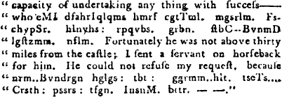

Introductory Material (separate file)
Index (separate file)
|
No. 53 (pg. 1-8)
No. 54 (pg. 9-16)
No. 55 (pg. 17-24)
No. 56 (pg. 25-32)
No. 57 (pg. 33-40)
No. 58 (pg. 41-48)
|
No. 59 (pg. 49-56)
No. 60 (pg. 57-64)
No. 61 (pg. 65-72)
No. 62 (pg. 73-80)
No. 63 (pg. 81-88)
No. 64 (pg. 89-96)
|
|
Sources for serials in this file
|
Nos. 65-79 (separate file)
Nos. 80-92 (separate file)
Nos. 93-104 (separate file)
|
For the New-York Weekly Magazine.
MORNING REFLECTIONS.
In one of my rambles
I saw a collection of people, some appeared highly elated, while others
in stupid indifference were not the least affected; I advanced, and
found two boys fighting; in attempting to part them, I had nearly
got myself in the same predicament, from a motley bullying fellow, whose
feelings, if he was possessed of any, were more becoming a tyger than a
human being. Those who were before mute, appeared delighted in the
prospect of another scene of brutality, expecting that we would decide
our dispute with blows; I plainly saw that the most prudent step
for me, would be to leave them as peaceable as possible in possession of
the field.
From what source these barbarous dispositions spring, and how they
can exist in a country where information is so easily attained, would,
to a foreigner, appear a mystery; every child of nature has a vacancy in
their understandings to be filled up, and why it should not be stored
with rational humanity, let parents judge. Slaves from dejection become
callous, hence barbarous sports are congenial with their minds, in
proportion to the severe treatment they receive from their matters.
How degraded is that master who neglects to inculcate moral
principles into his slave, and how much more wretched are parents who
attend not to the improvement of their own children; too many instances
of such omissions momentarily occur; a parent who entertains a
child with a bull-beat, fixes a supposition in the tender mind that the
creation was formed only for caprice, and is verified in their
tormenting domestic animals; with years the feelings naturally become
hardened, and the youth thus brought up, only waits an opportunity to
leave off all restraint. This is plainly evinced in war, when the law is
suspended, murders and robbery become fashionable, and those very men
who were peaceable inhabitants, with exultation take the lives of
strangers whom they have never seen, and by whom they have never been
injured.
T.
New-York, July 1, 1796.
1b
Description of the
famous SALT MINES at Williska
in Poland.
There are mines of
salt in Hungary, Catalonia, and many other parts of Europe, but the
greatest in the world is that at Williska in Poland, from which a great
part of the continent is supplied. Williska is a small town not far from
Cracow, and the mine has been worked ever since the year 1251, when it
was accidentally found in digging for a well. There are eight openings
or descents into this mine, six in the field, and two in the town
itself, which are most used for letting down the workmen, and taking up
the salt; the others being mostly used for letting in wood and
necessaries.
The openings are five square, and about four feet wide; they are
lined throughout with timber, and at the top of each there is a large
wheel with a rope as thick as a cable, by which things are let down and
drawn up: it is worked by a horse. When a stranger has a curiosity to
see these works, he must descend by one of these holes; he is first to
put on a miner’s coat over his clothes, and then being led to the mouth
of the hole by a miner, who serves for a guide, the miner fastens a
smaller rope to the larger one, and ties it about himself; he sits in
this, and taking the stranger in his lap, he gives the sign to be let
down. They are carried down a narrow and dark well to the depth of six
hundred feet perpendicular; this is in reality an immense depth, but the
terror and tediousness of the descent makes it appear to most people
vastly more than it is. As soon as the miner touches the ground at the
bottom, he slips out of the rope, and sets his companion upon his
legs.
The place where they are set down here is perfectly dark, but the
miner strikes fire, and lights a small lamp, by means of which (taking
the stranger he has care of by the arm) he leads him through a number of
strange passages and meanders, all descending lower and lower, till they
come to certain ladders by which they descend an immense depth, and this
through passages perfectly dark. The damp, cold, and darkness of these
places, and the horror of being so many yards under ground, generally
makes strangers heartily repent before they get thus far; but when at
bottom they are well rewarded for their pains, by a sight that could
never have been expected after so much horror.
(The conclusion in our next.)
2
This serial began in No. 45 of the New-York Weekly; the last 4 of its 12
installments are in Volume II. For sources, see the end of this
file.
THE FATAL EFFECTS OF INDULGING THE PASSIONS,
EXEMPLIFIED IN THE HISTORY OF M. DE LA
PALINIERE.
Translated from the French.
(Continued from page 410 of Vol. I.)
I informed her of my
determination, assuring her, at the same time, it was irrevocable.
I confess, however, notwithstanding my certitude, at moments, of
her hatred, I secretly flattered myself, that this declaration
would astonish, and produce a most lively emotion in Julia; and it is
certain, had I discovered the least signs of regret on her part,
I should have cast myself at her feet, and abjured a resolution
which pierced my very soul.
I was deceived in supposing myself hated; I was equally wrong in
imagining my conduct could inspire even momentary love. Great minds are
incapable of hatred; but a continued improper and bad conduct will
produce indifference, as it did with Julia. I had lost her heart
past recal. She heard me with tranquility, without surprize, and without
emotion. My reputation, said she, is already injured, and this will
confirm the unjust suspicions of the public; but if my presence is an
obstacle to your happiness, I am ready to depart; my innocence is
still my own, and I shall have sufficient strength to submit to my
fate.
Cruel woman! cried I, shedding a torrent of tears, with what ease do
you speak of parting!
Is it not your own proposal!
And is it not I who adore you, and you who hate me!
Of what benefit is your love to me; or of what injury is what you
call my hatred to you?
I have made you unhappy; I am unjust, capricious, mad; and yet if you
do hate me, Julia, your revenge is too severe; there is no misery can
equal your hatred.
I do not hate you.
The manner in which she pronounced this, said so positively I do not
love you, that I was transported beyond all bounds of patience;
I became furious, yet the next instant, imagining I saw terror in
the eyes of Julia, I fell at her feet. A tear, a sigh at
that moment, had changed my future fate, but she still preserved her
cold tranquility. I hastily got up, went to the door, and stopped.
Farewell for ever! said I, half suffocated with passion. Julia turned
pale, and rose as if to come to me; I advanced towards her, and she
fell back into her chair, ready almost to faint. I interpreted this
violent agitation, into terror. What, am I become a subject of horror!
cried I; well, I will deliver you from this odious object. So
saying, I darted from the chamber in an agony of despair.
My uncle was absent, I no longer had a friend, no one to advise or
counteract the rashness of the moment. Distracted, totally beside
myself, I ran to the parents of Julia, declared my intention,
added, Julia herself was desirous of a separation, and that I would give
back all her fortune.
They endeavoured to reason with me, but in vain; I informed them I
should go directly into the country, where I should stay three days, and
when I came back I expected to find myself alone in my own house.
I next
2b
wrote to Julia to inform her of my proceedings, and departed, as I had
said I would, the same evening for the country.
My passions were too much agitated to let me perceive the extent of
misery to which I condemned myself; and what seems now inconceivable
was, that though I loved my wife dearer than ever, and was inwardly
persuaded I might yet regain her affections, I found a kind of
satisfaction in making our rupture thus ridiculously public.
I never could have determined on a separation from Julia with that
coolness and propriety which such things, when absolutely necessary,
demand. I wanted to astonish, to agitate, to rouze her from her
state of indifference, which, to me, was more dreadful even than her
hatred. I flattered myself that, hearing me, she had doubted my
sincerity, and supposed me incapable of finally parting from her.
I likewise imagined that event would rekindle in her heart all her
former affection; and this hope alone was enough to confirm me in the
execution of my project. I took pleasure in supposing her
incertitude, astonishment, and distress; my fancy represented her when
reading my letter; beheld her, conducted by her relations, pale and
trembling, descend the stairs; saw her stop and sigh as she passed the
door of my apartment, and weep as she stepped into the carriage.
I had left a trusty person at Paris, with orders to observe her as
carefully as possible; to watch her, follow her, question her women, and
inform me of all she said or did at this critical moment; but the
relation was not long. Julia continued secluded in her chamber, received
her friends without a witness, and departed by a private stair-case
unseen of any one.
The same afternoon that she left my house she wrote me a note, which
contained nearly these words.
“I have followed your orders, and departed from a place whither I
shall always be ready to return, whenever your heart shall recall me. As
to your proposal of giving back a fortune too considerable for my
present situation, I dare expect as a proof of your esteem, it will
not be insisted upon: so to do is now the only remaining thing that can
add to my uneasiness. Condescend therefore, to accept the half of an
income, which can give me no pleasure if you do not partake it
with me.”
This billet, which I washed with my tears, gave birth to a crowd of
reflections. The contrast of behaviour between me and Julia forcibly
struck me, and I saw by the effects how much affection, founded upon
duty, is preferable to passion. I adore Julia, said I, and yet am
become her tormentor; have determined to proceed even to a separation;
she loved me without passion, and was constantly endeavouring to make me
happy; ever ready to sacrifice her opinions, wishes and will and
continually pardoning real offences, while I have been imputing to her
imaginary ones; and, at last, when my excessive folly and injustice have
lost her heart, her forgiveness and generosity have yet survived her
tenderness, and she thinks and acts the most noble and affecting duties
towards an object she once loved. Oh yes! I now perceive true
affection to be that which reason approves, and virtue strengthens.
3
Overwhelmed by such reflections, the most bitter repentance widened
every wound of my bleeding heart. I shuddered when I remembered the
public manner in which I had put away my wife; and in this fearful state
of mind, I had doubtless gone and cast myself at Julia’s feet,
acknowledged all my wrongs, and declared I could not live without her,
had I not been prevented by scruples, which for once were but too well
founded.
I had been a Prodigal and a Gamester and, what was still worse, had a
steward, who possessed in a superior degree the art of confusing his
accounts, which indubitably proves such a person to want either honesty
or capacity. Instead of at first discharging him, I only begged he
would not trouble me with his bills and papers; which order with him
needed no repetition, for it was not unintentionally he had been so
obscure and diffuse.
About six months, however, before the period I at present speak of,
he had several times demanded an audience, to shew me the declining
state of my affairs. At the moment, this made little impression upon me;
but after reading Julia’s note it came into my mind, and before I could
think of obtaining my pardon, I resolved to learn my real
situation.
Unhappily for me, my conduct had been such that I had no right to
depend on my wife’s esteem; and, if ruined, how could I ask her to
return and forget what was passed? Would not she ascribe that to
interest, which love alone had inspired? The idea was insupportable, and
I would rather even never behold Julia more, than be liable to be so
suspected.
With such fears I returned hastily to Paris. But what were my
sensations at entering a house which Julia no longer inhabited, and
whence I myself had had the madness and folly to banish her! Attacked by
a thousand afflicting thoughts, overwhelmed with grief and regret,
I had one only hope, which was, that by œconomy and care I might
again re-establish my affairs, and afterwards obtain forgiveness, and be
reconciled to Julia.
I sent for my steward, and began by declaring, the first step I
should take would be to return my wife’s fortune. He seemed astonished
at this, and wanted to dissuade me, by saying he did not think it
possible I could make this restitution without absolute ruin being the
consequence. I saw by this my affairs were even much worse than I
had imagined.
The discovery threw me into the most dreadful despair; for to lose my
fortune was, according to my principles, to lose Julia eternally.
Before I searched my situation to the bottom, I restored Julia’s
whole portion; I then paid my debts; and these affairs finished,
I found myself so completely ruined, that, in order to live,
I was obliged to purchase a trifling life-annuity, with what
remained of a large fortune. My estates, horses, houses, all were sold,
and I hired a small apartment near the Luxembourg, about three months
after my separation from my wife. My Uncle was not rich; he had little
to live on except a pension from the government, though he offered me
assistance, which I refused.
3b
Julia, in the mean time, had retired to a convent. On the very day I
had quitted my house, I received a letter from her in the following
terms:
“Since you have forced me to receive what you call mine, since you
treat me like a stranger, I think myself justified in doing the
same. When I left your house, the fear of offending you, in appearing to
despise your gifts, occasioned me to take with me the diamonds and
jewels which you had presented to me: it was your request, your command
that I should do so, and I held obedience my duty. But since you shew me
you will not act with the same delicacy, I have determined to part
with these useless ornaments, which never were valuable but as coming
from you. I found a favourable opportunity of selling them
advantageously for twenty-four thousand livres (a thousand pounds
sterling), which I have sent to your Attorney, as a sum I was indebted
to you, and which you cannot oblige me to take back, since it is not
mine.
“I have been in the convent of * * * for these two months past, where
I intend to remain for some weeks at least, unless you take me
hence.——We have a fine estate in Flanders; they say
it is a charming country. Speak but a word, and I am ready to go with
you, to live with you, to die with you.”
(To be continued.)
For the New-York Weekly Magazine.
THE DEAD INFANT; or, the AGONIZING MOTHER.
“She snatch’d the hope of youth, the pride of age
From the dark cerements of the shrouding sheet!”
——“Speak, Menander, let thy mother once
more hear the Voice that was her last comfort—” She begged in
vain, for Menander had closed his eyes in death, and with him had fled
the only happiness that his widowed mother possessed. She had but a
little while since bade farewell to another child, who had gone to that
bourne from whence there is no return. And now must she lose the
other—the thought was too much.—No one should part her from
him.—“I will still keep him,” said she, in the height of maniac
rage, “if he will not speak to me I shall still behold him—I will
still have my child.”
A friend who willingly would have been the means of allaying her
extreme sorrow, had taken the liberty, while the mother slept, of
arraying the corpse in the dress suitable for interment, and removed it
to the appointed place. The mother awoke—missed her child, and
hastened to the church-yard.—It was not yet deposited in the
earth.—In agony she tore the lid from the coffin—pressed him
to her heart, and returned home.—She kissed him---kept him continually encircled in her arms---nor would she again be parted from him.
She offered part of the necessaries that were set before her to the
insensate clay, nor did she eat because her son could not.---But nature could not long bear up against this
torrent of grief.---She once more pressed
him with redoubled force to her breast, again kissed his putrid
cheek—and slept her final sleep.
L. B.
4
This serialized novel began in No. 22 of the New-York Weekly; the last
41 of its 72 segments are in Volume II. For sources, see the end of
the Index file.
THE VICTIM OF MAGICAL DELUSION.
OR, INTERESTING MEMOIRS OF MIGUEL, DUKE DE
CA*I*A.
UNFOLDING MANY CURIOUS UNKNOWN HISTORICAL FACTS.
Translated from the German of Tschink.
(Continued from page 415 of Vol. I.)
“Your features, dear
Duke,” she resumed after a long pause, “have no resemblance with those
of this picture; and yet the originality of the face is so remarkable to
me, that it would afford me the greatest pleasure, if you would give
it me.”
“If your Majesty should know how dear it is to me—”
“Well, that will enhance the value it has in my eyes. Whenever I
shall look at the picture of the mother, I will remember the son.
I will give you my picture, in lieu of it; will you resign
it to me on that condition?”
I bowed respectfully, she opened a drawer, putting my picture in it,
and took another out of it, which was adorned with jewels much more
precious than that of my mother.
“Take it, Duke, and whenever you look at it, think that it is the
picture of—a very unhappy woman.” So saying, she gave me the
picture.
The accent and the mien with which these words were pronounced,
wounded my heart. I prostrated myself---“How, amiable Queen, should you really be unhappy?
and this pledge of your condescension should be to me a remembrancer of
your misfortunes? O, name the source of your sorrows, and if the power
of a mortal being can remove it, I will do it with pleasure, will
attempt it even at the peril of my life!” So saying, I pressed my
lips with vehemence on her hand.
“Rise! the interest which you take in my unhappiness renders me less
unfortunate. It will not be in your power to make me happy, though I
should be at liberty to unfold a mystery to you which never must be
revealed. Rise, Duke!” She stooped to raise me up, her cheek touched my
face, and a tremor of joy trembled through my frame. “Take courage!”
I exclaimed, “though neither my power nor that of any man living
should be able to render you happy, yet I know a person who possesses
supernatural powers, and I flatter myself he will not refuse to grant my
prayers. He shall make you happy, my Queen!”
She looked at me with weeping eyes, then up to heaven, and then again
at me. “Your prayer,” she said at length, “would be fruitless; for if an
angel would descend from heaven to offer me his assistance, he could not
restore me to happiness, while certain human laws and political
relations are in force.”——
I plainly perceived the dreadful struggles of her soul, and it would
have been cruel to render her victory more difficult by farther
persuasions.
I beheld with respectful silence the workings of her mind; however,
she could not but observe that I adored her---her looks bespoke the grateful emotions of her
heart.
4b
“You have told me a few minutes ago, that your mother is no more,”
she began after a long pause. “I hope your father is yet
alive?”
“I have little reason to think he is.”
The Queen turned as pale as a corpse. “You doubt?” she stammered,
“you doubt whether your father is alive?”
“A dangerous illness which has confined him to his bed, gives me
reason to apprehend---but what is the
matter with your Majesty?”
“Nothing---nothing at all---A dangerous illness did you say.”
“So he has informed me sometime since, by a letter, and requested me,
at the same time, to hasten to his arms, that he might see me once more
before his death, and give me his blessing.”
The Queen started up, and went to another part of the room, as if in
search of something, but soon came back again:
“He wants to see you and you are here?”
“Before I received the letter of my father, I had promised to that
Unknown of whom I have been speaking, that nothing should detain
me from travelling to Fr**ce, and imploring your assistance in behalf of
my unhappy country.”
“Poor father!” said the Queen, absorbed in melancholy, “how anxiously
will he have expected the arrival of his son—I fancy I see the
dying Marquis, how he extends his arms in vain to receive the child of
his love—”
“Does your Majesty know my father?” I enquired hastily.
She gazed at me. “If I know him?---no!---yes---I saw him several
times when at the court of my father---But
why do you ask this question?”---Without
giving me time to reply, she resumed, “Make haste! make haste, return to
your native country; perhaps he is yet alive---the sight of you will animate him with new strength,
he will recover in your arms, and perhaps be restored to health!” The
last words she pronounced with a visible joyful emotion.
“Shall I leave your Majesty,” I replied “without having my prayer granted? Is
my unhappy country to expect no assistance from a Queen whose sentiments
are so sublime? Is the picture of the best of women to be to me a
lasting mark of her favour and displeasure?”
She seemed to meditate, “It is true,” she said at length, “we have
entirely wandered from your concerns. Did you not tell me that you are
haunted every where by an apparition? I too have seen an apparition
some time ago. It was the ghost of my departed father, who, at midnight
drew the curtains of my bed, and said ‘I am very wretched my
daughter! neither prayers nor masses will give me relief, while Por****l
which we have usurped shall be submitted to the Sp***sh sceptre. O! my
daughter, if the least spark of filial love is left in thy bosom, if
thou wilt relieve me from unspeakable torments, then make use of all thy
interest at this court, in order to support the endeavours of those who,
at present, are secretly occupied to deliver Por****l from
5
her oppressors. A noble youth will arrive in a few days and implore
thy assistance. He is sent from Heaven; grant his prayer. He has a mole
on his left breast, which will be to thee a token of his mission.”
I started up. “That youth stands before your Majesty,” I exclaimed,
uncovering my breast, “behold here the mole. O! relieve the suffering
spirit of your father, relieve my country!”
She seemed to be in a trance, encircling me with her arms, and
straining me to her bosom. “Thy prayer is granted!” she said in a faint
accent.---No sooner had the last syllable
escaped her lips, when the sound of a little bell was heard in the
adjoining apartment. She disengaged herself from my neck and started
back, “Gracious heaven!---” she exclaimed,
pale and trembling, “the King is returned. Begone! for God’s sake
begone!”
I was going to obey her command; the stopped me: “Never reveal a word
of what has happened between ourselves,” she whispered; “leave the
palace and the kingdom as soon as possible: beware of the King,
I conjure you!”
I prostrated myself and encircled her knees, shedding tears of
anguish; wanted to take leave, but could not utter a single word. The
bell in the adjoining apartment was rung a second time; the Queen
disengaged herself seized with terror: “make haste!---flee!---O stay!” she
exclaimed when I hastened to the door, “come back!” She opened her arms
to receive me; I flew to her bosom; she imprinted three burning
kisses on my lips, and hurried into an adjoining apartment.
I do not recollect how I got out of the room. On the staircase I
observed first, that the same lady who had conducted me to the Queen was
walking by my side. We returned the same way by which I had entered the
palace, and I arrived happily at our hotel in the company of the
Count.
After I had communicated to him my success, I went to my apartment in
order to give audience to my thoughts; however I was not able to account
for the behaviour of the Queen, and my feelings during the whole scene.
Was it love that I felt for the Queen? certainly not; at least, my
sentiments for her were quite different from those I entertained for
Amelia; was it mere esteem that endeared her so much to me?
impossible!---My heart left me entirely in
the dark with respect to that point, as well as my reason. It is true,
one particular idea prevailed in my soul, however it appeared to
me ridiculous, as soon as I reflected on other circumstances. The
account which the Queen gave me of the apparition of the ghost of her
father, completed my confusion. Was it the work of the Unknown,
and did she really believe she had seen the ghost of her father? in that
case the grant of my prayer was perhaps merely the consequence of her
love for her father, whom she hoped to release thus from his sufferings;
even her tears, embraces, and kisses, were then nothing else but means
of alluring me to strain every nerve, in order to bring to a happy
conclusion an undertaking, from the execution of which the eternal
happiness of her father depended. But perhaps---and that, I thought,
5b
was not less possible---has she only
invented that apparition in order to prevent me from suspecting the real
source of her willingness to grant my prayer, and her confidential and
endearing deportment? Even the manner in which she mentioned the mole on
my breast, appeared to me an artifice which she might have made use of,
rather to assure herself of the identity of my person, than of my
mission from above; and this supposition received an additional
confirmation, by her singular behaviour, after the discovery.---Thus I was wandering in the mazy labyrinth of
conjectures and doubts, till sleep stole upon me by degrees, and shut my
heavy eyes.
We left P**is the following night, and directed our road to Sp**n as
Hiermanfor had ordered.
I stopped a few days at **cia, a hundred miles from the frontiers of
Fr**ce, in order to rest a little from the fatigues of my journey, and
received from the bribed surgeon a letter from my father, who informed
me he was in a fair way of recovery. This welcome intelligence animated
me with new life, and dispelled the gloom which had overcast my mind. We
continued our journey without delay, and arrived at ***pala, where we
alighted at the principal hotel. The first object that attracted my
attention, was a handsome well dressed man, whose features struck me at
a great distance, because I fancied I knew them. He was engaged in
conversation with a tall thin man, and did not observe me till I was
close by him. My sudden appearance seemed to surprize him, and the sight
of him produced the same effect upon me, for now I perceived that it was
Paleski, Amelia’s former valet. He approached me with evident marks of
uneasiness, and welcomed me in broken accents. I ordered him to
follow me to my apartment. The first question I put to him, was where
Amelia resided, and how she was. Paleski lamented it was not in his
power to give me the least information on that head. I enquired
after the Unknown, and he assured me that he had not seen him
since the last scene in the wood. “However,” said I, “you still owe me
an account of a dreadful accident concerning the Unknown, of
which you pretended to have been informed on your pilgrimage.” Paleski
hesitated a few moments, and then promised to satisfy my curiosity the
day following, being prevented by business of great importance from
doing it on the spot. I dismissed him, with the injunction not to
forget to come to my apartment in the evening of the next day. He
promised it; however I waited in vain for him, for in his room a
Capuchin friar came to my hotel, desiring to speak a few words to me in
private. I ordered him to be admitted, and was told by him that
Paleski had had a quarrel with some young men, who first had intoxicated
and then provoked him, and that he had received some mortal wounds, by
which he was confined to his bed at the hospital where he desired to see
me, in order to disclose to me important secrets. The friar offered to
conduct me to the hospital, and I drove thither in anxious
expectation.
When I alighted at the gate of the hospital, I met Count Clairval. He
seemed to be petrified when he saw me in the company of the friar.
“Whither are you going?”
6
he enquired at length. “To Paleski, who is on the brink of eternity.”
The Count changed colour, and whispered in my ear: “Don’t go, the fellow
is infected with a contagious disease.”---“You are mistaken (was my answer) he has been wounded
dangerously, as his confessor tells me.” “I have just come from
him,” the Count resumed with visible uneasiness, “the fever has deranged
his head, and he will tell you a number of foolish things.” “No matter,”
I replied, “I must see him, for he has sent me word that he
has important discoveries to make.” “What can he discover to you?” said
the Count, “Paleski has ever been an impostor.” “This will render his
confession on the brink of eternity so much the more remarkable. But I
must not lose a moment. Farewell, Count, till I see you again!” So
saying, I tore myself from him, and hastened with the friar to
Paleski’s apartment. When the nurse had left the room, the former said:
“you need but ring the bell, if you should want me, I shall be
within hearing.”---With these words he
went out of the room. Paleski stared at me for some time. The livid
colour of death covered his haggard countenance, and the most agonizing
anguish of a tormented conscience was strongly painted on his looks. “My
Lord!” he at length began, “I owe you a thousand thanks for your
condescension; I should undoubtedly have fallen a sacrifice to
black despair, if you had refused to give me an opportunity to unfold
mysteries to you which lie heavy on my mind.”
I took a seat close by the bed, seized with dreadful bodings.
(To be continued.)
A remarkable account of two Brothers, extracted from
Linschoten’s Voyages.
In the sixteenth
century, the Portuguese carracks sailed from Lisbon to
Goa. There were no less than twelve hundred souls on board one of
these vessels. The beginning of their voyage was prosperous; they had
doubled the Cape of Good Hope and were steering their course
North-east, to the great continent of India, when some Gentlemen on
board who having studied Geography and Navigation, found in the latitude
they were then in, a large ridge of rocks laid down in their
Sea-charts. They no sooner made this discovery, than they acquainted the
Captain of the ship with it, desiring him to communicate the same to the
pilot, which request he immediately granted, recommending him to lay by
in the night, and slacken sail in the day, until they should be past the
danger. It is a custom among the Portuguese absolutely to commit the
navigation, or sailing part of the vessel to the Pilot, who is
answerable with his head for the safe-conduct or carriage of the King’s
ships, or those that belong to private traders; and is under no manner
of direction from the Captain, who commands in every other respect. The
Pilot being a self sufficient man, took it as an affront to be taught
his art, and instead of complying with the captain’s
6b
request, actually crowded more sail. They had not sailed many hours,
before the ship struck upon a rock. In this distress the Captain ordered
the pinnace to be launched, into which having tossed a small quantity of
biscuit, and some boxes of marmalade, he jumped in himself with nineteen
others, who with their swords prevented the coming in of any more, lest
the boat should sink. In this condition they put off in the great Indian
ocean, without a compass to steer by or any fresh water, but what might
happen to fall from the heavens, whose mercy alone could deliver
them.
After they had rowed to and fro for four days the captain died: this
added, if possible, to their misery, for as they now fell into
confusion, every one would govern and none would obey. This obliged them
to elect one of their company to command them, whose orders they
implicitly agreed to follow. This person proposed to draw lots, and to
cast every fourth man overboard; as their small stock of provision was
not sufficient to sustain life above three days longer. They were now
nineteen persons in all; in this number were a friar and a carpenter,
both of whom they would exempt, as one was useful to absolve and comfort
them in their last extremity, and the other to repair the pinnace, in
case of a leak or other accident. The same compliment they paid to their
new captain, he being the odd man, and his life of much consequence. He
refused their indulgence a great while; but at last they obliged him to
acquiesce, so that there were four to die out of sixteen.
The three first, after having confessed and received absolution
submitted to their fate. The fourth was a Portuguese gentleman that had
a younger brother in the boat, who seeing him about to be thrown
overboard most tenderly embraced him, and with tears in his eyes
besought him to let him die in his room, telling him that he had a wife
and children at Goa, besides the care of three sisters: that as
for himself he was single, and his life of no great importance; he
therefore conjured him to suffer him to supply his place. The elder
brother astonished with this generosity, replied, That since the divine
Providence had appointed him to suffer, it would be wicked to permit any
other to die for him; especially a brother to whom he was so infinitely
obliged. The younger would take no denial; but throwing himself on his
knees held his brother so fast that the company could not disengage
them. Thus they disputed for awhile, the elder brother bidding him be a
father to his children, and recommended his wife to his protection, and
as he would inherit his estate, to take care of their common sisters;
but all he said could not make the younger desist. At last the elder
brother acquiesced, and suffered the gallant youth to supply his place,
who being cast into the sea, and a good swimmer, soon got to the stern of the
pinnace and laid hold of the rudder with his right hand, which being
perceived by one of the sailors, he cut off the hand with his sword:
then dropping into the sea, he frequently caught hold again with his
left, which received the same fate. Thus dismembered of both hands, he
made a shift to keep himself above water with his feet and two stumps,
which he held bleeding upwards.
7
This spectacle so raised the pity of the whole company that they
cried out, he is but one man! let us endeavour to save his life! and he
was accordingly taken into the boat; where he had his stumps bound up as
well as the place and circumstances would permit. They rowed all that
night, and the next morning, when the sun rose, as if heaven would
reward the piety and gallantry of this young man, they descried land,
which proved to be the mountains of Mozambique in Africa,
not far from a Portuguese colony. There they all safely arrived, where
they remained until the next ship from Lisbon passed by and
carried them to Goa.
At that city, Linschoten, a writer of good credit, assured us,
that he himself saw them land, supped with the two brothers that very
night, beheld the younger with his stumps, and had the story from their
mouths, as well as from the rest of the company.
Original: Jan Huyghen van Linschoten (1563-1611),
Voyages.
First English translation: 1598, rpt. by Hakluyt society
1885.
Notes: “At that city, Linschoten, a writer of good
credit, assured us, that he himself saw them land.”
The article is loosely adapted from chapter CXII, “Of certaine
memorable Things”, vol. II, pg. 179-181 in the reprint.
Links: http://www.archive.org/details/voyagejohnhuygh01tielgoog
and ...02...
SENTIMENTAL PERFUMERY.
A sentimental Perfumer recommends it
to the fine ladies, to furnish their toilets with the following
articles:
Self knowledge:—A mirror, shewing the full shape in the
truest light.
Innocence:—A white paint, which will stand for a
considerable time, if not abused.
Modesty:—Very best rouge, giving a becoming bloom to the
cheek.
Contentment:—An infallible smoother of wrinkles in the
face.
Truth:—A salve, rendering the lips soft and peculiarly
graceful.
Good humour:—An universal beautifier.
Mildness:—Giving a tincture to the voice.
Tears of Pity:—A water, that gives lustre and brightness
to the eye.
N.B. The constant use of these articles cannot fail rendering them
quite agreeable to the sensible and deserving part of mankind.
CURIOUS PROPOSITION OF A DEBTOR TO HIS CREDITOR
(From a London Paper)
A debtor in the
Fleet prison, lately sent to his creditor, to let him know that he had a
proposal to make which he believed would be for their mutual benefit;
accordingly the creditor called on him to hear it. “I have,” said
he, “been thinking that it is a very idle thing for me to be here and
put you to the expence of seven groats a week; my being so chargeable to
you has given me great uneasiness; and God knows what it may cost you in
the end; therefore what I would propose is this, you shall set me out of
prison, and instead of seven groats, you shall only allow me eighteen
pence a week and the other ten pence shall go towards the discharge of
the debt.”
7b
NEW-YORK.
MARRIED,
On Thursday evening last, by the Rev. Dr. Pilmore, David Hunt, Esq. of West-Chester, to the Widow Cooper of Fish-Kills.

METEOROLOGICAL OBSERVATIONS.
From June 26th to July 2d.
Days of the
Month. |
Thermometor observed at
8, A.M. 1, P.M. 6, P.M. |
Prevailing
winds. |
OBSERVATIONS
on the WEATHER. |
|
deg. | 100 |
deg. | 100 |
deg. | 100 |
8. | 1. | 6. |
8. | 1. | 6. |
| June 26 |
79 | |
84 | |
82 | |
SW. |
W. |
do. |
clear light wind. |
| 27 |
75 | |
80 | |
75 | |
N. |
NW. |
SW. |
clear | do. | do. |
| 28 |
78 | 75 |
80 | |
79 | |
SW. | do. | do. |
clear | do. | cloudy. |
| 29 |
81 | 50 |
83 | |
79 | |
W. |
NW. | do. |
rain thund. and lightn. |
| 30 |
70 | |
79 | |
77 | |
N. | do. | do. |
clear | do. | do. |
| July 1 |
69 | 50 |
81 | 50 |
79 | |
NW. |
W. |
do. |
clear. | do. | do. |
| 2 |
72 | |
82 | |
72 | |
NW. |
W. |
SW. |
clear | do. | do. |
For June 1796.
|
deg. |
100 |
| Mean temperature |
of the thermometer |
at 8 A.M. |
71 |
37 |
| Do. |
do. |
of the |
do. |
at 1 P.M. |
73 |
97 |
| Do. |
do. |
of the |
do. |
at 6 P.M. |
68 |
74 |
| Do. |
do. |
of the whole month |
71 |
6 |
| Greatest monthly range between the 12th and 26th |
25 |
25 |
| Do. |
do. in 24 hours |
the 3d |
9 |
50 |
| Warmest day the |
26 |
84 |
|
| Coldest do. the |
12 |
59 |
50 |
| 10 |
Days it rained. A large quantity has fallen this
month. |
| 15 |
do. it was clear at |
8 1 and 6 o’clock. |
| 6 |
do. it was cloudy at |
do. do. |
| 23 |
do. the wind was light at |
do. |
| 16 |
do. the wind was to the westward of north
and south. |
| 3 |
times it thundered and lightned in this month. |
For the New-York Weekly Magazine.
OF THE BEAUTIFUL AND VIRTUOUS.
In days of old,
historians write,
There liv’d a maid of wond’rous charms,
Whose very name would oft invite
And pre-engage the heart that warms.
The gods of yore did try each suit
To win this all-alluring fair;
But neither men nor gods could do’t,
She listen’d callous to their pray’r.
In modern days we too are blest
With Nature’s best, completest art,
Her breast is with the virtues drest,
And dignity exalts her heart.
If gods cou’d once more live again,
And eye the Clara of our day,
Their very souls would burst with pain,
And sigh alas! for death’s decay.
Ye virtuous youth who search for worth,
And look with hate on idle mirth,
Direct your steps where Clara lives,
And you may get what virtue gives.
LUCIUS.
Pine-Street, June 28th, 1796.
8
For sources, see the end of the second installment (pg. 16).
For the New-York Weekly
Magazine.
AN EPISTLE FROM OCTAVIA TO ANTHONY.
From the French.
BY MATILDA.
While Anthony without the chance of
arms,
Contemn’d by all, and lost to glory’s charms,
A woman’s signal leads across the wave,
To share the just derision of the brave:
I shudder at thy weakness and thy shame,
The price a worthless mistress pays thy flame;
Now Rome disowns thee—blushes to have borne
The power of him who fills the world with scorn;
O hero still belov’d, ere quite undone,
Recal the palms thy youthful valour won;
Recal those times, those actions, that applause,
That join’d the senate people in thy cause,
When Rome in Cæsar’s friend beheld him live,
And emulation all his worth revive.
Then judge, unhappy, of thy heart’s estate,
Thyself avenging Brutus’ hapless fate;
Betray’d by female arts to boast a flame,
That leads to thy misfortune and thy shame;
’Tis she that stifles all the warrior’s glow,
And tears the fading laurel from thy brow.
O husband mid thy weakness, still too dear
Are such the actions of a love sincere;
Grant but these lines with true affection fraught,
The calm indulgence of unbiass’d thought;
Does not remorse, even in some tender hour,
O’er thy fond soul extend her chilling power;
How oft do Rome and sad Octavia rise,
And glance reproaches to thy mental eyes;
Ah if ’tis so, and thy repentant soul
Has felt the salutary griefs controul,
Permit, at length permit this trembling hand,
To mention honour’s claim and love’s demand;
And if some crime thy just aversion draws,
Tell, only cruel, tell the hapless cause.
My brother all prepar’d, assum’d his arms,
When war between you kindled fierce alarms;
To reunite two heroes then became
Of me, the glorious and successful aim;
Your jarring int’rests in one point to blend,
And change each stern opponent to a friend;
Our marriage made—I hop’d to ratifie
Your union, and confirm the mutual tie.
Th’ Egyptian queen, her love, your weakness prov’d,
No apprehensions in my bosom mov’d.
Ev’n Cleopatra secretly defy’d,
I hop’d to humble guilty beauty’s pride,
And wish’d in loving thee, th’exalted fate,
To punish her, and greatly serve the state.
Rome sought, applauding, from my eyes to raise,
The pleasing prospect of serener days;
These glorious aims inflam’d my ardent breast,
And tender prepossession did the rest.
That happy day on which thy faith was giv’n,
Bestow’d dear Anthony, the joys of heaven!
What pomp, great Gods! and with what transport join’d
To sway the lords of Rome, and of mankind;
I dissipated rage and banish’d art,
And rul’d a brother’s and a husband’s heart.
8b
Extinguish’d in her breast discordant hate,
And reign’d the sovereign of the Roman state.
A pardonable pride I dare confess,
That generous pride that only knows to bless;
The love of Cleopatra, her alarms,
Augmented both my triumphs and my charms.
The conqu’ror crown’d his conquest with repose,
And own’d the laws affection dar’d impose.
With war and with Octavia shar’d his life,
Augustus rivalled and ador’d his wife.
What did I say—That Rome which saw thee
yield,
Was not to shew me a sufficient field,
Thou would’st, thy soul’s supreme content to prove,
Teach all mankind thy happiness and love;
T’admire Octavia ev’ry eye must join,
And render her more fair and dear to thine.
O days of splendour pass’d on Athen’s plains,
Where all things seem’d but to cement our chains,
That race by Mars and Pallas jointly crown’d,
Who arts diffuse to all the world around.
Witness’d my happiness so pure serene,
And press’d each day to ornament the scene.
Mild in my arms repos’d the warrior’s art,
Thy face expressive of thy tranquil heart;
No more proclaim’d a victor’s pride you knew,
And peaceful virtue gain’d your valour’s due;
That Athens, Rome, with envy view’d before,
A Roman countenance embellish’d more.
(To be concluded in our next.)
For the New-York Weekly
Magazine.
PITY.
Come, gentle pity,
sooth my breast,
Pity, thou attribute divine,
Come softly lull my heart to rest,
And with my tears O mingle thine.
How sweet is sympathising grief,
How grateful to the breast of woe,
From sorrow’s pangs we find relief
In tears that from sweet pity flow.
Thus sighing to the passing gale,
Or wand’ring o’er the rugged steep,
Oft have I told my mournful tale,
And wept my sorrows in the deep.
Few are my days, yet full of pain
I sorrowing tread life’s devious way,
No hopes my weary steps sustain,
My grief, alas! finds no allay.
See yonder rose that withering lies,
Lost are the beauties of its form,
Torn from its fost’ring stem it dies,
A victim to the ruthless storm.
How fair it shone at early morn,
How lovely deck’d in verdant pride,
It blush’d luxuriant on the thorn,
And shed its sweets on ev’ry side.
How fair the morning of my day,
Now chang’d, alas! to horrid gloom,
My joys are fled, far, far away,
And buried lie in Anna’s tomb.
C. S. Q.
New-York, June 28, 1796.
NEW-YORK: Printed by JOHN BULL, No. 115,
Cherry-Street, where every Kind of Printing work is executed with
the utmost Accuracy and Dispatch.—Subscriptions for this Magazine (at 2s. per month) are taken in at the
Printing-Office, and by E. MITCHELL, Bookseller, No. 9, Maiden-Lane.
Description of the
famous SALT MINES at Williska
in Poland.
(Concluded from page 1.)
At the bottom of the
last ladder the stranger is received in a small cavern, walled up,
perfectly close on all sides. To encrease the terror of the scene, it is
usual for the guide to pretend the utmost terror on the apprehension of
his lamp going out, declaring they must perish in the mazes of the mine
if it did. When arrived in this dreary chamber, he puts out his light as
if by accident, and after much cant, catches the stranger by the hand,
and drags him through a narrow creek into the body of the mine, when
there bursts at once upon his view, a world, the lustre of which is
scarce to be imagined. It is a spacious plain, containing a whole
people, a kind of subterraneous republic, with houses, carriages,
roads, &c. This is wholly scooped out of one vast bed of salt, which
is all a hard rock, as bright and glittering as crystal; and the whole
space before him is formed of lofty arched vaults, supported by columns
of salt, and roofed and floored with the same, so that the columns, and
indeed the whole fabric, seem composed of the purest crystal.
They have many public lights in this place continually burning for
the general use, and the blaze of those reflected from every part of the
mine, gives a more glittering prospect than any thing above ground can
possibly exhibit. Were this the whole beauty of the spot, it were
sufficient to attract our wonder; but this is but a small part. The salt
(though generally clear and bright as crystal) is in some parts tinged
with all the colours of precious stones, as blue, yellow, purple, and
green; there are numerous columns wholly composed of these kinds, and
they look like masses of rubies, emeralds, amethysts, and sapphires,
darting a radiance which the eye can hardly bear, and which has given
many people occasion to compare it to the supposed magnificence of
heaven.
Besides the variegated forms of these vaults, tables, arches, and
columns, which are formed as they dig out the salt for the purpose of
keeping up the roof, there is a vast variety of others, grotesque and
finely figured, the work of nature, and these are generally of the
purest and brightest salt.
9b
The roofs of the arches are in many places full of salt, hanging
pendant from the top in the form of icicles, and having all the hues and
colours of the rainbow; the walks are covered with various congelations
of the same kind, and the very floors, when not too much trodden and
battered, are covered with globules of the same sort of beautiful
materials.
In various parts of this spacious plain stand the huts of the miners
and families, some standing single, and others in clusters like
villages. They have very little communication with the world above
ground, and many hundreds of people are born, and live all their lives
here.
Through the midst of this plain lies the great road to the mouth of
the mine. This road is always filled with carriages loaded with masses
of salt out of the farther part of the mine, and carrying them to the
place where the rope belonging to the wheel receives them. The drivers
of these carriages are all merry and singing, and the salt looks like a
load of gems. The horses kept here are a very great number, and when
once let down, they never see the day-light again; but some of the men
take frequent occasions of going up and breathing the fresh air. The
instruments principally used by the miners are pick-axes, hammers, and
chissels: with these they dig out the salt in forms of huge cylinders,
each of many hundred weight. This is found the most convenient method of
getting them out of the mine, and as soon as got above ground, they are
broken into smaller pieces, and sent to the mills, where they are ground
to powder. The finest sort of the salt is frequently cut into toys, and
often passes for real crystal. This hard kind makes a great part of the
floor of the mine, and what is most surprising of all in the whole place
is, that there runs constantly over this, and through a large part of
the mine, a spring of fresh water, sufficient to supply the
inhabitants and their horses, so that they need not have any from above
ground. The horses usually grow blind after they have been some little
time in the mine, but they do as well for service afterwards as before.
After admiring the wonders of this amazing place, it is no very
comfortable remembrance to the stranger, that he is to go back again
through the same dismal way he came.
Earlier publication: “The New magazine of knowledge concerning
Heaven and Hell, and the Universal World of Nature” Vol. I, June
1790
Background: The Polish spelling is Wieliczka. The salt mines
are currently a major tourist attraction.
10
THE FATAL EFFECTS OF INDULGING THE PASSIONS,
EXEMPLIFIED IN THE HISTORY OF M. DE LA
PALINIERE.
Translated from the French.
(Continued from page 3.)
How shall I describe
my feelings at reading this letter! Oh, Julia! cried I, lovely, adorable
woman! Is it possible! O God! Can it be that I have accused you of
perfidy!—have done every thing in my power to dishonour you!---have abandoned you! What! a heart so
delicate, so noble, did I once possess, and have I lost it! Oh misery!
I might have been the happiest of men; I am the most wretched.
And can I, in my present circumstances, accept the generous pardon thou
offerest! O, no! Better die than so debase myself! No, Julia, though
thou mayest truly accuse me of extravagance and injustice, thou never
shalt have reason to suspect me of meanness.
Streams of tears ran down my cheeks, while I reasoned thus.
I wrote twenty answers, and tore them all: at last I sent the
following:
“I admire the noble manner of your proceeding, the sublimity of your
mind; and this excess of generosity is not incomprehensible to
me. Yes, I conceive all the self-satisfaction of saying, All
which the most tender love can inspire, virtue alone shall make me
perform.---But I will not take
advantage of its empire over you—Live free, be happy, forget
me.——Adieu! Julia---You have
indisputably all the superiority of reason over
passion———and yet I have a heart, perhaps, not
unworthy of yours.”
With this letter I returned the twenty-four thousand livres, ordering
it to be told her, that the diamonds having been given at her marriage,
were undoubtedly her’s; and having once received, she had no right to
force them back upon me.
I had now made a sacrifice the most painful; Julia had offered to
consecrate her life to me, and I had renounced a happiness without which
there was neither happiness nor peace on earth for me. My grief,
however, was rather profound than violent; I had offered up
felicity at the altar of honour, and that idea, in some measure,
supported me. Besides, I did not doubt but my letter would prove to
Julia that, notwithstanding all my errors, I yet was worthy of her
esteem. The hope of exciting her pity, and especially her regret at
parting from me, again animated my heart: I supposed her relenting,
and grieved, and the supposition gave me a little ease.
I had lived about a fortnight retired in my lodging near the
Luxembourg, when I received an order to depart immediately, and join my
regiment. Peace had been declared near a year, and my regiment was in
garrison two hundred leagues from Paris. I was one of the most
ignorant Colonels in Europe; besides that I still secretly cherished the
fond hope Julia was not lost to me for ever; though I perfectly felt I
could not recede, nor could she make any further advances, yet I still
flattered myself some unforeseen event would again confer a blessing on
me which I had never sincerely renounced.
In fact, I could not resolve to quit Paris, and put the intolerable
space of two hundred leagues between me and Julia; I wrote
therefore to the minister, to obtain leave
10b
of absence, which was refused me, and I instantly threw up my
commission.
Thus did I quit the service at five-and-twenty, and thus did passion
and folly direct my conduct in all the most important events of
life.
This last act of extravagance was the cause of great vexation to me;
it increased and completed the difference between me and my Uncle, who
was previously very angry with me for rashly separating from my wife: so
that I now found myself absolutely forsaken by every person in the world
whom most I loved.
At first, indeed, I did not feel the horror of my situation, being
solely occupied by one idea, which swallowed up all the rest.
I wished to see Julia once more. I imagined, if I could but
find any means of appearing suddenly and unexpectedly before her,
I should revive some part of the affection she formerly had for me.
But I could not ask for her at the convent; for what had I to say? She
never went out, and her apartment was in the interior part of the house;
how then could I come to the sight of her?
I had a valet, who happened to be acquainted with a cousin of one of
the Tourieres*. I spoke to this man, and got him to give me a
letter for his cousin the Touriere, in which I was announced as one of
his friends, and steward to a country lady, who wanted to send her
daughter to a convent.
Accordingly, at twilight, I wrapped myself up in a great coat, put on
an old slouched hat, and went to the convent. The Touriere was exactly
such a person as I wished; that is, she was exceedingly talkative and
communicative. At first I put some vague questions to her, and
afterwards said, my mistress was not absolutely determined to send her
daughter to a convent; whence I took occasion to ask if they had many
boarders.
Oh yes, replied she, and married women too, I assure you. Here my
heart beat violently, and she, with a whisper, a smile, and an air
of secrecy, added——You must know, Sir, it is this very
convent that incloses the beautiful Madame de la Paliniere, of whom you
have certainly heard so much.
Yes---yes---I have---She is a charming woman.
Charming! Oh beautiful to a degree! It is a great pit!---but it is to be hoped God will grant her the gift of
repentance.
Repent! of what?
Sir!——Yes, yes, Sir, it is plain enough you are just come
from the country, or you could not ask such a question. So you don’t
know!
I have heard she had a capricious unjust husband,
but————
Oh yes! That to be sure she had; every body talks of his folly and
brutality, but that will not excuse her conduct. I hear every
thing, and can assure you she is here much against her inclination; nay,
she would not have come, had she not dreaded an order for
imprisonment.
Imprisonment! Oh! heavens!
11
Not for her good behaviour, as you may suppose. Why she is neither
suffered to go out, nor see any person whatever, except her nearest
relations. Oh! she leads a very melancholy life! You may well think, our
Nuns won’t have any communication with a wife false to her husband’s
bed. The very Boarders will not look at her; every body avoids her as
they would infection. God forgive her! she must do penance yet: but
instead of that, she is playing upon the harpsichord all day long; is as
fresh as a rose, and looks better every day: she must be stubborn in
sin.
And does not she seem sorrowful?
Not at all; her woman says, she never saw her so contented; for my
own part, I am charitable, and hope she may yet be reclaimed, for
she has not a bad heart; she is generous and charitable; and yet she has
insisted upon having all her fortune restored, and has left her husband
in absolute want. You will tell me he is mad and foolish, has ruined
himself nobody knows how, and has just suffered the disgrace of being
degraded in the army. I own they have taken away his commission:
yes, he has lost his regiment; but yet, I say, a husband is a
husband. The poor man wrote to her about a month since to beg her
assistance, but no! she told him plainly, no! ’Tis very hard
though!---I have all these things from the
best authority; I don’t talk by hearsay; I have been fifteen
years in this house, and, I thank my God, nobody could ever say I
was a tatler, or a vender of scandal.
The Touriere continued at her own ease praising herself; I had not
the power of interruption left. She was loudly called for, kept talking
all the way she went, and in a few minutes returned.
It was the relation of a young Novice who takes the veil to-morrow,
that wanted me, said she. Ah! now; there; there is a true convert!
A call of grace! Gives fifty thousand francs (2083l. sterling) to
the convent! You ought to see the ceremony: our Boarders will all be
there, and you can take a peep through the church window.
At what o’clock will it begin?
Three in the afternoon. The Novice is as beautiful as an angel, and
is only twenty. Had she not lost her lover and her father in the same
year, the would never have attended to the blessed inspiration of the
Spirit. How good Providence is to us! Her father died first, and her
lover, who was imprisoned at Saumur, about five months after, of a
broken heart, as it is thought.
What was his name? cried I, in an agony not to be described.
The Marquis of Clainville, replied the Touriere, and our novice is
called Mademoiselle d’Elbene.
This last sentence went with inexpressible torture to my heart.
I rose suddenly, and ran out with an exclamation that threw the
Touriere into astonishment and terror.
Arrived at my lodgings, I threw myself upon the sopha, penetrated,
torn, and confounded at all that I had heard. The veil was rent away,
the illusion passed, I knew at length the extent of my misery; saw
to what a point my extravagant conduct had stained my wife’s
11b
reputation; felt how impossible it was for this innocent victim of my
destruction truly to pardon the injury I had done her, by destroying the
most precious thing a woman possesses; and owned, that the unjust
contempt with which the world treated her, ought incessantly to
reanimate her resentment against me its author. To her virtue alone
could I now attribute her generous manner of acting.
In fact from the account given by the Touriere, it was evident that
Julia, consoled by the testimony of a good conscience, was resigned to
her fate, and lived at peace; which she could not continue to do, but by
burying my memory in eternal oblivion.
(To be continued.)
For the New-York Weekly Magazine.
ON GOD’S PROVIDENCE IN THE FORMATION OF HIS CREATURES.
When God created man
he endowed him with certain principles of action, which distinguished
him from the animal or brute creation.---It is a question which involves in it much
disquisition and philosophy, whether men were aboriginally white, black,
or brown; but the popular opinion with us seems to be, that all men were
radically white. We see around us on the face of nature, people of
various complexions, some of whom are the sons of science and education;
others beclouded by the chilling mists of profound ignorance: Those,
however, that are more enlightened presumptuously advance in the face of
truth, that they alone are favoured mortals, because of their
superiority in the knowledge of things.---Fallacious reasoning!---God is an equal providence, his endowments are not
partial but universal. He has given all men equal abilities, which time
and circumstance have rendered more conspicuous in some; and if the same
opportunities, the same education, the same youthful care and social
intercourse had been extended to all---all would have been equally conspicuous. The
sons of Ethiopia would vie with the ablest of mankind, we should blush
to call them slaves, and attach to their reputation a more becoming
appellation. Were I to argue from other deductions, I should justly
be accused of an attempt to argue a defect in the God of nature---impossible!---It may not be improper here to ask the ingenious
advocates for opposite principles, what grounds they rest their theory
upon. Alive to the feelings of sensibility, with reluctance I anticipate
their answer: “Appearances are the criterions by which we judge!”
Generous Deity! is a whole nation to be imposed upon and bear the
shackles of ignominious bondage, because there is an external difference
of appearances? I shudder at concomitant reflections! and must
suspend the inquiry with deploring their miserable condition if they
ever consult their consciences.
LUCIUS.
Pine-Street, June 28, 1796.
12
For the New-York Weekly
Magazine.
IF A STORY BE NOT GOOD, SAY ‘TIS A DUTCH
ONE.—ERASMUS.
A Good Name is better than precious
Ointment——SOLOMON.
’Tis certainly a
strange and a ludicrous sentiment—there appears to be such a
contrast in the objects—I presume, in former days, ointments were
in greater estimation than at present---for it seems to have been as currently talked of as
bank bills with us.---I recollect
his father’s wonderful conception, that love and unity were similar to
the precious ointment upon the head, that ran down upon the beard,
even Aaron’s beard that went down to the skirts of his
garments.---I cannot conjecture the
reason for their prizing it so highly:---Is this the ointment or oil, pray, that made their
kings? Well, admitting it is,---why should
it be set along side a good name.---We lessen the importance of the noble object by
placing it with a trivial one----The fact
is, I believe, Solomon said it because he happened to hear it (like
many other things) at home. Does there need much inspiration to raise so
noble a thought?---What if he said,
a good name is better than 300 wives and 700 concubines---would it not have made an admirable sound
indeed? Yes, how striking it would have been, had he only said, ’tis
better than 1000 stalls of horses---how
some penetrating diving old gentlemen would have eyed it thro’
their spectacles.---But such trivial
things as a few wives, concubines, or horses extra did not
pop into his mind just then. When I recollect how far the Queen of the
South came to see his wisdom, and that, in fact, he was
acknowleged able to distinguish and divide a hair twixt south and
south-west side---I must blush and confess
it folly and presumption to smile at him---though I had nothing else to do and cannot
sleep;---but truly it would have read so
handsomely to me had it been a good name is better, far better,
(understand me right,) than the best of gingerbread.
R. G. W.

EFFECT OF MUSIC.
(From a London Paper.)
The effect of music
on the senses was oddly and wonderfully verified, during the mourning
for the late Duke of Cumberland: A taylor had a great number of black
suits, which were to be finished in a very short space of time---among his workmen, there was a fellow who was
always singing Rule Britannia, and the rest of the journeymen
joined in the chorus.---The taylor made
his observations, and found that the slow time of his tune retarded the
work, in consequence, he engaged a blind fidler and placing him near the
workshop, made him play constantly the lively tune of Nancy
Dawson.---The design had the proper
effect---the taylors elbows moved obedient
to the melody, and the clothes were sent home within the prescribed
period.
OBSERVATION.
It is ungenerous to give a man
occasion to blush at his own ignorance in one thing, who perhaps may
excel us in many.
12b
THE VICTIM OF MAGICAL DELUSION.
OR, INTERESTING MEMOIRS OF MIGUEL, DUKE DE
CA*I*A.
UNFOLDING MANY CURIOUS UNKNOWN HISTORICAL FACTS.
Translated from the German of Tschink.
(Continued from page 6.)
“But, my Lord,” he
continued, folding his hands, “will you be able to pardon the manifold
injuries which you have received from me, if I can convince you that I
have been only the tool of greater impostors.”
“Speak frankly and without reserve! I will forgive you every
thing.”
“My Lord!---you are in dreadful hands. That Unknown---”
“Who is he?” I interrupted him impatiently.
“Who he is, I do not know! as sure as I am going to appear
before the omniscient searcher of hearts, I do not know it. He
always has observed the greatest secrecy on that head. ‘I am who I
am!’ he always replied, when I questioned him on that point, ‘and I
never am what I seem to be!’ Three days before you made your first
appearance at the castle of the Countess, he came late at night to the
gate, disguised as a beggar, and enquired for me. Supposing that he
wanted alms, I gave him a piece of money. He raised a loud
laughter, whilst he took a handful of ducats out of his pocket, and put
them in mine. ‘This is only a prelude to what I am going to do for you,’
said he, without paying the least regard to my astonishment, ‘if you
will assist me in executing a plan which I have formed, without
betraying our connection to the Countess.’ ‘And what plan is it?’ ‘It is a very
innocent one,’ he replied, ‘I wish to work some miracles in the
castle, and should be glad if you would assist me. ‘For what purpose?’
‘I want to make two people happy,’ was his reply, ‘the Countess,
and a young nobleman, who will arrive within three days. The Countess
abandons herself too much to her grief, on account of her deceased
husband, and I know no better means to cure her of it, than to banish
the dead husband from her heart by a living lover. As a mediator between
the Countess and the young nobleman, I must render myself important
to both, and for that purpose I must work miracles; if I succeed in
getting the sway over their understanding, then I shall easily make
myself master of their hearts.’ He then asked me whether he could rely
on me, and if the rest of the servants could not be gained by money?
I assured him of my readiness to serve him, and promised to attempt
the latter, in which I succeeded. My fellow servants were easily bribed,
because they were persuaded that it was a laudable, or at least an
innocent undertaking in which they were to be engaged. The cheat which
was to be played on you and the Countess was believed to be innocent, as
it appeared to be a means of gaining a salutary purpose. To be brief,
I informed the Unknown the day following, that all of us
were firmly determined to assist him in the execution of his plan;
a resolution which he again rewarded with a handful of ducats.
13
“As soon as the Countess was gone to bed, I introduced the generous stranger to
my fellow servants. He soon convinced us that he was no stranger in the
castle; for he knew every apartment, and every corner. ‘I was
acquainted with the Prince of Ge**,’ he said, ‘the former possessor of
the castle. He was extremely fond of physic, and chemistry, and his
great skill in these sciences procured him publicly, the name of a man
of great learning, and privately that of a sorcerer. His rank protected
him against the fate which would have been the portion of every body
else, if suspected of sorcery. He built the castle in this forest, in
order to indulge here, without being interrupted by intruding visitors,
his inclination for physical and chemical operations, by means of which
he frightened many uninvited guests out of the castle. The most
extraordinary tricks he played in the last room, on the first floor,
which is connected by means of a machine, with a secret apartment on the
ground floor. The latter having neither a door or windows, has very
likely not yet been discovered by any of the inhabitants of the
castle.’ This is really the case. The Unknown
demanded a candle, and requested us to follow him. He led us to a wall
which we never had noticed. There he took a stone out of the floor, put
his arm into the opening, and pushed a part of the wooden wall back. We
followed him through the aperture of a small room, where we instantly
beheld the machine of which we had been speaking. It consisted of a
strong spring, which was connected with a large wooden cone, fitted in
the ceiling, and fastened by a bolt. As soon as the bolt was pushed
back, and somebody placed himself on the cone in the upper apartment,
the spring was pressed down and the person sunk into the lower
apartment, between four posts, in the joints of which the cone was
sliding down. However as soon as one jumped from the cone, the spring
made it snap back by the elastic force into its former place. In order
to convince us of it, the Unknown mounted up to the ceiling upon
a ladder which was in the room, and suspended some heavy weights to
hooks which were fastened to the under part of the cone, which made it
slide down as soon as he removed the bolt, and was forced up again into
its former place, by the elastic force of the spring, as soon as he had
taken away the weights. This machine could not be perceived in the upper
apartment, the floor of which consisted of cubical squares, resembling
in form, colour and position, the moveable cone to which they seemed to
be closely joined.
“Besides this machine, he shewed us a crooked tube, which was fixed
to the ceiling, and reached down to the middle of the room. This tube,
said the Unknown, is in communication with the wall of the upper
apartment where it ends in the open jaw of one of the four lions which
are standing in the corner of that room. By means of that tube, one
cannot only hear very distinctly in this room what is spoken in the
upper apartment, but one hears equally distinctly what one speaks here,
without suspecting from whence the voice proceeds. You know, my lord,
from your own experience
13b
how well the Unknown knew how to render these machines
serviceable to his plan.
“Before the Unknown left the castle, he asked me in what
apartment the Countess was used to receive strangers? ‘In the room,’
I replied, ‘contiguous to that in the floor of which the moveable
cone is fixed.’—He left us with visible marks of satisfaction.
“The next day he came again to the castle, and meeting me at the
gate, exclaimed in accents of joy, ‘To-morrow already we must begin to
work miracles. I have invented a plan which cannot miscarry. The
young nobleman will come to the castle to-night. Place some lights in
the windows of the upper and lower apartments, that he may find his way
to the castle, and order the gates to be opened without delay, as soon
as you hear him ring the bell. The Countess, who will be gone to bed by
that time, cannot see him before to-morrow morning. When you shall have
introduced him to her, then you must return to her apartment, after a
short interval and deliver this box and the note which I am going to
give you, into the hands of the Countess. If you are asked who has
brought it, describe me as you have seen me the first time I came to the
castle gate. The young nobleman will be desirous to see and to speak to
me, but you must tell him that I had left the castle after the box and
the note had been delivered. He will order you to pursue me without
delay; however, I will save you that trouble, for I shall stay at
the castle, and surrender to you as soon as you shall want me. Keep some
cords ready, which must be cut asunder and slightly sewn again together.
With these cords you must tie me, and charge some of the servants to
conduct me to the Countess, pretending that I had refused obstinately to
return. Then I shall tear the cords asunder, fly into the adjoining
room, and bolt the door after me. Meanwhile you must expect me in the
lower apartment and unfasten the bolt beneath the cone, that I may sink
down as soon as I shall get upon the latter. When the cone shall have
snapt back into its former place, you must be ready to fasten it by
means of the bolt. When the Countess and her guest, impatient to seize
me, shall force open the door and find the room empty, they will fancy
me to be a supernatural being, not being acquainted with the secret of
the machine.’
“You know my Lord, how punctually and successfully this design has
been put into execution. An accident was the cause of a second more
important plan, the execution of which has not been less successful. The
Unknown, who after his disappearance was listening attentively,
in the secret chamber, heard among other discourses, by means of the
tube, the prayer which the Countess addressed to him on account of the
apparition of her deceased Lord. He reflected a few minutes on the
possibility of granting it, and promised to satisfy her wishes. The tube
was the channel through which the Unknown conveyed his answer to
the Countess.”
Seized with astonishment at Paleski’s narration, and impatient to
hear its continuation, I had not interrupted him once; but now I
could not refrain any longer from speaking. “Then Amelia is really
innocent?” I exclaimed,
14
“and was not privy to the artifices of the Unknown?”
“Not in the least!” Paleski replied, “as I wish to be saved! The
Countess is innocent; she has been deceived as well as your Lordship,
and probably her faith in the supernatural power of the Unknown,
is still as firm as it was then.”
This declaration lessened my anger at having been deceived in so
villainous a manner, I begged Paleski to continue his account.
“Does your Lordship recollect all the particulars of the apparition
scene?”
“Yes! I do.”
“Well, then I will explain it to you. On the day previous to the
magical farce, the Unknown told me that he had gained over to our
party the brother-in-law of the Countess, who had arrived lately, in
order to surprise Amelia unexpected, and promised to act the part of the
ghost—”
“Impossible!” I exclaimed, “you must be mistaken. At least you are
not speaking of Count Clairville?”
“Yes the very same person who is at present your travelling
companion.”
A chilly tremor thrilled through my whole frame; my mind measured
with a look of horror the time past and present. I beheld myself in
the power of two men, one of whom had imposed upon my heart by means of
the mask of sincere friendship, and the other upon my understanding, by
displaying a shew of pretended supernatural powers, and both of whom
were leagued to work upon my credulity, and to make me run into the
greatest dangers.
(To be continued.)
A PRODIGY.
The well-known Mr.
George, son to the French governor of St. Domingo, realised all the
accomplishments attributed by Boyle and others, particularly the
adventurer, to the admirable Crichton of the Scotch. He was so superior
at the sword, that there was an edict of the parliament of Paris to make
his engagement in any duel actual death. He was the first dancer in the
world. He played upon seven different instruments of music beyond the
most artists. He spoke twenty-six languages, and could maintain public
theses in each. He walked round the various circles of human science
like the master of each: and strange to be mentioned to whitemen, he was
a Mulatto, and the son of an African mother.
GREATNESS.
Greatness conveys so fugitive an
idea, that there is no holding it long enough to make a definition: it
is like a sun-beam reflected from water, playing upon the walls of an
apartment: it gives a momentary splendor to the spot where it falls, and
flies away to another and another, but to which it belongs we cannot
determine,
so as to say it deserves distinction.
14b
For the New-York Weekly Magazine.
REFLECTIONS.
Occasioned by the very sudden death of Miss Mary Blackbourn, who expired of an apoplectic fit, on
the 4th of July, 1796.
“Record her worth.”
Harvey.
Twenty years are now
complete since America burst the shackles of despotism—pleasures
sat smiling on every cheek upon the review of our glorious
revolution.—Every freeman’s heart seemed inspired with
enthusiastic ardour to imitate those brave veterans, who forsook the
dear ties of family connection to defend their country’s rights, who
sacrificed their lives in the glorious cause of liberty. The return of
the day was commemorated with heartfelt joy; and amongst a number who
were to celebrate the birth of Independence, was one (a female) who
had promised herself the pleasure of joining with them. But, alas! how
fleeting is the happiness we fondly picture to ourselves. At one moment
we appear to have arrived at the very summit of earthly bliss, and at
the next we are plunged by cruel fate into the lowest abyss of
misery.
O! ye who are sporting in the joys of youth, who are figuring to
yourselves the many happy days you, no doubt, expect to see for years to
come! who have never taken into consideration that solemn truth that you
are born but to die; that your life is like a vapour; that the present
hour you can scarcely call your own—it is you I now call upon to
read this with attention, to consider that like yourselves Maria was in the full bloom of youth, health, and
beauty—yes, she was in possession of all these, but one hour
before her dissolution, and bid fair to live as long as you—Sudden
was her departure; in the space of a few minutes how changed the
scene!—She whose conversation just before, was wont to inspire
every hearer with emulation, lay stretched before our eyes a senseless
corpse.—Reflect, kind reader! O seriously reflect on your
visionary state of happiness! you are formed of the same materials! it
is the same air your breath!----yes! and a similar narrow cell you must also
inhabit, and that perhaps shortly too!---It is impossible for you to say that you expect
length of days, because you are in full possession of health, as the
very next moment may prove how deceitful your expectations were.
O shade of departed innocence, where is it thou dost now
inhabit?----art thou one of those that
surround the dazzling throne of Nature’s God, and employed in adoring
the great I AM? It was surely for some wise purpose that Jehovah
snatched thee from us. Perhaps he saw the evils to which thou wouldst
have been exposed by a longer stay, and therefore thought it expedient
to translate thee to a better world.
O death! O thou cruel leveller of man! O thou fell tyrant of our
race! O thou king of terrors! why couldst thou not for once have
deviated from thy accustomed mode of procedure? Why couldst thou not
have passed this fair flower and attacked the couch of feeble age?
Methinks thy haggard cheek was never bathed with the tear of pity, or
here certainly thou wouldst have relented.
15
O thou great Supreme! O Lord of life and glory, teach us to be
resigned to our loss! may we never murmur at the dispensations of thy
Providence, but may we learn in every trial to be content---and when death shall summon us hence may it be to
never-fading worlds.
MELPOMENUS.
New-York, July 8, 1796.
For the New-York Weekly Magazine.
On JEALOUSY.
Of all the passions
which disturb the human mind, there is none more pernicious in its
quality, or more dreadful in its consequences, than that of jealousy: it
is looked upon, indeed, as the most certain proof of a strong and
violent affection; yet it is such a proof as no one would wish to
experience, since the beloved object is the greatest sufferer of the
parties, by having to partake with his own, under conscious innocence,
a large share in the unmerited sufferings of others.
MARS.
New-York, July 8, 1796.
NEW-YORK.
MARRIED,
On Thursday evening by the Rev. Dr. Moore, Captain Timothy Dorgan, to Miss Sally Jones, both of this city.
The 11th inst. by the Rev. Dr. Moore, Mr. Edward Blackford, merchant, of this city, to the
agreeable Miss Hannah Murray, daughter
of James Murray, late of this city, but now of Newark.
On Monday last, by the Rev. Dr. Foster, Mr. Samuel Curiea, to Miss Sally Bowen, both of Providence.
 TO CORRESPONDENTS.
TO CORRESPONDENTS.
The answer of Orlando to Melpomenus, has been received, but as we deem the
subject uninteresting, and as personal animosity, seemed to predominate
over that coolness which should be observed in discussion, we think it
better to drop the subject——The Three Cornered Hat, by Tyrunculus, is received and shall be
attended to.
METEOROLOGICAL OBSERVATIONS.
From the 3d to the 9th inst.
Days of the
Month. |
Thermometer observed at
8, A.M. 1, P.M. 6, P.M. |
Prevailing
winds. |
OBSERVATIONS
on the WEATHER. |
|
deg. | 100 |
deg. | 100 |
deg. | 100 |
8. | 1. | 6. |
8. | 1. | 6. |
| July 3 |
72 | |
74 | |
72 | |
SW. | S. | do. |
clear | cloudy | do. |
| 4 |
72 | |
80 | |
78 | |
ES. | S. | do. |
cloudy | clear | do. |
| 5 |
72 | |
81 | |
79 | 50 |
S. | do. | do. |
foggy | clear | do. |
| 6 |
80 | 50 |
87 | 50 |
79 | |
S. | SW. | do. |
clear. | do. | do |
| 7 |
76 | 75 |
84 | 75 |
83 | |
SW | NW | SW |
clear | do. | do. |
| 8 |
80 | |
88 | |
79 | |
W. | do. | S |
clear | do. | cloudy |
| 9 |
76 | |
85 | |
80 | |
N. | W. | NW. |
clear | do. | do. |
15b
LINES
Occasioned by the Death of Miss Mary
Blackbourn, who expired of an apoplectic fit, on the 4th of
July, 1796.
“Quis scit an adjiciant hodiernæ crastina summæ
“Tempora Di superi?”
Horace.
Attend, ye thoughtless!—Hear, ye
young and gay!
Who chearly pass the buxom hours away;
And let reflection for a while prevail,
While the sad Muse unfolds her mournful tale:
In pensive strains her solemn numbers flow,
And shew the vanity of all below.
The day that mark’d, in majesty sublime.
The greatest epoch in the rounds of time,
Since hymning angels, in exalted lays,
Proclaim’d salvation to our ruin’d race,
Began the east with radiance to adorn,
And joy and gladness usher’d in the morn;
Each heart exulted, every bosom glow’d;
Great Liberty inspir’d the son’rous ode;
And while the flame through every patriot burn’d,
Responsive echo Liberty return’d.
Now sportive youths in jovial bands combin’d,
Tn social converse to unbend the mind;
While ruddy nymphs, flush’d with unusual charms,
That rouz’d the kindling breast with sweet alarms,
To tuneful airs sung the harmonious lay,
And swell’d the acclamations of the day.
Among the rest, with inoffensive glee,
Maria joy’d th’ auspicious morn to
see:
A lovely virgin, a young charming maid,
In youthful bloom and modesty array’d;
Whose gentle soul ne’er knew the dangerous ways;
Where innocence in paths of error drays:
But in the spotless school of virtue taught,
No other pattern for her conduct sought.
Thus undefil’d the graceful fair one grew,
“Like the young blossom fed with vernal dew.”
But lo! while she no fell disaster fear’d,
And to receive her welcome guests prepar’d;
When each warm transport in her breast reviv’d,
The grisly messenger of death arriv’d:
In his cold arms embrac’d the helpless maid,
And number’d her for ever with the dead.
Oh! matchless cruelty! Thou haggard foe!
Grim king of terrors! Ghastly prince of woe!
Virtue immaculate thus to requite!
And on the innocent to wreak thy spite!
To blast the rose just op’ning into bloom,
And hide its faded glories in the tomb!
O! could I touch, with sympathetic smart,
The tender feelings of the melting heart;
Then would I long on the dire subject dwell,
And the sad verse with gloomy numbers swell:
But ’tis not mine,—I must the task forego,
And let the gushing tear in silence flow.
Rest then, thou gentle spirit, rest in peace;
All jarring passions now for ever cease;
No more shall sickness thy soft frame invade;
And grief and pain eternally are fled,
Ere long thy friends, who now thy fate deplore,
Will follow thee and be beheld no more;
And the young hand that pays this tribute, must
Lie down in death, and mingle with the dust.
ETHICUS.
New-York, July 7, 1796.
The quoted line “Like the young blossom fed with vernal dew” is from
Falconer, The Shipwreck, 1762.
16
For the New-York Weekly
Magazine.
AN EPISTLE FROM OCTAVIA TO ANTHONY.
From the French.
BY MATILDA.
(Concluded from page 8.)
Too fleeting
moments! now succeed your flight,
Ambitious rivals rise in hostile fight;
Thou fly’st me—fast thy rapid vessel flies,
Snatch’d from my eager, my expiring eyes;
From that dread moment, sad presage and care,
Brood in my heart, my fortitude impair;
My fear of Cleopatra’s pow’r renews,
Thy former passion, trembling mem’ry views;
O rise ye winds! and in the deeps below,
Plunge ev’ry bark t’avenge a lover’s woe;
Th’ingrate whose crimes no more deserve the light,
Death, and the furious pangs of love requite!
Or ah! at least the fatal fleet detain,
From the curs’d region of my rival’s reign
The winds, (ye Gods, I fruitlessly implore!)
Already land thee on that hateful shore;
The haughty fair I see, with smiles approve
The pow’rful influence of her captive love;
I see thee adulate her treach’rous charms,
And boast my suff’rings, cruel, in her arms;
And when enfeebling transports long controul,
To languid indolence resigns thy soul;
She comes in all her secret arts array’d,
Augments her charms by grief’s deceitful aid;
Affects the tenderness of pensive thought,
A mind with doubt and apprehension fraught;
And with her treach’rous sighs and feign’d distress,
Revives the passion lost in calm success;
’Tis thus, that mingling caprices and tears,
Her form still new, still unimpair’d appears;
Thou court’st the error that obscures thy mind,
And think’st thou’rt happy, when thou art but blind.
What strange excess of folly could delight,
When a base triumph dignified thy flight?
A Roman chief assuming Bacchus’ name,
Thro’ Alexandria, publishes his shame;
In these low arts can I that hero view,
Who once in Rome far different triumphs knew.
Ah! fruitless pains, requited with disdain,
The charms of Egypt all thy soul detain;
In her gay garden, of umbrageous grove,
The Field of War and Fame no more can move.
On flowers reclining in luxurious state,
Rest Cæsar’s friend, the avenger of his fate;
While to Octavia sunk in hapless grief,
No spouse, no titles, yield a kind relief:
Rome views my hapless fate with pitying eye,
Fain from her sight, from all mankind I’d fly:
Despair consumes me—and with calm delight,
Thy hate forbids thy palace to my flight.
To all Marcellus’ tears and mine proclaim,
Even to Augustus mingled grief and shame;
That infant feels my tears, with fond desire
To sooth my sorrows, prattles of his sire;
Thy cruel mandates all have seen obey’d,
A trophy to thy guilty flame I’m made;
16b
In our misfortunes dost thou pleasure find,
Can grief and joy at once possess thy mind;
But if thy worthless heart more outrage give,
I ought to warn thee, long thou wilt not live:
I speak as wife, I speak as Roman too,
Rome daily loses her respect for you;
The child, she says, that own’d my fost’ring care,
Thus with a foreigner his life to share,
And give the sun to see amidst our arms
A stranger Queen display her haughty charms;
Our veteran’s to her dastard courts confin’d,
Our standards wave, to love-devices join’d;
Shall these dishonours vile be calmly borne,
Till all the universe regards with scorn;
No: when a Roman proves unworthy breath,
Abridge his shame, or give him instant death.
The people warm, the senate join applause,
Thy crime due vengeance even to Syria draws;
Augustus’ rage, the just intent pursues,
T’ avenge a sister, and a rival lose.
Ah! yet regard the impending danger near,
Hear glory’s call, that glory once so dear;
Return to crown Octavia’s constant love,
No fierce reproaches thou from her shalt prove;
Though beauty’s transient charms no more you see,
Those charms, lamented husband, fled with thee;
The kindness of the wanderer I deplore,
Will to this form each banish’d grace restore:
Could I whom only I desire, retain,
Even Cleopatra’s eyes I’d wish to gain.
Thou sigh’st, I triumph——thy relenting soul
For glory form’d, and virtue’s blest controul,
Wilt for Marcellus take a father’s part,
For him sole solace of his mother’s heart.
——What do I say—when you, perhaps, even now
In Cleopatra’s arms my ruin vow;
Would to the gods! ah! would the Fates decree
That barbarous fair the lot ordain’d for me;
O may she fall betray’d, and as she dies,
View joy exulting in her lover’s eyes;
On her who poison’d all my bliss of life,
A cruel death avenge an injur’d wife.
So perish all who boast such dangerous arms,
Whom Nature ornaments with guilty charms;
To banish faith, conceal a vicious heart,
Or elevate caprice and fraud to art,
The despicable beauties, whose controul,
Destroys the seeds of honour in the soul;
Who glorying o’er illustrious slaves to reign,
Contrive each day to swell the inglorious train;
The blaze of beauty wrap in viewless gloom,
And dress with flow’rs their passage to the tomb.
Forgive this transport; yes, the keenest dart
Should pierce, had I the pow’r, that barb’rous heart.
For thee, dear Anthony, live ever blest,
No hostile vows from me thy peace molest.
May Rome behold thee, is my warmest pray’r,
Augustus’ rank and the world’s empire share:
While I descending to the realms beneath,
Not even the pang of one remorse bequeath.
New-York, June 26, 1796.
“An Epistle from Octavia to Anthony” (p. 8, 16):
The French original may be Nicolas Renouard, “Epitre (or Lettre)
d’Octavie a Marc-Antoine”.
FRAGMENT.
Pow’r, wealth, and beauty are a
short-liv’d trust;
’Tis virtue only blossoms in the dust.
NEW-YORK: Printed by JOHN BULL, No. 115,
Cherry-Street, where every Kind of Printing work is executed with
the utmost Accuracy and Dispatch.—Subscriptions for this Magazine (at 2s. per month) are taken in at the
Printing-Office, and by E. MITCHELL, Bookseller, No. 9, Maiden-Lane.
Remarks on the wonderful Construction of the
EYE.
The eye infinitely
surpasses all the works of the industry of man. Its formation is the
most astonishing thing the human understanding has been able to acquire
a perfect knowledge of. The most skilful artist could imagine no machine
of that kind which would not be much inferior to what we observe in the
eye. Whatever sagacity or industry he might have, he could execute
nothing which would not have the imperfections necessarily belonging to
all the works of man. We cannot, it is true, perceive clearly the whole
art of divine wisdom in the formation of this fine organ; but the little
we do know is sufficient to convince us of the infinite wisdom,
goodness, and power of our Creator. The most essential point is for us
to make use of this knowledge, weak as it is, to magnify the name of the
Most High.
In the first place, the disposition of the external parts of the eye
is admirable. With what intrenchment, what defence, the Creator has
provided our eyes! They are placed in the head at a certain depth, and
surrounded with hard and solid bones, that they may not easily be hurt.
The eye-brows contribute also very much to the safety and preservation
of this organ. Those hairs which form an arch over the eyes, prevent
drops of sweat, dust, or such things, falling from the forehead into
them. The eye-lids are another security; and also, by closing in our
sleep, they prevent the light from disturbing our rest. The eye-lashes
still add to the perfection of the eyes. They save us from a too strong
light, which might offend us; and they guard us from the smallest dust,
which might otherwise hurt the sight. The internal make of the eye is
still more admirable. The whole eye is composed of coats, of humours, of
muscles, and veins. The tunica, or exterior membrane, which is called
cornea, is transparent, and so hard, that it can resist the
roughest shocks. Behind that there is another within, which they call
uvea, and which is circular and coloured. In the middle of it
there is an opening, which is called the pupil, and which appears
black. Behind this opening is the crystal, which is
17b
perfectly transparent, of a lenticular figure, and composed of several
little flakes very thin, and arranged one over another. Underneath the
crystal there is a moist and transparent substance, which they call the
glassy humour, because it resembles melted glass. The cavity, or
the hinder chamber, between the cornea and the crystal, contains a moist
humour, and liquid as water, for that reason called the watery
humour. It can recruit itself when it has run out from a wound of
the cornea. Six muscles, admirably well placed, move the eye on all
sides, raise it, lower it, turn it to the right or left, obliquely, or
round about, as occasion requires. What is most admirable is the
retina, a membrane which lines the inside bottom of the eye. It
is nothing but a web of little fibres extremely fine, fastened to a
nerve or sinew, which comes from the brain, and is called the optic
nerve. It is in the retina, that the vision is formed, because the
objects paint themselves at the bottom of the eye on that tunica: and,
though the images of exterior objects are painted upside down on the
retina, they are still seen in their true position. Now, in order to
form an idea of the extreme minuteness of this picture, we need only consider, that the
space of half a mile, that is to say, of more than eleven hundred
yards, when it is represented in the bottom of the eye, makes but the
tenth part of an inch.
I return thee thanks, O Lord God, for having formed my eye in so
wonderful a manner. My soul acknowledges thy infinite power, goodness,
and wisdom. Hitherto I had not considered my eyes as I should have done,
that is, as a master-piece of thy hands, and as a demonstrative proof,
that even the most minute parts of my body are not the work of chance,
and that thou hast formed them for most useful purposes.---Surely I am a faint image and likeness of THYSELF.
For sources, see the end of this file.
MAXIM.
The same energy of mind which urges
to the noblest heights of benevolence, and assists towards the sublimest
attainments of genius, may also, if not properly directed, hurry us on
to the wildest extravagances of passion, and betray into impetuosity and
folly.
18
THE FATAL EFFECTS OF INDULGING THE PASSIONS,
EXEMPLIFIED IN THE HISTORY OF M. DE LA
PALINIERE.
Translated from the French.
(Continued from page 11.)
God of mercies!
cried I, into what a frightful abyss have my passions plunged me. Had I
subdued jealousy, had I overcome my natural impetuosity, my idleness and
inclination for play, I should have enjoyed a considerable fortune;
should not have borne the inward and dreadful reproach of effecting the
death of a worthy young man, nor of being the primary cause of the
sacrifice which his unhappy mistress will make to-morrow; I should
have been the delight of a benefactor, an Uncle, who at present justly
thinks me ungrateful and incorrigible; and should not cowardly, at
five-and-twenty, have renounced the duty of serving my King and country.
Far from being an object of contempt and public censure, I should
have been universally beloved, and, in possession of the gentlest, most
charming, and most virtuous of women, should have had the most faithful
and amiable of friends, and moreover should have been a father! Wretch,
of what inestimable treasures had thou deprived thyself! Now thou mayest
wander, for ever, lonely and desolate over the peopled earth! So saying,
I cast my despairing eyes around, terrified as it were at my own
comfortless and solitary situation.
Buried in these reflections, my attention was rouzed by the sound of
hasty footsteps upon the stairs. My door suddenly opened, a man
appeared and ran towards me; I rose instinctively, advanced, and in
an instant found myself in the arms of Sinclair!
While he pressed me to his bosom I could not restrain my tears; his
flowed plentifully. A thousand contending emotions were struggling
in my heart; but excessive confusion and shame were most prevalent, and
kept me silent.
I was at the farther part of Poitou, my friend, said Sinclair, and
knew not till lately, how necessary the consolations of friendship were
become; besides, I wanted six months for my own affairs, that I
might afterward devote myself to you. I am just come from
Fontainbleau, have obtained leave of absence, and you may now dispose of
me as you please.
Oh Sinclair! cried I, unworthy the title of your friend, I no longer
deserve, no more can enjoy the precious consolations which friendship so
pure thus generously offers: I am past help, past hope.
Not so, said he, again embracing me; I know thy heart, thy native
sensibility and noble mind: had I nothing but compassion to offer,
certain I could not comfort, I should have wept for and assisted
thee in secret; but thou wouldst not have seen me here. No; friendship
inspires and brings me hither, with a happy assurance I shall soften thy
anguish.
Sinclair’s discourse not only awakened the most lively gratitude, but
raised me in my own esteem. In giving me back his friendship, he gave me
hopes of myself. I immediately opened my whole heart to him, and
found a satisfaction of which I had long been deprived, that of speaking
without disguise of all my faults, and all my sorrows. The melancholy
tale was often interrupted
18b
by my tears; and Sinclair, after hearing me with as much attention as
tenderness, raised his eyes to heaven and gave a deep sigh.
Of what use, said
he, are wit, sensibility of soul, or virtuous dispositions, without
those solid, those invariable principles which education or experience
alone can give! He who has never profited by the lessons of others, can
never grow wise but at his own expence, and is only to be taught by his
errors and misfortunes.
Sinclair then conjured me to leave Paris for a time, and travel;
adding that he would go with me, and pressed me to depart without delay
for Italy. I give myself up entirely to your guidance, said I;
dispose of a wretch who without your aid must sink beneath his load of
misery. Profiting accordingly by the temper in which he found me, he
made me give my word to set off in two days. The evening before my
departure, I wished once more to revisit the place where I had
first beheld my Julia. It was in the gardens of the Palais-Royal; but,
ashamed of appearing in public, I waited till it was dark. There
was music there that evening, and a great concourse of people; so hiding
myself in the most obscure part of the great alley, I sat down
behind a large tree.
I had not sat long, before two men came and placed themselves on the
other tide of the tree. I instantly knew one of them, by the sound
of his voice, to be Dainval, a young coxcomb, without wit,
breeding, or principles; joining to ridiculous affectation of perpetual
irony, a pretension to think philosophically; laughing at every
thing; deciding with self-sufficiency; at once pedantic and superficial;
speaking with contempt of the best men and the most virtuous actions;
and believing himself profound by calumniating goodness.
Such was Dainval, a man whom I had believed my friend till the moment
of my ruin, and whose pernicious example and advice I had too often
followed. I was going to rise and remove, when the sound of my own
name awakened my curiosity, and I heard the following dialogue began by
Dainval:
“Oh yes, it is very certain he sets off to-morrow morning with
Sinclair for Italy.”
“How! is he reconciled to Sinclair?”
“The best friends on earth! Generosity on one side, repentance on the
other; mutual tenderness, tears, and tortures; prayers, pardons, and
pacifications. The scene was truly pathetic.”
“So there is not a word of truth in all the late town talk?”
“What, of their being rivals? Why should you think so?”
“Why, how is it possible that Sinclair should be so interested about
a man he had betrayed?”
“Ha! ha!——I do not pique myself much for finding reasons
for other men’s actions, though I do a little for the faculty of seeing
things as they are. Sinclair, still fond of Julia, would reconcile her
to her husband, in order to get her out of a convent again. The thing is
evident enough.”
“But wherefore then go to Italy?”
“To give the town time to forget the history of the picture and the
pocket book.”
19
“And yet there are many people who pretend the pocket-book was
Belinda’s.”
“A fable invented at leisure! The fact is, poor La Paliniere knew
well enough, previous to that discovery, how matters went, and had told
what he knew above a year before to whoever would listen.”
“Is he amiable, pray? What sort of a man is he?”
“Who? La Paliniere!————A poor creature!
talents excessively confined; half stupid; no imagination; no resource;
no character. At his first coming into life he threw himself in my way,
and I took him under my tuition; but I soon saw it was labour in vain;
could never make any figure; a head ill turned; Gothic notions;
trifling views; scarce common sense; a Prodigal that gaped with
confusion at the sight of a Creditor: a Gamester, that prided
himself on generosity and greatness of soul with a dice-box in his hand;
any man’s dupe; ruining himself without enjoyment, and without
eclat.”
“Have you seen him since his clash?”
“No; but I have burnt all our accounts; he’ll never hear of them
more.”
“Did he owe you many play-debts?”
“Numberless. I have destroyed his notes; not that I brag of such
things, nor should I mention this to any body else, ’Tis a thing of
course you know with a man of spirit; though I would not have you speak
of it.”
I could contain myself no longer at this last falsehood. Liar! cried
I, behold me ready to pay all I owe you; retire from this place, and I
hope to acquit myself.
“Faith, said Dainval, with a forced smile, I did not expect you just
now, I must confess. As to your cut-throat proposal, it is natural
enough for you; you have nothing to lose, but I must take another year
to complete my ruin: therefore, when you return from Italy, or
thereabouts, why we shall fight on equal terms.”
So saying, he ran off without waiting for a reply, and left me with
too much contempt for his cowardice to think of pursuit.
This then is the man, said I to myself, whom I once thought amiable,
by whose councils I have been often guided! What a depth of depravity!
What a vile and corrupted heart! Oh how hideous is vice when seen
without a veil! It never reduces but when concealed; and having ever a
greater proportion of impudence than of artifice, it soon or late will
break the brittle mask with which its true face is covered.
This last adventure furnished me with more than one subject for
reflection; it taught me how carefully those who prize their reputation,
ought to avoid making themselves the topic of public conversation, in
which the sarcasms of scandal are always most prevalent. The malicious
add and invent, and the foolish and the idle hear and repeat; truth is
obscured, and the deceived public condemn without appeal.
(To be concluded in our next.)
19b
For the New-York Weekly Magazine.
ON THE THREE CORNERED HAT.
Among the many
things invented by man for his use, none perhaps is more ridiculous than
the three cornered hat at present used by some persons. That it
affords but an inconsiderable shelter for the head, is a truth scarcely
to be denied; and that the face of him who wears it remains exposed to
the piercing rays of the sun, is equally true. If our ancestors deemed
it a conveniency to wear the hats in question, experience teaches us at
the present day, their great inutility: And shall we then willingly
smile on those customs which (tho’ formerly practised) proves at present
highly injurious? No; Let us consult our own feelings, and not the
habits of former times.---Common sense
points out their inconsistency, and reason mocks the stupidity of him
who madly submits to be ruled by custom, that tyrant of the human mind,
to whose government three-fourths of this creation foolishly subscribe
their assent. Again, the weight which is comprised in a hat of that
size, is a sufficient argument for their abolition. Wherein then can the
utility of such an unwieldy machine consist? Is not the round hat more
becoming? And does it not finally prove to the head by far the best
covering? The contrary cannot be urged unless through prejudice or
selfishness. That it looks respectable and sacred, may be urged in
favour of it; to this I reply, that if to be impudent,
constitutes either of those characters, the three cornered hat
has the great good fortune to be superior to the other. It may be
further advanced in its favour, that by letting down its brims it will
answer the purpose of an umbrella in a hot summer’s day: true
that for size it may, but where is the person that would not rather make
use of the real than the fictitious machine? Why was the pains taken for
the invention of an umbrella, if the hat could be made to answer the
same views? Was it not because the hat attracting the rays of the sun,
was found to be injurious to the eyes, and therefore recourse was had to
a machine which proved not only a shelter from the sun, but to the eyes
far more beneficial. To conclude, nothing but a false pride, and a
desire to be conspicuous, could ever induce a person thus
inconsistently to use that which will finally prove his folly.
TYRUNCULUS.
New-York, July 7, 1796.
A SPEAKING STATUE.
Laugingen, a city of Germany, is
famous for the birth of Albert the Great, who made a statue, with such
admirable clockwork, that it could walk, move its tongue, and speak
distinctly.
It one day happened that Thomas d’Aquinas, disciple of Albert, having
entered the chamber where this statue was left alone, the statue
advanced towards him, and spoke to him before he was aware. Thomas was
so frighted at this, that he struck it several times, and broke to
pieces this admirable work, which had cost Albert thirty years
labour.
For sources, see the end of the second installment (pg.
28).
20
To the Editor of the New-York Weekly Magazine.
Sir,
The inclosed Account I transmit to you
for publication, at the particular request of a friend, who is well
acquainted with the circumstances that gave rise to it.—It is
drawn up by a female hand, and she here relates respecting Mr. Y———— what she knew of
him herself, and what she had heard of him in her father’s family, where
he had been an occasional visitant; as I have no reason to believe that
this transaction has ever appeared in print, you will be pleased to give
it a place among your original compositions.
ANNA.
New-York, May 17, 1796.
AN ACCOUNT
OF A MURDER COMMITTED BY MR. J——
Y——,
UPON HIS FAMILY, IN DECEMBER, A.D. 1781.
The unfortunate
subject of my present essay, belonged to one of the most respectable
families in this state; he resided a few miles from Tomhanick, and
though he was not in the most affluent circumstances, he maintained his
family (which consisted of a wife and four children,) very
comfortably.—From the natural gentleness of his disposition, his
industry, sobriety, probity and kindness, his neighbours universally
esteemed him, and until the fatal night when he perpetrated the cruel
act, none saw cause of blame in him.
In the afternoon preceding that night, as it was Sunday and there was
no church near, several of his neighbours with their wives came to his
house for the purpose of reading the scripture and singing psalms; he
received them cordially, and when they were going to return home in the
evening, he pressed his sister and her husband, who came with the
others, to stay longer; at his very earnest solicitation they remained
until near nine o’clock, during which time his conversation was grave as
usual, but interesting and affectionate: to his wife, of whom he was
very fond, he made use of more than commonly endearing expressions, and
caressed his little ones alternately:—he spoke much of his
domestic felicity, and informed his sister, that to render his wife more
happy, he intended to take her to New-Hampshire the next day;
“I have just been refitting my sleigh,” said he, “and we will set
off by day-break.”—After singing another hymn, Mr. and Mrs. J—s—n departed.
“They had no sooner left us (said he upon his examination) than
taking my wife upon my lap, I opened the Bible to read to her---my two boys were in bed---one five years old, the other seven;---my daughter Rebecca, about eleven, was sitting by the
fire, and my infant aged about six months, was slumbering at her
mother’s bosom.---Instantly a new light
shone into the room, and upon looking up I beheld two Spirits, one at my
right hand and the other at my left;---he
at the left bade me destroy all my idols, and begin by casting
the Bible into the fire;---the other
Spirit dissuaded me, but I obeyed the first, and threw the book into the
flames. My wife immediately snatched it out, and was going to
expostulate, when I
20b
threw it in again and held her fast until it was entirely consumed:---then filled with the determination to
persevere, I flew out of the house, and seizing an axe which lay by
the door, with a few strokes demolished my sleigh, and running to the
stable killed one of my horses---the other
I struck, but with one spring he got clear of the stable.---My spirits now were high, and I hasted to the house
to inform my wife of what I had done. She appeared terrified, and begged
me to sit down; but the good angel whom I had obeyed stood by me and
bade me go on, “You have more idols, (said he) look at your wife
and children.” I hesitated not a moment, but rushed to the bed
where my boys lay, and catching the eldest in my arms, I threw him
with such violence against the wall, that he expired without a
groan!---his brother was still asleep---I took him by the feet, and dashed his skull
in pieces against the fire-place!---Then
looking round, and perceiving that my wife and daughters were fled,
I left the dead where they lay, and went in pursuit of the living,
taking up the axe again.---A slight snow
had fallen that evening, and by its light I descried my wife running
towards her father’s (who lived about half a mile off) encumbered with
her babe; I ran after her, calling upon her to return, but she
shrieked and fled faster, I therefore doubled my pace, and when I
was within thirty yards of her, threw the axe at her, which hit her upon
the hip!---the moment that she felt the
blow she dropped the child, which I directly caught up, and threw
against the log-fence---I did not hear it
cry---I only heard the lamentations of my
wife, of whom I had now lost sight; but the blood gushed so copiously
from her wound that it formed a distinct path along the snow. We were
now within sight of her father’s house, but from what cause I cannot
tell, she took an opposite course, and after running across an open
field several times, she again stopped at her own door; I now came
up with her---my heart bled to see her
distress, and all my natural feelings began to revive;
I forgot my duty, so powerfully did her moanings and pleadings
affect me, “Come then, my love (said I) we have one child left, let
us be thankful for that--what is done is right--we must not repine, come
let me embrace you---let me know that you
do indeed love me.” She encircled me in her trembling arms, and pressed
her quivering lips to my cheek.---A voice
behind me, said, “This is also an idol!”---I broke from her instantly, and wrenching a stake
from the garden fence, with one stroke levelled her to the earth! and
lest she should only be stunned, and might, perhaps, recover again,
I repeated my blows, till I could not distinguish one feature of
her face!!! I now went to look after my last sublunary treasure,
but after calling several times without receiving any answer,
I returned to the house again; and in the way back picked up the
babe and laid it on my wife’s bosom.---I
then stood musing a minute---during which
interval I thought I heard the suppressed sobbings of some one near the
barn, I approached it in silence, and beheld my daughter Rebecca
endeavouring to conceal herself among the hay-stacks.---”
(To be concluded in our next.)
21
THE VICTIM OF MAGICAL DELUSION.
OR, INTERESTING MEMOIRS OF MIGUEL, DUKE DE
CA*I*A.
UNFOLDING MANY CURIOUS UNKNOWN HISTORICAL FACTS.
Translated from the German of Tschink.
(Continued from page 14.)
“Alas! Paleski,” I
exclaimed, after a long pause, “how dreadfully have you opened my
eyes!”
“Compose yourself, my Lord, I am sensible that my time is very
precious, and I have to reveal to you a great deal more. The Count acted
the part of the ghost, which he could do with sanguine hopes of success,
as he resembles his deceased brother in a striking manner. He covered
his body with a doe skin, which as well as his face, was painted of a
corpse-like colour. A spunge filled with a red mixture was
concealed betwixt his body and the doe skin, which had five inscissures.
As soon as the clock struck twelve, and the lights were extinguished,
the moveable cone was drawn down into the lower apartment, the Count got
through the aperture by means of a ladder, and the cone snapped again in
its former place, as soon as the ladder was removed. The shroud in which
the Count was wrapped had been rubbed with a spirit that diffused a
corpse-like smell through the apartment. Whenever the Count gave a
signal, a flash of lightning illuminated the apartment, and you saw
the pretended ghost, who addressed the Countess in a solemn, serious manner. The red
colour penetrated through the inscissures of the doe skin as often as
the Count pressed the spunge.——Having finished his part, he
stepped back upon the moveable cone, and sunk down into the lower
apartment.”
“Unheard of fraud!” I exclaimed, “so simple, and yet so
impenetrable—But, Paleski, can you explain how the lightning and
thunder, which was so extremely natural, was effected?”
“Both were produced by two men in the apartment over your head. One
shook a large round copper plate which the Unknown had found in
the secret chamber, and caused the thundering noise by its vibrations.
The other was standing at a window, and produced the lightning by
directing the light of a magic lanthorn in such a manner that it was
received by a large mirror which was suspended opposite to the window of
the apartment where the ghost appeared, in such a manner that it
reflected the light into the room, and illuminated the ghost, who
stood in a straight line with the window. The trembling motion in which
the mirror was put, gave the illumination the appearance of flashes of
lightning, which disappeared as often as the shutter of the lanthorn was
let down.”
“But how did it happen that I did not observe the mirror when I
looked out of the window?”
“It was fastened to the branches of an opposite tree, while you were
at supper; however the darkness of the night, the distance of the tree,
and the black cloth with which it had been covered till twelve o’clock,
had rendered it invisible. Your servant, from whom we carefully
concealed our proceedings, had been removed to a
21b
distant apartment, where he was amused by a game at cards till midnight
had set in.”
“But why did the Unknown not endeavour to gain him over to his
party?”
“We had really been charged by him to attempt it, however he
displayed so much fidelity and unshaken attachment to you, that we found
it prudent to drop the attempt.”
The confirmation of the good opinion which I always had entertained
of Pietro’s fidelity, gave me so much the more pleasure, because I saw
myself so dreadfully mistaken in my opinion of the Count and the
Unknown.
“I do not know,” Paleski continued, “whether the success of the whole
design is to be ascribed to the Count or the Unknown, the former
of whom had taken upon himself the execution, and the latter the
regulation and direction of the plot. All of us were enraptured at the
successful execution of that undertaking; however consternation soon
stepped in the room of joy, when we perceived the fatal effect which
that juggling farce produced on the health of the Countess, and we
should certainly have betrayed the whole cheat, if the immense presents
which the Unknown distributed, and his solemn declaration that he
would restore the health of the Countess had not silenced us.”
“Was the illness of Amelia really so dangerous as I have been told by
my servant?”
“The accounts we gave him were very much exaggerated by the direction
of the Unknown, who persuaded us, that if you had a sincere love
for our lady, it would increase with the danger of losing her. When we
asked him on your departure, for what reason he did not oppose it, if he
really designed to promote your and her ladyship’s happiness: he
replied, ‘Your notions of love are very erroneous, if you cannot see my
drift. The spark which glimmers in their bosoms, must be blown up into a
blazing flame, by obstacles and difficulties; a forcible separation
of two loving hearts, unites them more firmly.’---Even the fictitious account which I gave you of the
death of the Countess was written by the desire of the Unknown;
for he pretended to try the strength of your love, by observing the
effect which it would produce upon your heart. The intelligence which I
gave you of the pretended miraculous restoration of the Countess was
forged, with the design to obliterate the impression of the former, and
to give you at the same time a high notion of the power of the
Unknown.”
“But, certainly, you did not write that letter by his direction?”
“Yes, my Lord, I did.”
“And your recantation in the wood near ****n?---”
“Was a new cheat.”
I gazed at him with astonishment.
“You will recollect, my Lord, that I told you the Unknown, had
given up all hope of seducing your servant; and yet he stood in need of
a man who enjoyed your confidence, in order to be informed by him of all
your actions, wishes and sentiments, and to govern you at his pleasure
by his assistance, without your perceiving it. The Count offered to
attempt to get acquainted with
22
you. In order to deceive the keen-sightedness of your tutor, who was a
principal obstacle to the execution of his designs, he pretended to join
with him in his hatred against the Unknown, whom he declared to
be an impostor, and thus made your governor believe that he was an
unprejudiced honest man. For that very reason he persisted in his
declaration, accepted your challenge, and produced the letter by which
Amelia had informed him of the particulars of her recovery, and proved
my letter to be a forgery. He even accused the Unknown of acting
in concert with me, with the view to remove the most distant suspicion
of being connected with either of us. The Count would certainly not have
hazarded to push matters so far, if he had not foreseen that a scene
like that which I acted in the wood near ****n would retrieve every
thing, and clear the Unknown of the suspicion of having acted in
concert with me. The event has proved that he had not been mistaken, and
now he thought it seasonable to change the scene. Till then the Count
had appeared to counteract him, though he had rendered him the most
important services; but now, thinking to have gained a firm footing in
your confidence, he began to declare openly for the Unknown. He
could easily foresee what a seducing effect this seeming change of
opinion would have upon you. For it was natural you should conceive the
idea, that the unfavourable prejudice which the Count had manifested
against the Unknown, had been conquered by the reality and
greatness of his miracles; and supposing this, you could not but think
to have an additional motive for yielding without reserve to the sublime
notion of the power of the Unknown, which you till then
frequently had entertained reluctantly. However the Count could not
change his tone before the Unknown appeared justified, as well in
his as in your opinion, if he would not expose himself to the danger of
exciting your suspicion, and for that reason the farce in the wood near
***n was acted.”
“I comprehend you!” said I, grinding my teeth with anger. “But what
of the farce?”
“It was partly of my, and partly of the Count’s invention. I had kept
myself concealed in the wood of
****n, some days previous to that farce, and carefully consulted with
the Count, what I should do and say in your presence. We fixed on
purpose on an evening on which we had just reason to expect a thunder
storm, in order to give the whole scene more solemnity. We chose an
unfrequented, solitary spot of the wood, for the scene of action, where
I disguised myself in the ruins of an old house, and awaited your
arrival without being observed. I painted my face with a light
yellow, and my feet with a red colour, and rushed from my ambush with
loud screams, as soon as I saw you at a distance.”
“You dropped senseless to the ground, and behaved like a maniac; what
view had you by doing so?”
“I only wanted to strengthen the impression of my tale.”
“You pretended to see the Unknown; was he really not far off,
or did you only deceive me?”
22b
“It was mere deception, for he was then many miles distant
from ****n.”
“But what you told me of the hermit was true? or was it also a
preconcerted tale?”
He was prevented from returning an answer by a sudden fainting fit,
which probably was the consequence of his having talked too much.
I rang the bell for the nurse and retired with the intention of
hearing the next morning the continuation of Paleski’s confession.
A nameless sensation thrilled my whole frame when I went home.
I wished and dreaded to find the Count at our hotel, being
enraptured at the idea of treating the unmasked impostor with that
humiliating contempt which he so well deserved; but shuddering at the
thirst for revenge which I felt in my bosom, and that animated me to
take a satisfaction against which my good genius warned me. However, to
my and his fortune, he was not at home. He had, as Pietro told me, taken
some papers out of his trunk, during my absence and left the house
suddenly. The evening and the night passed without his being returned,
and he was not come back in the morning when I went to the hospital.
I entered Paleski’s apartment, burning with impatience to hear his
farther discoveries. But alas! he was on the brink of eternity, and died
a few minutes after my arrival.
I would have given worlds if I could have prolonged the life of this
man only for a few hours. His relation had thrown a light only over a
part of my mysterious history, and a far greater part was still
surrounded with impenetrable darkness. I have never been so
sensible how much more painful half satisfied curiosity is, than utter
ignorance or the most dreadful certainty. How much did I now repent that
I had not interrogated Paleski the day before, on the fate of my tutor,
Amelia’s sentiments for me and her abode. The Unknown had indeed
given me very flattering hopes, with regard to these dear people;
however, what reliance could I have on the promises of an impostor?
Entirely left to myself, I was obliged to leave it to some
fortunate accident, or to his generosity, whether I ever should have the
happiness of meeting them again? Frail hope! and yet it was my only
support in my friendless, distressing situation, the only prop on which
I could lean. Being in a world to which I was almost an utter stranger,
without a friend or guide, surrounded with the invisible snares of two
impostors, threatened by an uncertain and gloomy futurity,
I readily gave myself up to the sweet ideas of possibility, in
order to console myself for the melancholy reality.
Two days were now elapsed, and the Count was not yet returned, which
confirmed my apprehensions that he had fled. A look at his trunk
suggested a thought to me which I could not shake off; the consequence
was that I opened it with a master-key, with an intention to search
whether I could not find some papers, which would throw a light upon
several dark parts of my history.
(To be continued.)
23
For the New-York Weekly
Magazine.
OBSERVATION.
Being pretty much of
a rambler, I occasionally fall into a variety of company; and as I am
something of a moralist, I frequently make reflections on what I
see.
In one of my late excursions, I happened in company with a young
lady, lately from Wales; whom I found to be a very social person. She
entertained me with an account of many circumstances relating to her own
country; and withal expressed her disappointment with regard to the
ideas she had entertained of the Americans. “I have,” said she,
“always heard them represented as the most humane, free, and agreeable
people in the world; but on the contrary, find them quite the reverse:
for since I came to this continent, I have not received a single
visit from a young lady of my neighbourhood, or had the least attention
paid me.” I expressed no small disapprobation and surprise at this
account: but at the same time was in no wise at a loss to discover the
cause. I found her so very tenacious of the manners and customs of
Wales, that she could not by any means persuade herself to recede from
them; though very different from those of New-York. This is an error
that most Europeans fall into. They are so possessed of the notion, that
the inhabitants of America are an ignorant simple race of mortals, that
they come over with a view of being received as instructors, and
implicitly adhered to in all their peculiarities. But this hypothesis
being far from true, they frequently give disgust by their magisterial
deportment; and while they persist in these ideas render themselves
ridiculous.
The foregoing observations led me to a more general reflection on the
amazing force of tradition, and the narrow contracted principle of
bigotry: by which nothing, methought so justly represented, as a
hungry man, sitting down to a sumptuous table, richly replenished with a
variety of excellent dishes; who having tasted of one, and finding it
agreeable, could not be persuaded there was another good one before
him.
ETHICUS.
New-York, July 16, 1796.
WONDERFUL ACCOUNT OF A MAN-FISH.
Alexander, of
Alexandria, and above fifty other historians, have written an account of
a man named Collas, whom they call the Fish Collas; this man had
accustomed himself from his infancy to the frequenting of the sea, till
at last he became an inhabitant thereof; and dwelt there with such
obstinate delight, that he would not be persuaded from it; so that at
length he became viscous and waterish, and continued in the sea the
greatest part of his life; being sometimes hidden betwixt two waves like
a fish, so that he could not be seen for five or six hours together, and
would seldom come out in less than eight or ten days; but when he saw a
ship he would sometimes go aboard, and live with the mariners for some
time; and when tired he would throw himself overboard into the sea and
be gone. He said that when he was on shore, he used to be troubled with
a pain in his stomach, which he had not when in the water.
23b
For the New-York Weekly
Magazine.
ON POLITENESS.
Politeness is
requisite to keep up the relish of life, and procure us that affection
and esteem which every man who has a sense of it must desire. The
established maxims of politeness are little less than good-nature,
polished and beautified by art; they teach a person to behave with
deference towards every body, in all the common incidents of society;
and particularly so whenever a person’s situation may naturally beget
any disagreeable peculiarity in him. Thus, old men know their
infirmities, and naturally dread contempt from the young; hence, well
educated youths redouble the instances of respect towards their elders.
Strangers and foreigners appear to be without protection; hence, in all
polite companies, they receive the first marks of civility.
MOORISH GRATITUDE.
M. Chenier, in the
present state of Morocco, relates, that as the late Emperor was once
passing the river Beth on horseback, at a place where it falls into the
Seboo, he was in imminent danger of being drowned, when one of the
negroes plunged into the stream, and saved his life, at the risque of
his own. Having preserved his royal master, the slave shewed marks of
exultation at his good fortune. But Sede Mahomet drawing his sabre, with
one blow almost severed his head from his body: exclaiming “Here is an
infidel, to suppose that God stood in need of his assistance to save a
Shariff’s life.”—The same magnanimous despot being once slightly
reproached by a French Consul for not performing a promise made him,
answered, “Takest thou me for an infidel, that I must be the slave of my
word—Know that it is in my power to say and unsay whatever and
whenever I please.”
THE FORGETFUL MAN.
A Gentleman in Angiers, who did not trust to his memory, and wrote
down all he was to do, wrote in his pocket
book——“Memorandum, that I must be married when I come to
Tours.”
This item is repeated on pg. 254
in No. 84.
NEW-YORK.
MARRIED,
On Friday evening last by the Rev. Dr. Foster, Mr. George Gaines, to Miss Elizabeth Taylor, both of this city.
EPITAPH,
ON A VIOLENT SCOLD.
Beneath this stone, a lump of clay,
Lies Arabella
Young,
Who on the twenty-fourth of May,
Began to hold her tongue.
24
For the New-York Weekly Magazine.
SIR,
The following juvenile performances, were circulated in manuscript,
during the late revolution, when the British Forces held possession of
this city, in consequence of the improper resort to the walk in front of
Trinity Church; if you think them worthy of being preserved in your
amusing repository, they are at your service.
A.
THE MALL.
This is the scene of
gay resort,
Here vice and folly hold their court,
Here all the martial band parade,
To vanquish—some unguarded maid:
Here ambles many a dauntless chief,
Who can, O great beyond belief!
Who can, as sage historians say,
Defeat—whole bottles in array.
Heavens! shall a servile dastard train
The mansions of our dead prophane,
A herd of undistinguished things,
That shrink beneath the frown of kings!
Sons of the brave and virtuous band,
Who led fair freedom to this land,
Say, shall a lawless race presume
To violate the sacred tomb,
And calmly you the insult bear?
Even wildest rage were virtue here.
Shades of our sires, indignant rise,
Oh! arm, to vengeance arm the skies,
Oh! rise, for no degenerate son
Bids impious blood the guilt atone;
By thunder from th’ etherial plains,
Avenge your own dishonour’d manes;
Bid guardian light’nings flash around,
And vindicate the hallowed ground.
MATILDA.
THE RECANTATION.
Had I the muse of satire’s warmest
rage,
To brand the vices of an impious age,
To snatch the villain from his happiest lot,
In calm oblivion to remain forgot,
Give modest merit to a nobler fate,
And doom the guilty to eternal hate:
How vain, how foolish, in these blameless times,
Th’ unmeaning raving of satiric rhymes!
Auspicious muses grant your happier art,
With panegyric warm each grateful heart!
And foremost let the lank Pomposo stand,
To crush dissentions in a rising land,
And scatter thousands,—what tho’ envy say
He gave his thousands in the eye of day,
He gains his just reward, applauses by’t,
Nor in a scanty bushel hides his light.
Tell how the fair are now so wond’rous kind,
Their love is boundless, free and unconfin’d,
To all their soft approving glances fly,
To all that are unknown to poverty.
Next sing the trim well-powder’d warriors course,
Recount the gorgeous trappings of his horse;
24b
How the broad umbrage intercepts Sol’s rays,
To shade his beauties from too fierce a blaze:
Far from the field, he, foe to rest, can dare
The direr dangers of intemp’rate fare,
While day nor night his ardent labour close,
And the full cellar interdicts repose:
O’er hallowed ground no daring footsteps tread,
But sacred hold the mansions of the dead;
Its shades prophan’d no ruin’d temple mourns,
Nor ghosts bewail their violated urns.
Thus, while to praise my city numbers roll,
And soft applauses sooth each raptured soul;
How will my name to distant ages shine,
And fame, though not unfashion’d truth, be mine,
How will full bloom my opening honours crown,
And give my deathless name to high renown.
MATILDA.
TO MATILDA.
Matilda, stop thy course of virtuous
rage,
And spare from satire this unthankful age.
The world, while fashion dictates moral law,
While gold repairs where nature feels a flaw,
While nobler passions sink as time decays,
And love forgets its fears, and fame is praise,
The world unmov’d, will hear thy eloquence,
The diction flatter, but reject the sense.
R****.
New-York, 1779.
For the New-York Weekly
Magazine.
ELEGY,
ADDRESSED TO A YOUNG LADY ON TRANSCRIBING FOR HER
A POEM ON THE DEATH OF TWO UNFORTUNATE LOVERS.
If o’er the lover’s
melancholy bier
Unbidden sorrow from thine eyes should flow,
Check not the tender sympathising tear,
Nor blush to soften at another’s woe.
Indulge the tender luxury of grief,
Melt at those pangs which nipp’d their springing
bloom,
And (soon as flattering hope deny’d relief,)
Consign’d them early victims to the tomb.
The heart insensible to woe like this,
Demands no caution to secure its case,
Alike depriv’d of every social bliss,
No wit can warm it, and no beauty please.
Yet while the soft emotion is admir’d,
Thro’ which thy virtues with mild radiance
shine,
Forgive the pain thy danger has inspir’d.
The sigh——lest Emma’s fate should e’er
be thine!
Ah! let it teach thee—nor be too secure——
That love, tho’ virtuous, may thy praise
destroy,
That death’s dire dart may fix thy ruin sure,
And blast for ever all thy hopes of joy.
While this reflection dwells upon thy mind,
The wish truth dictates, sure thou wilt approve,
Long may thy heart its bliss in freedom find,
And dread the soft delusive pow’r of love.
ELEGIOGRAPHUS.
New-York, June 24, 1796.
NEW-YORK: Printed by JOHN BULL, No. 115,
Cherry-Street, where every Kind of Printing work is executed with
the utmost Accuracy and Dispatch.—Subscriptions for this Magazine (at 2s. per month) are taken in at the
Printing-Office, and by E. MITCHELL, Bookseller, No. 9, Maiden-Lane.
View of the STARRY
HEAVENS.
The sky at night
presents us a sight of wonders, which must raise the astonishment of
every attentive observer of nature. But from whence comes it, that so
few consider the firmament with attention? I am willing to believe,
that in general it proceeds from ignorance; for it is impossible to be
convinced of the greatness of the works of God, without feeling a
rapture almost heavenly. O how I wish to make you share this divine
pleasure! Raise your thoughts for this purpose towards the sky: It will
be enough to name to you the immense bodies which are strewed in that
space, to fill you with astonishment at the greatness of the artificer.
It is in the center of our system that the throne of the sun is
established. The body is more than a million of times larger than the
earth. It is one hundred millions of miles distant from it, and
notwithstanding this prodigious distance, it has a most sensible effect
upon our sphere. Round the sun move twenty-one globular bodies, seven of
which are called planets, the other fourteen, moons or satellites; they
are opake, and receive from the sun light, heat, and perhaps also their
interior motion. Georgium Sidus, Saturn, Jupiter, Mars, the Earth, Venus, and
Mercury, are the names of the seven principal planets. Of these seven,
Mercury is nearest the sun, and for that reason is mostly invisible to
the astronomer. As he is near nineteen times smaller than our earth, he
contributes but little to adorn the sky. Venus follows him, and is
sometimes called the morning, and sometimes the evening star. It is one
of the brightest of the heavenly bodies, whether it precedes the
sun-rise, or succeeds the setting sun. It is near as large again as our
earth, and is about sixty-eight millions of miles distant from the sun.
After Venus comes our earth, round which the moon moves, as a secondary
planet. Mars, which is the fourth planet, is seven times smaller than
our globe; and its distance from the sun is one hundred and forty-four
millions of miles. Jupiter, with his belt, is always distinguished by
his splendor in the starry sky: it seems in size to surpass all the
fixed stars; it is almost as bright as Venus in all her glory, except
that the light of it is less brilliant than the morning
25b
star. How small our earth is in comparison with Jupiter! There would not
be less than eight thousand globes like ours, necessary to form one
equal in size to that of Jupiter. Saturn, whose distance from the sun is
upwards of nine hundred millions of miles, was thought the remotest
planet until the late discovery of the Georgium Sidus, whose distance is
eighteen thousand millions of miles, and its magnitude eighty-nine times
greater than our earth. In the mean time, the sun, with all the planets
which accompany it, is a very small part of the immense fabric of the
universe. Each star, which from hence appears to us no larger than a
brilliant set in a ring, is in reality an immense body which equals the
sun both in size and splendor.
(To be concluded in our next.)
For sources, see the end of this file.
For the New-York Weekly Magazine.
KNOWLEDGE.
The life of man is
lengthened by his pursuits of knowledge, as that of a fool by his
passions. The time of the one is long, because he does not know how to
spend it; but the other distinguishes every moment of it with useful and
amusing thoughts; the one wishes it always elapsed, and the other enjoys
it always.
How the view of past life, appears different to the man who is grown
old in knowledge, from that who is grown old in ignorance; the latter is
like the owner of a barren country, that sees nothing, but some hills
and plains naked; the other beholds an agreeable landscape, and can
scarce cast his eyes on a single spot of his land that is not covered
with some beautiful plants.
CURIOUS ETYMOLOGY.
When the French first settled on the
banks of St. Lawrence, they were stinted by the intendant, Monsieur
Picard, to a can of spruce beer a day. The people thought this measure
very scant, and every moment articulated, “Can-a-day!” It would be
ungenerous in any reader to desire a more rational derivation of the
word Canada.
26
THE FATAL EFFECTS OF INDULGING THE PASSIONS,
EXEMPLIFIED IN THE HISTORY OF M. DE LA
PALINIERE.
Translated from the French.
(Concluded from page 18.)
In the midst of
these thoughts, there was one more afflicting than all the rest;
I was arrived at that height of misery, that my greatest misfortune
was not that of being for ever separated from Julia; no, I had
another more insupportable. The most virtuous and innocent of women, the
ornament and glory of her sex, groaned beneath the opprobrious burthen
of the world’s contempt, and I alone was the cause of this cruel
injustice; the remembrance of this distracted me, and made me almost
insensible to the consolations of friendship. Yes, said I to Sinclair,
I could suffer singly for my errors, and support my punishment
perhaps with fortitude. Time I know destroys passion and regret, but it
never can enfeeble the remorse of a feeling heart born to the practice
of virtue. The day may come, when Julia will no longer live in my
imagination with all those seductive charms I now continually behold;
but she will ever remain there the innocent sacrifice of folly and
distraction, and the remembrance of that will be the torment of my
life.
In effect, neither the tender cares of Sinclair, nor the dissipation
of a long voyage, could weaken my chagrin. When we returned to Paris,
Sinclair was obliged to leave me and rejoin his regiment, and I
departed, almost immediately, for Holland; where, six months after,
Sinclair came to me. He suggested an idea of my undertaking some kind of
commerce, and lent me money necessary to make a beginning.
Fortune seconded this next project, and I foresaw the possibility of
regaining the happiness I had lost: the desire of laying the fruits of
my travels at the feet of my Julia, gave me as much industry as
perseverance; I vanquished my natural indolence, and the tiresome
disgust with which this new species of employment at first inspired
me, and read and reflected during the time that business did not call my
attention.
Study soon ceased to appear painful: I acquired a passionate love for
reading; my mind was insensibly enlightened, my ideas enlarged, and my
heart became calm. Industry, reading, and thinking, recovered me, by
degrees, from the soporiferous draught of indolence; religion likewise
gave fortitude to reason, elevated my soul, and released me from the
tyrannical empire of passion.
This revolution in my temper and sentiments did not at all change my
projects. ’Tis true, I had no longer that excessive and silly
passion for Julia which had made us both so unhappy. I loved with
less violence, with less self-interest, but with more certainty. Passion
is always blind, selfish, and seeking its own satisfaction: friendship
is founded upon esteem, owes all its power to virtue, is more
affectionate, and the more affectionate it is, the more it is equitable
and generous.
I passed five years in Holland, during which time I was constantly
fortunate in the business in which I was engaged; and at length, by
extreme œconomy and unwearied assiduity, entirely re-established my
fortune.26b
I then thought of nothing but of once more visiting my own
country. I imagined, with the most tender delight, the happiness I
was going to regain, when falling at the feet of Julia, I might say
to her, “I return worthy of you; I return to consecrate my
life to your happiness.”
Thus occupied by the most delightful of ideas, I departed from
Holland, far, alas! from suspecting the blow I was about to receive.
I had written to Sinclair, desiring him to inform Julia of my
journey, and received an answer at Brussels; by which I learned Julia
had had a fever, but at the same time the letter assured she had not
been dangerously ill, and was almost recovered. The explanations which
accompanied that letter prevented all uneasiness, and I continued my
route with no other fear than that of seeing Julia more surprized than
affected at my resolutions and return.
I drew nearer and nearer to Paris, and at last, when within twenty
leagues, I met Sinclair, who stopped my carriage, and descended
from his own: I opened my door, and flew to embrace him; but as
soon as my eyes met his, I shuddered: astonishment and terror
rendered me speechless! Sinclair opened his arms to me, but his face was
bathed in tears! I durst not ask the reason, and he had not the
power to tell me. I expected the worst, and from that moment
faithless fleeting joys forever forsook my heart!
Sinclair dragged me towards my carriage without speaking a single
word, and the postillions instantly quitted the road to Paris. “Whither
are you taking me?” cried I distractedly; “tell me: I will
know.”
Ah, unhappy man!
Go on! continue! strike me to the heart!
Sinclair answered not, but wept and embraced me. Tell me, continued
I, what is my fate? Is it her hatred, or her loss, thou wouldst
announce?
Sinclair’s lips opened to answer, and my heart sunk within me;
I wanted the courage to hear him pronounce my sentence; “Oh, my
friend!” added I, “my life this moment is in thy hands.”
The supplicating tone with which I spoke these words, sufficiently
expressed my feelings. Sinclair looked at me with compassion in his
eyes. “I can be silent,” said he, “but dare not deceive:” he stopt;
I asked no more; and the rest of the road we both kept a profound
silence, which was only interrupted by my sobs and sighs.
Sinclair conducted me to a country-house, where I at length received
a confirmation of my misery: alas! all was lost: Julia existed no more;
her death not only deprived me of all felicity, but took from me the
means of repairing my faults, of expiating my past errors, except by
regret, repentance, and by daily pouring out my silent griefs before an
elegant Mausoleum, which the generous friendship of Sinclair had kindly
caused to be erected to her memory in the neighbourhood of his
country-house.
The remainder of my history has nothing interesting; consoled by time
and religion, I consecrated the rest of my career to friendship,
study, and the offices of humanity; I obtained my uncle’s pardon,
and the care of making him happy became my greatest delight; and I
27
fulfilled, without effort, and in their whole extent, those sacred
duties which nature and gratitude required.
Though my uncle was far advanced in years, heaven still permitted him
to remain with me ten years, after which I had the misfortune to lose
him: I purchased his estate, and retired thither for the rest of my
days.
Sinclair promised to come and see me once a-year, and though fifteen
are now past since that event, we have never been eighteen months
without seeing each other.
Sinclair, at present in his fifty-eighth year, has run a career the
most brilliant and the most fortunate: a happy husband,
a happy father, a successful warrior, covered with glory,
loaded with fortune’s favours, he enjoys a felicity and fate the more
transcendant, in that they only could be procured by virtue united to
genius.
As for me, I, in my obscure mediocrity, might yet find happiness,
were it not for the mournful, the bitter remembrance of the evils which
others have suffered through the errors of my youth.
EXTRAORDINARY ADVENTURE OF A SPANISH NOBLEMAN.
From the Chevalier De Rabilier’s remarkable Events of the present
Century.
Francis Anthony De
Sandoval, duke of Medina Celi, and of St. Lucar, in the province
of Andalusia, was not only a grandee of the first class, but exceedingly
beloved in the country where he usually resided, on account of his great
benevolence and affability to all ranks of people who approached him.
Having a prodigious estate in lands, besides the duties and customs of
the port of St. Lucar, near Seville, which were conferred on his family
by Roderick the last monarch of the Gothic race, he kept a sort of vice
royal court, to which the nobility, gentry, and merchants, around his
wide domain, were always welcomed with the grandeur of a prince, the
hospitality of a burgher, and the smiles of a friend. Young, rich,
powerful, and revered by thousands, who considered him as the pride of
their country, and an honour to the whole nation, nothing seemed wanting
to complete the felicity of this worthy nobleman, but an alliance
suitable to his elevated rank and more distinguished virtues. Many were
the overtures on that head, from the most illustrious families in every
part of Spain; but his grace, who was of a domestic turn, and averse
from the vanities of high life, declined entering into any engagement
which might subject him to the impertinence, folly, and etiquette, to
which the major part of the fashionable world seem to abound, either as
servile imitators, or involuntary slaves. He loved magnificence, but
abhorred ceremony as much as the amusements wherein persons of fortune
usually lose the best part of their time. Hunting he considered as a
manly exercise, calculated to brace the nerves, and give circulation to
the blood, therefore to be taken occasionally as physic, not followed as
a trade. It may be asked by some fantastic man of pleasure of the court,
or jolly squire of the country, how then could a person of his quality
spend his leisure hours? Why, in reading, walking, entertaining his
numerous
27b
friends at home, and returning the necessary visits abroad, in various
innocent parties on land and water, in keeping up his gardens and
improvements, in examining his vast houshold accounts, inspecting the
state of his vassals and farmers, hearing and redressing their
grievances, portioning the marriageable daughters of his poor tenantry,
and presiding at those nuptials, where he is considered in the threefold
light of father, benefactor, and guardian; as the ministering angel of
comfort, and deputed commissioner of a bountiful Providence, to dispense
his gracious mercies amongst the sons and daughters of affliction. If to
these healthful avocations and duties, so worthy elevated rank and rich
possessions, we add the public and private attendance on religious
worship, frequent self-examination, and the distribution of
super-abundant wealth, to modest indigence and clamorous distress, as a
small tribute for the distinguished blessings, which rightly enjoyed,
will confer the purest happiness here, and a crown of glory in the
regions of everlasting day hereafter, little or no time can be spared
for frivolous amusements or sinful pursuits. Think of this, ye
extravagant and debauched men of quality without peace, morals, or good
faith, whose hours are sacrificed to folly, whose minds are the sport of
delusion, whose bodies are the sinks of disease, and whose fortunes are
hastening to the hands of the extortioner who sooner or later, will
consume all you possess! Let the example of the duke of Medina point out
the true man of sense, honour and distinction; act like him and be
happy!
Whilst this model of real nobility was thus blessed, and blessing all
around, chance led him to the house of a tradesman in Seville, whose
only son was that very day to be married to an amiable girl of that
city. The condescension with which his grace always accepted an offer of
contributing to the pleasure of his friends and neighbours, rendered
much solicitation needless, and he determined to stand bridesman on the
occasion. The guests were a company of genteel citizens, who with their
wives and daughters, made a very tolerable appearance, and the duke
seemed delighted with manners not viciously refined, where elegance,
unsullied by pride or affectation, and beauty, unassisted by art, shone
out in native meridian lustre. But, with what joy did he behold a plain,
modest maiden, daughter to a linen-draper, named Anthony de Valdez, who
came with her mother to the wedding! He gazed, he admired, he loved,
this picture of rural innocence, with as much elegance and sensibility
as suited his ideas of a perfect form, joined to an amiable and virtuous
mind. After some acquaintance and private enquiries, which terminated to
the advantage of the young lady and her family, the duke demanded the
fair Elvira de Valdez in marriage, and was received with equal joy and
astonishment by the honest couple, who shed tears of gratitude for the
happiness offered their beloved child by the richest and most
illustrious lord in the whole monarchy of Spain. Miss Elvira expressed
no reluctance, but what proceeded from her own demerit and total
inequality; but this was soon got over, and the happy day fixed for the
Sunday following.
(To be concluded in our next.)
28
AN ACCOUNT
OF A MURDER COMMITTED BY MR. J——
Y——,
UPON HIS FAMILY, IN DECEMBER, A.D. 1781.
(Concluded from page 20.)
At the noise of my
feet upon the dry corn stalks---she turned
hastily round and seeing me exclaimed, “O father, my dear father,
spare me, let me live--let me live,--I will be a comfort to you and my
mother--spare me to take care of my little sister Diana--do--do let me
live.”--She was my darling child, and her fearful cries pierced me to
the soul---the tears of natural
pity fell as plentifully down my cheeks, as those of terror did down
her’s, and methought that to destroy all my idols, was a hard
task---I again relapsed at the voice of
complaining; and taking her by the hand, led her to where her mother
lay; then thinking that if I intended to retain her, I must make
some other severe sacrifice, I bade her sing and dance---She complied, terribly situated as she was,---but I was not asking in the line of my
duty—I was convinced of my error, and catching up a hatchet that
stuck in a log, with one well aimed stroke cleft her forehead in
twain---she fell---and no sign of retaining life appeared.
I then sat down on the threshold, to consider what I had best do---“I shall be called a murderer (said I)
I shall be seized—imprisoned—executed, and for
what?—for destroying my idols---for
obeying the mandate of my father---no,
I will put all the dead in the house together, and after setting
fire to it, run to my sister’s and say the Indians have done it---“I was preparing to drag my wife in, when the
idea struck me that I was going to tell a horrible lie;” and how
will that accord with my profession? (asked I.) No, let me speak
the truth, and declare the good motive for my actions, be the
consequences what they may.”
His sister, who was the principal evidence against him, stated---that she had scarce got home, when a message
came to Mr. J——n, her husband,
informing him that his mother was ill and wished to see him; he
accordingly set off immediately, and she not expecting him home again
till the next day, went to bed---there
being no other person in the house. About four in the morning she heard
her brother Y——— call
her, she started up and bade him come in. “I will not
(returned he) for I have committed the unpardonable sin---I have burnt the Bible.” She knew not what to
think, but rising hastily opened the door which was only latched, and
caught hold of his hand: let me go, Nelly (said he) my hands are
wet with blood---the blood of my Elizabeth
and her children.---She saw the blood
dripping from his fingers, and her’s chilled in the veins, yet with a
fortitude unparalleled she begged him to enter, which—as he did,
he attempted to sieze a case knife, that by the light of a bright
pine-knot fire, he perceived lying on the dresser---she prevented him, however, and tearing a trammel
from the chimney, bound him with it to the bed post---fastening his hands behind him---She then quitted the house in order to go to his,
which as she approached she heard the voice of loud lamentation, the
hope that it was some one of the family who had escaped the effects of
her brother’s frenzy, subdued the fears
28b
natural to such a situation and time, she quickened her steps, and when
she came to the place where Mrs. Y—— lay, she perceived that the moans came
from Mrs. Y----’s aged father, who
expecting that his daughter would set out upon her journey by day break,
had come at that early hour to bid her farewel.
They alarmed their nearest neighbours immediately, who proceeded to
Mrs. J——n’s, and there found
Mr. Y---- in the situation she had left
him; they took him from hence to Tomhanick, where he remained near two
days---during which time Mr. W--tz--l
(a pious old Lutheran, who occasionally acted as preacher) attended
upon him, exhorting him to pray and repent; but he received the
admonitions with contempt, and several times with ridicule, refusing to
confess his error or join in prayer---I say join in prayer, for he would not kneel
when the rest did, but when they arose he would prostrate himself and
address his “father,” frequently saying “my father, thou knowest that it
was in obedience to thy commands, and for thy glory that I have done
this deed.” Mrs. Bl————r, at whose house he then
was, bade some one ask him who his father was?—he made no
reply---but pushing away the person who
stood between her and himself, darted at her a look of such indignation
as thrilled horror to her heart---his
speech was connected, and he told his tale without variation; he
expressed much sorrow for the loss of his dear family, but consoled
himself with the idea of having performed his duty—he was taken to
Albany and there confined as a lunatic
in the goal, from which he escaped twice, once by the assistance of Aqua
Fortis, with which he opened the front door.
I went in 1782 with a little girl, by whom Mr. Bl-----r had sent him
some fruit; he was then confined in dungeon, and had several chains
on---he appeared to be much affected at
her remembrance of him, and put up a pious ejaculation for her and her
family---since then I have received no
accounts respecting him.
The cause for his wonderfully cruel proceedings is beyond the
conception of human beings---the deed so
unpremeditated, so unprovoked, that we do not hesitate to pronounce it
the effect of insanity---yet upon the
other hand, when we reflect on the equanimity of his temper, and the
comfortable situation in which he was, and no visible circumstance
operating to render him frantic, we are apt to conclude, that he was
under a strong delusion of Satan. But what avail our conjectures,
perhaps it is best that some things are concealed from us, and the only
use we can now make of our knowledge of this affair, is to be humble
under a scene of human frailty to renew our petition, “Lead us not into
temptation.”
May
27, 1796.
“Account of a Murder ...” (pg. 20, 28).
Original: This is believed to be the original publication of the
narrative. The author may be Margaretta Faugères, daughter of Ann Eliza
Bleecker (“Mrs. Bl——er”)
Notes: Tomhanick is now spelled Tomhannock.
BEAUTIFUL ALLEGORY.
Happiness and virtue
are twins, which can never be divided; they are born and flourish, or
sicken and die together.---They are joint
offsprings of good-sense and innocence, and while they continue under
the guidance of such parents, they are invulnerable to injury, and
incapable of decay.
29
THE VICTIM OF MAGICAL DELUSION.
OR, INTERESTING MEMOIRS OF MIGUEL, DUKE DE
CA*I*A.
UNFOLDING MANY CURIOUS UNKNOWN HISTORICAL FACTS.
Translated from the German of Tschink.
(Continued from page 22.)
I Found indeed a number of letters, however, they were
written in cyphers. Now I comprehended why the Count had asked
repeatedly whether I could read cyphers? Having made it a rule, in
regard to this point, always to deny the question, he had probably left
these writings on the supposition that I should not be able to read
them, and saved only those which were written in common characters.
However, the Count had deceived himself this time, for I am pretty well
skilled in the art of decyphering. I took one of the papers which
were marked 1. 2. 3. &c. &c. however, I perceived on the
first attempt, that my art would encounter a hard trial. Yet this did
not deter, but rather animated me to exert all my skill to find the key
to these papers, while my servant was occupied with taking an exact copy
of the rest.
I had already been working above twenty-four hours without seeing my
labour crowned with success, when my servant, whom I had sent to the
post, returned with a letter. Conceive my astonishment, when I found it
was from the Count.
“Whatever Paleski may have discovered to your Grace with respect to
me, yet I am assured that he cannot have said any thing for which my
conscience condemns me, though I should not be able to defend it before
an ecclesiastical, or a civil court of justice. I have deceived
you; however, I have done it for a great and noble purpose, and by
order of a powerful being, whose authority I and you acknowledge.
I should despise myself, if mean, or self-interested views, could
have prompted me to do what I have done. To stimulate you to take an
active part in the delivery of your country, was the sole reason for
which you have been imposed upon. Although Paleski should not have
disclosed the secret to you, yet you would not have remained in the dark
much longer, because it was the plan of the Unknown to remove the
veil from your eyes, and to introduce you into a new world, for which
you was to be prepared by the delusions which you have experienced. Man
is led to truth by error, according to an eternal law of nature. It was
necessary that you should be made acquainted with delusions, that your look might be
sharpened for future knowledge; it was necessary you should experience
the highest degree of delusion, that you might acquire the prerogative
of discerning fraud from reality, and of never suffering yourself to be
imposed upon again. Then, and not sooner, the time would have arrived,
when the Unknown would have shown himself to you in his real
shape, and embraced you not only as a preserver of your country, but
also as a member of that sacred society of wise men, who are admitted
behind the curtain of nature, whither no eye of common short-sighted men
can penetrate. A power and a happiness of which you can form no
adequate notion, would have been your
29b
reward. Your tutor already enjoys that reward, and if you had been
keen-sighted enough to penetrate, without assistance, the mist of
delusions with which you have been encompassed, you would have been
admitted some time since to the sanctuary where that reward awaits you.
More I dare not say at present; however, I would advise you not to
postpone your journey, and neither to betray me or the Unknown. If you
slight my advice, then you must ascribe to yourself all the bad
consequences which may arise from it, and you never will meet again in
this world your tutor or Amelia. I conjure you not to mistake this
for a new delusion. If you, on the other side, are inclined to profit by
this advice, you will continue your journey with all possible
expedition, and not think it finished before you shall be arrived at
Ma***d, the capital of Sp***n, you will meet the Unknown, Amelia
and your tutor, on the road. At *ubea you will stop at the inn which
bears the sign of the golden mirror, where you are to receive an
important visit. You will have the goodness to send my trunk to the
post-house, where one of my people will call for it. I remain, with
that respect and love with which I always have been,
“Your Grace’s, &c. &c.”
I must confess, I never should have expected such a letter.
I fancied it would be couched in terms of repentance and
submission, and when I opened it, found it to be a letter of a man of
good conscience, who took it upon himself to advise and to warn me. What
he told me of a hidden sanctuary to which the Unknown had
designed to introduce me after I should have completed my time of
probation, was an utter riddle to me, but what he told me about my tutor
was still more so. At first I fancied this to be nothing but a varnish,
by which he would conceal his deceptions, and an artifice to ensnare me
a second time; however the idea that the matter might be as he
had stated it, made me uneasy, and his menaces with respect to the bad
consequences of my discontinuing my journey, frightened me. The bare
possibility of the execution of his threats, was sufficient to determine
me to continue my journey.---Pietro, my
faithful servant, endeavoured indeed to persuade me to drop my design
assailing me with tears and prayers; however, nothing could change my
resolution. I would have encountered any danger and difficulty in
order to meet Amelia and my tutor again, and departed with the first
dawn of day. I left the Count’s trunk at the post-house at **zin.
At ***jelo, I was, at length, so fortunate as to find a key to the
cyphers which I had despaired to unfold. I had already tried all
languages which I was master of, and succeeded at length with the Latin.
How amply did I think my trouble rewarded, when I found the papers to be
copies of letters which the Unknown had wrote on my account to
Pinto Ribeiro, privy counsellor of the Duke of Br**za. Here follows the
translation:
“Your Excellency knows how carefully we endeavoured to conceal the
place of our secret meetings from the intrusion of prying strangers, by
spreading the report that it was haunted. However, this did not deter a
young nobleman who is on his travels, from entering
30
last night the castle, in company of his tutor, with the intention of
forming an acquaintance with the ghosts. No sooner had we been informed
of their being arrived at the castle, when Georgio de M**** offered to
chastise them for their inquisitiveness, fixing twelve o’clock at night
for the execution of his design. He disguised himself as the most
dreadful spectre which ever has appeared at midnight. Concluding from
the undertaking of the two strangers that they were men of spirit and
resolution, he put on a coat of mail, and covered his face with a mask
made of bull-skins, in order to be proof against swords and pistols;
a precaution which, as the event proved, was not superfluous. Thus
accoutred, he approached at twelve o’clock the apartment of the
strangers with a tremendous noise. Their door was bolted from within as
he had apprehended; however, all the locks and bolts in the castle being
constructed in such a manner that they can be opened from without,
Georgio found it not difficult to push their door open. I remained
at the threshold in order to wait the event. Georgio no sooner had
entered the room with a design to chastise the young man who was sitting
near the window, at a table on which two candles were burning, than his
tutor started up, aiming a blow at him from behind which would have done
his business at once, if Georgio had not been protected by his coat of
mail. The pretended spectre threw the old gentleman so violently on the
ground that he was unable to move a limb. This sight entirely
disconcerted the young man, who was on the point of firing a pistol at
his frightful visitor, rushed on him with a thundering voice,
extinguished the candles, and beating him in such a manner as if he was
going to beat him to atoms. Georgio’s dress being anointed with a salve
composed of phosphorus, he appeared in the dark, to be all on fire. The
dreadful impression which this sight produced on the mind of the young
man was increased by the howling, groaning, and the tremendous noise
which some of our company raised in the apartment over his head; he
seemed to be senseless. As soon as Georgio perceived his helpless state,
he lighted the candles with phosphorus, and left the apartment which he
carefully bolted and locked.
“An hour after this scene had been acted, Georgio returned to the
apartment, partly with the intention of seeing what effect the incident
had produced on
the strangers, and partly with a view to deter them from paying a second
visit to the castle, and renewed the former scene. Both of them were
again stretched senseless on their beds. As soon as Georgio had done
with the young nobleman, he left the room without kindling the taper,
for fear of being watched by the young spark, if he should recover his
recollection a little too soon. He was not mistaken. But who would have
thought that the young man would be so daring to pursue the spectre on
his return through the dark passage? Georgio, who did not entertain the
most distant idea of such an attempt, neither looked back, nor shut the
trap-door thro’ which he had jumped down into the subterraneous vault,
upon a heap of hay and straw. He had not advanced four steps, when the
report of a pistol re-echoed
30b
through the subterraneous fabric. Some of our company who were at hand,
hastened to the spot from whence the report of the pistol had proceeded,
wrapt in black cloaks, and provided with torches and swords. They found
the young man lying upon the straw upon which he had fallen in the dark
through the trap-door. He was instantly seized and conducted to the
assembly-room, where the conspirators, who had previously masked their
faces, were sitting around a long table. Hearing that he was to pay with
his life for his rashness, he drew his sword, but was soon disarmed and
confined in an adjoining chamber.
(To be continued.)
CURSORY THOUGHTS ON THE FICKLE GODDESS, SHEWING WITH WHAT INJUSTICE SHE
GENERALLY DISPENSES HER FAVOURS.
It has long been the
complaint of the experienced, that no human foresight, no prudence, can
at all times ensure prosperity, and avert ill fortune. Something still
arises to baffle the counsels of the wise, and to counteract the
intentions of the good. The Roman satirist has indeed asserted, that
fortune is a deity of our own creation, and that he, who submits to the
guidance of prudence, needs not the interposition of any supernatural
power; but experience proves the assertion to be rather the effusion of
rigid and affected philosophy, than the cool suggestion of well-informed
reason.
The observation of a sacred moralist, that the race is not to the
swift, nor the battle to the strong, is more agreeable to truth, and has
been confirmed by the repeated testimony of some thousand years. Wisdom
is often found guilty of folly, and ingenuity of error.
As merit cannot always ensure success, even in the exertion of its
peculiar excellence, so it is by no means certain of obtaining a good
reception in the world: for history and experience furnish many examples
to prove, that wealth and power are not the necessary consequences of
wisdom and virtue. To be wise and virtuous, may be learned from an
Epictetus, to be fortunate from others.
It might indeed be supposed, that strength of intellects, accuracy of
judgment, and extensive erudition, would either secure to themselves
good fortune, or would, at least, be rewarded by the world; but it is an
incontestable truth, that poets and philosophers, of every age and every
nation, have been as much distinguished by their indigence, as their
ingenuity. Poverty and poetry are almost synonymous, while the unerring
experience of mankind has reduced it to a proverb, that fools have
fortune.
The insufficiency of merit, and of honest endeavours, to the
acquisition of fame and fortune, has given occasion to the discontented
to repine, and censure the economy of human affairs: but they who are
conversant in the investigation of final causes, easily perceive, that
such a dispensation tends to perfect virtue, by the exercise of
patience.

MORAL AXIOM.
Those who reprove with passion for
every trifle, in a little time will not be regarded when they reprove
with reason.
31
For the New-York Weekly
Magazine.
ACTIVITY CONDUCIVE TO HAPPINESS.
The final cause of
the many obstacles which we meet with, and the numerous difficulties in
which this journey of life involves us, will readily appear to a
confederate mind, as an excellent contrivance of Providence to stimulate
us to exertion. Without this order of things, many faculties would lay
dormant, the ends of our being would be frustrated, and this world be no
longer a scene of trial. Man is naturally inclined to indulge himself in
ease and inactivity, and were it not for certain motives, would always
remain in a state of rest: But the fluctuating nature of all human
affairs constantly counteracts this propensity to accommodate ourselves
to every situation, and urges forward on the road in pursuit of
something we call happiness, or hastens our flight from some evil. The
long-expected hour of happiness is perhaps at length arrived, and
deluded man sits down to enjoy life, and hopes at last to find innocent
and tranquil pleasures. The storms of adversity arise and obscure the
delightful prospect; his attention is excited, and some unforeseen
emergency demands the exertion of his talents, and proves that man is
made for action.
Account of a WONDERFUL DELIVERANCE at SEA near fifty
years ago.
A Dutch seaman being
condemned to death, his punishment was changed, and he was ordered to be
left at St. Helen’s Island. This unhappy person representing to himself
the horror of that solitude, fell upon a resolution to attempt the
strangest action that ever was heard of. There had that day been
interred in the same island an officer of the ship: the seaman took up
the body out of the coffin; and having made a rudder of the upper board,
ventured himself to sea in the coffin. It happened fortunately for him
to be so great a calm that the ship lay immoveable within a league and a
half of the island; when his companions seeing so strange a boat float
upon the waters, imagined they saw a spectre, and at last were not a
little startled at the resolution of the man, who durst hazard himself
upon that element in three boards slightly nailed together, though he
had no confidence to find or to be received by those who lately
sentenced him to death. Accordingly it was put to the question, whether
he should be received or not; some would have the sentence put into
execution, but at last mercy prevailed, and he was taken aboard, and
came afterwards to Holland; where he lived in the town of Horn, and
related to many how miraculously God had delivered him.
OBSERVATION.
A youth is generally laughed at by his youthful companions where they
see him pursue the paths of virtue and piety with alacrity and zeal; but
let him not be discouraged; if God be on his side, who can be against
him?
31b
NEW-YORK.
MARRIED.
On Tuesday, the 28th ult. by the Rev. Thomas L. Moore, of Hempstead,
Mr. Minne Schenk, of Cow Neck, to Miss
Phebe Toffey, daughter of Mr. Daniel
Toffey, of Herricks, (L. I.)
On Thursday evening the 14th inst. by the Rev. Dr. Foster, Mr. Cornelius Day, to Mrs. Ann Hameller, both of this city.
METEOROLOGICAL OBSERVATIONS.
From the 10th to the 23d inst.
Days of the
Month. |
Thermometer observed at
8, A.M. 1, P.M. 6, P.M. |
Prevailing
winds. |
OBSERVATIONS
on the WEATHER. |
|
deg. | 100 |
deg. | 100 |
deg. | 100 |
8. | 1. | 6. |
8. | 1. | 6. |
| July 10 |
73 | |
78 | 50 |
74 | |
NW. | SW | S. |
clear | do. | do. |
| 11 |
73 | 25 |
78 | |
77 | 50 |
S. | do. | do. |
cloudy | do. | do. rn. at n. |
| 12 |
80 | 75 |
87 | 50 |
78 | |
S. | SW. | W. |
cr. cy. do. thun. & light |
| 13 |
76 | |
72 | 50 |
74 | 25 |
SW | do. | NW |
rain | do. | do. |
| 14 |
72 | |
74 | 75 |
72 | |
SW | do. | SW |
rain do. do. thun. & lit |
| 15 |
72 | |
76 | 50 |
72 | |
N | se | sw |
cy. rn. cy. thun. & lit. |
| 16 |
74 | 50 |
82 | 50 |
76 | 75 |
W | do | SW |
cloudy | clear | do. |
| 17 |
74 | 25 |
80 | 50 |
79 | |
SW | do. | do. |
clear | do. | do. |
| 18 |
72 | |
79 | |
73 | |
W. | SW | W. |
clear. do. thun. & light |
| 19 |
70 | 75 |
78 | |
79 | |
W. | do | do. |
thun. in the nt. cy. do. cr. |
| 20 |
70 | 50 |
66 | |
63 | |
NE. | do. | N. |
cloudy | rain | do. |
| 21 |
74 | 50 |
77 | 50 |
77 | |
N. | do. | SW. |
cloudy | clear | do. |
| 22 |
75 | |
80 | |
73 | |
NE. | do. | se |
clear | do. | do. |
| 23 |
69 | |
74 | |
69 | |
Ne | do. | e |
cloudy | clear | do. |
For the New-York Weekly Magazine.
TO ELIZA.
Come, my Eliza,
grace the sylvan scene,
Ah! fly, and leave the careful seats of woe;
No sorrows here intrude, all calm, serene,
Our happy hours in sweet contentment flow;
Bring guileless pleasures each succeeding day,
Then clap their joyous wings, and quickly haste away.
O’er neighbouring fields, unlike our smiling plain,
Fell tyranny his iron rod extends:
There furious war and devastation reign,
And pity bids us weep our slaughter’d friends
Yet cannot sympathy our peace molest,
We grow by sad comparison more blest.
O come, the time prophetic bards foretold,
When tyranny, and war shall be no more;
When circling years, restore the age of gold,
And every sorrow, want, and pain are o’er;
When heaven-born love, and peace shall reign again,
To bless an unambitious gentle race of men.
MATILDA.
Cedar Grove, 1776.
For the New-York Weekly
Magazine.
EJACULATION
Over the grave of my wife.
And does this little space
contain
The person of my wife?
Who, when alive, no house could hold,
Her tongue! ! !——Ah! what is
life?
THEODORE.
New-York, July 24, 1796.
32
TO AMANDA.
From me, dear maid,
one faithful verse receive,
The last sad offering that a wretch can give;
Warm from that heart, decreed by heaven to prove,
The sad experience of too great a love.
When first, Amanda, with your friendship blest,
Your form too lovely, all my soul possest;
Tho’ sweet the hours, how swift the minutes flew,
While pleas’d I sat and fondly gaz’d on you.
Ah! how I listen’d when your silence broke,
And kiss’d the air which trembled as you spoke;
Did you not, dearest, see my fond distress,
Beyond all power of language to express?
Did not my soul betray the young disease,
The soften’d look, the tender wish to please?
To sooth your cares, when all in vain I strove,
Did not each action speak increase of love?
’Tis done! but ah, how wretched must I be,
That lovely bosom heaves no sigh for me;
For me, that heart with no warm passion glows,
Nor my Amanda one soft word bestows:
But could she see the anguish of my heart,
And view the tumults that her charms impart;
Could she but read the sorrows of my mind,
She sure would pity, for she must be kind.
Ah! what avails, dear maid, to souls like mine,
That gen’rous friendship is your sweet design?
The pleasing thought with rapture I pursue,
It must be lovely, for it comes from you.
But oh! how vain is friendship to repress
The soul-felt pang of exquisite distress.
How small the balm, by friendship you impart,
To the sharp tortures of th’ impassion’d heart.
What tender wish, for you alone to live,
Could once each dear deluding moment give?
When every look, bewitching as ’twas fair,
Seiz’d all my heart, and play’d the tyrant there.
How did those eyes with soften’d lustre shine,
Thought unexpress’d, and sympathy divine?
While still the hope within my bosom grew;
Vain hope!——to live for happiness and you.
Some swain more blest has taught thy breast to glow,
But who can soothe the wretched Arouet’s woe?
Ah! think not absence can afford a cure,
To the sharp woes, the sorrows I endure:
Amanda, no! ’twill but augment distress
To such a height no mortal can express.
My soul, distracted, still is fix’d on you;
Was ever heart so wretched and so true!
Oh! say, shall selfish love my bosom fire?
Shall you reluctant meet my fond desire?
If that dear heart has vow’d eternal truth,
To some blest swain, some more engaging youth;
Forgive the thought, dear angel of my breast,
I must be wretched; O! may you be blest.
Yes, may the youth to whom you prove more kind,
Know the rich treasures of that lovely mind:
May he be fond, and may no cloud o’ercast
The virtuous passion, born to ever last.
But though his love in every act may shine,
Yet know, sweet maid, it cannot be like mine:
Your image never can from me depart;
Fixt in my soul, and written on my heart.
32b
For the New-York Weekly
Magazine.
THE WISH.
Where’s my Olivia,
tell me where?
Oh! could she all my pleasures share;
Oh! could she—— No— That thought restrain,
She must not, shall not share my pain.
How oft with her I’ve rang’d the fields,
Pleas’d with the blessings friendship yields;
Contented then, no more desir’d,
And only sung what it inspir’d.
Soon may she come, and with her bring
That peace which taught me first to sing,
That calm contentment which attends
The gentle intercourse of friends.
’Till then in vain I seek relief,
And sooth, with ev’ry art, my grief;
Friendship alone can grief destroy,
And tune the soul again to joy.
Can bid each flatt’ring hope be still,
To reason’s power subdue the will;
Each feeling of the heart improve,
And guard it from the darts of love.
HENRICUS.
New-York, July 22, 1796.
For the New-York Weekly
Magazine.
TO A GENTLEMAN WHO OBLIGED ME TO READ ALOUD,
AND MADE ME PROMISE TO WRITE SOME VERSES.
THE THREAT.
Strephon, as yet you have your way,
No contradictions tease you;
Submissive to despotic sway,
I’ve read, I’ve wrote to please you.
Howe’er this empire to secure,
You less should seem to know it,
Your pow’r, believe me, won’t endure,
If thus you strive to shew it.
If conscious triumph you’d enjoy,
You must not still perplex me;
Nor all your wit and sense employ,
On themes, you know, will vex me.
The woman’s pride may rouze at last,
It can’t be always neuter,
I freely can forgive the past,
But do not tempt the future.
PHYLLIS.
New-York, July 22, 1796.
NEW-YORK: Printed by JOHN BULL, No. 115,
Cherry-Street, where every Kind of Printing work is executed with
the utmost Accuracy and Dispatch.—Subscriptions for this Magazine (at 2s. per month) are taken in at the
Printing-Office, and by E. MITCHELL, Bookseller, No. 9, Maiden-Lane.
View of the STARRY
HEAVENS.
(Concluded from page 25.)
Each star, then, is
not only a world, but also the center of a planetary system. It is in
this light we must consider the stars, which shine over our heads in a
winter night. They are distinguished from the planets by their
brilliancy, and because they never change their place in the sky.
According to their apparent size, they are divided into six classes,
which comprehend altogether about three thousand stars. But though they
have endeavoured to fix the exact number of them, it is certain they are
innumerable. The very number of stars sowed here and there, and which
the most piercing eye can with difficulty perceive, prove that it would
be in vain to attempt to reckon them. Telescopes indeed have opened to
us new points in the creation, since by their assistance millions of
stars are discovered. But it would be a very senseless pride in man to
try to fix the limits or the universe, by those of his telescope. If we
reflect on the distance between the fixed stars and our earth, we shall
have new cause to admire the greatness of the creation. Our senses alone
make us already know that the stars must be farther from us than the
planets. Their apparent littleness only proceeds from their distance
from the earth. And in reality, this distance cannot be measured: since
a cannon-ball, supposing it always to preserve the same degree of
swiftness, would scarce, at the end of six hundred thousand years, reach
the star nearest to our earth. What then must the stars be? Their
prodigious distance and their brightness tell us,---they are suns which reflect as far as us, not a
borrowed light, but their own light; suns, which the Creator has sowed
by millions in the immeasurable space; and each of which is accompanied
by several terrestrial globes, which it is designed to illuminate.
In the mean time, all these observations, however surprising they
are, lead us, at the utmost, but to the first limits of the creation. If
we could transport ourselves above the moon; if we could reach the
highest star over our heads, we should discover new skies, new
33b
suns, new stars, new systems of worlds, and perhaps still more
magnificent. Even there, however, the dominions of our great Creator
would not end; and we should find, with the greatest surprize, that we
had only arrived at the frontiers of the worldly space. But the little
we do know of his works, is sufficient to make us admire the infinite
wisdom, power, and goodness of our adorable Creator. Let us stop here,
then, and reflect, how great must be that Being who has created those
immense globes! who has regulated their course, and whose right hand
directs and supports them! And what is the clod of earth we inhabit,
with the magnificent scene it presents us, in comparison of the beauty
of the firmament? If this earth was annihilated, its absence would be no
more observed than that of a grain of sand from the sea-shore. What are
provinces and kingdoms in comparison of those worlds? Nothing but atoms
which play in the air, and are seen in the sun-beams. And what am I,
when I reckon myself amongst this infinite number of God’s creatures?
How I am lost in my own nothingness! But however little I appear in
this, how great do I find myself in other respects! “How beautiful this
starry firmament, which God has chosen for his throne! What is more
admirable than the celestial bodies! Their splendor dazzles me; their
beauty enchants me. However, all beautiful as it is, and richly adorned,
yet is this sky void of intelligence. It knows not its own beauty;
whilst I, mere clay, whom God has moulded with his hands, am endowed
with sense and reason.” I can contemplate the beauty of those
shining orbs. Still more, I am already, to a certain degree,
acquainted with their sublime Author; and I partly see some rays of his
glory. I will endeavour to be more and more acquainted with his
works, and make it my employment, till by a glorious change I rise above
the starry regions, and enter the world of spirits.
For sources, see the end of this file.
MAXIM.
If we would be truly great, we must
think nothing below our notice, nor any thing too high for our
attainment.
34
EXTRAORDINARY ADVENTURE OF A SPANISH NOBLEMAN.
From the Chevalier De Rabilier’s remarkable Events of the present
Century.
(Concluded from page 27)
They were
accordingly united in the pleasing bonds of Hymen, which are never so
indissoluble, as when religion and virtue, disinterested love, and real
worth form the bright links of the mystic chain. But as all sublunary
happiness is liable to a change, a most dreadful reverse succeeded
to this seemingly well established scheme of domestic enjoyment. The
duchess from some accident in lying-in, notwithstanding every possible
assistance from the faculty, expired three days after presenting her
spouse with an heir to his noble possessions. It would be needless to
attempt a description of the grief and confusion caused by so dire a
misfortune, which were not confined to the castle of St. Lucar, but
spread like an epidemic disease throughout the whole district. The
church bells rang their usual melancholy dirge, and were echoed by the
responsive sighs of city and country for many miles round: to complete
this scene of woe, the disconsolate widower, penetrated with the most
lively anguish, followed his beloved partner to the tomb in less than
six months.
The young duke, now an orphan, remained under the tutelage of the
count d’Alvarez, uncle to his father, a nobleman whose fortune was
by no means equal to his rank and numerous family.—The immense
riches of his ward tempted him to sacrifice the last of this illustrious
family to the abominable desire of enriching his own children with the
spoils. A mind capable of forming so black a design is commonly
capable of carrying it into execution; yet this barbarian, not daring to
shed innocent blood with his own hand, bribed one of his domestics to
carry the young nobleman to some remote place, and there strangle him.
But the servant who fortunately had never been stained with so
detestable a crime as wilful murder, though somewhat encouraged by the
hopes of a further recompense, seized the wretched victim, and with a
tremor and agitation, that equally denoted reluctance and want of skill
in the weapons of death, gave him three stabs in the left arm with a
poignard, which instantly fell from his convulsed and shaking hand. The
cries of this lovely infant, and the blood which ran plentifully from
his wounds, quite overcame the youthful assassin, and recalled a sense
of the act he was about to perpetrate. He melted into tears, and
forgetting both his interest and rigid lord’s commands, ran with speed
to a neighbouring surgeon, who on examining the wounds, found them not
mortal, though dangerous, and deep enough to leave indelible marks of
their malignity on the back of his shoulders.
The domestic having in part discharged the duties of humanity,
returned to his lord, and informed him that he had fully executed the
bloody commission, which was readily believed, and a report immediately
circulated that the young duke died suddenly in a convulsion fit,
a coffin
34b
was accordingly filled with rubbish, and solemnly interred the following
night.
Notwithstanding these precautions, the servant became very uneasy in
his mind, and returned privately to the surgeon, under whose care he had
left the wounded infant. He found him much mended, and dreading a
discovery of the fraud put on his cruel master, which would have
endangered his own life, as well as that of the young nobleman, whom he
was now determined to preserve, he conveyed him to a distant province,
and committed him to the care of an honest peasant, who for a
considerable sum in hand promised to take particular notice both of his
nurture and safety.
The young duke remained six years in this situation, when the same
domestic appeared, and to rid himself effectually of every probable idea
of being discovered, brought the child to Malaga, where he sold him to
one Jacob de Mendez, a Portuguese Jew, who was about to embark for
Constantinople, at the same time telling him, that being the natural son
of a Spanish nobleman, by a young lady of the first distinction at the
court, it was necessary on several accounts, that so strong a proof of
frailty should be removed to a great distance. The Jew paid the price,
promised secrecy, embarked with his slave, or pupil, for the Levant, and
happily arrived at the port of Modon, in the Morea, from whence he went
by land to Constantinople, where we will leave him for the present, and
return to the uncle in Spain, whose project of murdering his innocent
ward was not attended with the satisfaction he had at first
imagined.
About two years after, a strange malady, unknown to the most
experienced physicians, broke into the old nobleman’s house, and carried
off every one of his numerous issue in less than a month. He himself was
attacked by a malignant fever, in which he remained delirious for above
six weeks. At length he recovered, and penetrated with the keenest
remorse for the unworthy steps he had taken to destroy his innocent
pupil, the first use he made of his understanding was a participation of
his griefs to the servant who had been his accomplice in the crime, who,
believing all danger from his lord’s resentment at an end, confessed the
whole truth. This indeed appeased in some measure, the agonies with
which the Count’s mind was tortured; he now conceived a glimmering ray
of hope that he might one day be instrumental in restoring the young
nobleman to his lawful possessions; Providence, moved by his deep
contrition, seemed to applaud the just design; he recovered his health,
and took every method that prudence could suggest, but his enquiries
were a long time fruitless. Happening, however, to be at Marseilles when
the Cæsar, a ship in the Levant trade, arrived in the port, the
disconsolate count, learned from the captain, who had sailed from
Constantinople about six weeks before, that the Portuguese Jew, to whom
the young duke was sold by the servant at Malaga, had presented him to
lord Paget, ambassador from England, who had returned to London before
the French vessel set sail. Count d’Alvarez, on receiving this agreeable
news, sent an express to London, but the messenger arrived too late; the
young gentleman was not to be found in that city,
35
all he could learn was, that, after living with a barber in Picadilly,
who taught him to shave and dress, he had engaged with Count de Gallas,
the Imperial Minister, who returned to Vienna some months before. Old
Alvarez, not in the least discouraged, sent his confessor to the
Emperor’s court, where the Count de Gallas informed him that the
domestic in question had quitted his service, and went to live with the
Baron d’Obersdorf, governor of Inspruck in Tyrol, where he then resided.
That he had married a chamber-maid belonging to Madame, the Baroness,
and was much respected in the family.
On this interesting intelligence, the good priest set out for
Inspruck, and being conducted to an audience, the governor acquainted
him, that the young man he so diligently sought, was gone about a month
before to reside on a farm, which the governor had let him at an easy
rent, sixteen miles from Munich in Bavaria, where he believed him to be
extremely happy, with an amiable girl who had waited on his lady, and
was now become his wife. Hither the indefatigable friar hastened, and at
length discovered the retreat of this long-lost alien from his family
and friends. After some preparatory compliments and questions, the young
farmer confessed that he knew nothing of his real name, rank or country.
All that he possibly could remember of his early days was his being a
slave to a merchant in Turkey, who told him frequently that he was
natural son to a Spanish lord. The friar requested to examine his
shoulders, and beholding three distinct marks of a poignard, or other
sharp weapon, in the places before described, hesitated not a moment to
pronounce him the undoubted heir of the duchies of Medina, and St.
Lucar. It is impossible to describe the astonishment of the young
gentleman, or the lively alarms of his amiable spouse, on the discovery
of their true condition. Instead of being elevated or flattered by this
double access of immense wealth and princely dignity, they only feared
that such a change in circumstances might some way or other deprive them
of the innocence and tranquility they enjoyed with each other in a
moderate sphere of life. The young farmer, now duke of Medina Celi, and
lord of the town and port of St. Lucar, positively insisted on the
acquiescence of his family with his choice, and their respect for the
deserving person, whom he should introduce to them as his wife, as a
necessary condition of his returning amongst them. Matters being thus
settled, the confessor, with the duke and his fair spouse, set off for
Inspruck, to take leave of, and thank the noble Baron and Baroness
d’Obersdorff for all their favours, who understanding, that their graces
intended passing through Vienna in their way to Spain, recommended them
so strenuously to his imperial majesty Charles the sixth, father to the
present illustrious dowager queen of Hungary and Bohemia, as to ensure
them a very honourable reception.
After a few weeks stay at the court of Vienna, they all set out for
Spain by the way of Italy, and arrived by easy journies at Genoa,
embarked on board the Princess Louisa, an English man of war, who landed
them safely at Cadiz, where the old count d’Alvarez, with a number of
domestics and carriages, waited their arrival. From
35b
hence their graces set out with a retinue worthy their rank and virtues,
for the castle of St. Lucar, which was finely illuminated on this joyful
occasion, and where they yet enjoy the reward of their sufferings and
constancy. His grace is now in the seventy-fourth year of his age, and
the duchess in her grand climacteric. Both are strong and healthy for
their time of life, and continue patterns of every virtue that can do honour to their
rank and fortune; happy parents of a numerous and lovely offspring,
blessed by the poor, revered by the rich, and in favour with God and
man.
For the New-York Weekly Magazine.
OBSERVATION.
It is never best to
bestow encomiums on our friends which are too brilliant for them, in
order to hide their defects: for by this means we frequently bring
failings to light, which would otherwise have been unobserved; and so
defeat the end we aim at. This remark was suggested by the following
anecdote:
A young lady, not long since, with a view to represent her brother,
who was a mere dunce, as a person of great learning, took occasion to
say, in a large assembly, that, “For her part, she was very fond of
reading; but Johnny’s books being chiefly Latin or French
authors, they afforded her little or no amusement at all.” “Then,” said
a gentleman present, who knew his abilities, “I cannot see what use
they can be to him, for he hardly understands English.”
ETHICUS.
New-York, July 29, 1796.
For the New-York Weekly
Magazine.
ADVICE.
How necessary it
becomes us to reflect on our future state, a state in which we are
doomed either to possess happiness or misery, according to our
deserts---to avoid all painful sensations
on the æra of death is to pursue faithfully the grand dictates of our
Creator, whilst he gives us strength and power; for without a serious,
diligent and punctual attention thereto, the mind must inevitably be
much discomposed and filled with imaginations too great to be described,
by heretofore neglecting the functions of that duty which he (the
Supreme) so strictly commands us to perform. How many of our worthy
citizens have been lately cut off, and how many are now on the brink of
leaving this world in their youthful prime.
My good friends, do but think of the uncertainty of life, and
remember that no moment ought to be neglected in assiduously applying
ourselves to the devotion of God, which will secure to us the happiness
of futurity.
R. C.
New-York, July 22, 1796.
For sources, see the end of this file.
36
INTERESTING HISTORY OF
THE PRINCESS DE PONTHIEU.
Translated from the French.
Among all the great
families which flourished in France in the reign of Philip the First,
the Count de St. Paul and the Count de Ponthieu were the most
distinguished; but especially the Count de Ponthieu, who, possessing a
great extent of dominion, maintained the title of sovereign with
inconceiveable magnificence. He was a widower, and had an only daughter,
whose wit and beauty, supported by the shining qualities of her father,
made his court polite and sumptuous, and had attracted to it the bravest
Cavaliers of that age. The Count de St. Paul had no children but a
nephew, son of his sister, by the Sieur la Domar, who was the only heir
of his title and possessions. This expectation was for the present his
only fortune; but Heaven having formed him to please, he might be said
to be one of those whose intrinsic worth is sufficient to render them
superior to the rest of mankind: courage, wit, and a good mien, together
with a high birth, made ample atonement for his want of riches. This
young Cavalier having engaged the notice of the Count de Ponthieu in a
tournament, where he had all the honour; he conceived so great an esteem
for him, that he invited him to his court. The considerable advantages
he offered him were so much above what the Count de St. Paul’s nephew
could for the present expect, that he embraced the proposals he made him
with pleasure, and the Count thought himself happy in having prevailed
on him to stay with him. Thibault, for so history calls this young
Cavalier, was no sooner come to court, than the beauty of the princess
inspired him with admiration, which soon ripened into love; and it was
but in vain that reason opposed his passion, by representing how little
he was in a condition to make any such pretensions. Love is not to be
controuled, it is not to be repelled.—But in some measure to
punish his temerity, he condemned himself to an eternal silence; yet,
though his tongue was mute, the princess, who had as great a share of
sensibility as beauty, soon perceived the effect of her charms written
in his eyes, and imprinted in all his motions, and, in secret, rejoiced
at the conquest she had gained. But the same reasons which obliged
Thibault to conceal his sentiments, prevented her from making any
discovery of her’s, and it was only by the language of their glances,
they told each other that they burned with a mutual flame.
As at that time there were great numbers of sovereign princes, there
were very often wars between them; and as the Count de Ponthieu had the
greatest extent of land, so he was the most exposed: But Thibault, by
his courage and prudence, rendered him so formidable to his neighbours,
that he both enlarged his dominions and made the possession of them
secure. These important services added to that esteem the Count and
Princess had for him before; but at last, a signal victory which he
gained, and which was of the utmost consequence to the Count, carried
the gratitude of that prince to such a
36b
height, that in the middle of his court, and among the joyful
acclamations of the people, he embraced the young hero, and begged him
to demand a reward for his great services; assuring him, that did he ask
the half of his dominions, he should think himself happy in being able
to give a mark of his tenderness and gratitude. Thibault, who had done
nothing but with a view of rendering himself worthy of owning the
passion he so long and painfully had concealed, encouraged by such
generous offers, threw himself at the feet of the Count, telling him,
that his ambition was entirely satisfied in having been able to do him
any service; but that he had another passion more difficult to be
pleased, which induced him to beg a favour, on which depended the whole
felicity of his life. The Count pressed him to an explanation of these
words, and swore to him by the faith of a knight, an oath inviolably
sacred in those times, that there was nothing in his power he would
refuse him. This promise entirely recovering the trembling lover from
that confusion which the fears that accompany that passion had involved
him in, “I presume then, my lord,” said he, “to beg, I may
have leave to declare myself the Princess’s knight, and that I may serve
and adore her in that quality. I am not ignorant,” continued he,
“of the temerity of my wishes, but if a crown be wanting to deserve her,
let me flatter myself with the hope that this sword, already successful
over your enemies, may one day, enforced by love, make my fortune worthy
of the glory to which I aspire.” The joy which appeared in the face of
the Count at this demand, would be impossible to represent: he raised
Thibault, and again tenderly embracing him, “My son,” said he, “for so
henceforth I call you, I pray heaven to dispose my daughter to
receive your vows as favourably as I shall satisfy them.” He took him by
the hand with these words, and led him to the Princess’s apartment;
“Daughter,” said he, “as I have nothing so dear to me as yourself, you
alone can recompense the obligations I have to this young
warrior.—The respect he has for you, makes him desire only to be
entertained as your knight; but I come to let you know. I would
have you receive him as your husband.” The Princess blushing cast down
her eyes; but being commanded to reply, she confessed the choice he had
made for her was agreeable to her inclinations, and that it was with
pleasure she submitted to her father’s will. Thibault thanked the kind
concession in terms that testified his excess of transport. The Count
perceiving their mutual wishes, suffered them not to languish in
expectation of a blessing he had resolved on; but gave immediate orders
for the marriage preparations, and a few days after it was celebrated
with the magnificence the occasion deserved. Hymen, in agreement with
love, only rendered their flames more lasting; possession was so far
from extinguishing them, that it seemed to be the torch which kindled
them. The Count was charmed with the happy union he saw between them,
and his heart could scarce decide which he most loved, his own daughter,
or son-in-law.
(To be continued.)
37
THE VICTIM OF MAGICAL DELUSION.
OR, INTERESTING MEMOIRS OF MIGUEL, DUKE DE
CA*I*A.
UNFOLDING MANY CURIOUS UNKNOWN HISTORICAL FACTS.
Translated from the German of Tschink.
(Continued from page 29.)
“Conceive our
astonishment, when we heard who the man was whom we had handled in such
a dreadful manner! It was Miguel, the son of the Duke of C***na, and
Count ****ez, his tutor. Most of the conspirators proposed to dispatch
both of them, lest our secret should be betrayed; I insisted
however upon their being examined before any thing should be determined,
to which they consented. Miguel confessed that he had been sent by his
father to visit the principal towns of Europe in company of his tutor,
and that the account of the priest at whose house he had supped, had
made him curious to have a sight of the inhabitants of the castle. Their
examination being finished, they were ordered to retire, and I harangued
the assembly in the following manner:
“You expect to avoid a discovery by destroying our prisoners;
however, I believe just the contrary will happen. The servant, the
priest, and his family, know that they have spent the night at the
castle, and if they do not return to-day, the whole village will be
alarmed. The old Duke will be informed of the incident, and who can
seriously expect that he will be so credulous as to attribute the death
of his son to ghosts. His life is too important to the father and the
state, not to cause the strictest investigation. The castle will be
surrounded, searched, and we shall be detected, or obliged to save
ourselves by flight. In either instance, we must leave the castle. This
will be the natural consequence, and the death of these two men will
certainly be the surest means of betraying our asylum. I would
therefore advise you to spare their lives, I know the family of
Villa R***l too well, to apprehend the least danger from the execution
of this proposal. Miguel and Count
***rez, are men of honour, and if they pledge their word to conceal the
events of this night we shall be safe. However, this is not the sole
reason for which I would advise you to spare their lives; I have a
more important view at heart; I intend to gain Miguel over to our
party. He shall become a principal actor in the great drama which we are
going to perform, and untwist the knot which we have tied. You are
astonished? however, I would have you to recollect that I am not
wont to attempt what I am not sure to be able to perform. I will
tell you my plan more at large, at some other time; at present let us
demand an oath of secrecy from our prisoners and set them at
liberty.
“My proposal was adopted, and I sat instantly down to inform your
Excellency of that incident.”
I should never have believed the Unknown to be the writer of
this letter, if I had not been convinced of it by the other papers.
I had always looked upon my adventure at the castle, as a scene
which I thought to have been closed with the recovery of our liberty,
and entirely unconnected with the subsequent events of my life.
I had
37b
not entertained the most distant suspicion that the rest of my
adventures were any ways connected with that incident. I suspected
indeed, from the beginning, the masked persons at the castle to be men
of high rank, however, I should never have thought that they were
the heads of the conspiracy which had been formed to set my country at
liberty. I fancied the Unknown had framed his design upon me
when we met him in the disguise of a beggar; but I never dreamed that he
had formed it already at the castle; and that I and my tutor owed our
lives to his mediation. You may, therefore, easily conceive how much I
was surprised at this discovery. I vowed never to forget how much
we were indebted to the Unknown. How remarkable was this letter
to me! however the second was still more so.
“I intend to submit Miguel to my will by the delusions of magic. Your
Excellency perhaps may think, that this plan may be rendered abortive by
a young man who gives so little credit to the reality of apparitions,
that he dares to take up his night’s lodging at a castle which is famed
for being the haunt of ghosts. However, even if I should suppose that he
had no other view in his visit to the castle, than to encounter an
adventure, yet I must conclude from that step that he has a tendency for
enthusiasm, which, however, is very different from that which I want him
to have; yet enthusiasm, however it may display itself, is always
enthusiasm; and the only thing I have to aim at, is to give it a turn
most consistent with my plan, which will be no difficult matter with a
young man of his temper, his thirst for knowledge, and unstable
principles.
“Certainly it would be a great mistake, if one should conclude from
his visit to the castle, that he does not believe in the reality of
apparitions. On the contrary; I think I have reason to make just
the opposite conclusion from it. If Miguel had been convinced of the
vanity of apparitions before he came to the castle, he would not have
taken the trouble of acquiring that conviction by experience;
a secret voice, which, in spite of his philosophy, pleaded for the
possibility of apparitions, excited his curiosity, and gave rise to that
resolution which he had carried into execution. If Miguel had been
convinced, that the inhabitants of the castle could be no other beings but men,
his resorting to the castle would have been not only superfluous, but
also fool-hardy, as he would have exposed his life to unknown and
suspected people, for no other reason but to convince himself of a truth
which he already knew. However, his want of a firm conviction, his
wavering between belief and unbelief, was the ground on which he risked
so much in order to come to the truth. I am certain Miguel’s
philosophy would have received a mortal blow, if Grigorio had acted his
part with more moderation.
“It will be my chief, and, I hope, no fruitless aim, to effect this
by means of magical delusions and art. If I can but gain so much
advantage over Miguel, that he, for want of capacity to explain my deeds
naturally, shall begin to think me gifted with supernatural power, then
he will suffer himself to be entirely ruled by me.
38
His thirst for knowledge, and his fondness of adventures, will assist me
to gain my aim, which would be a difficult matter, if he were of a
different turn of mind. In order to enthral his head and heart at one
time, I intend to make him acquainted with a female enthusiast who
has been prompted by the extraordinary incidents of her life, to believe
in wonders and apparitions of all kinds. Enthusiasm is catching, and
particularly so, if the enthusiast is such a beautiful and charming
woman as the Countess of Clairval. In her company Miguel will easily
become an enthusiast, who will be equally capable of seeing ghosts, and
staking his life for his mistress and his country. If that point is but
gained, then I shall find it easy work to lead him with rapidity to the
mark. All arguments of philosophy and patriotism never would be able
to gain him so decidedly and so rapidly to our party, as the word of a
man whom he fancies to possess supernatural power, and to have been sent
from above. I shall think it my duty to account to your excellency
for every important step I shall take in this matter, because you being
the soul of our undertaking, renders it necessary you should be informed
of every action of each individual member, in order to regulate your
conduct accordingly. I only beg not to acquaint the Archbishop of
L*sbon of my magical operations. Your excellency is no stranger to his
rigid principles; how active soever he be in our cause, and how great
soever his satisfaction at the conquest of Miguel will be, yet he would
condemn without mercy the means by which I intend to gain him over to
our party. My own heart would certainly reproach me severely for the
fraud which I am going to commit against that excellent young man, if
the important end which I am aiming at, did not plead my excuse, and I
was not firmly resolved to open the eyes of the deluded man, as soon as
I shall have gained my purpose.
“I am, &c. &c. &c.”
The last lines confirmed the declaration of the Count, that the
Unknown would have removed himself the veil from my eyes. But
this did not justify him in my opinion. Though he should have destroyed
the delusion at some future period, was I on that account less imposed
upon while the deceit lasted, and can ever low and illicit means be
ennobled by laudable views?—However, I cannot deny that the
sagacity with which the Unknown had explored my weak side, the
dextrous use he made of that discovery, and the finesse of the artifices
which he employed to deceive me, excited my admiration to the highest
degree; but at the same time, I must confess that I was severely
vexed at the ease with which my philosophy yielded to his delusive
artifices. I was very agreeably surprised to find that the
Archbishop of L*sbon was one of the conspirators. I knew him very
well, and it flattered my pride to have a share in an undertaking in
which a divine of his worth and uncommon learning was concerned. His
rigid principles, which the Unknown dreaded so much, were to me
the best security for the justness of his undertaking. I took up
the third letter, burning with an impatient desire to know the names of
the rest of the conspirators; but its contents were of a different
nature.
(To be continued.)
38b
ALL MEN ARE SLAVES.
That the fair sex
are supreme sovereigns of the universe, can never be doubted. Man has no
will of his own but what woman delegates to him; she moulds him as she
pleases; he seems most happy if but permitted to become her vassal, and
she deputes and disposes of him according to her will and pleasure.
A smile of approbation, or the squeeze of the lovely hand of a
charming woman, will immediately procure thousands of volunteers ready
to undertake the most dangerous and hazardous enterprizes, if sanctioned
by her enchanting fiat; such enviable distinctions will create cowards
into heroes, who are ever willing to risk every thing under the fair
one’s banner.
We whine, we tremble, we sigh at the fair one’s feet for days, years
and ages, supplicating, some will perhaps say, the most trifling favours
in the humblest manner: heavenly woman’s distinctions and favours are
almost inestimable; therefore, as such, ought always to be considered of
a sublime and fascinating nature. I sincerely pity those, if any
such there are, who do not possess a sublimity of ideas to enable them
to adore and value the charms and attractions of the fair; for ’tis they
only who can expand and enlighten our minds and ideas. It is the
bewitching eye, the enchanting features, the soft and delicate
complexion, the charming symmetry and the tout ensemble of divine woman;
that taketh at pleasure the soul of man by surprise, and renders him
a prisoner. Man, as the humblest slave, is most happy in her chains; nor
would he exchange them for fetters of gold. By enjoying her charms, he
is possest of unspeakable bliss; for on divine woman depends the
principal pleasures of life.
—I would call thee somewhat higher still
But when my thoughts search heaven for appellation,
They echo back the sovereign name of woman!
Thou woman, therefore! O thou loveliest woman!
CURIOUS ANECDOTES Of THE DISCOVERY OF ANCIENT MANUSCRIPTS.
It was a Florentine
who found, buried in a heap of dust, and in a rotten coffer belonging to
the monastery of St. Gal, the works of Quintilian: and, by this
fortunate discovery, gave them to the republic of letters.
Papirius Masson found, in the house of a book-binder of Lyons, the
works of Agobart. The mechanic was on the point of using the manuscripts
to line the covers of his books.
A page of the second Decade of Livy was found by a man of letters on
the parchment of his battledore, as he was amusing himself in the
country. He ran directly to the maker of the battledore: but arrived too
late; the man had finished the last page of Livy, in completing a large
order for these articles about a week before.
Sir Robert Cotton, being one day at his tailor’s, discovered that the
man held in his hand, ready to be cut up for measures, the original
Magna Charta, with all its appendages of seals and signature. He bought
this singular curiosity for a trifle; and recovered in this manner, what
had long been given over for lost.
39
For the New-York Weekly Magazine.
ON GEOGRAPHY.
Geography is a
science which is no more looked upon as a fine accomplishment, but a
necessary part of education; for there is no study which seems fitter
for the entertainment and instruction of young persons than this.
Geography gives them a perfect idea of the exterior surface of the
globe, of its natural and political divisions, and of the curiosities of
all its parts: hence it may be called with reason, the eye of history,
the soldier’s companion, the merchant’s director, and the traveller’s
guide.
It is also a study which holds the first rank among those qualities
which are requisite for forming the scholar; for it is adapted not only
to gratify our curiosity, but also to increase our knowledge, to banish
prejudices, and make us acquainted with our real advantages, and those
of our fellow-creatures.
For the New-York Weekly
Magazine.
ANECDOTE.
During the summer of
the year 1780, an old Indian, an inhabitant of the wood, used to visit
the town of Poughkeepsie for the purpose of disposing of wooden ware, it
being the only means he had for gaining a livelihood---Among the purchasers of his goods, was a lady who
much wished for a utensil for working her butter as she called it---and desiring him, when he came again, to
bring some butter ladles.---“Butter ladles!” answered the tawny son of the
forest, in the native simplicity of his soul---“Why mistress, if I was to fashion such things, they
would all melt away before I could get here.”
L. B.
ON THE MUTABILITY OF FORTUNE.
There is nothing
certain in this world but death: theory supposes, experience sometimes
proves, but the latter often deceives. The fatality which constantly
attends the wayward lot of mortals, is so secret in its operations, that
it baffles all the penetration of men to discover it. Xerxes came to
conquer Greece with such a numerous force, that his armies quite
exhausted the rivers in quenching their natural thirst. He covered the
sea with ships, as numerous as the caterpillars which formerly infested
Egypt; whence he was inflated with such a certain prospect of success,
that he already considered himself as a complete master of the sea; and
he commanded it to be whipped with rods, for having the insolence to
mutiny tempestuously against him. But, alas! he shamefully lost so many
thousand men, and such a number of ships, that he thought himself very
fortunate in escaping on board a small fishing bark.
39b
NEW-YORK.
MARRIED,
On Sunday se’nnight, by the Rev. Dr. Foster, Mr. Peter Hopmire, to Miss Sally Wilson, both of this city.
On Monday se’nnight, by the Rev. Dr. Moore, Mr. James Bleecker, merchant, to Miss Sarah Bache, daughter of Mr. Theophylact Bache,
merchant, of this city.
On Saturday evening last, by the Rev. Dr. Moore, Mr. William James, of this city, to Miss Ann Read, of Trenton.
DIED,
On the 27th ult. of a sudden illness, Timothy Mason, son to Christopher Mason, Esq. of
Swansey, in Massachusetts. He promised fair to realize the hopes of his
affectionate parents, but was prematurely cut off in the seventh year of
his age, on a visit to the city. On the 28th, his remains were interred
in the Baptist burying ground.
TO CORRESPONDENTS.
The Elegy on an Unfortunate Veteran, by Matilda, and Twilight, a Sonnet, by Alexis, are received, and shall appear in our
next.
METEOROLOGICAL OBSERVATIONS.
From the 24th to the 31st inst.
Days of the
Month. |
Thermometer observed at
8, A.M. 1, P.M. 6, P.M. |
Prevailing
winds. |
OBSERVATIONS
on the WEATHER. |
|
deg. | 100 |
deg. | 100 |
deg. | 100 |
8. | 1. | 6. |
8. | 1. | 6. |
| Aug. 24 |
70 | |
74 | |
69 | |
NE. | sw. | s. |
clear | do. | rain. |
| 25 |
69 | |
73 | |
67 | |
S. | do. | do. |
clear | do. | do. |
| 26 |
70 | |
70 | |
72 | |
E. | do. | se. |
clear | cloudy. | do. |
| 27 |
70 | |
76 | 50 |
79 | |
NW. | do. |
N. |
clear | do. | do. |
| 28 |
73 | |
79 | |
78 | |
SW. | do. | do. |
clear | cloudy | clear. |
| 29 |
78 | |
85 | 50 |
80 | |
W. | nw. | w. |
clear | do. | do. |
| 30 |
76 | |
86 | |
80 | |
SE. | W |
NW. |
clear | do. | do. |
| 31 |
75 | |
84 | |
79 | 50 |
NW. |
sw. | do. |
clear | do. | do. |
For July, 1796.
|
deg. |
100 |
| Mean temperature |
of the thermometer |
at 8 A.M. |
73 |
25 |
| Do. |
do. |
of the |
do. |
at 1 P.M. |
81 |
5 |
| Do. |
do. |
of the |
do. |
at 6 P.M. |
75 |
5 |
| Do. |
do. |
of the whole month |
76 |
45 |
| Greatest monthly range between the 8th and 25th |
21 |
0 |
| Do. | do. in 24 hours |
the 21st |
12 |
0 |
| Warmest day the |
8 |
88 |
0 |
| Coldest day the |
25 |
67 |
0 |
| 14 |
Days it rained. A very large quantity of rain has
fallen this month. |
| 13 |
do. it was clear at |
8 1 and 6 o’clock. |
| 5 |
do. it was cloudy at |
do. do. |
| 22 |
do. the wind was to the westward of north
and south. |
| 7 |
Times it thundered and lightned in this month. |
ADVERSITY.
Adversity is virtue’s school
To those who right discern:
Let me observe each painful rule,
And each hard lesson learn.
40
For the New-York Weekly
Magazine.
THE VELVET LARKSPUR AND THE EGLANTINE.
A FABLE OF FLORA.
Amidst the flowers
that lov’d to pour
Their sweets on every breath of May,
Along a green luxuriant shore
Where hoary Hudson
winds his way.
There high upon a slender stem
A Larkspur bloom’d in scarlet pride,
And glittering with an evening gem,
She view’d her beauties in the tide.
Hard by, beneath a cedar’s shade,
An Eglantine of softest hues,
Her blushing buds and flowers display’d,
And shed her odours with the dews.
The setting SUN shot back a
ray,
Once more the lovely plant to warm,
While warbling from a neighbouring spray,
A Thrush proclaim’d her power to charm.
The Larkspur turn’d her velvet head
To view the subject of the song;
“Come, minstrel of the wood,” she said,
“For me thy tuneful notes prolong.
“See how the waters, as they pass
To bathe the verdure of my feet,
Brighten before my glowing face,
And raptured roll in murmurs sweet.
“No flower that blossoms in the wild
Can boast a bloom so rich as mine;
No leaf that Flora’s hand can gild,
May like my polish’d foliage shine.
“Why therefore waste thy tender lay,
On yonder Eglantine so frail,
Whose faded tinges speak decay,
Soon as they open on the gale.
“And if some hermit ere hath found,
And sought her simple sweets to taste,
With pois’nous thorns encompass’d round,
He mourn’d too late his witless haste.”
“Vain weed, the scented brier replied,
While my perfumes enrich the air,
And bless the dale on every side,
Wilt thou, indeed, with me compare?
“And shall thy boasted tints that glare
A moment on the astonish’d sight,
With my lov’d buds a chaplet share,
Which even when faded yield delight?
“Thy verdant foliage, though it shine,
Emits a faint and sickly smell,
While every leaf and thorn of mine
Soft and delicious sweets exhale.
“And even those thorns thy folly blames,
They shield me from the spoiler’s power,
Whose niggard with an object claims,
He knows must perish in an hour.
40b
“Yes, and the bard by love imprest,
Or sacred grief, hath sought my shade;
And there the anguish of his breast
In mournful poesy display’d.
“Henceforth then, herb, to me give place,
Long shall my charms be sung by fame,
While all thy tawdry, worthless race
Bloom and expire without a name.”
A Hermit from his rocky cell,
With pity the contention heard,
And thrice did tears his eye-lids fill,
And thrice he shook his silv’ry beard.
For in the vivid blooms he saw
What he in former times had been,
When passion was his only law,
And pride led on each various scene.
But prosperous days full soon withdrew,
Wealth vanish’d like a fairy dream,
And Friendship from his moanings flew,
And Love forgot his wonted theme.
Then turn’d he from his devious path,
(A path with many a thorn bestrew’d)
From passions wild, and cares that scath,
And sought this silent solitude.
“Frail flowers (he cried) forbear your strife,
Why should the charms that nature gave,
To bless your fleeting space of life,
That space, of mild content bereave?
“Let neither to the palm aspire,
To each a share of praise is due,
Rich is the odour of the Brier,
And beauteous is the Larkspur’s hue.
“But ah, since fate with stinted hand
Allots to each her little day,
Let Peace its morning beam
command,
And gild serene its evening ray.
“For on the wing of Speed draws near,
Old Death, too
faithful to his trust,
And soon the unlovely and the fair
Alike shall crumble into dust.”
ANNA.
New-York, July 29, 1796,
THE KISS. INSCRIBED TO OLYNDA.
Those balmy lips outvie the rose,
A thousand sweets at once disclose;
Each kiss is heaven itself confess’d,
And nature made them to be press’d.
As feasts the bee on Flora’s plain,
I’d sip, and sip, and sip again;
At every taste new joy I’d prove,
And die of aromatic love.
Then, charmer, ne’er deny the bliss
That flows from thy delicious kiss;
And if there be a joy intense
In gratifying human sense,
Be love, and love alone, your plan,
And me alone the happy man.
NEW-YORK: Printed by JOHN BULL, No. 115,
Cherry-Street, where every Kind of Printing work is executed with
the utmost Accuracy and Dispatch.—Subscriptions for this Magazine (at 2s. per month) are taken in at the
Printing-Office, and by E. MITCHELL, Bookseller, No. 9, Maiden-Lane.
The singular state of man when asleep.
In order to know the
omnipotence and wisdom of God, we need not have recourse to
extraordinary events. The most common things, the daily changes which
happen in nature, and in our own bodies, are alone sufficient to
convince us, in the strongest manner, that it is a Being infinite in
wisdom, goodness, and power, who has created the world, and who directs
every event in it. Of the great number of wonders of which he is Author,
I will now mention one only; and, though it happens daily, it does
not the less deserve to be remarked, and to become the object of our
admiration. How often have those been refreshed and recruited by sleep,
who possibly have never reflected on that state; or at least have never
considered it as one of the remarkable effects of divine goodness. They
think that nothing extraordinary happens when balmy sleep comes upon
them. They think the machine their body is formed for that situation;
and that their inclination to sleep proceeds from causes purely
natural.
But perhaps sleep may be considered in two different lights. On one
side there is nothing in it which may not result necessarily from our
nature. On the other, there is in this natural effect something so
striking and wonderful, that it is well worth a closer examination. In
the first instance it is a proof of the wisdom of our Creator, that we
go to sleep imperceptibly. Let us try only to watch the moment in which
we are falling asleep, and that very attention will prevent it. We shall
not go to sleep till that idea is lost. Sleep comes uncalled. It is the
only change in our manner of existence in which reflection has no share;
and the more we endeavour to promote it, the less we succeed. Thus God
has directed sleep, that it should become an agreeable necessity to man;
and he has made it independent of our will and our reason. Let us pursue
this meditation, and reflect on the wonderful state we are in during our
sleep. We live without knowing it, without feeling it. The beating of
the heart, the circulation of the blood, the digestion, the separation
of the juices; in a word, all the animal functions continue and operate
in the same order. The activity of the soul appears for a time in some
degree suspended,
41b
and gradually loses all sensation, all distinct ideas. The senses
deaden, and interrupt their usual operations. The muscles by degrees
move more slowly, till all voluntary motion has ceased. First, this
change begins by the forehead; then the muscles of the eye-lids, the
neck, the arms, and the feet, lose their activity, to such a degree,
that man seems to be metamorphosed into the state of a plant. The
situation of the brain becomes such, that it cannot transmit to the soul
the same notions as when awake. The soul sees no object, though the
optic nerve is not altered; and it would see nothing, even if the eyes
were not shut. The ears are open, and yet they do not hear. In a word,
the state of a person asleep is wonderful in all respects. Perhaps there
is but one other in the world so remarkable, and this is visibly the
image of that state which death reduces us to. Sleep and death are so
nearly alike, it is right to observe it. Who, in reality, can think of
sleep, without recollecting death also. Perhaps, as imperceptibly as we
now fall into the arms of sleep, shall we one day fall into those of
death. It is true that death often gives warning of its approach several
hours or days before: but the real moment in which death seizes us,
happens suddenly, and when we shall seem to feel the first blow, it may
be already our last. The senses which lose their functions in our sleep,
are equally incapable of acting at the approach of death. In the same
manner, the ideas are confused, and we forget the objects which surround
us. Perhaps, also, the moment of death may resemble the moment of
falling asleep: and the convulsions of dying people may possibly be as
little disagreeable a sensation to them, as the snoring is to those that
sleep.
For sources, see the end of this file.
STUDY.
Study, as far as it
signifies any thing valuable or commendable, has been defined, the
pursuit of youthful knowledge, in a close application of the mind to
reading or thinking, for the due conduct or entertainment of life; and
it is certainly one of the greatest and noblest pursuits in which the
mind of man can be possibly engaged.
42
INTERESTING HISTORY OF
THE PRINCESS DE PONTHIEU.
Translated from the French.
(Continued from page 36.)
Two years passed
away without any other interruption of their joy, than the want of
heirs; and though that no way diminished their love, yet it gave
Thibault some uneasiness, which made him resolve on a progress to St.
James of Gallicia; that age was not so corrupted as this is, the heroes
fought as much to shew their piety as their courage; and what would now
be thought a weakness, at that time gave a greater lustre to their
virtue. It was not surprising therefore to see the valiant Thibault
taking a resolution of going to Compostella; but the Princess not being
able to bear a separation from so dear a husband, would needs accompany
him, and join her vows with his; his unabated affection for her, made
him receive the proposal with joy, and the Count de Ponthieu, always
ready to oblige him, ordered an equipage to be got ready, worthy of
those illustrious pilgrims, being willing that they should be well
enough accompanied, to prevent any accident during their journey. They
set out, and the hope of seeing them again in a little time, lessened
the Count’s affliction at the separation.
They got safe to a little village within a day’s journey of
Compostella; there Thibault stopped, to rest the Princess; and the next
day, finding themselves somewhat fatigued, he sent his attendants before
him to provide for their coming, that they might lose no time, retaining
only his chamberlain. When they thought themselves sufficiently reposed,
they set forward; but having learned there was a dangerous place in the
forest, through which they were obliged to pass, the Prince sent his
chamberlain to recal some of his people. Nevertheless they still went
on, and their ill fortune engaged them in a road, which had so many
cross ways to it, that they knew not which to take. The robbers had made
an easy plain path, which led travellers into the most intricate part of
the forest, getting numbers by this means into their power: it was this
fatal one; the unhappy Thibault and his lady imagined to be in the
right; but they soon perceived their error. When not having gone above
two bow-shots into it they found it terminated in a thicket: out of
which, before they could avoid them, rushed eight men completely armed,
and surrounded them, commanding them to alight. Thibault had no arms,
but his courage disdaining to yield obedience to these ruffians, made
him answer in terms which let them see it must be to their number they
must be obliged to force him: one of them thinking to do so, quitting
his rank, made at him with his lance; but Thibault with an admirable
dexterity avoided the blow, and seized the lance as it passed him, with
the vigour of an arm accustomed to victory; then seeing himself in a
state of defence, he set on them with an heroic fierceness, killing one
immediately, and facing them all, pierced a second; but in attacking a
third, the lance flew into a thousand shivers, and disabled him from
resisting farther. The remaining five encompassing him, and killing his
horse, seized him; and notwithstanding
42b
his efforts, and the piercing cries of the Princess, stripped him, and
tied him fast to a tree, not being willing to steep their hands in the
blood of so brave a man. The heat of the combat, and their eagerness in
tearing off his rich habit, had hindered them from casting their eyes on
the Princess; but she being now left alone, she appeared a more precious
booty than what they had just taken. Love inspires virtuous minds with a
desire of doing only great and noble actions, and in the hearts of any
others than these barbarians, would have endeavoured to have insinuated
itself by pity: but that virtue being unknown to them, the charms of
this unfortunate lady only redoubled their cruelty. Their fury and
brutality inflamed them; and no intreaty could deter such hardened
wretches from being guilty of the most shameful crimes!---What a spectacle was this for a husband!---The soul of the wretched Thibault was torn with the
most poignant anguish---distracted at not
being able either to succour, or revenge her, who was a thousand times
dearer to him than his life---he conjured
heaven to strike him dead that moment---all that can be conceived of horror, of misery,
without a name, was his.---But if his
despair was more than words can represent, how much more was that of the
afflicted Princess?---she tore her hair
and face, begged, threatened, struggled, till her delicate limbs had
lost the power of motion; filled all the forest with her piercing cries,
without making those relentless monsters recede from their design. Never
woman so ardently wished to be beautiful, as she did to become deformed,
she would have rejoiced so have had her lovely face that moment changed
into the likeness of Medusa; but all her prayers and tears were
ineffectual; victim of force and rage.---The cruel leader of these fiends had just effected
his diabolical intentions, when a sudden noise of the trampling of
horses and the distant voices of men, forced them to fly. Fear, the
companion of villainous actions, made them abandon their prey, and make
off with incredible swiftness, so that the wretched Princess soon lost
sight of them; but her irremediable misfortune, too present to her mind,
to vanish with the authors of it, disordered her senses so cruelly, that
abhorring herself, and believing she could no longer inspire her husband
with any thing but contempt, she looked on him as one that was become
her cruellest enemy; witness of her disgrace, her troubled imagination
made her believe she ought to free herself from the only one who had the
power of publishing it.---Struck with the
idea of being unworthy of his affection, all the love she had formerly
bore him, now changed into hatred and fury; and becoming as barbarous as
the very ruffians, who had just left her, she snatched up one of the
dying villain’s swords, and ran with her arm lifted up to take away the
life of her wretched husband: but little accustomed to such actions, the
blow fell on the cords which bound him, and gave him liberty to wrest
the weapon from her hands.---He discovered
immediately her thoughts, and made use of the most moving softness to
calm the tempest of her soul: “If,” said he, “you could read my heart,
you would find grief and pity only there---with what alas! can I accuse you!---What are you guilty of?---I
43
still am your husband---still love you
with the same unabated fondness---am the
only witness of your ill fortune; I’ll hide it from the eyes of the
world, nor shall you ever be sensible that I myself remember it---seek not therefore by a blind fury to publish
our mutual shame---comfort yourself, and
let us by sentiments of piety, endeavour to purify ourselves from an
involuntary crime.” In this manner did he talk to her, but all his love
and tenderness made no impression on her mind---she answered him only by her endeavours to snatch
away the sword, and stab him. During this melancholy struggle their
attendants arrived; they had also lost themselves, and having sought
their master all over the forest, the noise of their horses, though then
at a distance, had frighted the robbers, and saved the Princess from
further violation.
Thibault took a cloak from one of his equipage, and having mounted
his disconsolate lady on horseback, did the same himself, and in a short
time arrived at Compostella, neither he nor she speaking a word. Deep
affliction was imprinted in both their countenances; but the princess
had a wildness in her eyes and air, that discovered the distraction of
her mind. Thibault placed her in an abbey, and went and prostrated
himself at the feet of the altars; not with the design he went for, but
to beg of heaven to enable him to undergo so terrible an adventure. This
act of piety being over, he returned to the Princess: who remaining
still in the same humour, not being able to get any expressions from her
but threats against his life, he took her out, and returned with all
possible speed to Ponthieu, where they were received with a joy that
they were not able to partake.
(To be continued.)
ACCOUNT OF THE LAST MOMENTS OF THE CELEBRATED
DR. JOHNSON.
He arrived in London
on the 16th of November, and next day sent to Dr. Burney, the following
note:
“Mr. Johnson, who came home last night, send his respects to dear Dr.
Burney, and all the dear Burneys, little and great.”
Soon after his return to the metropolis, both the asthma and dropsy
became more violent and distressful. He had for some time kept a journal
in Latin, of the state of his illness, and the remedies which he had
used, under the title of “Aegri Ephemeris,” which he began on the 6th of
July, but continued it no longer then the 8th of November; finding,
probably, that it was a mournful and unavailing register.
Dr. Herberden, Dr. Brocklesby, Dr. Warren, and Dr. Butter,
physicians, generously attended him, without accepting of any fees, as
did Mr. Cruikshank, surgeon; and all that could be done, from
professional skill and ability, was tried, to prolong a life so truly
valuable. He himself, indeed, having on account of his very bad
constitution, been perpetually applying himself to medical enquiries,
united his own efforts with those of the gentlemen who attended him; and
imagining that the dropsical collection of water which oppressed
43b
him, might be drawn off, by making incisions in his body, he, with his
usual resolute defiance of pain, cut deep, when he thought that his
surgeon had done it too tenderly.
About eight or ten days before his death, when Dr. Brocklesby paid
him his morning visit, he seemed very low and desponding, and said,
“I have been as a dying man all night.” He then emphatically broke
out, in the words of Shakspeare,
“Canst thou not minister to a mind diseas’d?
“Pluck from the memory a rooted sorrow?
“Raze out the written troubles of the brain?
“And with some sweet oblivious antidote,
“Cleanse the full bosom of that perilous stuff,
“Which weighs upon the heart.”
To which Dr. Brocklesby readily answered from the same great
poet,
“——————therein the patient
“Must minister unto himself.”
Johnson expressed himself much satisfied with the application.
On another day after this, when talking on the same subject of
prayer, Dr. Brocklesby repeated from Juvenal,
“Orandum est ut sit mens sana in corpore sano,”
and so on to the end of the tenth satire; but in running it quickly
over, he happened in the line
“Qui spatium vitæ extremum inter munera ponat,”
to pronounce “supremum,” for “extremum;” at which Johnson’s critical
ear infirmly took offence, and discoursing vehemently on the unmetrical
effect of such a lapse, he shewed himself as full as ever of the spirit
of the grammarian.
Having no near relations, it had been for some time Johnson’s
intention to make a liberal provision for his faithful servant, Mr.
Francis Barber, whom he had all along treated truly as an humble friend.
Having asked Dr. Brocklesby what would be a proper annuity to bequeath
to a favourite servant, and being answered that it must depend on the
circumstances of the master; and that in the case of a nobleman fifty
pounds a-year was considered as an adequate reward for many years
faithful service. “Then,” said Johnson, “shall I be nobilissimus, for I
mean to leave Frank seventy pounds a-year, and I desire you to tell him
so.” It is strange, however, to think, that Johnson was not free from
that general weakness of being averse to execute a will, so that he
delayed it from time to time; and had it not been for Sir John Hawkins’s
repeatedly urging it, it is probable that his kind resolution would not
have been fulfilled.
Amidst the melancholy clouds which hung over the mind of the dying
Johnson, his characteristical manner shewed itself on different
occasions.
A man whom he had never seen before was employed one night to sit up
with him. Being asked next morning how he liked his attendant, his
answer was, “Not at all, Sir. The fellow is an idiot; he is as awkward
as a turnspit when first put into the wheel, and as sleepy as a
dormouse.”
(To be concluded in our next.)
For sources, see the end of the final segment (page 76).
44
For the New-York Weekly
Magazine.
THE FUNERAL—A FRAGMENT.
“Fresh in my mind the uncheery scenes arise,
“Each groan again I hear! each piercing cry!
“Each languid look I see! the dawn of death,
“And the sad beatings of the death-bell still
“Hum slow and solemn in my frighted ear!”
MRS. FAUGERES.
——The
cavalcade moved slowly on—The old mourner raised his eyes to
heaven, as if to implore the aid of Omnipotence in resigning him to the
fatal stroke, and anon the tear of grief would steal down his furrowed
cheek.
How must it rend the heart of a fond, a doting father, who had
promised to himself many days of uninterrupted happiness, in an amiable
child, to see him torn from his embrace, ere he yet had arrived at
manhood! Is it not afflicting? Ye, who have felt the smart, it is you
that best can reply: It is you alone can tell what pleasure, and what
pain a parent feels.
Full sixteen suns had run their annual course since Samuel saw the light. And on his birth-day morn, sol
darted forth his beams in rich effulgence; yet ere the noon-tide came,
the only prop of age had sunk to an eternal rest. The sparkling eye, the
crimsoned cheek had lost their wonted charms, and nothing in their stead
remained, save a sad semblance of mortality. Death, that insatiate
monster, had stretched forth his iron fangs, and grasped his spotless
soul; and in one moment brought to nought each fancied joy.
Now here is room for one who has ever wept at the wayward lot of
mortals, to drop the briny tear, and mourn the partial decree of fate,
that summoned hence this opening rose. Alas! that it could not be
revoked!
The gate was already open, and the clergyman led the way across
several graves that had long been inhabited. Doubtless, their bodies
have, ere this, left nothing save a handful of ashes. Once they were as
gay as thou art, O reader! Some, perhaps, launched into the vortex
of pleasure, while others found happiness at home, in company with their
playful infants.---What are they now?
The ceremony was begun: the corpse was deposited in its narrow cell.
Tears flowed more freely from the eyes of the mourners, and when the
first spadeful of earth had fallen heavy on the lid, they arose to sobs.
The spectators dropped theirs in unison.
It resembled the funeral of Jacob. The labourers had ceased:---the spades had fallen from their hands, and
they looked round with astonishment. Perhaps they had never witnessed
such a scene; and well might they gaze on the one before them. At length
the fountains of nature were drained, they could no longer weep.
L. B.
New-York, August 5, 1796.
OBSERVATION.
The coldest hearts, nay the hardest,
cannot forbear admiring virtue; but, while they stop at this involuntary
and barren homage, the feeling mind burns with emulation.
44b
For the New-York Weekly
Magazine.
STUDY OF NATURE.
From the effect of
great objects on the human mind, we may trace the origin of every useful
and pleasing art. The painter, whose susceptibility is peculiarly
irritable in viewing majestic heights and the variegated foliage of
nature, infuses the happiest effect in his productions; the poet’s
flight of fancy has its birth in streams, in hills, in vales, &c.
The philosopher, in contemplating the heavens and earth, unfolds the
omnipotence of the Deity, and conveys the sublime information to
surrounding millions, engaging them in pursuits interesting to the
present, and necessary to an existence hereafter.—From these
observations, how necessary is it to form our minds to the study of
nature.
T.
REMARKABLE CURE OF A FEVER BY MUSIC.
AN ATTESTED FACT.
At Aix la Chapelle,
a celebrated Master of Music, a doctor in the science, and a great
composer, was seized with a fever, which increasing daily, became
perpetual: On the 9th day he fell into a very violent delirium,
accompanied with shrieks, tears, panics, and a perpetual wakefulness,
almost without any intermission. On the third day of his delirium, one
of those natural instincts, which, it is said, cause the brute animals,
when sick, to seek the herbs that are proper for them, caused him to
desire that a little concert might be performed in his chamber. It was
with great difficulty that the physician consented to it. On the
patient’s hearing a tune he himself composed, and which was much
approved, his countenance assumed a serene and pleasing air, his eyes
were no longer fierce or wild, the convulsions totally ceased, he shed
tears of pleasure, and shewed a much greater sensibility than could be
expected or hoped for so soon. He was free from the fever during the
whole concert; but as soon as it was finished, he relapsed into his
former condition. Upon this they did not fail to continue the use of the
remedy, whose success had been so unforeseen, and so happy; the fever
and delirium were ever suspended during the time the concert was
performing: and music in a few days time became so necessary to the
patient, that at night he prevailed on a kinswoman who attended him to
sing several tunes and even to dance. One night in particular, when
there was not a person with him but the nurse, who had no voice for
singing, nor knew any piece but a wretched, stupid ballad, he was
obliged to her for even that dull performance, and it is said had some
relief from it. In about a fortnight music perfected his cure without
any other assistance than once bleeding in the foot, the efficacy of
which was held as rather doubtful.
APHORISM.
He who censures with
modesty will praise with sincerity.
45
THE VICTIM OF MAGICAL DELUSION.
OR, INTERESTING MEMOIRS OF MIGUEL, DUKE DE
CA*I*A.
UNFOLDING MANY CURIOUS UNKNOWN HISTORICAL FACTS.
Translated from the German of Tschink.
(Continued from page 38.)
“I have made my
first attack upon Miguel and his tutor. Knowing by their own declaration
on their examination, which road they intended to take, I made
haste to get the start of them, accompanied by my two servants, and
waited for them at the skirts of the forest of ***ulano, three miles
distant from the next town. Wishing to make a surprising and lasting
impression upon their mind, I chose the most whimsical dress. An
old tattered coat, which was composed of numberless patches, and a new
embroidered satin waistcoat, which reached down to my knees, gave me a
very singular appearance; the rest of my body was naked. I had
fastened to my chin a long artificial white beard, which accorded very
little with my black hair. As soon as Miguel’s chaise came to the spot
where I was lying in ambush, I limped forth upon my crutches and
begged the tutor to give me his shoes and stockings. It would have
highly amused your Excellency if you had seen the astonishment which my
unexpected boldness created. The old gentleman seemed at first to be
very unwilling to comply with my extraordinary request; however, when I
persisted in my prayer with the impudence of an experienced beggar,
without minding his menaces and curses, and did not stir from the window
of the coach; he condescended at length to grant my request. When he
stooped down to unfasten his shoe-buckles, I perceived a
letter-case, lying by his side on the seat, which he probably had pulled
out of his pocket with his handkerchief, and taking with one hand his
shoes and stockings, I seized with the other the letter-case,
without his perceiving it, and put it in my pocket. Then I went to
Miguel, whom I begged to give me his coat and breeches. This new request
excited the anger of the two travellers to such a degree, that they
commanded me to take myself off without delay. Upon which I looked at
Miguel with sparkling eyes, and raised such a dreadful laughter, that
they were frightened, and ordered the coachman to go on. However,
I darted suddenly forth and struck one of the horses so violently,
in a tender part, that he dropped down. This had the desired effect.
Miguel began to undress; having pulled off his breeches, he took his
purse out of the pocket and put it in a coat which the servant had taken
out of his travelling trunk, however I espied a proper opportunity while
Miguel was putting on a new pair of breeches, and pilfered his purse.
When they had done dressing and undressing, I thanked them for
their donation, warning them at the same time not to take lodging at the
principal inn of the town and to repair again after three days, at a
fixed hour, to the same spot where we then were. Then I hobbled with my
booty towards the forest, where I contemplated piece after piece, with
more satisfaction than a general
45b
feels after a gained battle. And indeed, although the deed I had
performed was not of the heroic kind, yet it was no trifling action to
have demanded and received, of the son of a Duke his coat and breeches,
and of a Count his shoes and stockings, armed with no other weapon but
my crutches, and dressed in the garments of a miserable beggar. Every
one must confess, that this attempt would never have succeeded, if an
uncommon degree of resolution, boldness, firmness, and presence of mind
had not been at my command, not to mention the seisure of the
letter-case and Miguel’s purse, that every pick-pocket would have
effected with equal success. However, this action is for Miguel and his
tutor, of no less importance than the former. I have gained a great
advantage, my first interview with them having been attended with
incidents which, for many reasons, will make a deep impression on their
mind. I have now the courage to risk bolder attempts with the
certain hope of success. Even the conspirators to whom I have sent by
one of my servants the pieces of dress which I have got, along with a
brief account of my taking possession of them, will look upon these
trophies as pledges of far greater victories which I have engaged to
gain over Miguel, and for which every preparation has been made.
I did not without reason select the spot on the skirts of the
forest of ***ulano for the scene of action, for in that forest stands a
castle which formerly belonged to the Prince of Ge***, and at present is
inhabited by the Countess of Clairval, that enthusiast of whom I have
given a description to your Excellency in my last letter. I intend
to allure Miguel to her residence, when he shall come to the place of
rendezvous. And he certainly will not miss the appointment; for if he
does not come out of curiosity, the hope of regaining the purse and the
letter-case, which he knows to be in my possession, will make him keep
the assignation. And I shall certainly restore these things to him, for
I wish to appear to him to be an extraordinary man, but not a
pick-pocket; however, he shall receive them no where, but at the castle
of the Countess. I have formed a plan to that purpose, which
promises to be of important consequences, and shall be laid before your
Excellency in my next letter.
“It was also not without proper reason, that I advised Miguel not to
lodge at the principal inn of the town, for I wanted to know, by his
regarding or disregarding this caution, whether my words had made an
impression on his mind, and found credit with him or not. For that
reason I went in the dusk of the evening to the town, accompanied by my
servant, and dressed in a common unsuspected garb, taking apartments at
the inn against which I had cautioned him, in order to know whether he
had followed my advice. But alas! I have been rather too sanguine
in my hope, for Miguel and his tutor are at present in that very inn:
however, I will punish him for it in such a manner, that he shall
have reason to repent his having slighted my advice. With that view I
have taken an apartment close by his, and I must beg your Excellency to
give me leave
46
to lay down the pen and to act, for midnight is set in, and the time for
executing my plan is at hand.
“I am, &c. &c.”
The following sheet contained the continuation of this letter.
“Wonderful things have happened since I had the honour to write to
your Excellency! My designs have a rapid success, and fortune herself
seems to favour them. I had formed a plan to chastise Miguel and
his tutor for their disobedience; however, the execution of this design
has been interrupted by an accident, which has assisted me to gain my
aim in a more glorious manner than I ever could have expected.
I had already put on the garb of a monk, which I had brought with
me in my portmanteau, had fastened the white beard (which however had
been almost set on fire by the candle) to my chin, and was going to
execute my plan, when a sudden alarm of fire disturbed the house. The
pressing danger not allowing me to change my dress, I effected my
escape in my disguise, and concealing my portmanteau which I had
fortunately saved in a remote corner, I took with my servant a
position which rendered it impossible for Miguel and his tutor to get
out of the house without my seeing it. However, my anxiety rose to the
highest degree, when the fire had consumed already the greatest part of
the house, and Miguel was still in it. My apprehensions had reached the
highest summit, when I suddenly saw him and his tutor rush out of the
burning building. My servant, whom I had ordered to watch carefully
every word and motion of theirs, was close at their heels, while I
followed him at a small distance, concealing my face with my hood. They
had no sooner stopped, than Miguel recollected that he had left the
picture of his mother upon the table; he valued it so high, that he
would have gone back to fetch it, if his tutor had not retained him
forcibly. My servant, who gave me this intelligence, suffered himself to
be persuaded by his love for me, and the ten ducats which I offered to
him, to attempt saving it. Pretending to assist in extinguishing the
flames, he requested one of the firemen to give him a wet blanket,
wrapped himself in it, got safe into the house, went to Miguel’s
apartment, seized the picture, which was lying upon the table, and
jumped out of the window, which was not higher than one pair of stairs,
in order to avoid the dangerous retreat through the house. He pushed
through the multitude, who were loudly admiring his boldness, and gave
me the picture. I returned it to Miguel, reproaching him severely
for having slighted my advice. He was astonished, and looked alternately
at me and the picture. I espied a favourable opportunity, concealed
myself behind my servant; and stooping down, untied my beard, and pulled
off my monk’s garb unobserved by the multitude, whose attention was
entirely taken up by the fire. I could not help laughing when
Miguel, after he had gazed some time at the picture, took my servant by
the arm, mistaking him for me, and perceiving his error, enquired in
vain all around for me, though I was not six steps distant from him.
46b
“These events could not fail to strengthen the first impression which
I had made upon him in the disguise of a beggar, and to make him believe
that I could be nothing less than a soothsayer, and a worker of
miracles. This was just what I wanted, for it increased his desire to
get better acquainted with me, and made him impatient to meet me the
third day at the appointed place.
“Your Excellency may easily think that I was not idle during this
interval, and did not omit to make the proper preparations for Miguel’s
reception. My principal care was to gain the servants of the Countess,
to whose house I intended to introduce him, that I might act my part at
the castle without the knowledge of the lady, at the same time I
endeavoured to attain a thorough knowledge of all the roads and
bye-paths, of all the bushes and haunts of the forest, in order to
regulate my measures accordingly, and to take advantage of them as
circumstances should require. I also did not omit to train my
substitutes properly, for their respective parts which they were to act.
Their number amounted to eight experienced fellows, for my servant
Manuel, whom I had dispatched to the desolated castle, with the
above-mentioned pieces of dress, returned on the second day with six
more people, whom the conspirators had sent to my assistance, with the
assurance that I could rely upon their fidelity and activity. And,
indeed, these fellows rendered me the most essential services, as the
consequence will shew.
(To be continued.)
HINT TO THE SCHOLAR.
Learning and genius,
like beauty and feminine vivacity, are to be considered but as the
ornaments of life, the essentials of which are good temper and virtue:
and wherever these latter, or either of them, are wanting, no talents,
however brilliant, can give their possessor any genuine title to love,
or even to esteem.
For the New-York Weekly
Magazine.
A FACT.
At the commencement
of the present war, between France and Great Britain, a serjeant in
the recruiting service of the latter power, asked a tall countryman of
Yorkshire, what bounty he would take to engage in his Majesty’s service?
the countryman replied that he was his man, if he would for the first
half inch of his stature give him a halfpenny, (one cent.) a penny
for the second, for the third, two pence, and counting at that rate,
till he had finished his measure; the bargain being struck, and the
countryman measuring six feet in length, the calculation was carried on
for some time, until the serjeant thought proper to drown the affair in
a bowl of punch. I find, upon calculation, that the countryman’s
bounty, allowing five dollars to a cubic inch, would (including
fractions, which of theselves come to an enormous amount) have been
equal in value to 27,364,368,033,632 globes of solid silver, each globe
measuring as large as the earth.
47
For the New-York Weekly Magazine.
ANECDOTE.
A gentleman having
put out a candle by accident one night, ordered his waiting man (who was
a simple being,) to light it again in the kitchen; “but take care,
James,” added he, “that you do not hit yourself against any thing in the
dark.”—Mindful of the caution, James stretched out both arms at
full length before him, but unluckily, a door that stood half open,
passed between his hands and struck him a woeful blow upon the nose;
“Dickens!” muttered he, when he recovered his senses a little,
“I always heard that I had a plaguy long nose, but I vow I never
have thought that it was longer than my arm.”
CURIOUS LAW ANECDOTE.
The following
curious anecdote is told, in the Negoristan, of a famous lawyer of
Baghdad, called Abu Joseph. It marks several peculiarities in the
Mohammedan law, and displays some casuistical ingenuity adapting them to
the views of his clients. The Khalif Haran Alrashid had taken a fancy
for a female slave belonging to his brother Ibrahim. He offered to
purchase her; but Ibrahim, though willing to oblige his sovereign, had
sworn, that he would neither sell nor give her away. As all parties
wished to remove this difficulty, Abu Joseph was consulted; who advised
Ibrahim to give his brother one half of the slave, and to sell him the
other. Happy to be relieved from this embarrassment the Khalif ordered
300,000 dinars for the moiety of the slave; which Ibrahim, as a mark of
his acknowledgment, immediately presented so the lawyer. But a second
difficulty now arose. The Moslem law prohibits all commerce between a
man and the wife or concubine of his brother, till she has been
remarried and divorced by a third person. Abu Joseph advised the Khalif
to marry her to one of his slaves; who, for a proper consideration,
would be easily induced to repudiate her on the spot. The ceremony was
instantly performed: but the slave, falling in love with his handsome
spouse, could not be prevailed upon to consent to a separation.
Here was a strange and unexpected dilemma; for, all despotic as the
Khalif was, he durst not compel him. But Abu Joseph soon discovered an
expedient. He desired the Khalif to make a present to the lady of her
new husband, which virtually desolved the marriage; as no woman, by the
Mohammedan law, can be the wife of her own slave.
Overjoyed that the Gordian knot was thus so ingeniously unloosed, the
Khalif gave him 10,000 dinars; and the fair slave receiving a
considerable present from her royal lover, presented him with 10,000
more; so that Abu Joseph, in a few hours, found his fees amount to
50,000 dinars, or nearly 15000l.
47b
NEW-YORK.
MARRIED,
On Sunday evening last, by the Rev. Dr. Foster, Mr. Joseph Hannah, of this city, to Miss Polly Gray, of Brooklyn (L.I.)
Let fortune on this blithesome pair,
With cloudless aspect smile;
Nor trouble e’er or anxious care,
Their peaceful life beguile.
On Monday se’nnight, by the Rev. Dr. More, B. Penrose, Esq. of Philadelphia, to Miss H. Bingham, of this city.
Last Sunday se’nnight, in the Methodist New Meeting, by the Rev.
Ezekiel Cooper, minister of the Methodist Episcopal Church, Mr. John Wilson, to Mrs. Hester Bleecker, widow of the late Mr. John Bleecker,
all of this city.
On Thursday evening last, by the Rev. Dr. M‘Knight, Mr. Enoch Ely, merchant, to Mrs. Kezia Camp, both of Catskill.
On Thursday evening last, by the Rev. Mr. Dow, Mr. Cornelius Day, to Miss Ann
Hamilton, lately from Trinadad.
On Thursday evening Lft by the Rev. Dr. Kuntzie, Mr. John Aim, to Miss Peggy
Moore.
Same evening, by the Rev. Dr. Beach. Mr. William Woods, to Miss Jemima Simmons, both of this city.
METEOROLOGICAL OBSERVATIONS.
Days of the
Month. |
Thermometer observed at
8, A.M. 1, P.M. 6, P.M. |
Prevailing
winds. |
OBSERVATIONS
on the WEATHER. |
|
deg. | 100 |
deg. | 100 |
deg. | 100 |
8. | 1. | 6. |
8. |
1. |
6. |
| Aug. 1 |
76 | 25 |
86 | 75 |
73 | 75 |
SW. | do. | W. |
Clear, | rain, | thun lt. |
| 2 |
76 | |
82 | |
83 | 50 |
NW. | W | do. |
clear, | do. | do. lt. wind. |
| 3 |
70 | |
75 | 75 |
75 | 75 |
NW | do. |
clear, | do. | do. |
| 4 |
66 | |
72 | 75 |
71 | |
N. | nw | do. |
clear, | do. | do. |
| 5 |
71 | |
76 | |
73 | |
SE | W. | SW. |
clear, | do. | do. |
| 6 |
69 | |
72 | |
67 | |
SE. | do. | E. |
cloudy, | rain, | cloudy |
ON READING SOME ELEGIES.
Hither your wreaths,
ye drooping muses bring,
The short-liv’d rose, that blooms but to decay;
Love’s fragrant myrtles, that in paphos spring,
And deathless poetry’s immortal bay.
And oh! thou gentlest shade, accept the verse,
Mean though it be, and artlessly sincere,
That pensive thus attends thy silent hearse,
And steals, in secret shades, the pious tear.
What heart by heav’n with gen’rous softness blest,
But in thy lines its native language reads?
Where hapless love, in tender, plainness drest,
Gracefully mourns and elegantly bleeds.
In vain, alas, thy fancy fondly gay
Trac’d the fair scenes of dear domestic life;
The sportive loves forsook their wanton play,
To paint for thee the mistress, friend and wife.
Oh luckless lover! form’d for better days,
For golden years, and ages long ago:
For thee Persephone* impatient stays,
For thee the willow and the cypress grow.
48
For the New-York Weekly Magazine.
ELEGY ON AN UNFORTUNATE VETERAN.
The loud inclement
storm now rages high,
Then why, my friend, imprudent dost thou roam?
Go seek some hospitable shelter nigh,
Or haste and warm thee at thy social home.
Nor longer thy half-cover’d limbs expose,
To the assaults of th’ unpitying air;
Thy fragile body sure demands repose,
For numerous years have silver’d o’er thy hair.
“No home I have!” the hapless wanderer cries;
Say, was thy youth to vicious courses given;
That thus thy age must brave inclement skies,
To fate the vengeance of offended
heaven?
No guilty passion warm’d my youthful breast,
Nor foul injustice stain’d my spotless name;
But once in brighter, happier prospects blest,
I sacrific’d those golden views to fame.
Ardent to check Iberia’s tyrant pow’r,
Thro’ unpropitious seas I took my way,
And gain’d her coast, but, ah, unhappy hour!
How many gallant soldiers fell that day!
After long toils, and various hardships borne,
Our gen’rous blood the vanquish’d foe repays;
But now I droop in poverty forlorn,
And mourn the triumphs of my youthful days.
Frowning the soldier told his piteous tale,
Ah! what to him the humbled pride of Spain?
He help’d to conquer, what does it avail?
He now is left to poverty and pain.
Forever blessed be the bounteous heart,
That may the suppliant child of woe receive,
The blessings favouring fortune gave impart,
To me that fortune gives but to relieve.
MATILDA.
New-York, 1775.
For the New-York Weekly
Magazine.
TWILIGHT.
A SONNET.
“The West yet glimm’ring with some streaks of day
“Now spurs the lated traveller apace
“To gain the timely inn.”
Shakespeare.
Bright Sol retiring o’er the western
hills,
With parting radiance gilds the village spire:
In other realms his healing office fills,
To other climes emits beatific fire.
The dusky shades of twilight now preside,
And wrap the Hamlet in a solemn gloom;
The labours of the industrious hind subside,
The weary shepherd seeks his peaceful home.
At this lone hour, in contemplative mood,
Near some remote and solitary wood,
To calm his grief the mourning lover strays:
The nightingale in sympathetic strain,
Warbling its plaintive notes, relieves his pain,
While gentle zephyr ev’ry sigh conveys.
ALEXIS.
New-York, July 27, 1796.
48b
For the New-York Weekly
Magazine.
Lines sent to a Young Lady with an Æolian Harp.
Ye zephyrs who
delighted stray
O’er every grace which Flora wears,
Hither direct your airy way,
For worthier scenes demand your cares.
Within these strings, in soft suspense,
The latest powers of music rest;
Oh, draw their tendered accent hence
To soothe and charm my Sally’s breast.
Should sorrow ever enter there,
(For merit is no shield from woe)
Disperse the Demons of despair,
And teach the softening tear to flow.
And e’en when rapture’s maniac train,
Shall wildly seize the impassion’d soul,
O, let some sweetly-plaintive strain,
The blissful agony control.
The feeling bosom illy bears
The dire extremes of grief and joy,
For anguish every sense impairs,
And cruel “transports oft destroy.”
And still each pensive hour to cheer,
Let friendship raise her gentle voice;
And when she seeks a friend sincere,
Direct to me the envied choice.
MONIMIA.
New-York, May, 1796.
For the New-York Weekly Magazine.
CUPID STUNG.
Cupid wanton rogue
they say,
Inclin’d to rob a hive one day;
Thrust his hand into the swarm,
Thoughtless little thief of harm;
When vext to be insulted so,
A bee sprung out upon her foe;
Around his fist a thousand clung,
And faith the wag was soundly stung.
He shook his hand, he leap’d, he cried,
And all in tears to Venus hied;
Ask’d how a bee, so small a thing!
Could lodge to terrible a sting?
Venus replied, “How like my child,
Are these fell bees to you?” and smil’d;
“Tho’ small your size, sharp is your dart,
And keenly does it wound the heart.”
OLIVERIUS.
New-York, August 5th, 1736.
EPIGRAM.
Cries logical Bob to Ned,
if you dare,
A Bet, which has most legs, a mare or no mare,
A mare to be sure, replies Ned with
a grin;
And fifty I’ll lay, for I’m certain to win;
Quoth Bob, you have lost, sure as
you are alive,
A mare has but four legs, and no mare has five.
The printer’s notice is missing from this Number.
For the New-York Weekly Magazine.
REASON.
Q. Cannot we, by the light of
Reason, discover enough of futurity and the attributes of God, to secure
our peace of mind here, and our happiness hereafter, without the aid of
a revelation?
A. As well might you ask, cannot a merchant freight his vessel
for a voyage to a country of which he is entirely ignorant, and the
description of which he refuses to examine and believe;---who puts to sea without his charts because they
may be false, and would rather trust to his uninformed mind for a
safe conduct through shoals and breakers to the desired port.
What is reason, or the exercise of the reasoning faculty, but the
comparison of ideas and the exercise of the judgment thereon? And from
whence can we acquire ideas, where can we acquire information relating
to a subject so important as our future existence? The works of nature
are open to our view;---these indeed are a
copious source, but their insufficiency for promoting the love of God
and of our fellow-creature, is obvious to any one who will observe man
in a state of nature.---If, then,
a fund of information is delivered to us, which carries with it all
the evidence of a divine revelation, which explains and assists the
language of nature, what should deter us from seizing with avidity the
precious deposit, and accumulating facts on which we may employ our
reasoning faculty to our eternal benefit.
ON LANDSCAPE PAINTING.
The poets, of all ages and all
languages, have dwelt with particular delight upon the morning scenery,
and the epithets of the dappled, the rosy fingered, the saffron, and the
blushing morn, have been not less often quoted, than they have been
imitated and read; and to these verbal descriptions have followed those
of the pencil; and in these graphic truths no man has succeeded in any
degree of comparison with Claude Lorraine. The reason appears to be
pretty obvious; he studied nature with so much enthusiasm and
perseverance, that he may be almost said to have exhausted her
varieties; and we hardly behold a composition from his hand in which the
rising or the setting
49b
sun does not irradiate or warm his scenes; but the sober impressions of
the dawn, those chaste and reserved tints that particularly express the
break of day, just awakening from repose; when the curtain of the night
seems to be insensibly withdrawn, and the landscape appears to open by
degrees, when the colours of the sky are yet doubtful, and the landscape
imperfect to the view; in short, when darkness is not entirely fled, nor
light distinctly seen; this period of the day I do not recollect to have
seen expressed by the fidelity of his magical pencil.
When coolness sits upon the mountains, and freshness delights the
plains, when the dews hang trembling upon every leaf, and the insects
flutter on every thorn; when the groves begin to resound with the
murmurs of the dove, and the vallies to echo with the twitterings from
the spray; how delightful is it to see Arachne weave her web upon every
bush and the gossamer uplifted by the breeze! how extatic is the
twilight hour, which, for a time, hangs balanced between the dispersion
of darkness, and the dapplings of the east; and which gives a solemn
pleasure to every thing around! When these images of nature arrest our
sight, and their charms find a passage to the heart, how pleasing at
such a time are the feelings of anticipation to those who adore in his
works, the wonders of the Creator!
Of that period, when the sun begins to diffuse his early rays, to tip
the mountains with light, and to project the shadows of the hills,
I do not recollect to have seen more than one attempt of imitation;
and this effect I think is produced in the landscape of the celebrated
picture of Aurora, by the hand of Guido, in the Rospiliosi palace at
Rome. The distant sea would be undistinguished, or would rather partake
of what Milton calls “the darkness visible,” did it not almost seem to
be imperceptibly illuminated by the foam of the waves that wash, with
breaking murmurs, the silver sands, and pour their drowsy hoarseness on
the shore. As the eye wanders over this inimitable performance, the
chilness of the dawn appears to brood over the scene below; but, as the
imagination ascends, it fancies that it meets those breezes in the air
that mildly prognosticate, the blushes of the morning; whose curtains
the rosy fingered hours have drawn aside, and between which the infant
day begins to peep.
50
INTERESTING HISTORY OF
THE PRINCESS DE PONTHIEU.
Translated from the French.
(Continued from page 43.)
During their
journey, and on their arrival, Thibault omitted no act of tenderness, to
convince the Princess she was still as dear to him as ever; but finding
all his protestations in vain, and that she concealed a dagger in the
bed one night with an intent to assassinate him, he took a separate
apartment, still endeavouring by his behaviour to her, to prevent the
public from finding out the cause of their disagreement; and he was the
more to be pitied, because he could not help loving her still with the
same ardency as ever. In the mean time, the Count de Ponthieu perceived
there was something more than ordinary between them, they could not hide
it from his penetration; Thibault was overwhelmed with a secret
melancholy—the Princess would be seen but rarely; her silence, and
when she was obliged to speak, the incoherency of her words, in fine,
all her actions implied a strange alteration, and made him resolve to
oblige Thibault to a discovery of the cause.---He defended himself a long time, but being too
closely pressed by a prince, to whom he owed every thing, he at last
revealed all the particulars of his misfortune to him, and painted his
love, and the unjust fury of the Princess, in such moving colours, that
the Count was so thoroughly affected, that he could scarce contain his
anger against her. He pitied Thibault, comforted him, and promised him
to speak to the Princess in a manner, which should oblige her to change
her conduct. “Yours,” said he, “is so prudent and so tender, that I
cannot sufficiently admire it; and I hope my daughter will not always be
insensible of it, but return to her duty.”
He left him, and passed to the Princess’s apartment, whom he found
sitting in an elbow-chair; her head reclined, and in the posture of one
buried in thought, her women round her in a profound silence. The Count
making a sign for them to withdraw; “What, daughter,” said he, “will you
never lay aside this gloomy melancholy which so much troubles me, and
astonishes my whole court.---I know your
misfortune, your generous husband has just discovered it to me---I am very sensible of it, but much more so of
his proceeding; who, notwithstanding your blind rage, has preserved so
great a regard for you, as never to complain.”
At these words, the Princess fixing her eyes full of fury on the face
of her father, “How!” cried she, “has Thibault dared to reveal that
secret to you?” “Ah Princess,” interrupted the Count, “speak with more
moderation of a man who adores you——think a moment, remember
you have loved this husband——that I did not force you to
accept of him, that your misfortune, dreadful as it is, has not impaired
his esteem; you, in return, owe him the same affection and confidence;
I desire it of you as a friend, and demand it of you as a parent
and a sovereign. Make good use of the pity that pleads in my breast in
your behalf---and dread irritating
50b
me, lest I throw aside the father, and act wholly as a prince.” This
discourse, so far from softening the Princess, redoubled her
distraction, and she discovered so much rage of temper to the Count,
that he deferred, till a more favourable opportunity, the reclaiming
her. He went out, ordering her to be strictly guarded in her apartment,
and that she should not be suffered to have communication with any one
but her women; and so returning to Thibault, informed him of the ill
success he had met with. Yet he did not despair, but every day for a
whole month made fresh attempts on her disordered mind; but every thing
proving in vain, and her fury rather increasing than diminishing, he
resolved to free his family of a woman whom he looked on as a
monster.---With this intent, on pretence
of taking the air, he carried her with him in a shallop, and having got
a considerable distance from shore, he ordered her to be seized by some
sailors, and put into a tun prepared for that purpose, and closing it up
again, thrown into the sea. After this cruel expedition he landed; but
alas! what became of Thibault, when the other, still transported with
rage, told him what he had done! how great was his affliction! and what
reproaches did he not vent against so barbarous a father! He ran to the
fatal place which he heard had been the grave of his unhappy Princess;
but finding nothing that could flatter him with any hope of there being
a possibility to save her, he returned to court in a condition truly
pitiable;---the many charms of his lost
Princess dwelt for ever on his mind, and he thought himself the most
miserable creature living, because he had it not in his power to revenge
her. It was not long before the Count himself repented of the action,
and his remorse became so great, that even the miserable Thibault
endeavoured to mitigate it. At last it wore off, and he began to think a
second marriage, and the hope of an heir, would dissipate his
afflictions; and well knowing that his son-in-law would never engage
himself again, he married, and was happy enough at the expiration of a
year to have a son: yet his grief was not wholly vanished, his daughter
came ever fresh into his memory, and the light of Thibault, who
continued overwhelmed with the deepest melancholy, added to his
despair.
In this manner they passed almost nine years, when the Count becoming
once more a widower, resolved, together with Thibault, and his little
son, to travel to the Holy Land, hoping by devotion to expiate his
crime. Thibault, who now thought he had an opportunity of dying
gloriously in fighting for the faith, readily embraced the proposal.
Every thing was soon ready for the voyage, and the Count de Ponthieu
having entrusted the government of his dominions to persons of
confidence, they set out, and arrived safely at Jerusalem. The Count and
Thibault engaged themselves for the space of a year in serving the
temple, in which they had frequent opportunities of testifying their
zeal and courage. The year finished, and their vows accomplished, they
embarked in order to return. The winds were for some days favourable,
but a most violent tempest succeeding the calm, they were so shook by
the fury of it, that they expected nothing but death; when on a sudden,
a contrary gust arising,
51
drove them on the coast of Almeria, a land belonging to the
infidels; they were soon surrounded by the barks and brigantines of the
Saracens, and as the ship was incapable of putting to sea again, they
were much less so in a condition of defence.
The Count de Ponthieu, the young Prince his son, and Thibault, were
made prisoners, and thrown into dungeons; all the christians in the ship
were served in the same manner, and so loaded with irons, that they
immediately found they had been preserved from the rage of the sea, only
to perish in a more cruel manner on land. Those heroes prepared
themselves for death with a resolution worthy of their courage; but the
infidels believing them a noble sacrifice, permitted them to live till
the day on which they celebrated the birth of the Sultan, it being the
custom of that country, to offer to their gods on that day a certain
number of criminals, or christians.
(To be continued.)
ACCOUNT OF THE LAST MOMENTS OF THE CELEBRATED
DR. JOHNSON.
(Concluded from page 43.)
Mr. Windham having
placed a pillow conveniently to support him, he thanked him for his
kindness, and said, “That will do—all that a pillow
can do.”
As he opened a note which his servant brought him, he said, “An odd
thought strikes me---We shall receive no
letters in the grave.”
He requested three things of Sir Joshua Reynolds:---To forgive him
thirty pounds which he had borrowed of him---to read the Bible---and
never to use his pencil on a Sunday. Sir Joshua readily acquiesced.
Johnson, with that native fortitude which, amidst all his bodily
distress and mental sufferings, never forsook him, asked Dr. Brocklesby,
as a man in whom he had confidence, to tell him plainly whether he could
recover. “Give me,” said he, “a direct answer.” The doctor having
first asked him if he could bear the truth, which way soever it might
lead, and being answered that he could, declared that in his opinion he
could not recover without a miracle. “Then,” said Johnson, “I will
take no more physic not even my opiates, for I have prayed that I may
render up my soul to God unclouded.” In this resolution he persevered,
and at the same time used only the weakest kind of sustenance.
After being in much agitation, Johnson became quite composed, and
continued so till his death.
Dr. Brocklesby, who will not be suspected of fanaticism, obliged Mr.
B. with the following accounts:
“For some time before his death all his fears were calmed and
absorbed by the prevalence of his faith, and his trust in the merits and
propitiation of Jesus Christ.
“He talked often to me about the necessity of faith in the
sacrifice of Jesus, as necessary beyond all good works whatever
for the salvation of mankind.
“He pressed me to study Dr. Clarke, and to read his sermons.
I asked him why he pressed Dr. Clarke, an Arian. ‘Because,’ said
he, ‘he is fullest on the propitiatory sacrifice.’
51b
“Johnson having thus in his mind the true Christian scheme at once
rational and consolatory, uniting justice and mercy in the Divinity,
with the improvement of human nature, while the Holy Sacrament was
celebrating in his apartment, fervently uttered this prayer:
“Almighty and most merciful father, I am now, as to human eyes it
seems, about to commemorate, for the last time, the death of thy Son
Jesus Christ, our Saviour and Redeemer. Grant, O Lord, that my
whole hope and confidence may be in his merits, and thy mercy; enforce
and accept my imperfect repentance; make this commemoration available to
the confirmation of my faith, the establishment of my hope, and the
enlargement of my charity; and make the death of thy Son Jesus Christ
effectual to my redemption. Have mercy upon me, and pardon the multitude
of my offences. Bless my friends, have mercy upon all men. Support me,
by the Holy Spirit, in the days of weakness, and at the hour of death;
and receive me, at my death, to everlasting happiness, for the sake of
Jesus Christ. Amen.”
“The doctor, from the time that he was certain his death was near,
appeared to be perfectly resigned, was seldom or never fretful or out of
temper, and often said to his faithful servant, ‘Attend, Francis, to the
salvation of your soul, which is the object of the greatest importance:’
he also explained to him passages in the scripture, and seemed to have
pleasure in talking upon religious subjects.
“On Monday the 13th of December, the day on which he died, a Miss
Morris, daughter to a particular friend of his, called, and said to
Francis, that she begged to be permitted to see the doctor, that she
might earnestly request of him to give her his blessing. Francis went
into the room followed by the young lady, and delivered the message. The
doctor turned himself in the bed, and said, ‘God bless you, my dear!’
These were the last words he spoke.---His
difficulty of breathing increased, ’till about seven o’clock in the
evening, when Mr. Barber, and Mr. Desmoulins, who were sitting in the
room, observing that the noise he made in breathing had ceased, went to
the bed, and found he was dead.
“A few days before this awful event, he had asked Sir John Hawkins,
as one of his executors, where he should be buried; and on being
answered, ‘Doubtless in Westminster Abbey,’ seemed to feel a
satisfaction very natural to a poet, and indeed very natural to every
man of any imagination, who has no family sepulchre in which he can be
laid with his fathers. Accordingly, upon Monday, December 20, his
remains were deposited in that noble and renowned edifice; and over his
grave was placed a large blue flag stone, with this inscription:
SAMUEL JOHNSON, LL. D.
Obiit xiii die Decembris,
Anno Domini
M. DCC. LXXXIV.
Ætatis suæ LXXV.
“His funeral was attended by a respectable number of his friends,
particularly by many of the members of the Literary Club, who were then
in town; and was also honoured by the presence of several of the
reverend chapter of Westminster. His school-fellow, Dr. Taylor,
performed the mournful office of reading the service.”
For sources, see the end of the final segment (page 76).
52
A STRIKING SPECIMEN OF INDIAN ELOQUENCE,
In a Speech of the Chief of the Mickmakis or Maricheets Savages,
dependent on the government of Cape Breton.
When all the peltry
of the beasts killed in the enemy’s country, (with whom they are about
to declare war) is piled in a heap, the oldest samago, or chieftain of
the assembly, gets up and asks what weather it is? is the sky clear?
does the sun shine? On being answered in the affirmative, he orders the
young men to carry the pile of peltry to a rising ground or eminence, at
some little distance from the field or place of assembly. As this is
instantly done, he follows them, and as he walks along, begins and
continues his address to the sun in the following terms:
“Be witness, thou great and beautiful luminary, of what we are this
day going to do in the face of thy orb! If thou didst disapprove us,
thou wouldst, this moment hide thyself, to avoid affording the light of
thy rays to all the actions of this assembly. Thou didst exist of old,
and dost still exist. Thou dost remain for ever as beautiful, as
radiant, as beneficent, as when our first forefathers beheld thee. Thou
wilt always be the same. The father of the day can never fail us; he who
makes every thing vegetate, and without whom cold, darkness, and horror,
would every where prevail. Thou knowest all the iniquitous proceedings
of our enemies against us. What perfidy have they not used? what deceit
have they not employed, whilst we had no room to distrust them? There
are now more than five, six, seven, or eight moons revolved since we
left the principal among our daughters with them, in order thereby to
form the most durable alliance with them, (for, in short, we and they
are always the same thing as to our being, constitution, and blood) and
yet we have seen them look on these girls of the most distinguished
rank, as mere play-things for them; an amusement, a pastime, put by
us into their hands, to afford them a quick and easy consolation for the
fatal blows we had given them in the preceding war. Yet we had made them
sensible, that this supply of our principal maidens was, in order that
they should repeople their country more honourably, and to put them
under a necessity of conviction, that we were now become sincerely their
friends, by delivering them so sacred a pledge of amity as our principal
blood. Can we then, unmoved, behold them so basely abusing that through confidence of ours? Beautiful, all-seeing,
all-penetrating luminary! without whose influence the mind of man has
neither efficacy nor vigour, thou hast seen to what a pitch that nation
(who are, however, our brothers) has carried its insolence towards our
principal maidens. Our resentment would not have been so extreme with
respect to girls of more common birth, the rank of whose fathers had not
a right to make such an impression on us: but here we are wounded in a
point there is no passing over in silence or unrevenged.—Beautiful
luminary! who art thyself so regular in thy course, and in the wise
distribution thou makest of thy light from morning to evening, wouldst
thou have us not imitate thee? and whom can we better imitate? The earth
stands in need of thy governing
52b
thyself, as thou dost towards it. There are certain places where thy
influence does not suffer itself to be felt, because thou dost not judge
them worthy of it. But as for us, it is plain that we are thy children;
for we can know no origin but that which thy rays have given us, when
first marrying efficaciously with the earth we inhabit, they impregnated
its womb, and caused us to grow out of it like herbs of the field, and
trees of the forests, of which thou art the common father. To imitate
thee, then, we cannot do better than no longer so countenance or cherish
those who have proved themselves so unworthy thereof. They are no
longer, as to us, under a favourable aspect. They shall dearly pay for
the wrong they have done us. They have not, it is true, deprived us of
the means of hunting for our maintenance and cloathing; they have not
cut off the free pillage of our canoes, on the lakes and rivers in this
country; but they have done worse, they have supposed in us a tameness
of sentiment which does not, cannot exist in us. They have deflowered
our principal maidens in wantonness, and lightly sent them back to us.
This is the just motive which cries out for vengeance. Sun! be thou
favourable to us in this point, as thou art in point of hunting, when we
beseech thee to guide us in quest of our daily support. Be propitious to
us, that we may not fail of discovering the ambushes that may be laid
for us; that we may not be surprised unawares in our cabins or
elsewhere; and finally, that we may not fall into the hands of our
enemies. Grant them no chance with us, for they deserve none. Behold the
skins of their beasts now a burnt-offering to thee! accept it, as if the
firebrand I hold in my hands, and now set to the pile, was lighted
immediately by thy rays instead of our domestic fire.”
Source: “An account of the customs and manners of the Micmakis
and Maricheets Savage Nations, Now Dependent on the Government of
Cape-Breton”, Antoine Simon Maillard, English trans. 1758
THE WONDERFUL QUALITIES OF HOPE.
A Rhodian, taking
too much freedom in reprehending the vices of a tyrant, he was shut up
in a cage, his hands were cut off, his nostrils slit, and his face
disfigured with many rude gashes cut in it; whereupon a friend advised
him to put an end to his miseries, by famishing himself to death; but he
with great indignation rejected the proposal, saying, while a man has
breath all things are to be hoped for, and he would not lose the
pleasure of hoping, to rid himself of his present affliction.
C. Marius, though of obscure parentage, was very ambitious, and had
deserved well of the public in several military expeditions, which gave
him hopes of advancing his fortune in civil affairs. First he sought to
be made an ædile of the superior class, afterwards solicited for a minor
ædileship, and though he miscarried in both, yet still his hopes buoyed
him up, in expectation of being one day the chief of that famous city,
in which he luckily succeeded: and when Sylla proscribed him, and set
his head at a price, and being now in his sixth consulship, compelled to
wander in strange countries, in hourly peril of his life, yet he still
supported himself by a prediction, that told him he should be consul of
Rome a seventh time; nor was he deceived in his expectation; for by a
strange revolution in public affairs, he was recalled to Rome, and
elected consul the seventh time.
53
THE VICTIM OF MAGICAL DELUSION.
OR, INTERESTING MEMOIRS OF MIGUEL, DUKE DE
CA*I*A.
UNFOLDING MANY CURIOUS UNKNOWN HISTORICAL FACTS.
Translated from the German of Tschink.
(Continued from page 46.)
“I must not omit
mentioning (en passant) a comical adventure which happened to me in the
course of these three days. Taking a walk through the suburbs,
I chanced to meet two vagabonds who pretended to be necromancers.
I suffered myself to be persuaded to follow them to their garret,
where they performed a conjuration amid the most antic grimaces and
ceremonies. I beheld their comedy with an affectation of great
seriousness; but when the ghost appeared, I could not dissemble any
longer, and broke out in a loud laughter. This unexpected manifestation
of merriment, at a time when they expected me to be seized with fear and
trembling, convinced the necromancers that I was not so easily to be
imposed upon, and apprehending to be sent to the house of correction or
to the pillory, they begged me with anxious submission not to deprive
them of their honour, and the only means left them to get a sufficient
livelihood. Assuring them that I not only would bury in silence the
whole imposture, but also might want their assistance occasionally, they
parted with me in high spirits.—
“The three days were elapsed, the appointed hour arrived, and with it
Miguel and his tutor. I was waiting at the skirts of the forest and
made a signal to them to approach, retiring deeper into the forest, as
they came nearer, and continued to beckon silently to them to follow me.
Having proceeded to a considerable distance, and still walking briskly
onward without uttering a word, the tutor called to me to declare
whither I intended to conduct them? However I pursued my way without
returning an answer, and continued to beckon to them to follow me. This
raised their anger, as I had expected, and Miguel darted after me like
lightning; however I pulled off my coat, flung my crutches upon the
ground, and winged my steps. Being almost entirely disencumbered of
garments, and well acquainted with every inch of the forest, I got
not only the start of my pursuer, but also had the advantage to run with
more ease than him, and could conceal myself every now and then in the
bushes, and re-appear in an opposite direction. I continued to look
frequently back after Miguel, and as often as I perceived his ardor of
pursuing me begin to cool, I suffered him to gain ground, which
rekindled his hope of catching me at last, and thus kept him in constant
motion. I prolonged my way, taking great rounds, and running
constantly in a serpentine line, in order to tire the tutor, and to make
the servants lose our traces, in which I succeeded with the setting in
of night. However, Miguel seemed now seriously inclined to return. As
soon as I perceived his intention, I took a short cloak, which was
anointed with a salve of phosphorus out of my pocket, threw it over my
shoulders, and got
53b
upon one of the lower branches of a tree, struggling as if I had
entangled myself accidentally in the twigs, and could not extricate
myself. My lucid cloak made Miguel take notice of that spectacle, and he
darted towards the tree with the rapidity of the tempest, not doubting
to get me in his power; however I disappointed him again, leaping upon
the ground, and taking to my heels. Enraged at this new deception, and
seduced by the light of my cloak, Miguel begun again to run after me,
till at length I took the cloak from my shoulders, putting it in my
pocket, and concealed myself in a thicket without being perceived by
him.
“Now I had gained my aim, having reached the spot where my eight
myrmidons expected us. They surrounded him entirely, leaving only the
front open. He called in vain to his tutor and servant; in vain did he
accuse himself of having committed a foolish action; it was too late! he
flung himself upon the ground in a kind of despair. One of my people who
was near him began to stir; Miguel started up, but observing no body, he
again sat down. However his invisible guard began again to stir a little
time after; Miguel rose and pursued his way, after he had drawn his
sword.
“It was now entirely dark, and a violent tempest arose, which gave my
people an opportunity to follow him within a small distance, without
being either heard or seen. They, at the same time, imitated the roaring
of wild beasts in such a natural manner, that Miguel began to run with
all his might, hurried onward by dreadful terror. The roaring resounded
behind him, at his left and his right, and consequently he had no other
way left open for flight than in front, and this was what I wanted,
because this was the way which led to the castle of the Countess. As
soon as he came in the open field and saw the castle, which was
illuminated from that side, he fled towards it, in order to get out of
the reach of the wild beasts, which, as he imagined, were in pursuit of
him. His ringing the bell repeatedly, and his loud exclamations, bespoke
plainly the greatness of his anxiety. The porter, who was previously
informed of his arrival, opened the gate and admitted him. As soon as
Miguel had reached the castle, I ordered my people to go in search
of his tutor, but not to awaken him if they should find him asleep, and
to give me notice of it. I intended to terrify, and to make him
respect my power, for I could not forget that he had slighted my caution
with regard to the inn. Manuel discovered him first, and informed me of
it. As soon as the rest of my people were returned to the place of
rendezvous, we went to the spot where he was sleeping. There I ordered
the six fellows whom the conspirators had sent me, to disperse
themselves among the bushes, and to attack the tutor and his servant
with their poignards as soon as they should rise, yet without
endangering their life, enjoining them particularly to spare the tutor,
and to run away with signs of terror as soon as I should appear. However
the mock attack would have had serious consequences in spite of my
precaution, if I had not come in time; for the tutor
54
and the servant, who were armed with cutlasses, defended themselves in
such a furious manner, that the fight very soon grew hotter than I
intended it should. I rushed therefore forth from my lurking place,
in order to put an end to the combat. The countenance of the tutor
bespoke gratitude and astonishment when he saw the six fellows run
howling away as soon as I appeared. “Return to town, (said I) for
now you are safe!” Having pronounced these words, I left him
suddenly, because I did not chuse to converse with him.
“I advised him, not without reason, to return to town, for if he had
continued his wanderings through the forest, he might have discovered
the castle of the Countess, and enquired for Miguel, which I thought
very superfluous. Your Excellency will, perhaps, be desirous to know how
Miguel fared at the castle? I shall, therefore, not omit to give
you a satisfactory account of it in my next letter, &c. &c. &c.”
In the following sheets I found a circumstantial description of all
the tricks of which Paleski already had informed me. In order to avoid
needless repetitions, I shall therefore transcribe only those
passages which throw a light upon things of which Paleski had told me
nothing, probably because he was not privy to them.
“——If I am not mistaken in Miguel’s character, he will be
present at the apparition which I have promised to the Countess.
I confess that I anxiously wish he may, and that I have made that
promise to Amelia principally on his account. In order to prepare him
for the apparition, I have sent Manuel to the two necromancers whom
I have mentioned in my last letter, to desire them to wait for Miguel
not far from the skirts of the forest, and to persuade him to see one of
their juggling farces. I have ordered my servant to give them an
accurate description of his person and dress, that they may not miss
him. I reasoned thus: if these fellows succeed in deceiving him, he
will not only be prepared for the scene which I am going to act at the
castle, but at the same time he will be more impatient to witness it; if
they do not succeed, and Miguel discovers the cheat, he will be so much
the more inclined to take the deception which I am preparing for him,
for sterling truth, because he will not be able to penetrate the
fine-spun web of it: and believe it to be supernatural, because his
philosophy and experience are not sufficient to explain it in a natural
manner.——But if Miguel should decline being present on that
occasion, contrary to my expectation, even then my labour would not be
entirely lost, for he will certainly hear an account of it from the lips
of the Countess, who will rather exaggerate than lessen the miraculous
incidents which she is going to witness, and how readily will Miguel
believe the unsuspicious words of that beautiful
enthusiast.————Triumph! Miguel and his tutor
have witnessed the apparition seen at the castle. The Countess herself
has accomplished my
54b
anxious wishes without knowing it, and invited them to be present on
that occasion. It is a remarkable instance of the contradictions of the
female heart, that the very lady who was so desirous to see her deceased
husband, was seized with such an horror at it on the day when her
anxious desire was to be satisfied, that, without paying the least
regard to female delicacy, she wrote a letter of invitation to Miguel.
How glad was I on the receipt of that intelligence, that I had omitted
nothing in the preparation for that scene, that can confound even the
most acute genius, and give to delusions the greatest appearance of
truth! Count Clairval acted the part of his deceased brother.—Your
Excellency knows that fine acute genius, who by the intricate incidents
of his life, and a long series of experience of all kinds, and his own
reflections, has acquired the capacity of undertaking any thing, with
success—— who’eMI dfahrIqlqms hmrf cgtTml. mgsrlm. FschypSr.
hlnyhs: rpqvbs. grbn. ftbC—BvnmD lgstzmm. nflm. Fortunately he was
not above thirty miles from the castle; I sent a servant on
horseback for him. He could not refuse my request, because nrm..Bvndrgn
hglgs: tbt: ggrmm..hlt. tseTs.... Crsth: pssrs: tfgn. InsnM. bttr.
— —.”
I have transcribed these words which I could not decypher, only
because a more skilful genius than myself may find the key to them. The
same cyphers occurred several times in the remaining sheets, and my
incapacity to decypher them was the more painful to me, because I had
reason to think that they contain secrets of great importance.
(To be continued.)
The “cypher” is transcribed as printed. Unlike the rest of the text,
it uses round “s” throughout.

EXTRAORDINARY EFFECTS OF SUDDEN
JOY.
Arthur Plantagenet,
viscount Lisle, natural son to King Edward IV. was imprisoned in the
thirty-third year of Henry VIII. upon suspicion, that he designed to
betray Calais to the French, when he was governor of that important
garrison; but the accusation proving false, and the king willing to
repair the dishonour he had sustained, sent him a diamond ring, and a
kind message by his secretary of state Sir Thomas Wriothesly; at which
the viscount was so over-joyed and transported to excess of
satisfaction, that the night following, of that very joy he died.
Cinan Cuffutus Judæus being at Arsinoe, a port upon the
Red Sea, making war upon the Portuguese, by commission from the grand
signior Solyman, he there received the news, that his son Selechus was
made a slave at the taking of Tunis, but being soon after informed that
he was redeemed by Haradienus, made admiral of seven ships of war, and
with them was at anchor before Alexandria, and from thence resolved to
join him very suddenly. This notice of his son’s unexpected freedom, and
his being preferred to such a post of honour, so surprized and
overwhelmed the old man with excess of joy; that he swooned at the
hearing of it, and at the arrival of his son he died in his arms.
Original: The wonders of the little world; or, A general
history of man, displaying the various faculties, capacities, powers and
defects of the human body and mind, Volume 2. Nathanial Wanley,
1678.
Original title of essay: Of Extraordinary Joy, and the Effects
It Has Produced
Abridged edition: The history of man: displaying the various
powers, faculties, capacities ... 1746 Vol. II
Also: 1806 William Johnston new edn. has “Sinan Ceffutus
Judæus”, “Haradienus Barbarossa” and more details
Link: http://books.google.com/books?id=V0oBAAAAQAAJ
Notes: In the original, the Arthur Plantagenet segment is missing
the words “over-joyed and”; the name is spelled “Cinan Ceffutus
Judæus”.
55
For the New-York Weekly
Magazine.
DEATH.
“————’Tis thy delight to make us sad;
To blast our joys, and mock our every hope;
To wretched man new miseries to add,
And sling fresh gall into life’s
bitter cup.”
W. Townsend.
None are exempt from
thy stroke, O thou lawless power! thou stretchest out thine hand and
levellest alike, the rich, the poor, the brave, and the base. When thou
givest the sign they are forced to obey—to prepare for the awful
moment. Some thou layest on a languishing bed of sickness; and again
some, who are, to all appearance, in the full enjoyment of health, thou
called hence in a moment unexpected, when they, perhaps, are planning a
way for future life. In an instant all that in imagination they have
been erecting is brought to nought; and, for the first time, they behold
themselves creatures of a moment.
The gentle, the amiable, the accomplished Elmira was forced to obey thy stern mandate while yet
in the bloom of youth. Methought thou didst a little relent of thy
savage cruelty, when thou sawest the victim thou hadst sought out for
the purpose of wreaking thy fury on. The thought was illusive, although
for a few minutes after thou hadst first aimed the dart, the finishing
of thy work seemed suspended---yet it
proved too sure.
In idea I have figured out thy portrait. Thou art of a pale visage,
thine eyes dry, and the balls glaring like fire; they never dropped one
pitying tear, and are therefore strangers to moisture. Thy cheeks are
dry and hard; and thy teeth grinning a ghastly smile, as if pleased that
the life of man is in thy power. In thy hand is grasped a barbed weapon,
which thou aimest at the heart, and playest at thy will, and which none
can withstand.——I must stop; for what I have pourtrayed
fills me with horror.
L. B.
New-York, Aug. 13th, 1796.
EXTRAORDINARY BEHAVIOUR OF
TWO COMMANDERS, IN A SEA FIGHT BETWEEN THE FLEETS OF CÆSAR AND POMPEY,
OFF CUBA.
In the height of the
action the two rivals, now grown enemies, Menas and Menacrates, happened to descry one another at the same
instant. Immediately they left every other pursuit, and with all their
art, and strength of oars, threatening and shouting, rushed upon one
another. The shock was terrible: Menas’s ship had her brazen beak beat
off with a part of her bow; and Menecrates’s galley had a tier of her
oars stripped clear off, by the board. But when the grappling irons were
thrown, and the ships made fast along side, there ensued the most
desperate engagement that had ever been seen between two captains. It
began with showers of darts, stones, arrows, spears. Then the bridges
were thrown for boarding, where a cruel battle joined, foot to foot, and
shield to
55b
shield: there was not a blow given in vain. They fought for some time,
with equal fury and success, and the crews of both were generally either
killed or wounded, when an accidental circumstance seemed to give Menas
the advantage: his ship was higher than the enemy’s; his men fought as
from a rising ground, and the blows and shot from above gave the
superiority. Yet he was run through the arm with a dart, which was got
out; but his adversary, Menecrates, was pierced through the thigh by a
Spanish barbed javelin, which they durst not try to move. But, though
disabled from fighting, he kept the deck, encouraging his men, till
seeing them all cut down, and the enemy ready to clear the deck, he
sprang overboard and perished in the sea.
NEW-YORK.
MARRIED,
On Thursday evening last, by the Rev. Dr. Foster, Mr. Eliphalet Barnum, to Miss Pœbe Cock, both of Oyster-Bay (L.I.)
The same evening, at Huntington (L.I.) by the Rev. Dr. Schench, Capt.
Isaac Hand, of this city, to Miss Amy Weeks, of Oyster-Bay (L.I.)
On Monday se’nnight, by the Rev. Dr. M‘Knight, Mr. Patricius M‘Mannars, of this city, to Mrs. Seethe Arnold, formerly of Boston.
METEOROLOGICAL OBSERVATIONS.
From the 7th to the 13th inst.
Days of the
Month. |
Thermometer observed at
8, A.M. 1, P.M. 6, P.M. |
Prevailing
winds. |
OBSERVATIONS
on the WEATHER. |
|
deg. | 100 |
deg. | 100 |
deg. | 100 |
8. | 1. | 6. |
8. |
1. |
6. |
| Aug. 7 |
67 | 50 |
73 | |
71 | |
E. | NE. |
do. |
cloudy, | lt. wd. | do. |
| 8 |
70 | |
77 | 50 |
71 | |
S. | do. | do. |
clear, | lt. wd. | calm. |
| 9 |
71 | |
79 | 25 |
80 | |
W. | SW. |
do. |
clear, | do. | do. |
| 10 |
73 | |
84 | |
77 | |
N. | S. | do. |
clear, | do. | do. |
| 11 |
74 | |
82 | |
76 | |
SW. | do. | do. |
cloudy, | do. | do. |
| 12 |
74 | |
81 | |
76 | |
SW. | do. | do. |
cloudy, | do. | clear, |
| 13 |
73 | |
80 | |
76 | 50 |
SW. | do. | W. |
cloudy, | do. | do. |
WHAT IS HAPPINESS?
’Tis an empty
fleeting shade,
By imagination made:
’Tis a bubble, straw, or worse;
’Tis a baby’s hobby-horse:
’Tis a little living, clear;
’Tis ten thousand pounds a-year:
’Tis a title, ’tis a name:
’Tis a puff of empty fame,
Fickle as the breezes blow:
’Tis a lady’s YES or NO!
And when the description’s crown’d
’Tis just no where to be found.
56
For the New-York Weekly Magazine.
TO AMYNTA.
Sad, O Amynta!
through these shades I rove,
And pensive hear the distant cannon roar;
No charming warbler cheers the dreary grove,
And peace, and glad content are now no more.
’Twas to these fields our dauntless fires of yore,
With their bright goddess Liberty retir’d;
They fix’d her standard on the desart shore,
The barb’rous native at their feet expir’d.
Her smiles illumin’d o’er the gloomy plains,
And peace and glory were their valour’s meed:
The virtuous ardour still informs our swains,
And still they conquer, still they dare to
bleed.
Erewhile, all uninur’d to war’s alarms,
And good and gentle was the generous swain;
But now vindictive wrath his bosom warms,
He grasps the steel, and treads the sanguine
plain.
The pensive Genius of our hapless land,
Sits sadly weeping on a rock reclin’d:
But, see Hope smiling hov’ring o’er him stand,
And spread her gilded banners to the wind.
MATILDA.
Cedar Grove, 1777.
For the New-York Weekly
Magazine.
THE CONFESSION.
Olivia, though
Strephon I praise,
His wit and good humour approve;
Though the beauty, I own, of his lays,
Yet still I may not be in love.
His merit was always allow’d,
By ev’ry gay nymph on the plain,
And I sure must be stupid or proud,
Not to join in the praise of the swain.
But when each dear look I admire,
When with raptures I list to his song,
When my heart it beats time to his lyre,
And the minutes without him seem long;
Then I fear, that not friendship alone,
My heart could so tenderly move;
Yet, I’m still at a loss, I must own—
For it cannot—it must not be love.
To her friend thus the shepherdess said,
Who suspected a little deceit,
With smiles she reply’d to the maid,
(Resolv’d to discover the cheat,)
“Suppose he was equally charm’d,
“Say, could you the shepherd approve?”
The nymph of her caution disarm’d,
With blushes confest—she could love.
New-York, August 13, 1796.
56b
AN ELEGY WRITTEN AT SEA.
Heaven gave the
word, Delia! once more farewell,
Ah me! how fleeting all our joys are found;
The pangs I feel thy tender heart can tell,
For pangs like mine thy tender heart must wound.
Snatch’d from thy arms, to distant lands I roam,
And face the horrors of the howling sea;
Far from my long lov’d friends and native home,
And far, my Delia! ah, too far from thee!
No more thy pleasing converse cheers my soul,
And smooths my passage through life’s rugged
way;
Thy smiles no more my wonted cares controul,
And give new glories to the golden day.
No more with thee I hail the approach of dawn,
And hand in hand the varied landscape rove;
Where fostering gales invest the dew-bright lawn,
Unlock the garden’s sweets, and fan the grove.
With notes accordant to thy skilful tongue,
No more I seek my doric reed to tune;
No more the tender melody prolong,
And chide the envious hours that fleet too soon.
When sinks in ocean’s bed the source of light,
And darkness drear its raven pinions spread;
Chearless and lone I pass the ling’ring night,
With thoughts congenial to its deepest shade.
Unless, perchance, my weary watchful eyes,
Sleep’s balmy charms no longer can refuse;
Then swift to thee my soul unfetter’d flies,
And each past scene of tenderness renews.
With all that winning grace I see thee move,
That first endear’d thy tender heart to mine;
When soften’d by thy grace of virtuous love,
I led thee, blushing, to the hallow’d shrine.
I see thee too, thou partner of my heart,
With all a mother’s tender feelings blest;
The frequent glance, the kiss, the tear impart,
And press the smiling infant to thy breast.
Eager I haste a parent’s joy to share,
My bosom bounds with raptures felt before;
But swift the soothing vision sinks in air,
Winds howl around, and restless billows roar.
Even now, whilst prompted by the pleasing past,
In artless numbers flows this pensive lay;
The tottering vessel quivers in the blast,
And angry clouds obscure the cheerful day.
Yet why repine, my anxious breast be still,
No human bliss is free from foul alloy;
But, what at present bears the face of ill,
May end in smiling bliss and lasting joy.
Soon may that Power supreme, whose dread command
Can still the tumults of the raging main;
Through paths of danger with unerring hand,
Guide me to thee and happiness again.
In Him, my Delia, then thy trust repose,
’Tis he alone the joyless bosom cheers;
He soothes when absent all our heart-felt woes,
At home our soft domestic scene endears.
NEW-YORK: Printed by JOHN BULL, No. 115,
Cherry-Street, where every Kind of Printing work is executed with
the utmost Accuracy and Dispatch.—Subscriptions for this Magazine (at 2s. per month) are taken in at the
Printing-Office, and by E. MITCHELL, Bookseller, No. 9, Maiden-Lane.
REMARKS ON THE WONDERFUL CONSTRUCTION OF
THE EAR.
The ear, it is true,
in respect to beauty, must give place to the eye. However, it is
perfectly well formed, and is no less a master-piece of the creative
hand. In the first place, the position of the ear shews much wisdom. It
is placed in the most convenient part of the body, near the brain, the
common seat of all the senses. The outward form of the ear is worthy our
admiration. It greatly resembles a muscle; but has neither the softness
of mere flesh, nor the hardness of bone. If it was only flesh, it’s
upper part would fall down over the orifice, and would prevent the
communication of sounds. If, on the contrary, it had been composed of
hard bones, it would be very painful and inconvenient to lie on either
side. For this reason, the Creator formed the outward part of the ear of
a gristly substance, which has the consistence, the polish, and the
folds, most proper to reflect sounds; for the use of all the external
parts is to collect and convey them to the bottom of the ear. The
interior construction of this organ must still more excite our
admiration. There is in the shell of the ear an opening, which they call
the auditory pipe. The entrance of it is furnished with little
hairs, which serve as a bar, to keep insects from penetrating into it;
and it is for the same purpose that the ear is moistened with a
substance that is conglutinous and bitter, which separates itself from
the glands. The drum of the ear is placed obliquely in the auditory
pipe. This part of the ear really resembles a drum; for, in the first
place, there is in the cavity of the auditory pipe a bony ring, on which
is stretched a round membrane, dry and thin: in the second place, there
is, under that skin, a string stretched tight, which does here the
same service as that of the drum, for it increases, by its vibrations,
the vibration of the drum of the ear, and serves sometimes to extend,
and sometimes to relax the membrane. In the hollow, under the skin of
the drum, there are some very small bones, but very remarkable, called
auditory bones, and distinguished by these names, the hammer, the anvil,
the orbicular, and the stirrup. Their use is, to contribute to the
vibration, and to the tension of the skin of the drum. Behind the cavity
of the drum, another opening must be
57b
observed, which communicates with a pipe which leads to the palate, and
which is equally necessary to produce the sensation of exterior sounds.
Next comes the snail, which rises in a spiral line. Behind is the
auditory pipe, which joins the brain.
Hearing is in itself a thing worthy of admiration. By a portion of
air, extremely small, which we put in motion, without knowing how, we
can in an instant make our thoughts known to one another, with all our
conceptions and desires, and this in as perfect a manner, as if our
souls could see into each other’s. But to comprehend the action of the
air, in the propagation of sounds, more clearly, we must remember that
the air is not a solid body, but a fluid. Throw a stone into a calm
running water, there will result from it undulations, which will extend
more or less, according to the degree of force with which the stone is
thrown. Let us now suppose, that a word produces in the air the same
effect as the stone produces in the water. While the person who speaks
is uttering the word, he expels (with more or less force) the air out of
his mouth; that air communicates to the outward air, which it meets with
an undulating motion, and this agitated air comes and shakes the
stretched membrane of the drum in the ear; this membrane, thus shaken,
communicates vibrations to the air which resides in the cavity of the
drum; and that strikes the hammer; the hammer, in it’s turn, strikes the
other little bones; the stirrup transmits to the nerves, through the
oval orifice, the motion it has received; and they then vibrate like the
strings of a fiddle. This motion gains strength in the labyrinth, and
reaches to what is properly called the auditory nerves. The soul then
experiences a sensation proportionable to the force or weakness of the
impression received, and, by virtue of a mysterious law of the Creator,
it forms to itself representations of objects and of truths.
God, in order to make us more sensible of his general goodness
towards mankind, permits now and then, that some should be born deaf.
Must it not teach us to value highly the sense of which they are
deprived? The best way to prove our gratitude for so great a blessing is
to make a good use of it.
For sources, see the end of this file.
58
INTERESTING HISTORY OF
THE PRINCESS DE PONTHIEU.
Translated from the French.
(Continued from page 50.)
The day being come,
they were obliged to cast lots which of them should die first: the fatal
chance fell on the Count de Ponthieu; his son and Thibault contended for
the preference, but all they could obtain was, to wait on him to the
place of execution. The whole court was assembled to see this
spectacle—The Sultan was present himself, and his Sultaness, whose
extraordinary beauty had attracted the eyes of all the Infidels, when
they were drawn off by the arrival of the illustrious victims, that were
going to be sacrificed to the honour of the day. But that Queen, whose
soul was as perfect as her body, was surprized at the majestic air of
the Count de Ponthieu, who was as yet at a great distance from her: his
venerable age, and the contempt with which he seemed to look on his
approaching fate, made her order him to be brought nearer to her; he
being a stranger, she let down her veil, the women of that country never
suffering themselves to be seen by any but Saracens.
As he approached, she found emotions which at that time she knew not
had any other source than pity; but having attentively looked on his
face, she soon discovered the true cause: but making use of her utmost
efforts to prevent her disorder from being taken notice of, she asked
him his name, of what country he was, and by what accident he had been
taken. The softness of her voice, and the manner of her delivery, gave
him a sensible alarm, though he knew not the meaning of it—He
answered her without hesitation, that he was of France, and of the
sovereignty of Ponthieu. “Are you here alone?” demanded the Queen.
“I have two companions in my misfortunes,” replied he, “my son and
my son-in-law.” The Queen ordered them immediately to be brought to her;
and having heedfully observed them for some time, ordered the sacrifice
to be suspended, and ran to the throne where the Sultan was sitting, and
throwing herself at his feet “My lord,” said she “if ever I have been
happy enough to please you, and may flatter myself with your affection,
grant me the lives of these three slaves: they are of my country, and
pity makes me interest myself for them, and I hope your clemency will be
rewarded by the merit of those I am going to bind to your service.” The
Sultan, who adored her, raised her tenderly; “You are mistress of my
fate, madam,” replied he, “can I refuse you then the being so of that of
those strangers? Dispose of them as you please, I give them
entirely up to you, without reserving to myself any right over them.”
She thanked him, in terms full of gratitude and respect, and returning
to the noble captives, informed them of their pardon; and being secretly
too much disordered to stay till the conclusion of the feast, she
ordered them to follow her to her apartment; where seeing herself alone
with them, she was obliged to renew her efforts, to conceal the
confusion of her soul; and assuming an air of as much fierceness as she
could,
58b
which was heightened by a natural majesty; “I have saved your
lives,” said she, “and you may judge by such a proof of my power, that I
have authority enough to put you again into the same danger; resolve
therefore to satisfy my curiosity, in discovering without disguise all
your adventures: I give you till to-morrow to prepare yourselves;
I must know your names, qualities, and by what strange accident
fate brought you into this country---if
you are sincere you may expect every thing from my goodness.” Thibault
who had not ventured to lift his eyes upon her while they were before
the Sultan, now endeavoured to discover, with the nicest penetration,
her beauties; which the thin gauze, of which her veil was made, did not
altogether conceal. The dazzling lustre of her sparkling eyes, and the
thousand charms which played about her lovely mouth, notwithstanding
this impediment, were not wholly obscured from the view. The daring
gazer found himself agitated with emotions, which had been unknown to
him since the death of his unhappy wife. He felt a pleasure in
contemplating this adorable queen, which nothing but itself could equal;
and perceiving the Count was silent, perhaps kept so by sentiments which
he knew not how to account for, he threw himself at her feet; “As for
me, madam,” said he, “it will not be the fears of death that would
prevail on me to relate the particulars of a life which has been full of
such unheard-of woes, that what to others would be the greatest dread,
to me would be a blessing---but there is
something far more terrible than what you have named, the abusing a
generosity such as yours, prevents me from concealing any part of what
you command me to disclose---if therefore
the recital of our misfortunes can testify our acknowledgments, depend
on our sincerity.”
All the resolution which she had assumed for this rencounter, had
like to have forsook her at so moving a discourse; but making a new
effort, “Rise,” said she, “your destiny promises something very
touching, I am concerned in it more than you can yet imagine. The
Sultan will soon appear, therefore I would have you retire, you shall
want for nothing this palace can afford, recover yourselves of your
fears and fatigues, and to-morrow you shall receive my orders; and till
then, I will defer the history I have engaged you to give me.” She
then called a slave in whom she entirely confided; “Sayda,” said she to
her, “conduct them as I have ordered;” and then making a sign to them to
withdraw, they obeyed, and followed the slave. As they went out they
heard the Queen sigh, and neither of them could forbear doing so
too---Thibault, who quitted her with
regret, returning to look on her once more, perceiving she put her
handkerchief to her eyes to wipe away some tears, he could not restrain
his own. Sayda led them to a little apartment behind the Queen’s, it
consisted of three rooms, and at the end an arched gallery, where the
fruit was kept that was every day served up to her table.---“This,” said Sayda, “is the only service the
Sultaness expects from you; she could not have placed you so
59
commodiously, without giving you some employment that required your
attendance near her person, you must therefore take care of this fruit,
put it in order in baskets provided for that use, and present it to her
at her repasts---under this pretence you
may possess these apartments, and be served by the slaves appointed for
that purpose---you are to be subservient
only to the Sultan and Sultaness.”
In speaking these words, she quitted them, leaving them in an
inconceivable surprize at all they had seen. When they were by
themselves, Thibault, who could no longer contain in his breast the
different agitations which crouded one on another, and seemed to
struggle for utterance, approached the Count, and tenderly embracing
him; “What a woman is this Queen, my lord,” said he, “and by what
miracle does she reign over these barbarians! what have we done to
deserve her generous care of us! Ah! my lord, I find her companion
dangerous---Alas! my dear Princess!” added
he, “you alone were wont to raise these emotions in my soul!”
“I don’t know,” replied the Count, “what will be our fate, or what
are the designs of the Queen: her goodness does not affect me as it does
you; you are young, and your heart still preserves a fund of passion,
which may cause more violent perturbations in it than mine; yet I own,
I have felt for her the tenderness of a father; and that when she
spoke, my daughter came into my mind---But
I am afraid, my dear Thibault, that you will doubly lose your liberty in
this fatal place.” Thibault made no other answer than by sighs; and some
refreshments being brought in, they were forced to drop a discourse,
that did not admit of witnesses.
The Queen, in the mean time, was too much interested in the affairs
of the day to be very easy, and was no sooner left alone with her dear
Sayda, than giving a loose to the transports she had so long restrained,
her beautiful face was bathed all over in tears. The faithful slave,
astonished at her excess of grief, kneeled down at her feet, and taking
one of her hands; “Alas! madam,” said she, “what is this sudden
misfortune---are these strangers come to
trouble the tranquility you were beginning to enjoy!---you have hitherto honoured me with your
confidence---may I not now know what has
occasioned this grief?” “Ah! dear Sayda,” replied her royal mistress,
“let not appearances deceive you.—Love, joy, nature, and fear,
makes me shed tears much more than any grief---that husband so dear to me, and of whom thou hast
heard me speak so much, is one of the captives whose lives I have
saved---the other is my father, and the
young lad my brother. The horror of seeing my father die for the
diversion of a people to whom I am Queen, has pierced me with so lively
an affliction, that I wonder the apprehension of it did not a second
time deprive me of my reason---my husband,
partaker of the same fate, his melancholy, his resignation before me,
his looks full of that love and tenderness which once made my happiness,
has touched my soul in the most nice and delicate part: I dare not
discover myself, before I know their sentiments; and the constraint I
have put on myself, has been such, as nature
59b
scarce can bear---Preserve my secret, dear
Sayda, and don’t expose me again to tremble for lives on which my own
depends.” “Doubt not of my fidelity, madam,” answered the other, “’tis
inviolable, my religion, your goodness which I have so often
experienced, and the confidence with which you have honoured me, have
attached me to your service till death.”
(To be continued.)
THE ROAD TO RUIN. A MEDITATION.
This road is easily
found out, without a guide or a direction-post: it is a broad highway,
in which the traveller may amuse himself with many pleasing prospects,
without considering that he is exposed to many dangers. The Road to Ruin
is so infested with robbers, that it is next to impossible to escape
their depredations. In other avenues, the usual loss sustained is a
purse of money; but in these paths, treasures inestimable are purloined
from the unwary. The loss of cash may often be repaired, but what are we
to do when our innocence, our health, our integrity, our honour, are
basely pilfered from us? And such calamities will inevitably be our lot,
if we continue long in the alluring road to Ruin.
But notwithstanding the certainty of destruction upon this road, it
is the most frequented of any highway. Numbers of unthinking mortals are
daily seen turning into it with impetuosity and glee, without
considering the difficulty, and almost the impossibility of getting out
of it.
When we see a man, possessed of a fortune of five hundred pounds a
year, living at the rate of two thousand pounds a year, our veracity
would not be called in question if we ventured to declare that he was on
the Road to Ruin.
The spendthrift who frequently makes application to usurers, and
purchases the use of money by extravagant douceurs, premiums, or
discounts, may justly be said to be a traveller on the same
high-way.
When any one becomes an abject slave to his bottle; we need not
scruple to pronounce, that he is staggering into this much frequented
road.
If a young girl, innocent in herself, should too credulously hearken
to the enamoured tale of the deceiver, it is more than probable that she
may be seen tripping upon this too general high-way.
When a lady has private recourse to ardent liquor, whether affliction
or any other cause may have induced her to become acquainted with it,
she seldom fails to be a passenger in this thronged avenue.
When a person, afflicted with disease, seeks relief in quackery, he
may truly be said to be galloping upon this road.
It is seldom indeed that any advantages or emoluments are derived by
travellers in the Road to Ruin. Holcroft and Harris, as toll-gatherers
on that road, have doubtless been benefited by it.
60
For the New-York Weekly
Magazine.
ON SEGAR SMOAKING.
There is nothing,
perhaps, more pernicious, or more destructive to the health of man, than
the present practice of segar smoaking. It is of all others the
most disagreeable, as well as the most obnoxious thing in use. It may,
no doubt, be thought by our bucks who are its votaries,
a mark of gentility, or an accomplishment. Admitting then for a
moment, the truth of this remark; yet which of these champions of
folly will declare, when seriously reflecting, that he would rather
sacrifice his health and happiness, than the gratification (if I
may be permitted to use the expression) of drawing to such a
filthy twist? There are none, however strenuous advocates they
may appear for the fashions, still their own comfort will be consulted
before that mad passion which will finally contaminate
their blood beyond a purification. Let them further consider, that
nothing, however fashionable, can receive the approbation of
their companions, if offensive, and that segar smoaking, when
practiced in company (as is often the case) is an unpardonable insult.
The smell conveyed from one of those infected things, is
sufficient very often to poison persons within the limits of a room.
It is somewhat astonishing to see so many who pretend to be men of
sense, give their sanction to a thing that must finally terminate to
their disadvantage; were they to consider the effects which flow from
its indulgence, they would find it to be an irretrievable injury both to
their persons and constitutions: and however sanctioned by custom is not
the less detestable. Although slow in its operations, still it will
prove to be a sure poison, such as will baffle medicine, and
torture the skill of the most eminent physicians.
Such, O! ye votaries of segar smoaking, will be your reward, if you
continue to follow this fashionable, though injurious custom.
TYRUNCULUS.
New-York, August 18,
1796.
PRECEPTS OF CHILO, THE GRECIAN PHILOSOPHER.
Three things are
difficult; to keep a secret; to bear an injury patiently; and to spend
leisure well. Visit your friend in misfortune, rather than in
prosperity. Never ridicule the unfortunate. Think before you speak. Do
not desire impossibilities. Gold is tried by the touchstone, and men are
tried by gold. Honest loss is preferable to shameful gain; for, by the
one, a man is a sufferer but once; by the other always. In
conversation make use of no violent motion of the hands; in walking, do
not appear to be always upon business of life and death; for rapid
movements indicate a kind of phrenzy. If you are great, be
condescending; for it is better to be loved than to be feared. Speak no
evil of the dead. Reverence the aged. Know thyself.
60b
For the New-York Weekly Magazine.
ON TEMPERANCE.
Temperance has those
particular advantages above all other means of preserving health, that
it is practicable to all ranks and conditions, in any season, or at any
place; it is a kind of regimen which every man may put himself under,
without interrupting his business, without any expence, or without loss
of time. Every animal, except man, keeps to one dish; herbs serve for
this species, fish for that, and flesh for a third. Man falls upon every
thing that is found in his way; not the smallest fruit, or the least
excrescence of the earth, scarce a berry or mushroom can escape him.
Though Socrates lived in Athens during a great plague, he never
caught the least infection, which ancient authors unanimously ascribe to
that uninterrupted temperance which he always observed.
ANECDOTES OF MEN OF EXTRAORDINARY STRENGTH.
George le Feur, a
learned German author, tells us, that in the year 1529, there lived a
man in Misnia in Thuringia, named Nicholas Klumber, an ecclesiastic and
provost of the great church, that by main strength, and without the help
of a pulley or other engine, took up a pipe of wine in a cellar, carried
it into the street, and laid it upon a cart. The same author says, That
there was a man at Mantua, named Rodomus, that could break a cable as
thick as a man’s arm, with as much ease as a brown thread.
Mr. Richard Carew in his survey of Cornwall, tells us, that a tenant
of his, named John Bray, carried about the length of a butt, at one
time, six bushels of wheat meal, at the rate of fifteen gallons to the
bushel, and a great lubberly miller twenty years of age hanging upon it.
To which he adds, that John Roman of the same county, a short
clownish grub, would carry the whole carcase of an ox upon his back,
with as much ease as another of a greater stature could carry a
lamb.
Caius Marius, who was originally a cutler, and in the time of
Galienus elected emperor by the soldiers, was so strong a bodied man,
that the veins of his hands appeared like sinews. He could stop a cart
drawn with horses, and pull it backwards with his fourth finger: If he
gave the strongest man a fillip, it was felt like a blow on the forehead
with a hammer: With two fingers he could break many things twisted
together.
The emperor Aurelian, as it is recorded in history by Flavius
Vopiscus, was very tall of stature, and of such wonderful strength, that
in a pitched battle against the Samaritans, he killed in one day with
his own hands forty-eight of his enemies, and in some skirmishes
afterward made them up nine hundred and fifty. When he was colonel of
the sixth legion, he made such a slaughter among the Franci, that seven
hundred of them perished by his own sword, and three hundred were sold
that were taken prisoners by himself.
61
THE VICTIM OF MAGICAL DELUSION.
OR, INTERESTING MEMOIRS OF MIGUEL, DUKE DE
CA*I*A.
UNFOLDING MANY CURIOUS UNKNOWN HISTORICAL FACTS.
Translated from the German of Tschink.
(Continued from page 54.)
Of the following
letter only the conclusion deserves to be transcribed.
“I am firmly convinced, that in Miguel’s and Amelia’s heart a passion
has taken rise, which soon will burst out in blazing flames; the present
which he has made her of a ring of great value, which she has accepted,
his looks at table, Amelia’s extraordinary kindness for him, and his
consternation on account of her illness, are incontestable proofs of the
truth of this observation. How much soever this mutual passion coincides
with my plan, because it furnishes me with infallible means to allure
the inconstant, fickle Miguel, yet I must make haste to interrupt this
growing passion because I am afraid he will be enslaved so much by that
enchanting lady, that he will be rendered unfit for matters of greater
importance.
“For that reason I have instructed the apparition to utter a few
words, which I could foresee would cause a small breach between the two
lovers. Your Excellency will recollect that the ghost accused Miguel’s
father of being his murderer. By these means, I hope to put at
least a temporary stop to Miguel’s and Amelia’s growing intimacy; for it
cannot be expected that the son of the supposed murderer of the Count
will dare to pay his addresses to his widow; and if he should, it is to
be expected that she will decline admitting his visits, or at least
treat him with coolness and reserve. However this misunderstanding would
not be of long duration, for on close examination, both would find
themselves deceived by the apparition, and their love would gain
additional force. For that reason I have wrote a pressing letter to
Miguel’s father, without subscribing my name, and advised him to order
his son to continue his travels without delay, that he may be cured of a
foolish passion which he had for the Countess of Barbis. I hope
this letter will have the desired effect; and I will keep myself in
readiness to follow Miguel every where with my myrmidons; for my plan
requires that I never should lose sight of him.”
The following letter is so important that I must insert it at full
length:
“My Lord,
“You have accused me in your letter from the twelfth of this month,
of having acted equally dishonest and imprudent, by suffering the Count,
when disguised as a spectre, to say an untruth, which injures the honour
of an innocent man, and if ever discovered by his son or the Countess,
will brand him and myself as impostors. I could have prevented
these severe reproaches of your Excellency, if I had been at leisure
61b
to explain this matter at large in my last letter. First you will give
me leave to observe, that the declaration of the ghost is no untruth,
but only an oracle, the duplicity to which, beings of that kind are much
addicted. Amelia’s husband has really been assassinated by order of the
man whom Miguel calls father; however, that person is not his parent,
but only the preserver of his life; in short, it is Vasconcello’s
Secretary of State at L**b*n, who has saved Miguel’s life when a boy,
and for that reason is called by him his second father. This man the
ghost had in view, and of course has spoken the truth, but only has been
misunderstood. This misunderstanding produced the accidental, and if
your Excellency will give me leave to add——the salutary
consequence of separating Miguel and the Countess. Fearing, however, the
accusation of the ghost might produce fatal consequences for the Marquis
of Villa R*al, and Amelia be tempted to revenge the death of her Lord,
the ghost took the precaution to add, ‘be generous and forgive my
murderer.’——The honour of the Marquis, which properly has
received no injury from the declaration of the ghost, but only from the
misunderstanding, shall, I vow solemnly, receive ample
satisfaction. I have it myself too much at heart that the Countess
and Miguel shall know the real murderer of Amelia’s husband, not to
remove that error; being desirous to see the good understanding of the
two lovers restored at some future period, and the assassin punished for
his numberless crimes. You have signed the sentence which the rest of
the conspirators have pronounced against this oppressor of the liberty
of your country, with the full conviction of his deserving death; but
would not Miguel look upon him rather as his benefactor and preserver of
his life, than as an enemy to his native country, and prompted by
gratitude and pity, endeavour to save his life? However, if he shall be
informed that the preserver of his life, is not only the oppressor of
his native country, but also the assassin of Amelia’s Lord, then his
love for the Countess will give an additional energy to his patriotism,
and silence his gratitude for Vas*****los; then the voice of his country
and of the beloved of his heart, demanding revenge upon the villain,
will silence the voice of his heart imploring his mercy; he will
sacrifice the devoted victim to justice, at the expence of his
sensibility, and consent to Vascon***los’s death. Not in vain did I
introduce the apparition in such a rueful shape, not in vain instruct it
to display the bleeding wounds, and to discover his horrid
assassination! even the coolest observer would have been inflamed
violently by that scene, and how vehemently must it have provoked the
lover of the unfortunate lady to resentment against me murderer? Your
Excellency will consequently easily conceive what my second secret aim
was, which I designed to attain by the apparition, and at the same time,
be convinced that I have exposed neither the ghost nor myself to the
danger of being caught in a lie, although Amelia and Miguel
should discover that
62
the murderer was not the real father of the latter. However, this
discovery could not take place, because Miguel has ceased visiting the
Countess, and received orders from his father to leave, without delay,
the castle and its environs. Amelia’s servants have drawn this grateful
intelligence from his servant, and communicated it to me, upon which I
put myself and my people in readiness to follow Miguel on the day of his
departure, partly on horseback, and partly in coaches. To the valet of
the Countess, who is entirely in my interest, I have given some
important orders, which I intend to communicate at large in my next
letter.”
I was already arrived at *ubia, and accommodated with a lodging at
the inn which the Count had pointed out to me, when I finished the
decyphering of this letter. Night had set in, and I was musing on the
important visit which the Count had promised me, when I heard the
rolling of a coach, which stopped under my window. A few moments
after my servant came to inform me that an Irish captain, whose name was
Dromley, wanted to speak to me. The word Irish chilled the very marrow
of my bones—“Let him come in!” said I, turning my face from
the servant, to conceal from him the emotions which must have been
painted in every feature. I stepped to the window in order to
recover myself a little; the door was flung open, and an officer in a
blue uniform entered the room——I advanced two steps to meet
him, and saw the Unknown standing before me. The sight of him
made me speechless. “You will be surprised, my Lord! to see me here,”
said he, “however the concerns of your heart are of so much importance
to me, that nothing could deter me from paying you a visit.” Here he
stopped. Not one syllable escaped my lips. He looked at me with seeming
unconcern, advanced a step nearer, and resumed in a soft winning accent,
“My Lord! you love the beautiful Countess Clairval! however, you would
love her in vain, if my power had not removed every obstacle, and
ensured you her reciprocal love.”
Now I had recovered the power of utterance. “Then you have informed
her,” I exclaimed, “that her Lord has not been assassinated by my
real father?”
The Irishman seemed to be struck with surprise, examining
inquisitively my looks, and after a short pause, continued in a firmer
accent: “It was my duty to make this discovery to Amelia; however, it
would never have been sufficient to procure you her reciprocal love, if
I had not done something which was not my duty.”
“What have you done? My notions of your actions have been
confounded so much, that I cannot thank you beforehand.”
“Thank!” he replied haughtily, “as if I had ever done any thing for
the sake of thanks! In order to save you that trouble, I will not
tell you what I have done for you.”
The strain in which he spoke confounded me. I returned no answer.
“However, I must caution you,” he continued, “not
62b
to represent me to the Countess as an impostor, if you do not wish to
destroy the effect of the service which I have done you. You will be
convinced at some future period how necessary it is for your own
happiness not to slight this advice.”
“If I am to enjoy the happiness you have prepared for me, I must
first know the residence of Amelia.”
“Not before you have pledged your honour to follow my advice.”
“Should I suffer Amelia to be imposed upon like myself; I should owe
her love to a delusion?”
“Who has told you that I have imposed upon the Countess? You do not
know as yet what I have done; it would therefore be just not to condemn
me before-hand, as you refuse to thank me before-hand for. what I have
done!”
“I judge of an action of yours which I do not know, from your former
actions, which I know very well, at present. Can you call this
unjust?”
“This conclusion is at least premature. Every plan ought to be
adapted to the existing circumstances, and every action fitted to the
plan; therefore, as soon as the circumstances and the plan are changed,
one ought not to judge of the present actions from the preceding
ones.”
“I do not comprehend you completely.”
“You have been tried by delusions; however the time of probation is
past; the delusions have made room for the dawn of truth, which is
rising in your mind.”
(To be continued.)
For the New-York Weekly
Magazine.
AN ACCOUNT OF A MELANCHOLY
TRANSACTION,
WHICH TOOK PLACE IN THIS CITY, MANY YEARS AGO.
It was in the
commencement of autumn that Orlando, the only son of a respectable
merchant of this place, prevailed upon the amiable Arria, to whom he had
long been engaged, to fix upon a day for the celebration of their
nuptials; and he had the happiness to see that morning ushered in with
the warmest benedictions and wishes for his future felicity that pure
friendship can bestow. Arria’s relations and his own, together with a
numerous acquaintance, attended at the house of her parents, whose only
child she was, and whose very existence seemed to hang upon
hers.—Unaffected satisfaction presided in the assembly,
light-hearted wit broke forth in a thousand brilliant sallies, while joy
heightened the flush on the cheek of youth, and smoothed the furrows on
the brow of age: nor did the sprightly fair one, who was just verging
upon sixteen, fail to exert herself to enhance the hilarity of the
company.—When a convenient time had elapsed, the priest arose in
order to begin the ceremony, but, upon looking round, observed that the
young lady was not present; one of the bride’s maids was therefore
dispatched to inform her that the company were in waiting
63
for her, but she returned with much disorder, and told them that Arria
was not to be found:—her mother, offended at this seeming want of
respect for their guests, went in quest of her herself, as did several
of the family; but they all, after absenting themselves for a long time,
returned with the surprising account that none knew where she
was.—The alarmed assembly then separated to search for her, some
supposing that a false delicacy might have prevailed upon her to conceal
herself, and others were apprehensive that some fearful accident had
befallen her; every apartment, therefore, of the house in which they
were, and likewise the neighbours, together with the wells and cisterns
were examined, but all to no purpose; for when night spread her shadows
upon the earth, there still appeared no trace of her they sought.
For several succeeding days strict enquiries were made concerning
her, but all proving fruitless, Orlando and her parents gave her up for
lost, abandoning themselves to all the agonies of grief:---Sometimes, in frantic anguish, they would accuse her
of being false to Orlando, and being with some more favoured lover; and
again they would melt in the tenderness of affection and bewail the
unknown chance which had wrested her from their bosoms; but suspence
barbed the shafts of sorrow,—the susceptible heart of Orlando sunk
beneath its weight, and before the next May opened upon the smiling
year, he had sought
“The dreary regions of the dead,
“Where all things are forgot.”
It was in that month that the mother of Arria, having occasion to put
away some winter apparel, ascended to the garret, where in a remote
corner was placed a large sea-chest with a spring-lock;---believing it to be empty, she attempted to
open it, when finding that the spring had catched, she had recourse to
the key which lay by it---it unlocked---and she partly raised the lid---but such a horrid smell of putridity burst through
the aperture, that the lid fell from her hand!——a frightful
idea flushed through her brain, and, uttering a death-like shriek, she
fell upon the floor!---Some of the family
who were in the apartment below, heard her and hasted to her
assistance.---As soon as she was capable
of motion, she raised her hand, and pointing to the chest, they
instantly opened it, and beheld the ghastly skeleton of the once lovely
Arria!!! who, it seems, in a fit of frolic had thrown herself therein,
expecting every moment to be sought for! but, no doubt, she fainted as
soon as she heard the lock shut, and as the chest was too close to admit
any air, she must have suffocated before she had a full sense of her
deplorable situation!
ANNA.
New-York, Aug. 18, 1796.
ANECDOTE OF DR. JOHNSON.
You knew Mr. Capel,
Dr. Johnson?---“Yes, Sir; I have seen him
at Garrick’s.” And what think you of his abilities? “They are just
sufficient, Sir, to enable him to select the black hairs from the white
ones, for the use of the periwig-makers. Were he and I to count the
grains in a bushel of wheat for a wager, he would certainly prove the
winner.”
63b
UNACCOUNTABLE THIRST FOR FAME.
A Grecian named Erostratus being ambitious of a name, and finding he
could not obtain it by any laudable enterprize, resolved to do it by an
act of the highest villainy, and therefore destroyed by fire the famous
temple of Diana at Ephesus, in the year 398, from the foundation of
Rome. A pile of building that for the excellency of it, was
reckoned among the wonders of the universe. His confessing his design in
being the incendiary, was to render his name immortal: The Ephesians, by
a law forbid the citizens from ever naming him, to disappoint him of the
glory he sought after; but were mistaken in their politics, for the
record continued what they endeavoured to abolish.
NEW-YORK.
MARRIED,
A few days since in this city, Mr. H. de
Bernard, jun. late of the island of St. Lucie, in the
West-Indies, to the widow Tronson, of
this city.
METEOROLOGICAL OBSERVATIONS.
From the 14th to the 20th inst.
Days of the
Month. |
Thermometer observed at
8, A.M. 1, P.M. 6, P.M. |
Prevailing
winds. |
OBSERVATIONS
on the WEATHER. |
|
deg. | 100 |
deg. | 100 |
deg. | 100 |
8. | 1. | 6. |
8. |
1. |
6. |
| Aug 14 |
75 | |
83 | 75 |
80 | |
sw. | w. | do. |
clear, lt. wind, | do. | do. |
| 15 |
67 | |
73 | |
68 | |
w. | do. | se. |
cloudy, | lt. wind, | clear, |
| 16 |
67 | |
74 | |
68 | |
se. | do. | do. |
clear, lt. wind, | do. | do. |
| 17 |
64 | |
70 | |
67 | |
se. | do. | do. |
clear, lt. wind, | do. | do. |
| 18 |
67 | |
73 | |
70 | |
se. | do. | do. |
cloudy, | lt. wind, | clear. |
| 19 |
73 | |
78 | |
75 | |
se. | do. | do. |
cloudy, | lt. wind, | rain |
| 20 |
73 | |
79 | |
78 | |
se. | do. | do. |
cloudy, | lt. wind, | clear |
For the New-York Weekly
Magazine.
ANTICIPATION.
Man’s restless
spirit, always on the wing,
Insatiate, ever striving to be blest,
With eager grasp lays hold on time to come,
And fondly, with the future moment joins
Some fancied pleasure, some expected bliss.
In vain experience shews the grand mistake,
And melts our air-built castles into nought;
Hope beckons on, and man obsequious runs
The same wild race, and with the same result;
While tasteless creeps the present tiresome hour.—
—Say, Moralist, with philosophic eye,
From hence what useful lesson may be learn’d,
And what inferr’d to cheer the hopeless heart;
Has not th’ all-wise Director of events
Implanted deep within the human breast
A hope of happiness, not here attain’d,
To lead us on to seek some greater good,
The bliss of Heav’n, the gift of Love divine?—
And will he disappoint this ardent hope?
VIATOR.
New-York, Aug. 19, 1796.
64
For the New-York Weekly
Magazine.
THE SETTING SUN.
(Written at the request of a young Lady.)
Behold yon brilliant
orb, whose matchless light
O’er heaven’s capacious arch its rays diffuse;
Atchiev’d his constant round, he shews less bright,
And half his splendor’s wrapt in western dews.
The lightly passing clouds, with gold array’d,
Steal from their august Monarch as he dies;
And ting’d with brightest hues they fly pourtray’d;
And give a glow to circumambient skies.
The Night too soon her darksome curtain drops,
And, deep with mourning look, drives day away;
But lo! the radiant moon with lustre stops,
And adds new glory, though she shines less gay.
In such a scene as this we learn, that man,
Although he dies and moulders in the tomb,
His fame and virtues shall complete the plan;
And while he sleeps in death his name shall
bloom.
The seeds of well spent days shall rise apace,
And like the moon of night on growth will shine,
Although his body is despoil’d of grace,
And mix’d with ashes, as was Heav’n’s design.
LUCIUS.
Pine-Street, Aug. 19, 1796.
LINES ON THE CELEBRATED SHAKESPEARE.
On a biforked hill,
with Fame’s ever-green crown’d,
Encircled with azure serene,
Whilst the Sylphs of his fancy play’d wantonly round,
Willy Shakespeare enliven’d the scene.
As all pensive he sat, keen-ey’d Wisdom drew near,
Just sent from the regions above;
And smiling she whisper’d this truth in his ear,
Thy lays breathe the spirit of Jove.
To his side came the Muse of the bowl and the blade,
To hail him great Prince of her art;
Whilst Comedy near, all those dimples display’d
That gave a brisk pulse to the heart.
Bright Genius approach’d him with pleasing respect,
In her arms a young eagle she bore,
To shew, if unshackl’d by icy neglect,
To what wonderful heights she could soar.
Recumbent before him, straight dropt the sweet maid,
And expanding the wings of her bird
“Take the Quill of Sublimity, Shakespeare,” she said,
“And go fashion the tear-starting word.”
To Genius he bow’d, as she pluckt forth the Quill,
To the breeze were his vestments unfurl’d,
Like a sun-beam, with Fancy he fled from the hill,
To charm and illumine the world.
For the good of mankind, he rare precepts convey’d,
And his strains had such pow’r o’er the ear,
That, whenever he pleas’d, from the concourse that stray’d,
He could call forth a smile or a tear.
Old Time knew his worth, with the sigh of esteem,
From the earth bid sweet Willy arise;
With his genius he fled, but has left us his theme,
Which shall ever be dear to the wise.
64b
TO ELIZA.
I ask’d a kiss, and
scarce those lips comply’d,
For instant fled the momentary joy;—
Would thou hadst still the fatal bliss deny’d,
And then, as now, been more severely coy!
Can one slight show’r refresh the thirsty field?
One single plant with verdure clothe the
plain?—
One star to yon wide arch its radiance yield?—
Or one small rill supply the boundless main?
The skies, unnumber’d, all their bounties pour;—
In such profusion are their blessings given,
Ev’n thankless man must own the wond’rous store
Becomes the rich munificence of heaven.
While you one kiss, and one alone, resign’d,
Though fav’ring night enwrapp’d th’unconscious
grove,
Though well you knew not crowded millions join’d
Could sate th’ unrival’d avarice of love.
Yet, once again the dang’rous gift renew;
With kinder looks prolong the fleeting bliss!
Let me too try, while all thy charms I view,
Like Shakespeare’s Moor, to die upon a
kiss.
Yet no such kiss as some cold sister grants,
And colder brother carelessly receives;—
Be mine the kiss for which the lover pants,
And the dear soft, consenting mistress gives!
’Tis else as well with ardent vows to press
Th’ unyielding bosom of the sculptur’d fair,
Or court the walls whose pictur’d forms confess
That West or graceful Reynolds has
been there.
In thy sweet kiss, oh! blend such fond desires
As conquer youth, and palsied age can warm;
Those arts which cherish love, like vestal fires,
And bid, in virtue’s cause, our passions arm.
Such if thou giv’st—though closing air and sea
Efface the arrow’s path, and vessel’s road,
More faithful to their trust my lips shall be,
And bear th’impression to their last abode.
ON VICISSITUDE.
In life what various
scenes appear;
How differs every day,
We now, the face of comfort wear,
To-morrow of dismay.
As light and darkness each success,
So pleasure follows pain;
Our spirits, drooping while we bleed,
They brisker flow again.
Winter and summer have their turns,
Each vale its rising hills:
One hour the raging fever burnt,
The next an ague chills.
A mind at ease and free from care,
Can paradise excel:
But when in trouble and despair,
A palace then is hell.
NEW-YORK: Printed by JOHN BULL, No. 115,
Cherry-Street, where every Kind of Printing work is executed with
the utmost Accuracy and Dispatch.—Subscriptions for this Magazine (at 2s. per month) are taken in at the
Printing-Office, and by E. MITCHELL, Bookseller, No. 9, Maiden-Lane.
Rules for judging the beauties of
painting, music, and poetry; founded on a new examination of the word
thought, as applied to the fine arts.
Thoughts are,
generally speaking, all ideas sufficiently distinct to be conveyed by
signs. When speaking with a particular reference to the belles lettres
and polite arts, we mean, by thoughts, the ideas which the artist
attempts to raise by his performance, in contradistinction to the manner
in which they are raised or expressed.
In works of art, thoughts are what remain of a performance, when
stripped of its embellishments. Thus, a poet’s thoughts are what
remains of his poems, independently of the verification and of some
ideas, merely serving for its decoration and improvement.
Thoughts, therefore, are the materials proposed and applied by art to
its purposes. The dress in which they appear, or the form into which
they are moulded by the artist, is merely accidental; consequently, they
are the first object of attention in every work of art; the spirit, the
soul of a performance, which, if its thoughts are indifferent, is but of
little value, and may be compared to a palace of ice, raised in the most
regular form of an habitable structure, but, from the nature of its
materials, totally useless.
While, therefore, you are contemplating an historical picture, try to
forget that it is a picture; forget the painter, whose magic art has, by
lights and shades, created bodies where there are none. Fancy to
yourself that you are looking at men, and then attend to their actions.
Observe whether they are interesting; whether the persons express
thoughts and sentiments in their faces, attitudes, and motions; whether
you may understand the language of their airs and gestures; and whether
they tell you something remarkable. If you find it not worth your while
to attend to the persons thus realised by your fancy, the painter has
thought to little purpose.
Whilst listening to a musical performance, try to forget that you are
hearing sounds of an inanimate instrument, produced only by great and
habitual dexterity of lips or fingers. Fancy to yourself, that you hear
a man speaking some unknown language, and observe whether his sounds
express some sentiments; whether
65b
they denote tranquility or disturbance of mind, soft or violent, joyful
or grievous affections; whether they express any character of the
speaker; and whether the dialect be noble or mean. If you cannot
discover any of these requisites, then pity the virtuoso for having left
so much ingenuity destitute of thought.
In the same manner we must judge of poems, especially of the lyric
kind. That ode is valuable, which, when deprived of its poetical dress,
still affords pleasing thoughts or images to the mind. Its real merit
may be best discovered by transposing it into simple prose, and
depriving it of its poetical colouring. If nothing remains, that a man
of sense and reflection would approve, the ode, with the most charming
harmony, and the most splendid colouring, is but a fine dress hung round
a man of straw. How greatly then are those mistaken, who consider an
exuberant fancy, and a delicate ear, as sufficient qualifications for a
lyric poet!
It is only, after having examined the thoughts of a performance in
their unadorned state, that we can pronounce whether the attire, in
which they have been dressed by art, fits, and becomes well or ill.
A thought whose value and merit cannot be estimated, but from its
dress, is, in effect, as futile and insignificant as a man who affects
to display his merit by external pomp.
Original (English translation): A General Theory of the Polite
Arts, delivered in single Articles, and digested according to the
Alphabetical Order of their technical Terms. By John George Sulzer,
Fellow of the Royal Academy of Sciences at Berlin.
Possible sources:
1774: The Critical review: or, Annals of literature, Volume 38,
ed. Tobias George Smollett.
1774: The Monthly Miscellany, 1774.
1790: The New magazine of knowledge concerning Heaven and Hell,
Vol. I. This seems the most likely direct source.
ACTIVITY.
An ACTIVE life increases not only the powers of the
body, but also those of the mind; while indolence is the destruction of
both. If a man love his neighbour in a certain degree, and take the
first opportunity of putting that love into ACTION, he will then love his neighbour better than
he did before, or in a higher degree; and will therefore be more ready
to serve him on a future occasion, than if he had omitted the first
ACT of benevolence. This is an
invariable truth, provided the ACT
proceed from disinterested motives; the reason of which is grounded in
this immutable law, that all influx is proportioned to efflux; or in
other words, That in proportion as man puts forth himself into ACTUAL uses, in the same proportion the life
which flows into him from the Lord, becomes fixed within him, and forms
a plane for the reception of more life. A life of ACTIVITY, therefore, when under the direction of
genuine wisdom, enlarges every faculty of the human soul, and at the
same time capacitates man for the most noble and exquisite
enjoyments.
66
INTERESTING HISTORY OF
THE PRINCESS DE PONTHIEU.
Translated from the French.
(Continued from page 59.)
These assurances
entirely satisfied the Queen, and they consulted together on measures by
which they might be at liberty to entertain the illustrious slaves the
next day. The Sultan’s coming in, put an end to their conversation for
this time. This Prince, who had no other defect than his being a
Saracen, accosted her with that joy, which his having had it in his
power to oblige her, gave him---“Well
madam,” said he, “can you doubt of my love!---may I flatter myself, that what I have done will
dispel the grief and melancholy that has so long possessed you?”---“I owe you every thing, my lord,” said she,
“and my whole endeavours shall be to express my gratitude.” The Sultan,
charmed to find her in so good a humour, entertained her a little
longer, and then told her (for he was just come from council) that it
was resolved to oppose vigorously an irruption that a neighbouring
prince had made into his dominions, and that war was going to be
declared immediately.
This news inspired the Queen with a thought, which succeeded to her
wish; and being willing to take advantage of the disposition she found
the Sultan in, of granting her every thing; “Heaven,” said she, “favours
me in an extraordinary manner, in giving me an opportunity of
acknowledging your goodness. One of the captives, my lord, whom you have
given me, is the most valiant man of his time, nor is his conduct in war
inferior to his courage, which the wonders he has done evinces. I am almost assured you
will have the victory, if you permit him to combat the enemy.” The
Sultan remonstrated to her the difference of their religions, and the
little assurance he could have in the faith of a Christian. “I’ll be the
pledge of his fidelity; and the better to assure you, I’ll keep the two
other captives, who are, I know, very dear to him, as hostages.”
The Sultan seemed satisfied with these words, and granted her request,
leaving her absolute mistress to act in this affair as she pleased; and
retired to his apartment, much more affected with the joy of obliging
her, than disturbed at the success of the war.
The beautiful Queen passed the night in very different emotions; love
had renewed his forces in her soul, nature that did for a while revolt
at the remembrance of the cruelty inflicted on her, returned to its
obedience, and was wholly taken up with the fear of not being loved, and
remembered enough to be acknowledged, when discovered, with the joy she
wished.——The Counts of Ponthieu and St. Paul spent not their
hours more quietly. Thibault found himself agitated with the
perturbations of a dawning passion; he accused himself of it as a crime.
The Count was no less embarrassed about his, tho’ he was very well
assured they proceeded not from love, but the prodigious resemblance he
found between his daughter and this lovely Queen, reminded him of the
barbarity he had been guilty of.——He could not imagine there
had
66b
been a possibility of saving that unhappy princess; but the tenderness
with which the Sultaness had inspired him, was so near that he felt for
his daughter, that it gave him an astonishment not to be conceived.
Day appearing, they rose, and set themselves about preparing the
fruit, as Sayda had ordered them; which done, they were not long before
they received a command to bring it to the Queen. Nothing could be more
pleasing than this commission; both found an undescribable impatience to
see her again, and followed the faithful slave ’till they came into her
presence. They found her dressed with an incredible magnificence,
resplendent with an infinite number of diamonds; she was reclined on a
sofa, and after having looked a moment on them, “Well,” said she, “are
you ready to satisfy me?---I will not give
you the pains of relating your names and qualities, neither are unknown
to me; only tell me by what strange adventure you arrived at this
place.---Count de Ponthieu, it is to you
in particular I address.”
The Count was in a surprize which cannot be expressed, to hear
himself named, and finding there was indeed no room for dissimulation,
told his story with sincerity; but when he came to that part which
concerned his daughter, his sighs made many interruptions in his
discourse, yet did he forget no circumstance, but confessed the crime he
had been guilty of, in putting her to death: “But alas!” added he, “with
what remorse has my soul been torn since that fatal day!---my tenderness for her revived with fresh vigour, and
the torments I have endured, have been such, that if her spirit has any
knowledge of what is transacted in this lower world, she must believe my
punishment at least equal to my guilt.”---Then he told her of their vow, their voyage to
Jerusalem, the tempest, and their slavery and condemnation.---“This, madam,” said he, “is a faithful account of our
misfortunes; and though they are of a nature beyond the common rank of
woes, yet they receive no inconsiderable alleviation, by the concern
your excessive goodness makes you take in them.”---And, indeed, the fair Sultaness, during the latter
part of his relation, had seemed drowned in tears, and was some time
before she could recover herself enough to speak; but at last---“I own,” said she, “that what you have told me,
very much touches me.—I extremely pity the Princess of Ponthieu,
she was young, her reason might have returned to her; the generous
proceeding of her husband, would doubtless have reclaimed her in time:
but Heaven has punished you for your cruelty, you must not therefore be
any more reproached with it. But to prove your penitence sincere, what
reception would you give that Princess if by any miracle, which I cannot
at present conceive, she should have escaped that destiny your rashness
exposed her to?” “Ah madam!” cried the Count, “were there a possibility
of such a blessing, my whole life should be employed in rendering hers
fortunate!” “And you,” said she to Thibault, who she saw overwhelmed in
tears, “would your wife be dear to you? Could you forgive her distracted
behaviour? Could you restore her to your heart, as fond, as tender as
ever?—in
67
short, could you still love her?”—“Question it not, madam,”
answered he, with a voice interrupted with sighs, “nothing but her
presence can ever make me happy.”—“Receive her, then,” cried she,
casting aside her veil, and throwing herself into his arms, “I am
that unfortunate wife—I am that daughter,” added she, running to
her father, “that has cost you so many melancholy hours. Own her, my
lord; take her to your breast, my dear Thibault, nor let the sight of
her dissipate the tenderness you expressed for her when unknown.”
Who can describe the joy and astonishment of these illustrious
persons! their eyes were now opened, the secret emotions they had felt,
were now easy to be accounted for.---She
was acknowledged for the wife, blessed as the daughter, with a torrent
of inexpressible delight. Thibault threw himself at her feet, bathing
her hands in tears of joy; while the Count held her in his arms, without
being able to utter more than---my
daughter---my dear---my long lost daughter.---The young Prince kissed her robe; and Sayda, only
witness of this moving scene, dissolved in tears of tenderness and
joy.---At length the first surprise being
over, this mute language was succeeded by all the fond endearing things
that nature, wit, and love had the power of inspiring. The beautiful
Queen had now time to return the caresses of the young Prince her
brother, who, though she knew no otherwise than by her father’s account,
his youth and beauty had very much affected her from the first time she saw
him.---After having a little indulged
their transports, “It is time,” said she, “to inform you of my
adventures. The Sultan is taken up with making preparations for a war he
is obliged to enter into, so that we may have the liberty of conversing,
without the apprehension of being interrupted.”——Then having seated
themselves, and Sayda being placed on the outside of the cabinet, to
give them notice if any suspicious person should appear, the charming
Sultaness addressing herself to the Count, began her discourse in this
manner:
“I will not repeat,” said she, “the cause of your designing my death,
you are but too sensible of it, and the loss of my reason is too well
known to you for me to go about to renew the affliction it occasioned
you: I shall only say, that it was excess of love which caused my
distraction, and being prepossessed with an idea of being no longer
worthy of my husband’s affection, imagining that I saw him reproaching
me with my misfortune, and endeavouring to get rid of me; I was so
abandoned by my senses, as to wish his death, as the only thing that
could restore me to my repose. This thought so wholly engrossed my soul,
that I looked on the sentence you inflicted on me, as caused by him; my
frenzy prevented the horror of my fate from making any impression on me;
and you may remember, Sir, that I neither endeavoured by intreaties or
strugglings to avert it, being rather in a state of insensibility than
any thing else. Which course my little vessel steered, or how long I
continued in it, I know not---all I
can tell, is, that I found myself in a real ship, in the midst of a
great many unknown persons, busily employed
67b
in bringing me to myself; but what is most surprising, I recovered
my sight, memory and reason, at the same instant; whether it was owing
to the common effect which the fear of death has, or to the property of
the sea, or, to judge better, the work of heaven: but all I had said, or
done, or thought, came into my mind, and I found myself so guilty
against you and my husband, that the first sign of life that my
deliverers perceived in me, was by shedding an excessive shower of
tears; which was the more violent, because I had never wept since that
fatal adventure in the forest: and indeed I thought, as did all about
me, that they would have suffocated me; but so much care was taken of
me, that without putting an end to my affliction, my life was out of
danger.
(To be continued.)
ANECDOTES OF DR. GOLDSMITH.
As Goldsmith wrote
for the book-sellers, he was looked on by many of them as a literary
drudge equal to the task of compiling and translating, but little
capable of original, and still less of poetical composition: he
nevertheless wrote one of the finest poems of the lyric kind that our
language has to boast of; the ballad, “Turn gentle Hermit of the Dale;”
and surprised his friends with “The Traveller,” a poem that
contains some particulars of his own history. Johnson was supposed to
have assisted him; but he contributed to the perfection of it only four
lines; his opinion of it was, that it was the best written poem since
the time of Pope. The favourable reception which the essay of his
poetical talent met with, soon after tempted Goldsmith to the
publication of his “Deserted Village,” the merits whereof, consist in beautiful descriptions of rural manners;
are sufficiently known.
His poems are replete with fine moral sentiments, and bespeak a great
dignity of mind; yet he had no sense of the shame, nor dread of the
evils of poverty.
He was buried in the Poet’s Corner, in Westminster Abbey, and the
inscription on his monument was written by Johnson.
The Doctor used to say he could play on the German flute as well as
most men; at other times, as well as any man living: but, in truth, he
understood not the character in which music is written, and played on
that instrument, as many of the vulgar do, merely by air. Roubiliac, the
sculptor, a merry fellow, once heard him play; and minding to put a
trick on him, pretended to be charmed with his performance; as, also,
that himself was skilled in the art, and entreated him to repeat the
air, that he might write it down. Goldsmith readily consenting,
Roubiliac called for paper, and scored thereon a few five-lined staves,
which having done, Goldsmith proceeded to play, and Roubiliac to write;
but his writing was only such random notes on the lines and spaces, as
any one might set down who had ever inspected a page of music. When they
had both done, Roubiliac shewed the paper to Goldsmith, who looking it
over with great seeming attention, said it was very correct, and that if
he had not seen him do it, he never could have believed his friend
capable of writing music after him.
68
For the New-York Weekly
Magazine.
CONSCIENCE.
“Methought the billows spoke, and told me of it,
“The winds did sing it to me, and the thunder,
“That deep and dreadful organ-pipe, pronounc’d
“The name of prosper.”
TEMPEST.
The loss of fortune,
dignity, glory, and all the pageantry of earthly grandeur, is
comparatively trifling when put in competition to that of virtue: when
the human mind first stoops to debasement, and wanders in the paths of
impiety, its progress to misery, although gradual, is too fatally
inevitable, the smallest crimes by becoming habitual increase in time to
the crimson tints of attrocity; then O conscience! thou most incessant
and excruciating torturer, thou never failing monitor, ’tis then thine
admonitions wound with remorse the breast of conscious vice; thou
establishest thine awful tribunal on the ruins of neglected virtue,
there to inflict a punishment far more severe than aught invented by the
ingenuity of man.
When lulled in apparent security, and revelling in the round of
transitory pleasure, thine awful presence intrudes itself upon the
harrassed imagination, and bids the lofty sinner reflect on the acts of
injustice of which he has been guilty. The veil of oblivion, which with
all the precaution of vice, he has endeavoured to cast over his crimes,
thou canst in one unguarded moment cause himself to remove; his deeds of
darkness, so cautiously enveloped with the specious garb of
dissimulation and hypocrisy, are frequently by thee laid open to the
scrutinizing eye of justice. His most secret recesses thou canst
penetrate, his every joy embitter, and render him who was once hardened
in iniquity, susceptible to the slightest emotions of fear. The man who
once was callous to the tender plaints of misery and injured innocence,
will, when under thy powerful influence, start at a shadow, tremble at
an “unreal mockery,” and imagine the most trivial sound a solemn summons
of retribution.—Such, O conscience! is the form in which thou
visitest the child of iniquity; such the shape in which thou approachest
the votary of vice; how happy then the man, who void of guile, dreads
not thy reproaches: who, supported by the consciousness of unspotted
innocence, enjoys uninterrupted serenity and peace of mind; whose
slumbers are undisturbed by the phantoms of a disordered imagination,
and who looks forward with the ardour of hope and expectation to the
time when the virtues and vices of mankind shall receive their just
reward.
ALEXIS.
New-York, Aug. 22, 1796.
EXTRAORDINARY EFFECT OF
JEALOUSY.
Justina was esteemed the finest
woman in Rome, but had the misfortune to marry a jealous headed husband,
who had no other cause of suspicion, but that she was very beautiful.
His disease increasing, for want of prudence he grew desperate, and
seeing her stoop at a certain time to pull off her shoe, showed her
wonderful white neck, and a fit of jealousy seizing him, he drew his
sword and at one blow cut off her head from her body.
68b
For the New-York Weekly Magazine.
CHARACTER OF A RICH MAN.
Gito has a florid
complexion, full-blown cheeks, a fixed bold eye, is high-chested, and
his gait is steady and deliberate; he speaks with confidence, and pays
but little regard to what others say; he spits at a great distance from
him, and sneezes very loud; at table and when walking, he takes up more
room than another man; when taking a walk with his equals, he places
himself in the center of them, he interrupts and corrects those who are
speaking, but he himself will not be interrupted, and all listen to him
so long as he thinks proper to talk; when seating himself, he sinks into
a large easy chair, and then knits his brows, afterwards pulls his hat
over his eyes, that he may not see any one, then pushes back again his
hat, in order to discover his haughty and audacious front. He is
sometimes jocose, laughs aloud, is impatient, presumptuous, choleric,
loose; he is of a political turn, and mysterious with regard to the
present times; he fancies himself possessed of talents and
genius——he is rich . . .
New-York, Aug. 26, 1796.
THE COURT OF LOVE.
This was a society
formed by those high-priests of gallantry, the early poets, or
Troubadours of Provence. It was shortly imitated by similar
establishments in Gascony, Languedoc, Poictou, and Dauphiny. Picardy,
the constant rival of Provence, had also its Plaids et Gieux sous
l’Ormel, an institution differing from the former only in name.
These establishments consisted of knights and ladies of the highest
rank, exercised and approved in courtesy, who assumed an absolute
judicial power in matters of the most delicate nature; trying, with the
most consummate ceremony, all cases in love brought before their
tribunals. Nor did their decrees receive effect from the voluntary
submission only of their members; the general courtesy of the times
stamped them with unquestionable authority, nor did the legislature
itself disdain to sanction their decisions.
Of this a remarkable instance is recorded, which took place in France
in the year 1206; when application was made to the queen to reverse a
sentence deemed unjust by the party, and which had been pronounced in
the love pleas of one of these courts, in which the Countess of
Champagne presided. It was deemed, however, that decrees of this nature
admitted of no appeal; and her majesty declared, that she did not choose
to interpose in a matter of such consequence, nor to scrutinize the
decrees of a court whose power was absolute, and whose decisions were
final; adding, “God forbid that I should presume to contradict the
sentence of the Countess of Champagne.”—So far may the manners,
and even prejudices, of an age, sometimes have a tendency to correct the
haughtiness even of despotic power!
69
THE VICTIM OF MAGICAL DELUSION.
OR, INTERESTING MEMOIRS OF MIGUEL, DUKE DE
CA*I*A.
UNFOLDING MANY CURIOUS UNKNOWN HISTORICAL FACTS.
Translated from the German of Tschink.
(Continued from page 62.)
“Who has authorised
you to try me?”
“Who has authorised me to save you from the waves?”
“Why this question instead of an answer?”
“To tell you that every body is authorised to be useful to another
person, without his knowledge and permission.”
“I hope you will not make me believe that you have deceived me in
order to promote my happiness!”
“If delusions are leading to truth, then they are undoubtedly means
of promoting happiness.”
“Indeed! According to my notions, real happiness never can be
founded upon delusion, as truth can never originate from error.
Delusions and errors are obstacles on the road to happiness and truth,
but never will be the means of promoting them.”
“Then you must blame nature for acting after a plan entirely opposite
to your notions. Has she not made imagination, that mother of illusion,
the source of unspeakable pleasures. It is imagination alone that can
afford what reality never can give---never
satiated enjoyment. Imagination preserves, renews and improves every
pleasure of the senses—What else but imagination is the source of
the purest and most sublime raptures of love? Or do you perhaps think,
that the perceptions which we receive through our senses are free of
illusion, that we are never deceived by the organs which nature has
given us? Your ideas would be just if we could know by means of our
senses, the objects themselves and not merely their appearances; the
essential substance, and not merely the superficies of things; however,
as our senses never shew us the thing itself, but only its exterior
appearance, the reality of sensible perceptions is always very
suspicious. And since, from our sensible perceptions, even our plainest
notions are abstracted, one must either doubt the certainly of logical
arguments, or allow that illusions are the path leading to truth. Common
experience teaches us, that one improves in knowledge by committing
errors. It is as incontrovertible that error precedes truth, as it
cannot be denied that darkness precedes light. If therefore nature
herself leads a man to truth and happiness by way of delusions and
errors, then you cannot blame me for having endeavoured to lead you to
that mark by the same road.”
“But to what sort of happiness and truth? for no real happiness, and
no pure truth can exist if all our perceptions and notions are founded
on illusions.”
“You are mistaken, my Lord, they really exist; however they differ
widely from what men generally believe to be truth and happiness.”
“Then you are going to make me acquainted with a new kind of
happiness and truth, and to lead me to uncommon light by the common road
of illusion?”
69b
“Man must be treated in a human manner, and improve by degrees.
A sudden transition from twilight to the radiant glare of the
noon-tide sun, from the land of sweet fancies to pure paradisiacal
bliss, would transport the son of dust beyond himself. For that reason,
it was requisite you should experience all the intermediate degrees of
illusion, but not of an ordinary one, in order to obtain possession of
an extraordinary treasure. That spot, where you will find the talisman
which breaks the magic charm whereby the treasure is withheld from you
as yet, is the highest pinnacle of illusion, and for that very reason
the last degree of it. He who has happily arrived at it, emerges from
the mazy labyrinth of enchantments, beholds a new heaven and a new
earth, and, as if new created, strides over into the kingdom of
unadulterated truth and bliss; where he enters the sacred porch of that
eternal temple from which only the grave separates him.”
“I do not entirely comprehend your emblematical language; will you
explain yourself more at large?” So saying, I offered him a chair;
we sat down, and he began:
“The history of all ages and nations convinces us that all men strive
to be happy: but only the better and nobler part of mankind are in
pursuit of truth; not as if the latter sort did not also contend for
happiness, but because they find it in the contemplation of truth, and
do not believe that happiness can exist, without being founded on the
base of truth. The former class pursue happiness on different and
opposite roads, and when they fancy they have found it, embrace an airy
phantom; the latter class also go in pursuit of truth on different and
opposite roads, and when they fancy they have discovered it, are
enraptured at an ignis fatuus. Some of them perceive at last that
they are deceived by illusions, and others do not. The former continue
their pursuit by the road which they have once fallen in with, and
finding nothing but new phantoms and new illusions, spread at length the
rumour, that no real happiness and truth could be met with here below.
But suppose a man of an extraordinary genius, who had been firmly
convinced that this treasure can be found here below, should have
attempted to go in search of it through uncommon and never trodden
paths, and at length, after enormous deviations, which on the unbeaten
paths he pursued could not be avoided, should have found truth and
happiness in their natural purity and sisterly union, and entrusted the
secret to his friends under the condition to communicate it only to a
few, and not even to them till they should have been tried by uncommon
delusions of different kinds, like himself; would you then forgive me,
my Lord, if I had deceived you with that view?”
“Then I should not owe you forgiveness, but gratitude. But as the
time of probation (according to your own declaration) is past, will you
not be so good as to let me see only a few rays of that light, the full
splendor of which I am going to behold.”
“I have orders not to disclose the secret to you before the
liberation of your country should be accomplished.”
70
“Then my probationary time is not yet finished?”
“The time of delusion is past, and you are now to begin the epocha of
acting for which the former was designed to prepare you. Strain every
nerve to deliver your country, and the last trial will be finished.”
“How can I save my country?”
“At M***d you shall be informed of it.”
“I am going to depart for that town to-morrow morning.”
“At ****, twelve miles from hence, you may stop for a short
time—but mark well, only for a short time. You will meet Amelia
there”—
“Amelia?”
“And will find her differently disposed from what she would have been
without my interference.”
“What do you mean by that?”
“The Countess has vowed to be faithful unto death to the man of her
heart. She has frequently renewed this rigorous vow at the tomb which
she has devoted to his memory, and thus promised to the dear departed
object of her love a sacrifice, which has driven to despair all those
whom her uncommon charms have enchanted. You would have shared the same
fate, my Lord, if my power had not dissolved the dreadful covenant which
Amelia has made with the departed spirit of her Lord.”
I started up like a maniac—“That you have done?
You have done that?”
The Irishman rose coolly from his seat: “Moderate your joy,” said he,
“for you don’t know whether I have not deceived the Countess!”
“O forget what I have said in the heat of passion. Beings like you
are above slander. Forgive what I have said!”
“When you come to **** stop at the inn of St. James’s, and then you
shall be convinced by my actions that I have forgiven you.” So saying,
he shook hands with me and left my apartment.
“Who is that incomprehensible man?” said I to myself, “Have I not
been his mortal enemy half an hour ago, and now am again become his
friend and admirer, am again enchained with fetters of which I fancied I
had rid myself entirely? Is my weakness the source of this unaccountable
change, or is he in possession of a magic charm by which he rules with
secret power every heart?” O thou who once shall read this history,
whoever thou art, do not look scornfully upon my relapse. Thou hast not
seen the countenance of that man, hast not heard him speak: I have
been less enthralled by what he said, than by the manner in which he
spoke. The magic power which his looks, his mien, his accent, and every
gesture gave to his words, rendered credible even what was improbable,
and raised the latter to certainty. While he was speaking I little
thought to interrupt him, dwelling with secret pleasure upon the
contemplation of the seducing pictures which he placed before me, and
only when in cooler blood, I began to anatomize and to scan the
train of his arguments. I discovered defects, gaps, and
improbabilities which shook the very base of my belief, and overclouded
the charming prospects which he displayed before my
70b
enraptured eyes. How ever, there was one idea on which I dwelled with
joyful confidence. ‘It will be accomplished,’ I exclaimed,
‘although every other promise of the Irishman should prove airy
phantoms. I shall see Amelia, and be happy!’
But this hope too began to dwindle away, after I had waited the next
day at the inn to which I had been directed by the Irishman, from eight
o’clock in the morning till seven o’clock at night without having
received tidings from Amelia. I was just going to take up my guitar
in order to give vent to my melancholy sensations, when my servant came
to tell me that a girl wanted to speak to me. I ordered him to shew
her to my apartment. After many courtisies and circumlocutions, the unknown fair
one begged me at length to have the kindness to honour her lady with a
wish. Asking her who her lady was, she replied that she durst not tell
me her name, but would shew me the way to the castle. “Then your
lady has sent you to me?” “God forbid,” she replied, “my lady knows
not a syllable of my errand; and your Lordship must tell the servant to
announce you by the name of the Marchese Albertini.” “Who was it then
that gave you that order?” “An officer in a blue uniform,” she replied,
“who has paid a visit to my lady some time ago. He told me where I
should find your Lordship; but, for heaven’s sake do not tell my lady of
it; for he has given me a louis d’or to conceal that circumstance from
her!” Now I knew what to think of the matter. I could have kissed
the little garrulous messenger. “There, take this;” said I, emptying my
purse in her apron, “shew me instantly to the house of your lady!” The
girl was enraptured with joy, hurried down stairs, and I followed her
with impatient steps.
(To be continued.)
OBSERVATIONS ON THE BOILING POINT OF WATER.
Water when exposed to a sufficient
degree of heat, is gradually heated till it arrives at the 212th degree
of Fahrenheit’s thermometer, after which it resolves itself into vapour,
and becomes incapable of growing hotter; supposing, however, that the
gravity of the atmosphere remaining the same; for upon high mountains it
will boil, or assume the form of vapour in a lower degree of heat; hence
in a mean heat of the barometer, the heat of boiling water has been
always considered as a fixed and invariable point, namely, equal to the
212th degree of the thermometer; but Mr. Achard, willing to examine the
truth of this position, or, in other words, willing to observe whether
the heat of boiling water was subject to be altered by any other
circumstance, besides the variable pressure of the atmosphere, made many
experiments, the summary of which is, that the aperture of the vessel in which
the water is boiled, occasions a variation, amounting to nearly one
degree; the heat being greater when the aperture is narrower; and the
substance of the vessel is also the cause of considerable variation; for
if the vessel be made of glass, porcelain or other substance, which is a
bad conductor of heat, the boiling point of water will be a constant
degree, but if the vessel be of metal, all other circumstances being
alike, then the heat of boiling water will be fluctuating.
71
For the New-York Weekly
Magazine.
TO TYRUNCULUS.
Your elevated and
most distinguished reflections on the grand topic of segar
smoaking, affords a charming field for speculation. It appears in the
eye of reason to be truly self-partial, and the allusion to bucks
alone, leaves an undescribable scope for contemplation, such as must
here lay dormant for want of a palatable penetration to its
merits or demerits.—---If, friend
Tyrunculus, segar smoaking is found such a disagreeable and obnoxious
weapon in your presence, does that sanction your divulging its bad
effects to exist on the rest of mankind? Has experience, the grand
teacher of science, actuated you to a confirmation of its being a
poisonous twist? Or is its source derived from your physical
knowledge and sound reasoning? If the former, it must be admitted, that
your title is good for a public demonstration, if the latter, it
must be concluded that you are a professed physician and a man of
eminent learning, in which case your annunciation in respect to its bad
or good effects might have had some weight, and at the same time would
have been considered an act of great charity. There are people, who by
nature cannot withstand the powerful effect of smoak, and there are
others who, by reason of their faculties being much impaired, are not
able to bear it, which of these ought to be attributed to you, is best
known to yourself—I say, it is an amusement not altogether so
fashionable as beneficial, because it tends to support the
constitution, and is a bar against receiving the ill consequences
arising from those disagreeable stenches, which reign almost in every
part of the city, and therefore, is of immense utility to smoakers at
large. “This, the learned doctors and physicians will prove.”---To divert myself any longer on this very
interesting subject would only be expending time, too precious for
me at present to let glide away, as such I have only to add, that in
order to avoid being again incommoded and insulted by segar
smoak, it will not be amiss if you take a piece of good council from
your friend the subscriber, that is, to refrain from imposing on
any society either public or private, as, probably, the consequence may
be attended with a piercing stroke of this woeful dagger.
Yours, &c.
SEGAR.
ACCOUNT OF A NEGRO-WOMAN WHO BECAME WHITE.
This woman was
cook-maid to colonel Barnes of Maryland; she was born in Virginia, and
is about forty years old, remarkably healthy and robust, and originally
as black as the blackest African. About fifteen years ago, the skin next
adjoining to the nails of the fingers became white, her mouth soon after
suffered the same alteration, which gradually extended over the whole
body, though not quite in an equal degree; four parts in five of her
skin are as white, smooth, and transparent, as in a fair European; the
neck and back along the vertebræ, are least changed; her face and neck,
in which the change is complete, discover the veins under the skin; and
are suffused with blushes, when any accident excites the passions,
either of anger or shame.
71b
NEW-YORK.
MARRIED,
On Sunday evening last, by the Rev. Dr. Moore, Mr. Cornelius Kingsland, to Miss Abigail Cock, both of this city.
On Thursday evening the 11th inst. by the Rev. Mr. Totten, Mr. John Fountain, of Maryland, (travelling
minister of the Methodist order) to Miss Elizabeth Rickhow, of Staten-Island.
On Saturday evening the 20th inst. by the Rev. Mr. Foster, Mr. Silas B. Hand, Printer, to Miss Rhoda Cook, both of this city.
On Thursday evening last, by the Rev. Mr. Pilmore, Mr. William Peacock, jun. of the state of Georgia, to
Miss Mary Moore, of this city.
METEOROLOGICAL OBSERVATIONS.
From the 21st to the 27th inst.
Days of the
Month. |
Thermometer observed at
8, A.M. 1, P.M. 6, P.M. |
Prevailing
winds. |
OBSERVATIONS
on the WEATHER. |
|
deg. | 100 |
deg. | 100 |
deg. | 100 |
8. | 1. | 6. |
8. |
1. |
6. |
| Aug 21 |
74 | |
80 | |
78 | |
se. | do. | do. |
cloudy, | lt. wind, | clear |
| 22 |
76 | |
82 | |
78 | |
se. | do. | do. |
cloudy, | lt. wind, | clear, |
| 23 |
71 | |
82 | |
76 | |
se. | do. | do. |
cloudy, | lt. wind, | clear. |
| 24 |
73 | |
80 | 75 |
80 | |
se. | do. | do. |
clear, lt. wind, do. do. |
| 25 |
70 | 50 |
79 | |
78 | 50 |
se. | do. | do. |
cloudy, | lt. wind | rain |
| 26 |
73 | |
77 | 25 |
75 | |
n. | e. | do. |
cloudy, lt. wd do. do. |
| 27 |
70 | |
76 | 75 |
75 | |
e. | s. | do. |
cloudy, | lt. wd. | do. |
MORNING DAWN.
Along the turfy
heath cool blows the gale,
And dewy odours scent the morning air;
No sound I hear, save from the willow’d vale
The tinkle of a brook, that murmurs there.
In lonely silence wrapt, yon little mill
Looks pensive as the moulder’d pile below;
Shades hide the forest, and the misty hill
Still keeps retiring Night upon its brow.
O’er the chill earth all comfortless, I tread;
The Eye of Nature beams in other skies:
I’ll seek yon bending mountain’s lofty head,
And peep upon his beauties ere he rise.
Forbear!—expiring stars proclaim him nigh,
Faintly they wink, and lose their silver light;
The streaky orient wears a deepen’d dye,
Green looks the upland, and the river bright.
O’er the brown wood he sheds a trembling ray,
And with his tresses wipes the tearful thorn;
Shrill soars the lark to greet the early day,
And herald to the world return of Morn.
72
For the New-York Weekly
Magazine.
LINES ON REVISITING A NATIVE PLACE.
Light blows the wavy breeze, and o’er the plain
Pale twilight steals, in sober livery drest;
All nature sinks beneath the pleasing reign
Of silence---and in
balmy slumbers rest.
Save where, with plaintive note, the bird of woe
Proclaims approaching fate, while, trembling,
near,
Some mournful native wand’ring pensive, slow,
Starts at the voice he oft’ was taught to fear.*
Amid these wilds pale superstition reigns,
Her influence e’en the hardy Indian owns;
And ceaseless still prepares for man new pains,
And, fiend-like, too, delights to hear his
groans.
’Tis past——the last faint ray of light is gone,
And darkness now pervades the ambient air;
Here let me wander, pensive and alone,
And sighing, think on fleeting joys that were.
That were—alas! that are no longer mine,
Ah! days of happiness how swift ye flew;
When erst I saw the sun of pleasure mine,
And not a cloud its full effulgence knew.
How sad remembrance thrills my aching heart,
As o’er these scenes so lov’d I fondly stray;
Methinks each object bids me quick depart
And ev’ry sighing gale thus seems to say:
“Retire, fond maid, nor here forever mourn,
Forget thy woes, forget thy useless grief;
Can ceaseless weeping cause the dead’s return,
Or sighs eternal give the heart relief.”
I go, adieu! ye much lov’d shades, adieu!
From your wild beauties far tho’ doom’d to
stray,
Still faithful memory shall your charms renew,
And with the semblance cheer my lonely way.
CLARA.
Pearl-Street, August 23,
1796.
THE HAPPY MAN.
TO HORATIO.
Blest with the joys
impassion’d fathers know,
And all that heaven could in a wife bestow:
A wife endear’d to that congenial breast.
In three sweet prattlers most supremely blest.
Blest with enjoyments that on wealth attend,
And blest by heaven with many a social friend;
In calm delight, whose ever-smiling rays,
Spreads a sweet sun-shine o’er thy happy days.
And blest to know, that high enroll’d in fame,
Ages shall love and venerate the name.
To every friend thy memory dear shall be,
And sweet the song be, when they sing of thee——
Oh! read this verse, where blessings all combine,
And view thyself in each descriptive line.
72b
ELIZA IN ANSWER TO * * * *.
And durst thou,
then, insulting youth, demand
A second spoil from love’s impov’rish’d store?
Shall strains like thine a second kiss command,
Thankless for one, because I gave no more?
One lamp eradiates all yon azure heav’n,
One polar star directs the pilot’s way;
Yet what bold wretch complains no more are giv’n,
Or doubts the blessing of each friendly ray?
One tim’rous kiss, which multitudes might bode,
At once thy sun and guiding star had prov’d,
If, while thy lips beneath its pressure glow’d,
And thy tongue flatter’d—thou has truly
lov’d.
The flame which burns upon the virgin’s cheek,
The rising sigh, half utter’d, half supprest,
To him who fondly loves, will more than speak
What wav’ring thoughts divide th’ impassion’d
breast.
Such soft confusion could the Moor disarm,
And his rough heart, like Desdemona’s, move;
But soon her easy weakness broke the charm,
And, ere her life she lost, she lost her love.
No—if I hate thee, wherefore should I press
A treach’rous contract with love’s fav’rite
seal?
And, if I wish thy future hours to bless,
Ah! why, too soon, that anxious care reveal?
A ready conquest oft’ the victor scorns;
His laurels fade whose foe ere battle yields;
No shouts attend the warrior who returns
To claim the palm of uncontested fields.
But banish lawless wishes from thy soul,
While yet my hate or love is undeclar’d;
Perhaps, ere many years in circles roll,
Thoul’t think Eliza but a poor reward.
For, oh! my kisses ne’er shall teem with art,
My faithful bosom form but one design—
To study well the wife’s, the mother’s art,
And learn to keep thee, ere I make
thee mine.
EPITAPH.
Stop, stranger stop,
let one sad tear bedew
That sorrowing face, while this cold stone you view:
Here death in icy arms confines that fair,
Who once was lovely as the angels are;
But think not strange————ever to behold
Transcendent worth on sculptur’d marble told;
Ah no!—suffice it, if one mournful tear
Shall mix with mine in tender sorrow here.
NEW-YORK: Printed by JOHN BULL, No. 115,
Cherry-Street, where every Kind of Printing work is executed with
the utmost Accuracy and Dispatch.—Subscriptions for this Magazine (at 2s. per month) are taken in at the
Printing-Office, and by E. MITCHELL, Bookseller, No. 9, Maiden-Lane.
AN EVENING MEDITATION.
Now all is hushed,
and nature seems to make a pause; the sun has withdrawn his radiance,
yet the gloom from yonder western sky bespeaks him still at hand,
promising to return with his reviving warmth, when nature is refreshed
with darkness.
The moon borrows her light, and bestows it upon us; she arises in
silent majesty, humbly waiting to reign when he resigns his throne. No
chorus ushers in his reign, no rays pronounce her approach; gently she
steals on the world, and sits in silent majesty to view the good she
does. She lights the wandering traveller, she warms the earth with
gentle heat, she dazzles not the eye of the philosopher, but invites him
to view and to admire.---How still is
nature! not a breeze! each tree enjoys its shadow undisturbed, the
unruffled rivers glide smoothly on reflecting nature’s face; here thro’
this road, by the side of this fair stream, let me steal gently, step by
step, wrapped up in future thoughts.—A time will come when earth,
and seas, and sun, and stars will be no more——what then will
be my thoughts——Think, oh then now!—Think—that
time is nothing to eternity, think,——all nature, sun, and
earth, and man, and angels are nothing—to thy God.—Think,
that thou art to thyself thy all; thyself once lost, nothing can give
thee joy or pain from without, but all will be concentered in thy own
misery: if happiness be thy lot, then wilt thou be capable of enjoying
also the happiness of others, thus redoubling thy own.
Oh! my soul, behold yon spangled sky---count the number of the
stars——No---thy counting
fails, then think on that eternity which awaits thee in another world;
think too now, how great is the goodness of God, to grace our little
world with beauties to attract the eye and captivate the mind. Beauties
by day to cheer, to enliven, to call forth thy active powers, to bustle
with the busy, beauties and blessings inviting thee to see, to taste, to
smell, to hear.---Beauties too, Oh see, by
night, beauties transcendant and glorious; such as draw up the eye to
yon vast concave, where the mind’s eye follows in silent wonder, quickly
passing from star to star, till struck with the beauty of the whole, it
feels “the hand that made it is divine.”
73b
Passion, at this silent hour and awful scene, shrinks away
unperceived, and every light idea flies off. The mind takes the reins,
and the body seems for a while to partake of that spiritual nature it
will have hereafter. Listen then, while reason is uninterrupted, to the
silent councils of nature;---every shadow
whispers, such are you! A breeze may blow you away---to-morrow you may be no more; tread then,---as now---with caution
through the slippery paths of life; beware of the briars and thorns that
lie athwart your way; mistake not shadow for substance. Brush away, as
the dew on the ground, at every step, the little affairs that momentary
rise to check your progress towards heaven.
This river too has its lesson to give, she is like the cool hour of
reflection, when conscience gives back the actions of our life in
legible characters. Oh may they be as smooth! See, says she, how fair is
my face! how transparent I am! You see my depth; even the ground whence
I spring is open to your view. Let your conscience be ever as smooth, as
clear, as open; let your breast need no disguise, so will no troubled
waters impede your heavenly voyage.
Now again behold the stars, they have a language; and with a powerful
tongue, they call on me to adore the Great King of Heaven and Earth,
whose name they write in golden characters legible to all mankind. They
proclaim him, Creator of all Worlds, and the Friend of Man.
Let me, then, often read their book and listen to their tale.---Let me, like them, proclaim my maker’s
praise, by shining in the orb in which his hand has placed me; nor ever
leap the bound, nor strive to rise above, nor dare to sink beneath the
sphere wherein I am. So when the sun, and stars, and earth shall be no
more; my Creator shall raise me to another world, “to shine like the
stars for evermore.”
Earliest source found, with same “gloom” for “gleam” error:
The lady’s magazine: entertaining companion, for the fair sex,
appropriated solely to their use and amusement (London, Vol. X,
September 1779, pg 482), signed “An Old Correspondent”.
Notes: “The bold luminary of day has now withdrawn his
radiance, yet the sinking crimson of yonder western sky...” This line
was used in The Seasons of Life; With an Introduction on the Creation
and Primeval State of Man, by Mary Ashdowne 1839
The phrase “the hand that made it is divine” is from Joseph Addison,
“the hand that made us...”
HAPPINESS.
The road to happiness is seldom
strewed with flowers, nor perhaps ought it to be so; as we should, in
that case, be inclined to take our passage for our port, and while we
enjoyed the manna, we might neglect the promised land.
74
INTERESTING HISTORY OF
THE PRINCESS DE PONTHIEU.
Translated from the French.
(Continued from page 67.)
“The people of the
ship had placed about me a young woman extremely amiable;—the
tenderness she expressed for the griefs she saw I was involved in, made
me conceive a very great friendship for her; and, indeed, as she was the
only woman there, it was natural for us to be more than ordinarily
pleased with each other. When she found me a little composed, she
informed me that we were with Flemish merchants, who were trading to the
Levant; that having perceived from deck my extraordinary tomb, the hope
of finding something valuable in it, had made them take it aboard; but
having opened it, they were surprised to see a woman richly habited:
that at first they thought me dead, because I was very much swelled, but
having placed me in the open air, a little motion of my heart gave
them hope of recovering me; that accordingly, with great difficulty,
they effected it; and finding, as they thought, some beauty in me, they
resolved, at the expence of my liberty, to make themselves amends for
having found nothing but me in the tun. ‘’Tis with this design,’ added
she, ‘that we are sailing towards Almeria, where these merchants design
to sell you to the Sultan of that place: it is now six months since they
took me away from the coast of France, which is my native country, on
the same account; but I very well foresee that your beauty will preserve
me from being exposed to the Sultan’s desires: yet, as I cannot avoid
slavery, I beg, madam, that you will not let me be separated from
you. The Sultan will without doubt buy you; contrive it so, that he may
think I am a dependant of yours.’ I was very glad to have a French
woman with me, so promised her, that whatever was my fate, she should,
if she pleased, share it with me; but what she had told me, giving me
great uneasiness, I desired to speak with the captain of the ship.
I began with thanking him for the succour he had given me, and
thinking to have gained him with the hope of a reward, I assured
him it should be made even beyond his wishes, if he would land me on the
coast of France. He answered me that he doubted not my generosity, nor
my being considerable enough to recompense the service he had done me;
but that he could not follow his own inclination in doing what I desired
him, because he was accountable to his companions, who had resolved to
sell me and the other young French woman to the Sultan of Almeria: that
they knew would be certain gain to them, without running the risque of
what my promises might produce. With these words he returned to his
companions, and gave me not leave no answer him; I made several
other efforts, but finding it impossible to persuade them to alter their
resolutions, I was obliged to submit to my ill destiny. In
proportion, as I recovered my reason, my affection to my dear Thibault
resumed its empire over my soul.—I was sensible of the whole
extent of
74b
my misfortunes, and my despair would perhaps have kept no bounds, if it
had not been for the prudence and good-nature of my young companion. Yet
for all her cares, I fell into such a melancholy, as frighted the
merchant, lest I should lose the lustre of my beauty, of which he
proposed to himself so great an advantage.
“At length they arrived at Almeria, and we were immediately led to
the Sultan. As he was accustomed to traffic with those people, he
received them perfectly well, and was so well pleased with their prize,
that he gave them their demand both for myself and Sayda. We were placed
in the palace of the Sultan’s women, where he soon followed us; and I
had the misfortune of affecting him in so extraordinary a manner, that
he seemed to make his loving me an affair of state.—I call that a
misfortune, which any one but me would have looked on as the highest
felicity: for I owe the Sultan the justice to say, that he is full of
merit, and adorned with the most heroic virtues; but I was a christian,
and prepossessed with a passion, which left no room for any other;
I therefore considered his assiduity as my worst of troubles. This
prince perceiving my regard for Sayda, gave her to me; (Sayda is a name
I made her assume to conceal her own.) He placed me, in an apartment
different from those the rest of the women were lodged in, and commanded
that I should be served as queen. All these honours added to my
uneasiness; yet the submission with which he treated me, gave me
sometimes a hope he never would have recourse to force that which I was
resolved never to grant; but alas! this prince at last, worn out with
his own consuming passion and the continual murmurs of his subjects, who
could ill endure he should express so much consideration for a
christian, resolved to speak to me in stronger terms than he had
hitherto done. My resistance had lasted a whole year, and he thought he
had sufficiently testified his respect, in allowing me so long a time:
he came to me therefore one day, and finding me extremely melancholy,
‘Madam,’ said he, ‘it is with great regret I find myself obliged to
exceed the bounds I have prescribed myself in gaining your heart, but
you must now consent either to marry me or publicly abjure your
religion; all my power cannot exempt you from the laws which oblige the
women of the seraglio to embrace our faith.---I adore you, and though I ought to compel you to a
change so beneficial to you, yet I will not, since it is not your
desire.—I promise you the free exercise of your religion in
private, provided you accept of the crown I offer you;---my subjects, and all my court, will then believe you
have changed your religion, without seeking any further proofs, and you
will be at liberty to observe your own in secret:---this is the only means to preserve you from the fury
of a people, who, when enraged, have no regard even for their sovereign.
It would have been more agreeable to me, if my love and attentions had
engaged you; but I hope time will inspire your heart with those
sentiments, that will be conducive to my felicity, and your repose.’
I could not refrain from tears at this discourse of the
Sultan:---the choice appeared terrible to
me; ‘Is it
75
possible, my lord!’ replied I, ‘that among the number of beauties who
would be proud of the honour you offer me, you cannot find one more
worthy than myself? If you had not distinguished me, your subjects would
have thought nothing of me.---Consider, my
lord, what glory you might gain by subduing your passion, and suffering
me to return to my native country.---What
felicity can it be, to live with a woman obtained but by fear and force,
who will always be regretting her parents and liberty.’
“The Sultan smiled at these words; ‘I see, madam,’ said he, ‘that you
are ignorant of your own condition---you
are in this place for life---when once a
woman has entered within these walls, there is no hope of ever getting
out again, law and custom have decreed it so. Therefore you are more
obliged to me than you imagined, for the respect I have paid you, being
from the first moment the master of your destiny.’ I then intreated
he would give me three days to answer him; he granted my request, and I
spent them in prayers: but at length seeing myself without any hope of
relief, or ever returning to my country, that my death there was thought
certain, and that I had no means of letting you know I was living, or if
I had, could not promise myself, that, since you had consented to my
death, the news would find a welcome: I looked on myself as utterly
abandoned; and the facility of following in private my own devotions,
determined me, in submitting to the Sultan’s persuasions. The three days
being expired, he came to me again, and I then told him, that if he
would swear never to force me to alter my religion, I was ready to
give him my hand. His joy at my consent was inconceiveable; and though
he saw plainly that what I did was out of necessity, he assured me he
thought himself the happiest man on earth, and bound himself by an oath
sacred in their law, to suffer me to exercise my own religion, provided
I took care not to be discovered.
(To be continued.)
CONTEMPLATION.
To contemplate the Creator of heaven
and earth in the magnificence of his works, enlarges and elevates the
soul---lifts it above the impertinence of
vulgar cares, and gives it a kind of heavenly pre-existence. To consider
the benevolent purposes for which he called forth this variety and
multitude of being, that comes under our cognizance, must be a perpetual
source of comfort. A rational creature, that is conscious of
deriving its existence from a being of infinite goodness and power,
cannot properly entertain any prospect but of happiness. By the
imperfection of its nature it may fall into temporary evils, but these
cannot justly be the subject of complaint, when we reflect that this
very imperfection was necessary to a probatory life, and that without
it, there could neither have been virtue, nor the rewards of virtue.
Every degree of excellence depends upon comparison. Were there no
deformity in the world, we should have no distinct ideas of beauty: Were
there no possibility of vice, there would be no such thing as virtue;
and were the life of a man exempt from misery, happiness would be a term
of which he could not know the meaning.
75b
INDIAN ELOQUENCE.
The following beautiful, simple, energetic, and affecting Speech was made by Logan, Chief of the Shawanesses, in the Year 1774, to
Lord Dunmore, Governor of the Province of Virginia.
I now ask of every
white man whether he hath ever entered the cottage of Logan, when
pressed with hunger, and been refused food; or, whether coming naked and
shivering with cold, Logan hath not given him something to cover himself
with? During the course of the late war, so long and so bloody, Logan
hath remained quiet upon his mat, wishing to be the advocate of peace.
Yes, such is my attachment for white men, that even those of my nation,
when they passed by me, pointed at me, saying, Logan is a friend to
white men. I had even thoughts of living amongst you; but that was
before the injury received from one of you. Last summer Colonel Cressop
massacred in cold blood, and without any provocation, all the relations
of Logan, without sparing either his wife or his children. There is not
now one drop of my blood in the veins of any human creature existing.
This is what has excited my revenge. I have sought it; I have
killed several of your people, and my hatred is appeased. I rejoice
to see the prospect of peace brighten upon my country. But do not
imagine my joy is instigated by fear. Logan knows not what fear is. He
will never turn his back in order to save his life. But, alas! no one
remains to mourn for Logan when he shall be no more.
ON ENTHUSIASM OF CHARACTER.
The shades of human
character are so numerous, and the advantages resulting from an
extensive acquaintance with them, of so much importance, that few
subjects, perhaps, are more worthy of attention or speculation; and it
would be a task of the highest advantage to society, could we trace the
source and causes of the diversities, and point out the particular
advantages resulting from each. By the former of these, we should, in
some degree, be enabled to train the mind to the fashion most amiable
and really advantageous; by the latter, we should have the opportunity
of directing to their proper objects of pursuit the passions and
dispositions as they are displayed before us.
BON MOT.
A gentleman who
possessed a much larger quantity of nose, than nature usually bestows
upon an individual, contrived to make it more enormous by his invincible
attachment to the bottle, which also beset it with emeralds and rubies.
To add to his misfortunes, this honest toper’s face was somewhat
disfigured by not having a regular pair of eyes; one being black, and
the other of a reddish hue. A person happening once to observe,
that his eyes were not fellows, congratulated him on that
circumstance. The rosy gilled old tipler demanded the reason. “Because,”
replied the jocular genius, “if your eyes had been matches, your
nose would certainly have set them in a flame, and a dreadful
conflagration might have been apprehended.”
76
Account of the COURTSHIP and
MARRIAGE of the celebrated DR. SAMUEL
JOHNSON.
Johnson had from his
early youth, been sensible to the influence of female charms. When at
Stourbridge school, he was much enamoured of Olivia Lloyd, a young
quaker, to whom he wrote a copy of verses, which I have not been able to
recover; and I am assured by Miss Seward, that he conceived a tender
passion for Miss Lucy Porter, daughter of the lady whom he afterwards
married. Miss Porter was sent very young on a visit to Litchfield, where
Johnson had frequent opportunities of seeing and admiring her; and he
addressed to her the following verses, on her presenting him with a
nosegay of myrtle:
“What hopes, what terrors does this gift create,
“Ambiguous emblem of uncertain fate:
“Thy myrtle, ensign of supreme command,
“Consign’d by Venus to Melissa’s hand;
“Not less capricious than a reigning fair,
“Now grants, and now rejects a lover’s prayer.
“In myrtle shades oft sings the happy swain,
“In myrtle shades despairing ghosts complain;
“The myrtle crowns the happy lovers’ heads,
“Th’ unhappy lovers’ grave the myrtle spreads:
“O then the meaning of thy gift impart,
“And ease the throbbings of an anxious heart!
“Soon must this bough, as you shall fix his doom,
“Adorn Philander’s head, or grace his tomb.”
His juvenile attachments to the fair sex were, however, very
transient; and it is certain, that he formed no criminal connection
whatsoever. Mr. Hector, who lived with him in his younger days in the
utmost intimacy and social freedom, has assured me, that even at that
ardent season his conduct was strictly virtuous in that respect; and
that though he loved to exhilarate himself with wine, he never knew him
intoxicated but once.
In a man whose religious education has secured from licentious
indulgences, the passion of love, when once it has seized him, is
exceedingly strong; being unimpaired by dissipation, and totally
concentrated in one object. This was experienced by Johnson, when he
became the fervent admirer of Mrs. Porter, after her first husband’s
death. Miss Porter told me, that when he was first introduced to her
mother, his appearance was very forbidding: he was then lean and lank,
so that his immense structure of bones was hideously striking to the
eye, and the scars of the scrophula were deeply visible. He also wore
his hair, which was straight and stiff, and separated behind; and he
often had, seemingly, convulsive starts and odd gesticulations, which
tended to excite at once surprise and ridicule. Mrs. Porter was so much
engaged by his conversation that she overlooked all these external
disadvantages, and said to her daughter, “this is the most sensible man
I ever saw in my life.”
Though Mrs. Porter was double the age of Johnson, and her person and
manner, as described to me by the late Mr. Garrick, were by no means
pleasing to others, she must have had a superiority of understanding and
talents, as she certainly inspired him with a more than ordinary
passion; and she having signified her willingness to accept
76b
of his hand, he went to Litchfield to ask his mother’s consent to the
marriage, which he could not but be conscious was a very imprudent
scheme, both on account of their disparity of years, and her want of
fortune. But Mrs. Johnson knew too well the ardour of her son’s temper,
and was too tender a parent to oppose his inclinations.
I know not for what reason the marriage ceremony was not performed at
Birmingham; but a resolution was taken that it should be at Derby, for
which place the bride and bridegroom set out on horseback,
I suppose in very good humour. But though Mr. Topham Beauclerk used
archly to mention Johnson’s having told him, with much gravity, “Sir, it
was a love-marriage on both sides,” I have had from my illustrious
friend the following curious account of their journey to church upon the
nuptial morn. “Sir, she had read the old romances, and had got into her
head the fantastical notion that a woman of spirit should use her lover
like a dog. So, Sir, at first she told me that I rode too fast, and she
could not keep up with me; and, when I rode a little slower, she passed
me, and complained that I lagged behind. I was not to be made the
slave of caprice; and I resolved to begin as I meant to end.
I therefore pushed on briskly, ’till I was fairly out of her sight.
The road lay between two hedges, so I was sure she could not miss it;
and I contrived that the should soon come up with me. When she did,
I observed her to be in tears.”
This, it must be allowed, was a singular beginning of connubial
felicity; but there is no doubt that Johnson, though he thus shewed a
manly firmness, proved a most affectionate and indulgent husband to the
last moment of Mrs. Johnson’s life; and in his “Prayers and
Meditations,” we find very remarkable evidence that his regard and
fondness for her never ceased, even after her death.
“Account of the Last Moments of the Celebrated Dr. Johnson” (pg.
43, 51)
“Account of the Courtship and Marriage of the Celebrated Dr.
Johnson”
Original: Both articles are from from Boswell’s Life of
Johnson.
Notes: Johnson’s wife is called “double the age of Johnson”. They
were born in 1689 and 1709 respectively, met in 1732 and married in
1735.
ANGER.
Lord Somers was naturally of a choleric disposition; and
the most striking part of his character, was the power of controuling
his passion at the moment when it seemed ready to burst forth. Swift, in
his “Four last Years of Queen Anne,” has in vain endeavoured to blacken
this amiable part of that great man’s character, as what the dean
mistook for a severe censure, has proved the greatest panegyric. “Lord
Somers being sensible how subject he is to violent passions, avoids all
incitements to them by teaching those, whom he converses with, from his
own example, to keep within the bounds of decency; and it is indeed
true, that no man is more apt to take fire upon the least appearance of
provocation; which temper he strives to subdue, with the utmost violence
upon himself; so that his breast has been seen to heave, and his eyes to
sparkle with rage in those very moments when his words and the cadence
of his voice were in the humblest and softest manner.”
77
THE VICTIM OF MAGICAL DELUSION.
OR, INTERESTING MEMOIRS OF MIGUEL, DUKE DE
CA*I*A.
UNFOLDING MANY CURIOUS UNKNOWN HISTORICAL FACTS.
Translated from the German of Tschink.
(Continued from page 70.)
She stopped in the
second street at a large palace, telling me that we were on the spot.
I ordered the servant to tell his lady, the Marchese Albertini
would be glad to wait on her Ladyship, and was admitted. I hastened
through the first apartment with a panting heart, and the second door
being opened, was very kindly received by an old lady. I was almost
petrified by that unexpected sight, like a poor disappointed wretch who,
deceived by magic art, expects to rush into the arms of an immortal
beauty, suddenly embraces an old toothless beldam. The lady seemed to be
equally surprised. I did not know whether it was on account of my
person or my astonishment—and I begged her pardon, in a faultering
accent, for having committed that mistake, telling her that I had taken
the liberty to intrude upon her, in hopes of seeing the Countess de
Clairval, when——the door of a third apartment was opened,
and a lady beautiful as an angel, dressed in white satin, and of a
majestic form, made her appearance. I flew to meet her---and pressed Amelia’s hand to my glowing
lips.
Her lovely cheeks were covered with a crimson hue, and after a short
interval of silent astonishment, she exclaimed: “Is it possible, my
Lord! How does it happen that we have the honour of seeing you
here?”
“I don’t know it myself!” I exclaimed, “my life is an uninterrupted
train of wonders, and it was certainly one of the most fortunate that
brought me to your Ladyship!”
“You find me in the company of a friend,” Amelia said, introducing me
to the old lady, “whom I had lost in my earlier youth, but found again
four months ago through a most singular accident, which however I think
to be one of the most fortunate of my life. You will recollect that when
I related to you the history of my youth, I mentioned a white lady
who appeared to me in the dusk of evening, in a grotto in my father’s
garden, and who had directed and cheered me in my juvenile years like a
heavenly being---”
“And that white lady---”
“Is the Baroness de Delier, who is now standing before you.”
“Is it possible?” I exclaimed.
“Yes, it is really so!” replied the lady archly smiling.
I now began to examine her face more attentively. Her physiognomy was
exceeding interesting, bearing strong marks of sensibility, and of
former beauty, the traces of which the voracious tooth of time had not
been able to destroy.
“My Lady,” said I, “the Countess has related to me so much that is
noble and wonderful of you, that my astonishment is as natural as my
curiosity will be deemed pardonable by you.”
77b
“I dare say,” Amelia interrupted me, “it will give you pleasure if I
beg the Baroness to be so kind as to explain that wonderful circumstance
to you?”
“Why not,” replied Lady Delier, “let us sit down; old age is thought
to be talkative; however I shall be brief in my
narrative:——A friend of mine who knew Amelia, and was no
stranger to the cruel treatment which she received from her unnatural
mother, lived in a house which was separated from that of her parents
only by two gardens. The description which my friend gave me of the
sufferings of the innocent girl, affected me so much the more, as I ever
have been uncommonly fond of children. I resolved to alleviate the
hapless fate of the poor child; and with that view designed a plan,
which I carried into execution, assisted by her nurse, whom I bribed
with fair words and a sum of money. The gardens of my friend, and
Amelia’s parents, were separated only by a wall, which had a little gate
leading from the garden of the former to the grotto which was in that of
the latter. This gate was opened for me by the nurse, who, according to
my direction, always retired when I came, and watched at the entrance of
the garden to warn me by a signal against sudden surprise. I dare
say, my Lord, Amelia will have informed you of my conversations and
actions in the grotto.”---
“But why did you conceal your name and rank from the Countess?”
I enquired.
“In order to prevent being found out, if the little girl in her
childish innocence should have spoken of her meetings with the white
lady. When Amelia advanced in years I continued the mystery, because I
had observed that it gave to my visits an additional value in her eyes,
and rendered my consolations and instructions more effective. However,
I did not mean never to disclose my name to her, and I had
entrusted the solution of the mystery to the sealed paper which I gave
to the daughter of my heart when I took leave of her, and which she
afterwards lost.”
“If I am not mistaken, you gave the sealed paper to the Countess,
with the injunction to open it when she should have found the man whom
her heart should choose for a partner in her happiness and
affliction!”
“You are not mistaken! it contained some instructions which are very
useful to a girl in love.”
“You foretold the Countess when you took leave of her, that her
unhappy fate would take a fortunate turn after three months, and that
prediction has really been accomplished by the aunt of the
Countess.”
“This was very natural, because the whole matter had been arranged
already by the intercession of my friend, who was very intimate with her
aunt.”
“But why did you not continue your visits till the arrival of her
aunt?”
“Because I went abroad with the Baron de Delier.”
“And you have never seen the Countess since?”
“No! and we should perhaps never have met again, if important affairs
had not called me to **** after the decease of the Baron. I saw the
Countess accidentally
78
when I was coming from the cathedral. O! my Lord, what are all worldly
pleasures, if compared to the happiness of such a re-union? The emotions
of my heart broke out so violently, that we were obliged to get in the
carriage, and to drive to Amelia’s hermitage, to prevent our being
crushed to death by the gaping multitude.”
“Indeed,” exclaimed the Countess, shedding tears of sensibility, and
pressing the hand of the Baroness to her bosom, “I shall never
forget that day while this heart is beating!”
“And yet, would you believe it, my Lord,” resumed the Baroness, after
an affecting pause, “I could scarcely prevail upon her to leave the
castle in the forest, and to remove to mine, where we are leading an
happy and contented life. My Amelia indeed was turned a downright
hermit.”
“I confess, my dear friend,” replied the Countess, “I was so charmed
with my solitary residence, and the retired and quiet life I led suited
the state of my mind so well, that no one but my dear Baroness could
have persuaded me to change my situation.”
The fleeting hours passed rapidly away amid pleasing discourses, and
evening was already far advanced before I could resolve to take leave of
Amelia and her amiable companion. At length I parted reluctantly, and
having been invited to repeat my visit the day following, returned to my
lodging in a trance of happiness and joy.
Amelia was the sole object of my thoughts before I fell asleep;
Amelia’s image sweetened my rest; her name was the first sound that came
from my lips when I awoke, and in her presence I spent the greatest part
of the day in a trance of unspeakable bliss.
Her cheerfulness declined, however, with every new day; her serene
looks began to grow gloomy; her innate frankness and affability gave
room to reserve and melancholy, which she endeavoured in vain to
conceal. I surprised her several times fixing her eyes on me in a
melancholy manner, and casting down her looks with consternation when
she perceived that I observed it—she spoke little, and what she
said was incoherent—yet her behaviour was not repelling—her
bosom seemed to conceal some secret uneasiness, the cause of which I
strove in vain to explore. As often as I began to speak of the
Unknown, Amelia looked perplexed and timid at Lady Delier, who
always turned the conversation to a different object. I was certain
that the Irishman had been in the house; they even confessed that he had
informed them of my elevation to the ducal dignity; but this was all I
could learn. This circumstance and Amelia’s behaviour gave rise to
apprehensions which made me suffer the torments of hell. I could
not endure this situation longer than four days; at the evening of the
fourth day I took advantage of an opportunity which I had to speak to
Lady Delier in private, and pressed her to unfold that mystery to me.
After many fruitless persuasions, I obtained at length the promise
to be informed of what I so anxiously wished to know, and was requested
to meet her at twelve o’clock the next day in the fir-grove behind the
garden of the castle, when she would satisfy my curiosity.
78b
I awaited the noon-tide hour with impatience. At length the wished
for hour arrived, and with the last stroke I was going to hasten to the
fir-grove, however I met the Irishman on the stair-case. “Come with me,
my Lord!” he said, as soon as he saw me!
“Whither?”
“You will be surprised in a most pleasing manner. Make haste, my
carriage is waiting for you.”
“I cannot accept your invitation before one o’clock. I must finish
first a business of great importance, which cannot be postponed.”
“My business also cannot be postponed, and is of far greater
importance. I am going to take you to an old acquaintance whom you
have ardently wished to see this good while.”
“An old acquaintance—whom I have ardently wished to see?---It is not---”
“Your tutor I mean. Come, make haste!”
I embraced the Irishman with a loud exclamation of joy, pressed him
vehemently to my heart, and leaped into the carriage.
We drove through the city gate; our horses gallopped at a furious
rate, and yet they were too slow for my impatience. “Is he far from
hence?” I exclaimed, “where does he live, is he well, does he know
that I am coming?” “All that you shall know presently!” said the
Irishman, ordering the coachman to stop.
We got out of the carriage, and the sun was overclouding like the
face of the Irishman. He uttered not a word, and made a silent signal to
follow him.
The place where we were was a lonely solitary spot in the suburbs.
The Irishman stopped at a high wall over which the tops of tall trees
were portending. My conductor looked at me with a melancholy air, and
then beat with his fist against a large gate. The folding doors burst
open with a dreadful noise, and I beheld a burying-place before me. The
Irishman entered. “What business have we here?” I exclaimed in a
faultering accent. “Come along and be a man!” so saying, he pulled me
after him, and the door was shut again by an invisible hand.
(To be continued.)
BENEVOLENCE.
There is a beautiful
story recorded in an ancient Pagan writer, “That the deity who formed
the first man out of the ground, reflecting at the same time on the
calamities which the unhappy creature was to undergo, wept over his
work, and tempered it with tears.” By this accident man was endued with
a softness of disposition, and the most tender feelings: his descendants
inherited these benevolent qualities, that by mutually relieving each
other’s sufferings, they might in some measure alleviate their own; and
that some amends might be made for the natural wants and imperfections
of their nature, by the pleasure which they receive from soothing
distress, and softening disappointment.
79
For the New-York Weekly
Magazine.
HAPPINESS.
“Whatever diff’rent paths mankind pursue,
“Oh, Happiness! ’tis thou they keep in view.”
Mrs. Rowe.
Thou art the being
that the whole race of mortals are in search of, or more properly, thou
art the phantom they seek! how different their pursuit! The king
endeavours to find thee in his palace, while surrounded by his
courtiers. The courtier thinks he is happy when paying adulation to his
prince. The statesman pursues thee, when fulfilling the duties of his
station. The citizen seeks thee in his family. The debauchee frequents
the brothel, in hopes to find thee. The seducer is happy when betraying
to the paths of infamy the unwary female. The votary of religion
imagines thou art no where to be found but in the duties it enjoins. The
poet seeks thee in his garret. The critic thinks he has thee in
possession while venom trickles from his pen. The mariner is aiming at
thee while he explores the “trackless path.” The warrior is so
fascinated with thee that even rivers of blood cannot impede his
progress.
The beautiful Sylvia was grasping at
thee, while at her feet were expiring a groupe of lovers, whom she
affected to treat with cold disdain; no kind looks, no tender glances
were bestowed. She completely acted the coquet. At length she promised
her hand to Sigismund; but in the short
space of time that was to precede their nuptuals, she manifested the
greatest partiality for the libertine Frederick. She afterwards said it was only done to
try the firmness of her lover. Her folly appeared obvious when too late.
When Sigismund beheld himself slighted
after the promise she had made him, he imagined he was odious in her
eyes. He chose, therefore, for his partner, one that would not act
deceitfully, the blushing Lydia became
his bride.
Do these different characters follow after happiness. They
do—And are they happy?---Go to the
monarch, seated on his throne, with his brows encircled with a crown of
gold; to him let the question be put. Should he answer, “I am the
only happy mortal,” would it not induce you to laugh in his face, and
tell him that you were by far the happiest?
L. B.
New-York, Aug. 24, 1796.
HUMAN LIFE.
The faint
glimmerings of the pale-faced moon on the troubled billows of the ocean,
are not so fleeting and inconstant as the fortune and condition of human
life. We one day balk in the sun-shine of prosperity, and the next, too
often, roll in anguish on the thorny bed of adversity and affliction. To
be neither too fond of prosperity, nor too much afraid of adversity, is one of the most
useful lessons we have to learn and practise in the extensive commerce
of this world.
79b
NEW-YORK.
MARRIED,
At Norwalk, On Wednesday evening last, by the Rev. Mr. Burnet, Obediah Wickes, of Troy, to Miss Sally Raymond, of Norwalk.
METEOROLOGICAL OBSERVATIONS.
From August 28th to Sep. 3.
Days of the
Month. |
Thermometer observed at
8, A.M. 1, P.M. 6, P.M. |
Prevailing
winds. |
OBSERVATIONS
on the WEATHER. |
|
deg. | 100 |
deg. | 100 |
deg. | 100 |
8. | 1. | 6. |
8. |
1. |
6. |
| Aug. 28 |
72 | 50 |
81 | |
78 | |
SW. | do. | s. |
cloudy, | lt. wind, | clear |
| 29 |
79 | |
89 | |
82 | |
sw. | do. | do. |
clear, | lt. wind, | thunder |
| 30 |
71 | |
79 | 50 |
74 | |
nw. | do. | n. |
clear. lt. wind, do. do. |
| 31 |
58 | 50 |
66 | 75 |
67 | |
n. | sw. | do. |
clear. lt. wind, do. do. |
| Sept. 1 |
62 | 71 |
71 | 50 |
69 | 50 |
sw. | s. | do. |
clear | lt. wind | high do. |
| 2 |
72 | 50 |
72 | 50 |
71 | 25 |
s. | do. | do. |
cloudy, | high rain | do. |
| 3 |
69 | 50 |
70 | |
72 | |
nw | do. | do. |
cloudy, | lt. rain | cloudy |
For August 1796.
|
deg. |
100 |
| Mean temperature |
of the thermometer |
at 8 A.M. |
71 |
1 |
| Do. |
do. |
of the |
do. |
at 1 P.M. |
78 |
28 |
| Do. |
do. |
of the |
do. |
at 6 P.M. |
78 |
0 |
| Do. |
do. |
of the whole month |
75 |
76 |
|
Greatest monthly range between the 29th and 31 |
30 |
50 |
| Do. |
do. in 24 hours |
30 and 31 |
12 |
50 |
| Warmest day the |
29 |
89 |
|
| Coldest do. the |
31 |
58 |
50 |
| 7 |
Days it rained, in this month, but not a large
quantity. |
| 2 |
Do. it thundered and lightned, viz 11th and
19th. |
| 16 |
Do. the wind was to the Eastward of the North
and South. |
| 15 |
Do. the do. do. to the westward of do. do. |
| 26 |
Do. the wind was light at |
8 1 and 6 o’clock. |
| 2 |
Do. it was a calm. |
| 16 |
Do. it was clear at |
do. do. |
| 4 |
Do. it was cloudy at |
do. do. |
The 29th at 1 P.M. the mercury, was one degree higher than any day in
this summer, and 4 lower, than the warmest day in the last.
TO ———.
Think not, TRANSCENDANT MAID! my woe
Shall ever trouble thy repose;
The mind no lasting pang can know,
Which lets the tongue that pang disclose.
Sorrow is sacred when ’tis true,
In deep concealment proudly dwells:
And seems its passions to subdue,
When most th’ impulsive throb compels.
For HE who dares assert his grief,
Who boasts the anguish he may prove;
Obtains, perhaps, the wished relief,
But O! he surely does not love!
The lover is a man afraid,
Has neither grace, nor ease, nor art;
Embarrassed, comfortless, dismay’d,
He sinks, the Victim of
his Heart.
He feels his own demerits most,
When he should most aspire to gain;
And is at length completely lost,
Because he cannot urge his pain.
And when, alas! her hand shall bless
Some more attractive youth than HE;
He never can adore the less,
But glories in his agony.
He sees her to the altar led,
And still commands his struggling sighs;
Nor will he let one tear be shed,
He triumphs then, for then he dies!
80
For the New-York Weekly
Magazine.
LINES
Addressed to a Gentleman who had been a Prisoner to the Indians, and
was ransomed by the merchants of Detroit.
When furious, eager,
and athirst for blood,
The panting Savage roams the howling wood;
Could grace of form his kindled ire assuage,
Or polish’d manners mitigate his rage:
Or moral worth his rugged spirit move
To the soft touch of sympathy and love.
This pow’r, engaging stranger, had been thine,
In whom united worth and sense combine;
But, ah! estrang’d to all the charms of art,
To every gentle virtue of the heart,
When the fell Savage, in that dreadful shade
Where midnight darkness added horror spread.
Stole silent through the deep surrounding gloom,
Intent to finish thy unhappy doom,
Had not some favouring power repell’d the stroke,
His force averted, and his purpose broke.
With Mitchel, hapless youth! thy corse had lain,
Pale and unburied on that fatal plain;
Where torn from early life’s alluring charms,
When hope incites us, and when pleasure warms;
Unnoted, cold, the wretched sufferer lies,
And sleep eternal seals his weeping eyes.
Where now the prospects youth and fortune gave,
A life of honour, a distinguish’d grave?
In hopeless dark oblivion sunk away,
The faint short radiance of a winter’s day!
But thou, preserv’d by ruling heaven’s decree,
A fairer, happier fate attends on thee;
Thine be a life of honourable ease,
Still pleas’d and tranquil, as secure to please,
The duteous children, the unblemish’d wife,
And all the dear regards of social life;
And in thy tranquil days serene decline;
The peace of conscious rectitude be thine.
MATILDA.
Montreal.
For the New-York Weekly Magazine.
TO EMMA.
“To all the council that we two have shar’d,
“The sister vows, the hours that we have spent,
“When we have chid the hasty footed time
“For parting us:——Oh! and is all forgot?”
Shakespeare’s Midsummer Night’s
Dream.
Yes! ’tis too true—forgotten all
The hallow’d joys of friendship’s shrine;
Insensate to her gentle call,
The heart that own’d her power divine.
The bright illusive hopes that charm’d
My soul—all glide in clouds away;
No more this heart with rapture warm’d,
Shall bless the beam of rising day.
80b
Nor dewy eve, nor Cynthia’s light,
Reflected on the gliding wave,
Nor spring’s sweet buds, nor flow’rets bright,
With glowing hues, can pleasure give.
The lonely heart no pleasure knows,
Pleasure can never be my lot;
To Emma still my heart will turn,
And fondly ask, “Is all forgot.”
The sister vows, the swift-wing’d hours,
Illum’d by friendship’s brightest beam;
When fancy cull’d her fairest flowers,
And Emma ever was my theme.
Are all forgot!——oblivion throws
Her dusky shade o’er pleasures flown;
But sad remembrance lifts the veil,
To view the scenes of rapture gone.
Yet Emma, dear ungrateful maid,
Though thou art fickle, I am not:
Nor till I sink in death’s dark shade,
Shall Emma’s image be forgot.
CLARA.
Pearl-Street, Sept. 1,
1796.
For the New-York Weekly
Magazine.
LINES
On the Death of a young Lady who fell a victim to the effects of
Lightning.
Charm’d by the vocal
notes of plumag’d birds,
Almyra to the grove one morn had stray’d:
Nor thought to sleep in death where lowing herds
And sportive lambs with pleasing freedom play’d.
Beneath a lofty tree, whose shades composed,
O’ercome by heat, Almyra sunk in sleep;
When lo! the clouds with glowing rage opposed,
And roaring thunders bid the heavens to weep.
Amid these scenes the fair-one op’d her eyes,
Her home afar was seen, to which she hied;
To steal concealment from th’ inclement skies,
But, by the lightning’s rage she fell—and
died!
How impious ’tis for man to ask why heav’n,
Who rules aright amid the whirling storm,
Should snatch away the object it had given,
And let obnoxious worms destroy that form.
Then let me pause—and think, alas! how soon
The hand of that same God may sweep me down;
Although with health I’m blest, but ere the noon,
Some pitying Bard may say—“his spirit’s
gone!”
LUCIUS.
Pine-Street, Sept. 7,
1796.
NEW-YORK: Printed by JOHN BULL, No. 115,
Cherry-Street, where every Kind of Printing work is executed with
the utmost Accuracy and Dispatch.—Subscriptions for this Magazine (at 2s. per month) are taken in at the
Printing-Office, and by E. MITCHELL, Bookseller, No. 9, Maiden-Lane.
A PEEP INTO THE DEN OF IDLENESS.
Yonder! under those
ragged rocks, where the baleful yews waving their sable branches of
mournful cypress throws an awful gloom; a den dark and ghastly
opens its horrid mouth! ’Tis there idleness is lodged, the great thief
of time, and destroyer of innocence and human felicity.
What a dreadful cave!——how it yawns amid the noisome
lakes and shaggy bushes! Vice and sin breed here; like monsters they
hiss with impudence, and howl with too late repentance. Security and
Carelessness, Sloth and Ignorance, joined hand in hand, stalk around.
Hark how their mingled yells echo, in the caverns of the rocks, and
drive downy footed Silence far away! Prodigality and Wantonness hover
aloft, and call their votaries to the scene of irrevocable loss, and to
the prison of unavoidable destruction, which at a little distance opens
before them: there crowds led on by Error, and intoxicated with Folly
sport to ruin.
But what frightful figure is that now emerging from the cave!---Riot and Noise attend him, and Bacchus (jolly
god), and Venus, (bewitching queen) appear in the rear. That figure is
Idleness, for defiance appears in his looks, and temerity and effrontery
are stampt in indelible characters on his brow. Ebriety too with flushed
cheeks and staggering gait appears in the group, whilst light-footed
Mirth, led on by Gaiety, dance to the warbling notes of the birds of
pleasure.
All around see the traps and gins put up to catch the imprudent, the
giddy, and the thoughtless! Artfully are they covered over! but Wisdom’s
keen eye sees the dangerous snares, and turns back with abhorrence. And
see yonder the deceiving waters of pleasure and filthy lakes of
impurity; a sink of vice and sin where evil conceptions breed, and
hell-bred monsters sport in the sordid waves. I am shocked to my
very heart at the sight!---Come,
heaven-born peace and meek-eyed Religion, oh! come and destroy this
horrid den, this rueful spot, where destruction secretly lurks, and
where crowds daily unwaringly resort to inevitable and delicious
ruin.
81b
A FRAGMENT ON BENEVOLENCE.
He gives his mite to
the relief of poverty. Joy enlivens his countenance, and sparkles in his
eye. He can lay his hand upon his heart, and say, “I have done a
good thing.” But who can do justice to his feelings? None but those
whose lips the God of Israel hath touched with sacred fire! None but
those whose pens are guided by the inspiration of the Almighty! And
though at this moment my heart expands with the delightful sensation,
I am totally unable to express it. Most devoutly do I thank thee,
O Lord, that thou hast given me feeling. The sensation, indeed, is
sometimes painful; but the intellectual pain far excels the most
delightful sensual pleasure.---Ye kings
and princes of the earth, possess your envied grandeur! Let the epicure
gratify his palate; let the miser hoard his gold in peace. Dear
sensibility! do thou but spread thy benign influence over my soul, and I
am sure I shall be happy.
He held out his hat. “Pity me,” said he, but turned away his face, to
hide his blushing countenance, and the tear which stole down his cheek.
I saw it; and that little tear, with a force as powerful as the
inundations of the Nile, broke through all the bounds of cautious
prudence. Had the wealth of the Indies been in my pocket, I could
hot but have given it. I gave all I had. He cast his glistening
eyes upon me. “You have saved a family: may God bless you!” with my
then sensations I could have been happy through eternity. At that
instant I could have wished all the wheels of Nature to have
stopped.
CURIOUS SUPERSCRIPTION ON A LETTER.
(Taken from an Irish Paper.)
A letter with the
following curious superscription on it was put in the post office of
Balbriggen.
“To Mr. John Winters,
Newtown Gore---county Leitrim, to be
forwarded to Terence Sheanan, or to John Owen, or Mary Sheanan, all
brothers, in Corrocopel, or elsewhere, near or about Newtown Gore, or
somewhere else in that country.” !!!
82
INTERESTING HISTORY OF
THE PRINCESS DE PONTHIEU.
Translated from the French.
(Continued from page 75.)
“This news was soon
blazed through all Almeria, and fated ever to be guilty of constrained
infidelities, I was proclaimed and crowned Sultana Queen, with a
magnificence that would have dazzled any one but the Princess de
Ponthieu. During the whole ceremony, the image of Thibault never quitted
me, I spoke to it, begged its pardon, in short, I was so lost
in thought, that Sayda has since told me I had more the appearance of a
statue than a living person. As for you, my lord, I often
reproached your cruelty, that had brought me to the precipice in which I
found myself. There has not passed one day in the nine years I have been
married to the Sultan, on which I have not talked of my dear Thibault to
the faithful Sayda, with a torrent of tears. The Sultan has kept his
word with me, all his court thinks me a Renegada, he alone knows the
truth, and without reproaching me with my melancholy, has done his
utmost to disperse it. The same respect and complaisance has always
accompanied his actions, and you yourselves have been witnesses of my
power, by his granting me without hesitation your lives. I knew you
again the first moment I saw your faces, and should have discovered
myself yesterday, but had a mind to know whether my memory was yet dear.
These are my unhappy adventures; but this is not all I have to say: You
must, my dear Thibault, in order to regain your wife and liberty, expose
your life to fresh dangers: speak, do you think me worthy of so great a
testimony of your continued love and tenderness?” “You cannot make a
doubt of it,” answered he, “without being guilty of a greater offence
than all your distraction made you act——I swear to you, my
dear Princess, by the pleasure I had in obtaining you from your father,
by the felicity I enjoyed in being beloved by you, by my misfortune, and
by the joy I feel in seeing you again, that I never adored you with more
ardour than I now do——Fear not therefore to explain
yourself, command me, dispose of me as you please.” The fair Sultaness
was charmed with this tender assurance, and there being nobody present
that she suspected, she again embraced her much loved husband, and then
told him what she had proposed to the Sultan. “’Tis of the utmost
importance,” added she, “that you should gain his confidence by some
signal service, that my designs may the better succeed—he has
already lost several battles, through the ill conduct of his generals;
but if you fight for him I doubt not of the victory.—He cannot
refuse you his esteem, which will enable me to put my project in
execution.”
The Count and Thibault approved of what she said; but the young
Prince begged she would contrive it so, that he might accompany his
brother to the army, his youthful heart burning with impatience to
behold so noble a sight; but the Queen told him she could not possibly
gratify those testimonies of so early a courage, though she
82b
admired them, because she had given her promise to the Sultan, that both
he and his father should remain at court as hostages for the fidelity of
Thibault. After some further discourse, and renewed embraces, she
ordered them to retire, it growing towards the hour in which the Sultan
was used to visit her. They were scarce out of the room, before that
Prince entered; and having asked her if the valiant captain agreed with
her intentions: “Yes, my lord,” replied she, “he is impatient to express
by his services the grateful sense he has of his obligation to us.” The
Sultan immediately commanded they should all three be brought before
him; and observing them more heedful than he had done before, was
infinitely charmed with their good mien: the venerable age, and
commanding aspect of the Prince of Ponthieu, excited his respect; the
beauty and vivacity of the young Prince, his admiration; but in the
noble air, and manly graces of the accomplished Thibault, he fancied he
discovered an assurance he would be able to answer the character the
Sultaness had given of him—The more he considered him, the more he
found to increase his love and esteem for him.---“The Sultaness,” said he, “who has saved your life,
will needs, out of love for me, and respect for you, have you expose it
in my service.---I see nothing about you
but what serves to convince me I do not err, when I place entire
confidence in you: therefore you must prepare to set out to-morrow,
I have in my council declared you general. My subjects are
fatigued, and heartless with continual losses, and though you are a
christian, my soldiers will with joy obey you, if your valour does but
answer their expectations, and the character they have of you.” After
Thibault had in the most handsome and submissive manner assured him of
his zeal and fidelity, that prince proceeded to give him those
instructions which were necessary; and retiring, left him, to receive
those of the Sultaness.
He was no sooner gone, than turning towards Thibault, “You are going
to fight against infidels,” said she, “tho’ you fight for one; but, my
dear husband! consult my repose as well as your own courage, and fight
to conquer, not to die;---remember I
expose you, that I may the better save you.” He thanked her for her
obliging fears, and promised to combat only to preserve his honour, and
gain the opportunity to deliver her.---It
being time to retire, they quitted the Queen’s apartment, and returning
to their own, a slave brought up Thibault, a stately vest and
sabre, adorned with precious stones, a present to him from the
Sultan; he put them on, and attended that prince at dinner, who saw him
with pleasure. They discoursed on the different methods of making war,
and the Sultan found his new general so consummate in the art, that he
assured himself of victory: he then presented him to the chief men of
his court. The rest of the day was employed in reviewing the troops that
were in Almeria. As he was to go the next, he begged of the Sultaness by
Sayda, that he might be permitted to bid her adieu without any
witnesses; the fair Queen, who desired it with equal ardour, appointed
night for the interview:---so when all was
quiet in the palace, he was introduced by
83
that faithful slave into the apartment of his dear Princess. Then it
was, that this long separated husband and wife, now more in love, if
possible, than ever, renewed their protestations of everlasting
affection, and, forgetting the rest of the world, gave a loose to the
raptures of being once more blessed, and the soft hope of re-uniting
themselves, no more to be divided. Thus the best part of the night
passed, and day would have surprised them, had not Sayda given them
notice it was time to part. The Sultaness wept, and Thibault was
extremely moved, but reason reassuming its empire, they embraced and
bade each other adieu, and begged heaven they might soon meet again. He
went not to bed, employing the remaining hours in taking leave of the
Count de Ponthieu, and the young Prince his son.---He recommended his dear Princess to the former,
intreating him to neglect no opportunities of being with her. He then
repaired to the Sultan, to receive his last commands, and set out with a
cheerfulness that seemed to presage success.
(To be concluded in our next.)
LOCAL CURIOSITIES.
The indifference
with which even the crime of murder is regarded among the lower classes
of the Italians, is remarkably illustrated by the following anecdote:
A gentleman of Naples, in passing occasionally before the king’s
palace, had frequently noticed a man of singular appearance at work. He
was chained to some others, and assisted in removing rubbish, and
bringing stones for a new building, the foundation of which had been
just laid. The man, by having often seen him pass, recollected his
person, and always took off his hat as he found an opportunity. The
gentleman not knowing how to account for his attention, was induced one
day, to inquire the cause of his civility and of his chains. To the
first part of the query he answered, in the Neapolitan style, that it
was “il suo dovere, his duty;” and to the second he said, that he was in
that predicament for “una minchioneriæ, a trifle. Ho ammazanta
solamente una donna,” said he “I have only killed a woman.”
Necessity is the prompter and guide of mankind in their inventions.
There is however, such inequality in some parts of their progress and
some nations get so far the start of others in circumstances nearly
similar, that we must ascribe this to some events in their history, or
to some peculiarities in their situation, with which we are
unacquainted. The people in the Island of Otaheite, in the southern
Pacific Ocean, far excel most of the Americans in the knowledge and
practice of the arts of ingenuity; and yet, when they were first
discovered by captain Wallis, it appeared, that they had not invented
any method of boiling water; and having no vessel that would bear the
fire, they had no more idea that water could be made hot, than that it
could be made solid.
Original: A Comparative Sketch of England and Italy, with
Disquisitions on National Advantages (London, 1793), ii, 37-39.
This passage is also quoted in The Analytical Review, September
1793.
REMARK.
Friendship is to love, what an
engraving is to a painting.
83b
TACITURNITY.——AN APOLOGUE.
Translated from the French of Abbé Blanchet.
At Amadan was a
celebrated academy, the first statute of which ran thus:
The Academicians are to think much, write little, and, if
possible, speak less.
This was called the Silent Academy, nor was there a sage in Persia
who was not ambitious of being admitted a member. Zeb, a famous
sage, and author of an excellent little book, intitled The Gag,
heard, in the distant province where he lived, there was a vacancy in
the silent academy. Immediately he departed for Amadan, and, arriving,
presented himself at the door of the hall where the academicians were
assembled, and sent in the following billet to the president:
Zeb, a lover of silence, humbly asks the vacant place.
The billet arrived too late; the vacancy was already supplied. The
academicians were almost in despair; they had received, somewhat against
their inclination, a courtier, who had some wit, and whose light
and trifling eloquence had become the admiration of all his
court-acquaintance; and this learned body was now reduced to the
necessity of refusing the sage Zeb, the scourge of bablers, the
perfection of wisdom.
The president, whose duty it was to announce this disagreeable news
to the sage, scarcely could resolve, nor knew in what manner best, to
perform his office. After a moment’s reflection he ordered a flagon to
be filled with water, and so full that another drop would have made the
water run over. He then desired them to introduce the candidate.
The sage appeared with that simple and modest air which generally
accompanies true merit. The president rose, and, without speaking a
word, pointed, with affliction in his looks, to the emblematical flagon
so exactly full.
The sage understood from thence, the vacancy was supplied, but,
without relinquishing hope, he endeavoured to make them comprehend that
a supernumary member might, perhaps, be no detriment
to their society. He saw on the floor a rose leaf, picked it up, and
with care and delicacy placed it on the surface of the water, so as not
to make it overflow.
All the academicians immediately clapped their hands, betokening
applause, when they beheld this ingenious reply. They did more, they
broke through their rules in favour of the sage Zeb. The register of the
academy was presented him, and they inscribed his name.---Nothing remained but for him to pronounce, according
to custom, a single phrase of thanks. But this new, and truly
silent academician, returned thanks without speaking a word.
In the margin of the register he wrote the number one hundred (that
of his brethren) then put a cypher before the figures, under which he
wrote thus:
0100
Their value is neither more nor less.
The president, with equal politeness and presence of mind, answered
the modest sage, by placing the figure 1 before the number 100, and by
writing under them, thus:
1100
Their value is ten-fold.
Original: Apologues et contes orientaux, etc. 1784 by
François Blanchet (1707-1784) and others.
Possible source: Burke’s Annual Register 1788 with full
subtitle “...extracted from Tales, Romances, Apologues, &c. from the
French, in two vols.”
Notes: “the figure 1 before the number 100 ... 1100”
The Annual Register has the same words and numbers. Both seem
like an error for “1000” (a cipher after 100).
84
For the New-York Weekly
Magazine.
THE BEGGAR;
A FRAGMENT IN IMITATION OF
STERNE.
**** “We are poor ourselves!”
exclaimed the lady of the house, “and have therefore nothing to give.”
Wretched being! methinks you receive none other alms from many people of
fashion!
“He has had the assurance to come to my door twice to-day. He might
have known at the first denial, that a repetition would not make him a
whit the better off.”
“It might have been that when he came the second time he expected
your ladyship was better disposed to give,” said a gentleman
present.—“Perchance he imagined the human heart could not remain
so insensible to the woes of others,” thought I, and it had nearly
reached my lips, but prudence bade it go no farther.
She again began to ring in my ears a long string of invectives
against the poorer class of people, when I hastily took my leave. “For
what purpose did Heaven form the rich with such unfeeling hearts?” asked
my friend. “That they might be set up as a mark to others; and teach
them the danger of riches.”
The man was a few paces before us.
“Surely the lady finds, ere this, that we despise her contracted
soul,” said my companion. “You are mistaken in that point,” said I;
“this is not the only time I have been a witness of her
narrow-mindedness. I dined there some days since, with several
other visitors: before the cloth was removed, I heard a slight rap
at the door---no one attended to it---it seemed to foretell the approach of
poverty—”
“What were the servants doing?” interrupted my friend.
“Their mistress had enjoined it upon them to attend to none but
fashionable knocks!”
“Pray what are her fashionable knocks?”
“That I never learned. She has, no doubt, instructed her menials on
that head.”
“But go on with your story. I despise from my soul her baseness.”
The man was a few paces before us.
“I sat opposite the entrance. In a few minutes an emaciated figure,
cloathed meanly, but her dress clean, and adjusted in as neat a manner
as possible, walked feebly along, until she reached the room-door; and
then necessity compelled her to seek support from the posts.
I could not behold the sight unmoved---”
We had now reached the beggar. We stopped. He held out his hat.
I threw in something; my friend did the same. “May Heaven forever
prosper your honours!” uttered the pauper. “Amen!” We both responded,
and passed on.
“If I had her riches what a deal of good would I do with it! The poor
should not depart empty from my door.”
“And perhaps,” said I, “if you had double the wealth she is possessed
of, your disposition would be similar to hers.”
New-York, Sept. 1, 1796.
L. B.
84b
CURIOUS ANECDOTE OF MR. HANDEL.
It was Mr. Handel’s
usual custom, when engaged to dine out with any nobleman or gentleman,
to take a little of something by way of refreshment, and to operate as a
damper, that he might not display his vast powers as a gormandiser among
people of puny appetites. For one of these previous dinners, or dampers,
he ordered at the Crown and Anchor tavern a dozen large mackarel,
a duck, and two roasted chickens. One of the waiters, judging from
the quantity of victuals ordered, what number of people would probably
be expected to dine, laid the cloth, and furnished the table with eight
plates, &c. Mr. Handel arrived punctually at the hour he had named
for the appearance of his repast, and was informed that none of the
company were come, but himself; the landlord therefore humbly suggested
to him that the dinner might be kept back, till some more of the company
dropped in, “Company!” declaimed the dealer in harmony. “What
company?---I expect no company!
I ordered these few articles by way of relish for myself, and must
beg to be excused from the intrusion of any company whatsoever!”
The twelve mackarel were first introduced, and Mr. Handel paid
his devoirs to each of them. He swallowed every one of them with the
expedition of a real artist, and seemed almost equal to the task of
swallowing the twelve judges. The skeletons of the fish being
then removed, in came the duck and the two chickens: the bones of all
these were picked with great dexterity; the bill was called, and
discharged, and after that the poor gentleman fasted for almost an hour
and a quarter, when he repaired to the house of lord H————n, to complete the dinner
which he had began at the Crown and Anchor.
ON IMAGINATION.
The imagination is a
quality of the soul, not only a brilliant but an happy one, for it is
more frequently the cause of our happiness, than of our misery; it
presents us with more pleasures than vexations, with more hopes than
fears. Men of dull and heavy dispositions, who are not affected by any
thing, vegetate and pass their lives in a kind of tranquility, but
without pleasure or delight; like animals which see, feel, and taste
nothing, but that which is under their eyes, paws, or teeth; but the
imagination, which is proper to man, transports us beyond ourselves, and
makes us taste future and the most distant pleasures. Let us not be
told, that it makes us also foresee evils, pains, and accidents, which
will perhaps never arrive: it is seldom that imagination carries us to
these panic fears, unless it be deranged by physical causes. The sick
man sees dark phantoms, and has melancholy ideas; the man in health has
no dreams but such as are agreeable; and as we are more frequently in a
good, than a bad state of health, our natural state is to desire, to
hope, and to enjoy. It is true, that the imagination, which gives us
some agreeable moments, exposes us, when once we are undeceived, to
others which are painful. There is no person who does not wish to
preserve his life, his health, and his property; but the imagination
represents to us our life, as a thing which ought to be very long; our
health established and unchangeable; and our fortune inexhaustible: when
the two latter of these illusions cease before the former, we are much
to be pitied.
This article will appear again on page
164 (No. 74).
85
THE VICTIM OF MAGICAL DELUSION.
OR, INTERESTING MEMOIRS OF MIGUEL, DUKE DE
CA*I*A.
UNFOLDING MANY CURIOUS UNKNOWN HISTORICAL FACTS.
Translated from the German of Tschink.
(Continued from page 78.)
The stillness of
eternal rest, and the horrors of corruption which were hovering around
me, whispered audibly in my ear that this was not a residence fit for
living beings. “Is my tutor here?” I enquired after a dreadful
pause. The Irishman remained silent, “Hiermanfor! is my tutor here?”
“He is.”
“Alas! then he is dead!” I stammered, staggering against a tomb-stone
to support myself.
The face of the Irishman began to brighten up; he took me by the
hand; “Come, my Lord, and convince yourself, that even on this spot,
where common men behold nothing but death and corruption, the flower of
life is blooming!” With these words, he led me round the corner of a
small chapel, and I beheld what at first appeared to me the delusion of
a dream, my tutor standing five paces distant from me upon a tomb; he
was dressed in a white garment, and seemed to await me in tranquil
expectation: “Antonio! my friend!” I exclaimed, quivering with joy,
and flew with expanded arms to the tomb, but shuddered with horror when
I grasped through an airy phantom, instead of embracing my friend.
“Don’t be afraid, Miguel!” said the ethereal being without once
opening his lips, or making the least motion, “I am no apparition
from the other world. I am yet living; however, the more solid
parts of my body are above 600 miles distant. My spirit has assumed this
form in order to communicate her ideas to thee. Thou wilt at some future
period comprehend this mystery if thou dost follow the directions of
Hiermanfor. Young man, there exists a felicity upon earth more sublime
than the love of women. Leave Amelia and hasten to Ma***d. Endeavour to
break the abominable fetters whereby thy country is chained to the
throne of a despot. Down into the dust with Vascon**llos, who has forged
these chains, and encreases their weight every day. Thou shalt see me
again when thy country is restored to liberty, and I will lead Amelia to
thy arms. ’Till then, Miguel, farewell!”
The vision was not dissolved, nor did it sink into the ground, nor
rise aloft, and yet it was removed in the twinkling of an eye. “Antonio,
my friend!” I exclaimed, “if thy spirit is still hovering around
me, tell me whether I may confide blindly in Hiermanfor?”
The vision re-appeared on the tomb as quick as thought. “Follow the
advice of Hiermanfor,” he said, “he will supply my place. I have
mistaken him like thyself; however, thou shalt know him too as he is
known to me; and then we shall be united by stronger ties.”
The vision disappeared, and I heard the Unknown calling to me
from the other side of the chapel.
85b
I felt like one who is suddenly roused from a dream, and looked
around me with uncertain, examining eyes, searching for the Irishman. He
perceived it and came towards me.
The sudden change of the most opposite sensations, particularly the
last scene, had affected me very much, and I sat myself down upon a
tomb. “Is it not true, Hiermanfor?” said I after a long silence,
“I have dreamed?”
“Dreamed?” he replied with astonishment, “and what have you
dreamed?”
“Methought my tutor was standing upon this tomb, and talking strange
things.”
“I have had the same vision.”
“Hiermanfor! don’t sport with my understanding.”
“It is as I have said.”
“It cannot be!” I exclaimed vehemently, “it was an illusion. Don’t
think that I am still as credulous as I have been. Confess only that the
vision was a new illusion, whereby you wanted to try me.”
“An illusion requires the assistance of machines: and I give you
leave, nay, I beseech you to search for them. You may ransack the
whole burying ground, but your labour will be lost.”
“That may be! It has perhaps been one of your finest artifices, but
nevertheless it was mere delusion.”
“It was delusion, because you will have it so.”
“Hiermanfor! what do you wish me to believe?”
“Whatever you can believe.”
“Here the figure of my tutor was standing, and there I stood and
conversed with him.”
“You may have been dreaming, it was perhaps one of my finest
artifices.”
“What can you say against it?”
“Nothing, my Lord, nothing!”
“I conjure you, what can you say against it?”
“On one part I could find it improbable that two people should have
the same dream while they are awake; on the other, that the most
consummate juggler would find it difficult to produce by day-light, and
on an open spot, an airy vision which resembles your friend exactly,
talks in a sensible manner, answers questions which are put to it, and
appears a second time at your desire.”
“True, very true! however the apparition is not less mysterious to me
if I deem it no illusion.”
“You will comprehend it one time, said Antonio.”
“But when? I am dying with a desire to have the mystery
unfolded.”
“May I speak without reserve, my Lord.”
“I wish you always had spoken without disguise, and acted
openly.”
“What I am going to say may perhaps offend you; Yet I must beg
you to give me leave to speak freely. I am not going to address
Miguel, but the Duke.”
“Frankness and truth are equally acceptable to the latter as they are
to the former; speak without reserve.”
“It is not fondness of truth, but vain curiosity that has driven you
upon the dangerous ocean of knowledge,
86
where you are cruising about without either rudder or compass, in search
of unknown countries, and enchanted islands. I met you some time
since on your voyage, and captured you. You could as well have fallen in
with somebody else, who would have forged heavier fetters for you.
I have not misused my power over you. You have indeed worked in the
fetters which I have chained you with, but not in my service, not for
me, but for your country, which you, I am sorry to say, would never
have done voluntarily. You have attempted nothing, at least very little,
to break those chains, but you struggled hard to avoid serving your
country. I endeavoured to keep you in its service by strengthening
your chains; however, unforeseen accidents liberated you from your
bondage, and then I appeared first to you a lawless corsair, who had
made an unlawful prize of you, although you had supposed me, before that
time, to be a supernatural being, to whose power you fancied you had
surrendered voluntarily. My dear Duke, I am neither a villain, nor
am I a supernatural being; however, you are not able to judge of me. It
is true that I possess important arcana, by the application of which I
can effect wonderful things; but I am not allowed to make use of them
before I have tried in vain every common means of attaining my aim.
According to my knowledge of your Lordship, the artifices of natural
magic were sufficient for carrying my point; but now, as the veil is
taken from your eyes, and those delusions by which your will has been
guided, have lost their influence upon you, now I could make use of my
superior power, by which I have been enabled to effect the apparition of
your tutor. However, you judge of my deeds equally wrong as of myself.
At first you mistook real delusions, for miracles, and now you mistake
the effect of a great and important arcanum, for delusion. Whence these
sudden leaps from one extreme to the other? What is it that constantly
removes from your eyes the real point of view from which you ought to
see things? The source of this evil is within yourself; I will
point it out to you, lest you discover it too late. You have an innate
propensity, which has been nursed up by your lively imagination,
a propensity which is agitating powerfully within you, and
struggles for gratification, the propensity to the wonderful. Your tutor
strove too late to combat it by the dry speculations of philosophy,
instead of guiding and confining it in proper bounds. My God! your
friend is an excellent man, who had your real happiness at heart;
however, his philosophy was not altogether consistent. A preconceived contempt of all occult sciences prevented him
examining them with impartiality, and declaring all events contrary to
the common course of nature, to be the effects of imposition. He
committed a sin against philosophy, premising as demonstrated, what was
to be proved. Your own feeling, my Lord, made you sensible of the
defects and exaggerations of his arguments; your reason
86b
was not sufficient to rectify, or to refute them; and thus you have
adopted the principles of your tutor, not from conviction, but from a
blind confidence in his learning and honesty, and believing the
assertions of your instructor, you believed in his philosophy.”
“Hiermanfor! I think you are right.”
“Give me leave to proceed. It was consequently not philosophical
conviction that made you suspect your inclination to the wonderful; but
faith was opposed to faith. The former was founded on the authority of
your tutor, and the latter on the secret voice of your heart. Regard for
your friend, and the ambition of being looked upon as a philosopher,
impelled you to adopt the principles of your tutor, and an innate
instinct spurred you to yield to the voice of your heart, and thus you
embraced by turns, the opinion of your instructor and the faith which
originated from your heart, according to the strength of motive which
prevailed on either side. However, these motives were never pure
undoubted arguments of reason, but mere sentiments, which made you shift
from one side to the other, in the same measure in which your sentiments
of one or the other kind, received nourishment or additional strength
from without. As soon as I began to play off my magical machineries your
belief in miracles began to prevail; but as soon as your tutor
recapitulated his lectures, philosophy resumed her former sway. You were
a ball which flew alternately in his and my hands, because you wanted
firm conviction, to fix yourself upon. Nevertheless I should have
succeeded at last in getting an exclusive power over you merely by means
of my delusions, because your predilection for the wonderful, and your
imagination, which found an excuse and a gratification in my works,
would have prevailed over the philosophical sentences which you have
been taught. Paleski discovered to you what you ought to have discovered
yourself, that my arts were mere delusions, and now you conclude that I
can produce nothing but delusions. Perhaps you go still farther, and
deny even the possibility of apparitions, because I have raised in
Amelia’s house a ghost who was none. At bottom you keep firm to your
character; you came over to my party because your feelings found
their account in doing so; you find you have been deceived, and you fly
back again to the opposite party because you fancy to find truth
there. However you are really guided only by a blind instinct, by
sentiment and opinion. And with these guides do you fancy you can
penetrate to the sanctuary of truth and happiness?——Unhappy
young man! you are doomed to deceive yourself and to be deceived.”
After a short pause the Irishman resumed:
“Pardon my frankness, my Lord! I have done.”
(To be continued.)
87
For the New-York Weekly
Magazine.
CHARACTER OF A POOR MAN.
Rhebo is
hollow-eyed, lank and meagre of visage. He sleeps little, and his
slumbers are very short. He is absent, he muses, and, though a man of
sense, has a stupid air. He imagines himself troublesome to those he is
conversing with. He relates every thing lamely, and in a few words. No
one listens to him, he does not raise a laugh. He applauds and smiles at
what others say to him, and is of their opinion. He runs, he flies, to
do them little services. He is complaisant, bustling, and a flatterer.
There is no street how crowded soever, but he can easily pass through it
without the least trouble, and slips away unperceived. When desired to
sit, he scarce touches the frame of the chair. He speaks low in
conversation, and is inarticulate; yet sometimes he discourses freely on
public affairs, and is angry at the age. He coughs under his hat, and
spits almost upon himself, he endeavours to sneeze apart from the
company; and puts no person to the trouble of saluting, or paying him a
compliment.——He is poor.
GLEANINGS.
A good author should
have the style and courage of a captain, the integrity of a dying man,
and so much sense and ingenuity, as to impose nothing, either weak or
needless, on the world.
The best of authors are not without their faults, and if they were,
the world would not entertain them as they deserve. Perfection is often
called for, but nobody would bear it. The only perfect man that ever
appeared in the world was crucified.
The man whose book is filled with quotations, may be said to creep
along the shore of authors, as if he were afraid to trust himself to the
free compass of reasoning. Others defend such authors by a different
allusion, and ask whether honey is the worse for being gathered from
many flowers?
A few choice books make the best library: a multitude will confound
us, whereas a moderate quantity will assist and help us. Masters of
great libraries are too commonly like booksellers, acquainted with
little else than the titles.
He who reads books by extracts, may be said to read by deputy. Much
depends on the latter, whether he reads to any purpose.
Satire is the only kind of wit, for which we have scripture authority
and example, in the case of Elijah ridiculing the false gods of
Ahab.
He that always praises me, is undoubtedly a flatterer; but he that
sometimes praises, and sometimes reproves me, is probably my friend, and
speaks his mind. Did we not flatter ourselves, others would do us no
hurt.
Men are too apt to promise according to their hopes, and perform
according to their fears.
Secrecy has all the prudence, and none of the vices either of
simulation, or dissimulation.
87b
For the New-York Weekly
Magazine.
An Enigmatical List of amiable young Ladies in
this City.
| 1. |
Miss C–l–e S–m–n, |
| 2. |
Miss S–r–h B–r–r, |
| 3. |
Miss L–e–a B–z–r, |
| 4. |
Miss M–r–a C–e–n, |
| 5. |
Miss M–r–a B–k–r, |
| 6. |
Miss M–r–a B–e–n, |
| 7. |
Miss C–h–e D–v–s, |
| 8. |
Miss N–n–y P–g–e, |
| 9. |
Miss S–r–a T–y–r, |
| 10. |
Miss M–r–y U–t. |
(A solution is requested.)
Sept. 12, 1796.
A. D.
++++++++++++++++
NEW-YORK.
MARRIED,
At Elizabeth Town, on Saturday evening the 3d inst. by the Rev. Mr.
Rayner, Mr. Beza E. Bliss, of this
city, to Miss Betsey Jelf Thomas, of
that place.
On Sunday evening the 21st ult. by the Rev. Mr. Schenck, Mr. Joel Scidmore, of Crab-Meadow (L.I.) to Miss
Hannah Hoyt, of Dicks-Hills, (L.I.)
On Saturday evening the 3d inst. by the Rev. Dr. Linn, Captain Daniel Hawley, of Connecticut, to Miss Catharine Gilbert, daughter of William W.
Gilbert, Esq. of this city.
On Wednesday evening the 31st ult. by the Rev. Mr. Burnet, Mr. Joseph Wickes, of Troy, to Miss Susannah Raymond, of Norwalk, (Connecticut.)
METEOROLOGICAL OBSERVATIONS.
From the 4th to the 10th inst.
Days of the
Month. |
Thermometer observed at
8, A.M. 1, P.M. 6, P.M. |
Prevailing
winds. |
OBSERVATIONS
on the WEATHER. |
|
deg. | 100 |
deg. | 100 |
deg. | 100 |
8. | 1. | 6. |
8. |
1. |
6. |
| Sept. 4 |
67 | |
75 | |
72 | 50 |
nw. | do. | ne. |
clear, | do. | do |
| 5 |
63 | |
70 | 75 |
69 | |
ne. | nw. | do. |
clear | do. | do. |
| 6 |
63 | 50 |
71 | 25 |
70 | 50 |
ne. | do | do. |
clear | do. | do. |
| 7 |
68 | 25 |
74 | |
63 | 25 |
ne. | do. | se. |
cloudy, | clear | do. |
| 8 |
66 | |
71 | |
66 | 50 |
e. | do. | do. |
cloudy, | lt. wd. | do. |
| 9 |
71 | 50 |
75 | 50 |
75 | 50 |
se. | n. | w. |
high wd. & rn. at night |
| 10 |
67 | 25 |
78 | 75 |
73 | |
nw. | w. | do. |
clear, | lt. wd. | do. |
For the New-York Weekly
Magazine.
TO EMMA.
With thee, my Emma,
lovely fair, with thee
Life’s varied path I’ll tread contentedly;
When rising morn her blooming tints displays,
And clads all nature with enlivening rays;
Or when the threatning storm in dark attire,
Beclouds the scene, and hurls etherial fire:
Sweet innocence, bright beaming from thine eye,
Shall heavenly hope and fortitude supply;
—Together then, my Emma, let us stray,
Where heaven and virtuous love shall point the way.
VIATOR.
88
For the New-York Weekly Magazine.
ELEGY
ON THE DEATH OF MR. PETER ABEEL, WHO CEASED
TO EXIST ON THE 30TH ULT.
The awful sound of
death—the tolling bell,
With solemn sadness strikes the list’ning ear:
While sighs responsive to its gloomy knell,
Proclaim the loss of what was held most dear.
In prime of life, e’er manhood had begun,
A virtuous youth was number’d with the dead;
E’er nineteen years their wonted course had run,
Abeel’s chaste soul
to other regions fled.
Untainted yet by pleasure’s ’witching smile,
Of manners easy, affable and free
A conscience pure, and void of specious guile,
An upright heart, and noble mind had he.
But, ah! integrity can nought avail,
Nor innocence arrest the fleeting breath!
E’en purity like his we now bewail
Could not repel the pow’rful shaft of death.
That form which late with youthful vigour teem’d,
The fierce attack of sickness could not brave;
The eye in which bright animation beam’d,
Has lost its splendour in the silent grave.
Oh! Death, couldst thou not stay thine active arm,
’Till age had strew’d its winters o’er his head:
Till life’s enjoyment could no longer charm,
And earthly pleasures had forever fled.
Then thine approach more welcome would have been,
And less regretted thy reverseless doom;
Age would have render’d thy attack less keen,
And smooth’d the rugged passage to the tomb.
But youth—luxuriant season of delight,
When pleasing fancies fill the teeming brain;
Was soon by thee transform’d to endless night—
To night, on which no morn shall dawn again.
But through th’ obscurity of this dark gloom,
The eye of hope can safely penetrate;
And far beyond the precincts of the tomb,
A gleam of comfort checks the pow’r of fate.
For virtue ne’er shall unrewarded be,
Nor innocence in death forego its charms;
Soon may we hope in heav’n our friend to see,
Securely resting in his Maker’s arms.
ALEXIS.
New-York, Sept. 8, 1796.
EPIGRAM.
“O, that a glove I
to that hand were prest,
“On which reclin’d, that lovely cheek might rest!”
’Twas thus the youth his amorous wish preferr’d,
A glove—so cold a suit could ne’er be heard;
Ah, surely bosom friends were then unknown,
That teach the breast a mutual warmth to own.
88b
For the New-York Weekly
Magazine.
THE RISING MOON.
Where yonder clouds
adorn the eastern sky,
The slowly rising moon, with solemn pace,
Scans the fair face of heav’n in silent majesty,
And like a light emits her favouring grace.
High though her throne, the sparkling stars,
Proud of their leader, shine more bright;
(Devoid of clouds whose influence mars,)
While mortals share her useful light.
Slow in her train the moving planets all
Glide in their spheres, ambitious to pursue
Their faithful trav’ller as she scans the ball,
And with their lustre combat to outdo.
So man may shine with intellectual light,
And all his virtue to the world impart;
That distant fires his relicts may excite
To study God, and humanize the heart.
L. LE FEVRE.
Pine-Street, Aug. 30,
1798.
THE BATCHELOR’S WISH.
Free from bustle,
care and strife,
Of this short various scene of life,
O, let me spend my days.
In rural sweetness with a friend,
To whom I may my mind unbend,
Not censure heed, or praise.
Though not extravagant, or near,
Yet through the well-spent checquer’d year,
I’d have enough to leave.
To drink a bottle with a friend,
Assist him in distress, not lend,
But rather freely give.
Riches bring care, I ask not wealth,
Let me enjoy but peace and health;
I envy not the great.
’Tis peace alone can make me bless’d.
The rich may take to east, or west,
I claim not wealth or state.
I too would chuse to sweeten life,
A tender, mild, good-natur’d wife,
Young, sensible, and fair.
One who would love but me alone;
Prefer my cottage to a throne,
And soothe my every care.
Thus happy with my wife and friend;
My days I carefully would spend,
By no sad thoughts oppress’d.
If heaven has bliss for me in store,
Grant me but this, I ask no more,
And I am truly bless’d.
NEW-YORK: Printed by JOHN BULL, No. 115,
Cherry-Street, where every Kind of Printing work is executed with
the utmost Accuracy and Dispatch.—Subscriptions for this Magazine (at 2s. per month) are taken in at the
Printing-Office, and by E. MITCHELL, Bookseller, No. 9, Maiden-Lane.
AN ENQUIRY INTO THE EFFECTS OF LOVE ON LIFE AND
MANNERS.
There is something
irresistibly pleasing in the conversation of a fine woman: even though
her tongue be silent, the eloquence of her eyes teaches wisdom. The mind
sympathizes with the regularity of the object in view, and struck with
external grace, vibrates into respondent harmony.
Whether love be natural or no, it contributes to the happiness of
every society into which it is introduced. All our pleasures are short,
and can only charm at intervals: love is a method of protracting our
greatest pleasure; and surely that gamester, who plays the greatest
stake to the best advantage, will at the end of life, rise victorious.
This was the opinion of Vanini, who affirmed that, “every hour was lost
which was not spent in love.” His accusers were unable to comprehend his
meaning, end the poor advocate for love was burned in flames, alas! no
way metaphorical. But whatever advantages the individual may reap from
this passion, society will certainly be refined and improved by its
introduction; all laws, calculated to discourage it, tend to embrute the
species and weaken the state. Though it cannot plant morals in the human
breast, it cultivates them when there: pity, generosity, and honour,
receive a brighter polish from its assistance; and a single amour is
sufficient entirely to brush off the clown.
But it is an exotic of the most delicate constitution; it requires
the greatest art to introduce it into a state, and the smallest
discouragement is sufficient to repress it again. Let us only consider
with what ease it was formerly extinguished in Rome, and with what
difficulty it was lately revived in Europe: it seemed to sleep for ages,
and at last fought its way through tilts, tournaments, dragons, and all
the dreams of chivalry. The rest of the world, are, and have ever been,
utter strangers to its delights and advantages. In other countries, as
men find themselves stronger than women, they lay a claim to rigorous
superiority: this is natural, and love which gives up this natural
advantage, must certainly be the effect of art. An art, calculated to
lengthen out our happier moments, and add new graces to society.
Those countries where it is rejected, are obliged to have recourse to
art to stifle so natural a projection, and
89b
those nations where it is cultivated, only make nearer advances to
nature. The same efforts, that are used in some places to suppress pity
and other natural passions, may have been employed to extinguish love.
No nation, however unpolished, is remarkable for innocence, that has not
been famous for passion; it has flourished in the coldest, as well as
the warmest regions. Even in the sultry wilds of southern America, the
lover is not satisfied with possessing his mistress’s person, without
having her mind.
In all my Enna’s beauties blest,
Amidst profusion still to pine;
For though she gives me up her breast,
Its panting tenant is not mine.
The effects of love are too violent to be the result of an artful
passion. Nor is it in the power of fashion, to force the constitution
into those changes, which we every day observe. Several have died of it.
Few lovers are unacquainted with the fate of the two Italian lovers, Da
Corsin and Julia Bellamano, who, after a long separation, expired with
pleasure in each other’s arms. Such instances are too strong
confirmations of the reality of the passion, and serve to shew that
suppressing it, is but opposing the natural dictates of the heart.
AUTHENTICATED ETYMOLOGIES.
When the seamen on
board the ship of Christopher Columbus, after a series of fatigues, came
in sight of St. Salvador, they burst out into exuberant mirth and
jollity. “The lads are in a merry key,” cried the commodore.
America is now the name of half the globe.
The famous Hannibal took his name from that of his mother, Hannah
Bell, a poor Scotch garter knitter at Carthage.
Dionysius Hallicarnassus derives the word Mediterranean from
this event: Two girls of Syracuse used every morning to pour tea and
other slops from an upper window into the street: Whenever, therefore,
the neighbours heard the sash of their apartments lifted up, they would
cry, “Maid or two rain on!” The learned very well know how soon a
word is combined, and becomes general.
90
INTERESTING HISTORY OF
THE PRINCESS DE PONTHIEU.
Translated from the French.
(Concluded from page 83.)
During his absence,
the watchful policy of the fair Sultaness contrived to acquire a great
number of creatures, ready to undertake any thing to serve her; she
caused several favours to be conferred on them, through the interest the
Count had with the Sultan. He was now grown prodigiously in his
favour—The Sultan used frequently to divert himself with hunting,
it was an exercise he extremely loved, and the Count understanding it
perfectly, was always one of the party.—The expresses which were
continually brought of the victories Thibault had gained over the enemy,
increased the Sultan’s esteem for the two hostages. Three months passed
thus, with creating new friends on the Queen’s side, and confidence on
the Sultan’s; but the joy of both, though for different reasons was
compleated, when a courier arrived with the news that the conquering
Thibault had entirely vanquished, cut the whole army of the foe in
pieces, killed their prince with his own hand, and not only recovered
the dominion they had taken from the Sultan, but also added that of the
bold invader to his empire.---These
glorious actions were celebrated in Almeria by great
rejoicings;—nothing was talked of but the bravery of the captive,
and the obligations both king and people had to him. As for him, when he
found no more enemies to combat, he made haste to garrison the conquered
places, and having deputed such governors as he thought were faithful,
returned in triumph to Almeria. The Sultan received him as his guardian
angel, restored him his liberty, and pressed him to accept the greatest
places in his empire, if he would change his religion; but the other
gave him to understand, though with the greatest respect, that he could
not embrace his favours, but assured him he would stay at his court as
long as he should be wanted. This refusal was so far from incensing,
that the Sultan gave him the greater esteem for it; and this illustrious
warrior became so considerable at the court of Almeria, that nothing was
done but by his advice. The Sultaness finding the success of her
project, now thought it time to put the finishing stroke to it. She
pretended to be with child, and that the air of Almeria did not agree
with her; a Renegada physician, that she had gained to her
interest, assured the Sultan that her life would be in danger, if she
did not remove from where the was; that prince alarmed by the tenderness
he had for her, begged her to make choice of any of his houses of
pleasure, to go and reside in.—The Sultaness pitched on one which
was by the seaside, and the way to which was by sea.—The Sultan
immediately gave orders for the equipping a galley, and the Queen took
care to fill it with persons entirely devoted to her
interest.—When every thing was ready, she begged the Sultan that
she might be accompanied thither by the French cavalier, for the
security of her person; as for the Count de Ponthieu and his son, there
was no occasion for asking leave for their attendance, because they
belonged immediately to her. The Sultan made no scruple
90b
of granting every thing she desired, and she embarked with her father,
her brother, and husband, and the faithful Sayda; taking with her a son
of seven years old, which she had by the Sultan, leaving in Almeria a
daughter that was still at the breast. Heaven seeming to favour their
designs, they were no sooner got to sea, than our warriors, seconded by
the Queen’s creatures, obliged the slaves of the galley to row directly
to Brindes, where they happily arrived. The Princess gave the christian
slaves their liberty, and put in their places all the Saracens she could
purchase, with orders to give the Sultan the following letter:
The Princess of Ponthieu to the Sultan of Almeria.
“If I had only your generosity to have combated, I would have
discovered to you the cause which urged me to this
flight—convinced, that you would rather have favoured than opposed
it; but your love and religion being insurmountable obstacles,
I was obliged to make use of artifice to be just.—I quit you
not, my lord, through inconstancy, I follow my husband, my father,
and my brother, who were the three captives whose lives you granted me;
my husband having exposed his for your glory, and the security of your
dominions, has, in part, acquitted me of the obligations I owe
you.—I am a christian, and was a sovereign before your wife; judge
therefore, whether my rank and religion did not demand this of me.---I shall always with gratitude remember the
honour you have done me; I have left you my daughter, being obliged
to abandon her on account of her youth:---Look on her, I intreat you, with the eyes of a
father.---I wish you all the happiness you
deserve, and shall with fervency beg of Heaven to bless you with that
divine illumination, which is the only thing in which your heroic
virtues are deficient.
“Ponthieu.”
The Sultan saw the galley return, and received the Princess’s letter,
while she was prosecuting her journey to Rome; he was inconceivably
afflicted at the news, but his reason at length getting the better of
his despair, he endeavoured to comfort himself, by transplanting all the
tenderness he had paid the mother to the little daughter. In the mean
time, our illustrious fugitives arrived at Rome; where they were
received by the Pope with extraordinary honours; and after having
reconciled the Princess and Sayda to the bosom of the church, they
departed, loaded with presents and favours to Ponthieu, where the
unanimous joy of the people for their return is not to be expressed. The
Count dying some time after, his son inherited his dominions; but that
young prince not long surviving, he left the sovereignty to the Princess
his sister, who with her husband reigned a long time in perfect glory
and happy unity. The son she had by the Sultan, married a rich Heiress
of Normandy, from whom are descended the lords of Preau; and the
princess, who was left behind with the Sultan, was married to a Saracen
prince, and from a daughter of that princess was born the famous
Saladin, Sultan of Egypt, so known and dreaded by all christianity.
91
For the New-York Weekly
Magazine.
REMARKS ON MUSIC.
The influence of
music on our affections is a truth established both by sacred and
profane history, and confirmed by its constant use in all religious
rites where the passions are most deeply interested. If this art has
power to direct the emotions of the heart, does it not deserve our most
earnest attention to preserve its proper influence, and direct it to the
good purposes intended by the wise and kind Author of all things? And
this can only be done by preventing the art itself from being corrupted
by the caprice and absurdity of human frailty, and by directing the
powers of its purity to assist us in the habits of virtue and religion.
Plutarch tells us, that a man who has learned music from his infancy,
will ever after have a proper sense of right and wrong, and an habitual
persuasion to decorum; this is undoubtedly true if we consider the
ancient manner of inculcating the laws of their country, the great
actions of heroes, the praises of their deities, which were the subjects
of this art; not to mention its mathematical principles, which made a
part of the Greek education, and induced the youths to serious enquiry,
and led them to noble truths. The same author has also told us, that the
manners of a people are best denoted by the prevailing music of their
country: and this is certainly true; as the mind will always seek its
repose and delight in pursuits the most similar to its general tendency
and direction. This reflection leads us to consider the present state of
music in this country, and how far it may be made subservient to the
ornamental part of education; and at the same time a means of inducing
the mind to the sober pursuits of virtue and religion, which ought to be
the true intention of parents in forming the minds of their
children.
Music is to be understood as a powerful assistant to sentimental
expression, which by the power of its charms enforces our attention to
some particular subject, adapted to some natural passion of mankind.
Under such consideration we are strongly impressed with the ideas of
love, pity, fear, or some other natural affection. But to produce the
effects of nature, the means must be unnatural: and to raise the ideas
of certain passions, the means should be consonant to the passion
itself; and confined within the simple bounds of nature. If this be not
the case in music, its true end is defeated, it ceases to be an
assistant to sentimental expression, and we absurdly admire its mere
sounds, rather than powerfully feel its proper effects.
A. O.
(To be continued.)
New-York, Sept. 15, 1796.
IMITATION.
The more we follow
the example of others, without being able to give a reason for what we
do, the more we detract from the dignity of thinking beings; and the
more we neglect to analyze and examine the manners of the world we live
in, the more we neglect one of the most important duties of human
life.
91b
CURIOUS HISTORICAL ANECDOTE.
In the reign of
Edward the First of England, the gallant Robert Bruce formed a
conspiracy against that monarch, to effect the liberation of his
country: Of this Edward was secretly informed, and planted spies to
watch the motions of Bruce and his coadjutors: But a young nobleman,
a particular friend of the latter, understanding by some means the
situation of affairs respecting both parties, and unwilling to act
disloyally towards his sovereign, yet solicitous for the safety of his
friend, sent him as a present a pair of gilt spurs and a purse of gold.
This Robert Bruce considered as a warning to make his escape, which he
effected by ordering his horses to be shod with their shoes turned
backwards, to prevent his being tracked in the snow which had just
fallen.
ANECDOTE OF VOLTAIRE.
A young Frenchman in
Paris conceived the most ardent desire to see and speak with the
celebrated M. Voltaire. Without any friends who knew the philosopher, he
could not hope for an introduction to his person; resolved however not
to be disappointed in his favourite object, he went to the house and
demanded to see the valet, to whom, having disclosed his unconquerable
longing, he presented a few livres, begging to be led to the chamber
door of the great man. The valet complied with his request, and the
youth tremblingly knocked at the door, “Who’s there?” vociferated a loud
voice; he knocked again, “Who disturbs me with such a noise? Come in,”
cried the philosopher, who happened to be in rather a sullen humour. The
young man, hesitatingly opened the door, and with a faultering step and
trembling voice addressed the object he so earnestly wished to
see—“I have long ardently desired to behold and speak with the
very celebrated M. Voltaire; excuse my intrusion.” “For three sous,”
angrily replied the poet, “you may gain admission so see any beast.”
“Here, Sir, are six, for this interview, and six more for another sight
tomorrow,” replied the youth with some presence of mind. The sage was so
struck with his prompt reply, and perhaps his vanity not a little
flattered, that he immediately admitted him into the circle of his most
intimate friends, and continued ever after to shew him particular marks
of friendship and regard.
BEST MEANS OF ACQUIRING HAPPINESS.
The mind is
undoubtedly the seat of happiness and misery, and it is within our power
to determine, which shall hold the empire there. To maintain an uniform
conduct, through all the varying stations of life—to content
ourselves with what comes within our reach, without pining after what we
cannot obtain, or envying others what they possess---to maintain a clear unsullied conscience---and to allow for the infirmities of others, from a
retrospect of our own, are perhaps some of the best rules we can lay
down, in order to banish misery from this mortal frame, and to acquire
such a degree of happiness, as may enable us to perform our terrestrial
journey with some degree of satisfaction so ourselves and others.
92
MILITARY ANECDOTES.
We use the word
Panic or Panic Fear, for a needless or ill-grounded
fright. What marshal Saxe terms le cœur humain is no other than
fear occasioned by surprise. It is owing to that cause that an ambush is
generally so destructive; intelligence of it before hand renders it
harmless. At the siege of Amiens by the Gauls, Cæsar came up with his
army, which did not exceed 7000 men, and began to intrench himself in
such a hurry, that the barbarians judging him to be afraid, attacked his
intrenchments with great spirit. During the time they were filling up
the ditch, he issued out with his cohorts; and, by attacking them
unexpectedly, struck a panic that made them fly with precipitation, not
a single man offering to make a stand. At the siege of Alesia, the
Gauls, infinitely superior in number, attacked the Roman lines of
circumvallation, in order to raise the siege. Cæsar ordered a body of
his men to march silently and to attack them on the one flank, while he,
with another body, did the same on the other flank. The surprise of
being attacked when they expected a defence only, put the Gauls into
disorder, and gave an easy victory to Cæsar.
A third instance may be added no less memorable. In the year 846, an
obstinate battle was fought between Xamire king of Leon and Abdoulrahman
the Moorish king of Spain. After a long conflict, the night only
prevented the Arabians from obtaining a complete victory. The king of
Leon, taking advantage of the darkness, retreated to a neighbouring
hill, leaving the Arabians masters of the field of battle. Next morning,
perceiving that he could not maintain his place for want of provisions,
nor be able to draw off his men in the face of a victorious army, he
ranged his men in order of battle, and, without losing a moment, marched
to attack the enemy, resolved to conquer or die. The Arabians,
astonished to be attacked by those who were conquered the night before,
lost all heart. Fear succeeded to astonishment; the panic was universal;
and they all turned their backs almost without drawing a sword.
SIMPLICITY.
Genuine simplicity
is that peculiar quality of the mind, by which some happy characters are
enabled to avoid the most distant approaches to every thing like
affectation, inconsistency, or design, in their intercourse with the
world. It is much more easily understood, however, than defined; and
consists not in any specific tone of the voice, movement of the body, or
mode imposed by custom, but is the natural and permanent effect of real
modesty and good sense on the whole behaviour.
It has been considered, in all ages, as one of the first and most
captivating ornaments of the sex. The savage, the plebeian, the man of
the world, and the courtier, are agreed in stamping it with a preference
to every other female excellence.
92b
MEANINGS OF THE WORD MAKE.
The word make
is perhaps used in a greater variety of senses than any other word in
the English language. For instance:
“To make, fabricate, form, render, create, &c. These words
though sometimes used indifferently for each other, yet are by no means
synonymous.
The taylor, makes a coat, the shoemaker a pair of shoes, the
carpenter a joint-stool, &c. ad infinitum.
We say a man makes a shift, but they must not suppose that he
makes use of his wife’s needle, and makes her a shift. The
words are used figuratively, and only imply, that when he has no shirt,
he makes a shift without it.
Again, kings make war, and children make a noise; but
it would be absurd to say, that kings fabricate a war or that
children fabricate a noise.
A lady bids her housekeeper make or distil some peppermint, or
any other simple water; or to make her some
water-gruel in her silver saucepan, but it would be rather
indelicate simply to bid her make water in the saucepan.
We may say, indifferently, either to make or to form a
party at cards, or on the water. And the word render may
sometimes be substituted for make; as making love makes or
renders an old man ridiculous.
I believe the phrase is to give, not to make, a rout or
a ball. And though if a lady loses her thimble she sometimes makes a
rout about it, yet that, I believe, is rather a
vulgarism; like making a fuss or a bustle about
trifles.
We say, such a thing makes me sick, or makes me
laugh.
If a man has a good wife, he should make much of her;
if a bad one, he should make the best of it; or at least
make himself easy, but not make away with her.
To create, means to make something out of nothing.
Hence we say, metaphorically, to create a dispute, that is, to
dispute about nothing.
But it is time to make an end of this article.
++++++++++++++++
DETACHED THOUGHTS.
The Swiss, who shot
himself because he was tired of dressing and undressing, would have done
so long before, had he not had so much employment. Our Creator, knowing
what sort of particles he composed us of, obliged us to labour, not only
for the support of ‘life,’ but of existence itself. Were we cloathed by
nature like the other animals, and subsisted on the spontaneous herbage
of the field, we should lose our patience before fifty, and hang or
drown ourselves in dread of three score.
Maids should be seen and not heard, they say. This is comparing them
to peacocks.
++++++++++++++++++++++
REMARKS.
Some prejudices seem to be to the
mind what the atmosphere is to the body; we cannot feel without the one,
as we cannot breathe without the other.
Many persons complain against fortune merely to conceal their
indolence. If you will be content to do nothing, how can you expect the
rewards of diligence.
93
THE VICTIM OF MAGICAL DELUSION.
OR, INTERESTING MEMOIRS OF MIGUEL, DUKE DE
CA*I*A.
UNFOLDING MANY CURIOUS UNKNOWN HISTORICAL FACTS.
Translated from the German of Tschink.
(Continued from page 86.)
“You have made me
behold myself in a view to which I was an utter stranger, and which
terrifies me. Hiermanfor, tell it me frankly, if you have to add any
thing farther; the more unreserved you shall be, the more my gratitude
will increase.”
“Yes, my Lord, you deserve a better fate than what you are preparing
for yourself. You possess a noble quality which is but rarely the
property of princes, the courage of listening to disagreeable truths;
a noble heart is panting in your bosom; you possess more desire for
knowledge than you ought; your intention is good, however, you will be
ruined in spite of all these noble qualities. You are destitute of
firmness of mind; you fluctuate like a wave of the sea, which is driven
and tossed to and fro with the wind. You are doomed to be constantly the
sport of others, and never to steer your own course. That unshaken
firmness of resolution which is the effect of well founded conviction,
is not in the catalogue of your virtues. Your reason prevails too little
on your sensuality and imagination, which are hurrying you rapidly along
through bye ways. Nay, I even maintain that your rage for occult
knowledge has had as yet no other source but sensual pleasure; it
gratified your ambition to know more than other people; it flattered
your self-love to have the powers of nature at your command; it was a
pleasing sight to your eyes to witness extraordinary events, as children
delight to hear tales of giants and enchanted castles. And could you, in
that disposition of mind, think yourself worthy to be introduced to a
sanctuary, which even serious disinterested love of truth dares not
enter without being first purified. You have experienced what you
did deserve, you merited to be put off with mystic words, with juggling
tricks and slights of hand; and you were satisfied with these gewgaws.
First after the veil had been removed from your eyes by other people,
you were highly displeased at my having taken the liberty to sell you
delusions for truth—for truth! as if ever pure love for
truth had guided you, and what you mistook for it had been any thing
else but vain curiosity. Notwithstanding this, I have given
you a specimen of my superior power, and shown you the ghost of your
living friend, who is many hundred miles distant from hence, and you
prove instantly how little you deserve this condescension. You find not
the least difference between this vision and the former juggling tricks,
mistaking it for a dream, for a new delusion. Young man, learn first to
discern truth from illusion, and acquire a proper knowledge of the
preparatory sciences, before you attempt at occult wisdom; get first a
proper knowledge of yourself, before you strive for knowledge of occult
things; endeavour to bridle your imagination by cool reflection, and
your sensuality
93b
by self-denial, before you dare to grasp at the sway over the powers of
nature.”
“How insignificant do I appear to myself, Hiermanfor! don’t spare me,
and let me feel my whole nothingness.”
“Man has gained a great advantage, if he has learned to be sensible
of his weakness, however he ought also to remain no stranger to his
strength. My Lord, we are endowed with a heavenly gift, which is called
reason; but how widely does it differ from what one commonly
thinks it to be; reason ought first to be purified, and divested of
every thing that is not herself, before she can become to us an
infallible guide. Assisted by her, we subdue our sensuality, and soar
above visible nature. Sensuality is the only thing terrestrial in us:
reason raises us to the communication with superior spirits. The more we
learn to subdue the former, the more sway do we obtain over the powers
of nature; the more we purify the latter, the more intimately are we
connected with superior beings. Man is an intermediate being between an
angel and an animal; is the sole creature that, by means of his senses,
is connected with the physical world, and through his reason with higher
spirits, and consequently can act upon both. Do you divine nothing, my
Lord? These words imply an important truth; however it would lead me too
far, if I should attempt to unfold it at large.”
“O let me taste only a few drops from that sacred fountain!”
“At some other time, my Lord! important affairs bid me at present to
leave you. Will you accompany me to town?”
“With pleasure.”
His coach had been waiting for us at some distance from the
burying-place.—The Irishman ordered his coachman to make haste,
and told me on the road that I must depart for Ma***t in two days. At
the same time he promised to meet me the following night at eleven
o’clock, and to continue the subject on which he had been speaking. He
set me down at my house and took leave.
The time which Lady Delier had fixed for our interview was past. This
would have been extremely painful to me in any other situation of mind,
but now my thoughts were employed by objects of greater importance. What
I had seen and heard at the burial-place had made a deep impression upon
me. The more I reflected on the vision, the more did it surpass my power
of conception. Deception is afraid of the light, seeking the dusk of
evening, or the darkness of night, in order to blind the eyes of the
deluded person; deception plays off its machineries in places which are
shut up, and previously have been fitted for the purpose; at the same
time it endeavours to harrow the mind, by solemn preparations, in a
disposition answerable to the deception; but here I could not perceive
any thing of that kind. The vision appeared at noon, and in an open
place, and when the Irishman called me away to the burial-place,
I was going to inform myself of
94
a love affair, and of course, in a disposition very unpropitious for
apparitions or ghosts; deception takes care to prevent the beholder from
coming near its works, and I was near enough to touch the phantom;
deception never exposes its secret machines to the danger of being
discovered, and the Irishman invited me to make the strictest
investigation. And the vision itself, as it appeared, a living
human figure, and yet so incorporeal, that my arms penetrated it without
leaving a vestige behind——the resemblance to Antonio so
great, that it seemed to be the living original; and this figure spoke
and returned answers so adequate to my questions;——it did
not, indeed, move its lips, and the voice differed a little from that of
Antonio; however, its speaking organs were materially different from his
natural ones. At last, the disappearing and re-appearing at my
desire——did it not denote a free will of the
vision?——In short, the longer I reflected on the matter, the
less did it appear to me the work of deception.
And if it were no fiction, what I have seen; what an
astonishing mystery does it imply? How is it possible for a living,
absent man to appear to his friend, as the deceased are reported to do?
How can his soul disembody herself for a short time, and inclose herself
in an imitated shape? The Irishman has, indeed, given me a hint
concerning the possibility of such miracles; but how unfit was I to
comprehend that distant hint, and how much did my soul thirst for the
promised continuation of his discourse? He is in the right, I did
not, as yet, deserve to be instructed in the mysteries of occult
knowledge; I merited to be put off with vain delusions. How little
did my impetuous curiosity agree with a disciple of occult knowledge;
how insignificant must I have appeared to him! How great did he shew
himself to me! With what an astonishing omniscience did he read my most
hidden thoughts; with what a great sagacity has he laid open my
weakness, and with how much frankness told me my defects! If it were his
intention to deceive me any farther, he would silently have taken
advantage of my blind side, and carefully avoided to open my eyes. He
certainly could not have given me a more unsuspicious and convincing
proof of the goodness and purity of his sentiments towards
me.—This openness, this noble sincerity, deserves, undoubtedly, my
unbounded gratitude. Yes, Antonio, he shall guide me in thy room!
I will confide in him as I have confided in thee.
In the evening I went to Amelia, to inform her of my impending
departure. She was just playing on the harpsicord, and received me with
a silent smile, without suffering herself to be interrupted in her play.
The Baroness, however, received me with cold civility; I could
guess the reason of it; however I had no opportunity to make an excuse.
The affecting pieces, which Amelia played with an unspeakable charm,
began to melt my soul, and to thrill me with a sweet melancholy. But
suddenly the recollection of the Irishman, of my resolution, and of my
departure flushed through my head: I left my dangerous post, and
Amelia ceased
94b
playing. I had placed myself at the open window——she
followed me thither.
“So immersed in meditation, my Lord?”
“I am thinking of my departure.”
“You are not going to leave us?”
“I must depart the day after to-morrow. Business of great importance
requires my personal attendance at Ma***t.”
This news produced surprise and silence. The coldness of Lady Delier
began to thaw. “I hope your business, my Lord,” said she, “is not
so very pressing.”
“Alas! it is so pressing that it suffers not the least delay.”
“Alas!” Amelia repeated, “one should think your departure was painful
to your heart!” She blushed, as if she had said something imprudent.
“Alas! it is too painful to my heart; but who cares for my
heart?”
“Indeed,” Lady Delier replied, “you think very unkind of us.”
“It is a gloomy night,” said Amelia, going to the window, and the thread of our
conversation was cut off at once. I endeavoured to lead it again to
its former channel; however I perceived that the conversation grew
irksome and dull; it turned on a hundred most insignificant trifles, but
the Countess avoided carefully to touch the former string, although I
sounded it repeatedly, softer or louder. At length I took leave. Lady
Delier was so kind as to see me down stairs; I told her that an
important visit from the Irishman, whom I had endeavoured in vain to put
off, had prevented me from keeping the appointment. She took my excuse
very kindly, and made me promise to meet her the next morning at ten
o’clock at the fir grove.
Uneasiness and curiosity drove me thither at the appointed hour. The
Baroness was waiting for me. “The Countess is at church,” said she, “let
me take advantage of her short absence, and commit a little treachery;
but take heed not so betray me to my friend!”
“Certainly not,” I replied, my curiosity being harrowed up to the
highest degree by this exordium.
“All that I have to disclose to you is contained in two words: you
are beloved, my Lord!”
“My Lady!”---
“Give me leave to relate the matter in a proper manner.” The
Baroness, seemed delighted with my astonishment, continued,
“recollect your first interview with the Countess; you have not been
indifferent to her already, at the time when she accepted the ring which
you offered her; however, the good Countess did not know it then
herself. She fancied her sentiments to be merely the effects of the
gratitude which she imagined the owed you, because you have been the
primary cause of the long wished for apparition of her deceased Lord.
However, that apparition which declared you, afterwards, the son of the
murderer, made thereby Amelia think it her duty to restrain her kindness
for you. The difficulty which she had to submit to the voice of duty,
told her plainly, that in her heart something more than gratitude was
panting
95
for you. Fortunately, the ghost himself had desired her to forgive the
murderer; she imagined, therefore, it would be but just to extend the
forgiveness to the son. She did not foresee that her tenderness for you,
covered by that pretext, would find so much the less difficulty to steal
again into the heart which it scarcely had been expelled. Not before
Amelia’s tenderness for you rose to a degree, which left no room for
doubt of her attachment for you, did she perceive that her readiness to
be reconciled to you, originated less from the request of the ghost,
than from that of her own heart. You may believe me, my Lord, that it
was no easy matter to draw these particulars from Amelia’s lips. She
concealed carefully in her bosom a passion, the existence of which she
trembled to confess. She had made a vow of eternal fidelity to her late
Lord, and although she fancied she had not violated her promise by
voluntary sentiments, yet a confession of these sentiments, though
deposited only in the bosom of an intimate friend, appeared to her a
profanation of her solemn declaration. However her speaking frequently
of you with evident marks of partiality, made me, nevertheless, suspect
a part of the secret, which the Irishman’s vision unfolded entirely
to me.
(To be continued.)
MISFORTUNE.
To fly from
misfortunes, and endeavour to console ourselves by retiring from the
world, is undoubtedly encreasing the evil we wish to lessen. This has
often been the case of disappointed lovers. They have vainly imagined,
that there must be something very soothing to the afflicted mind, in
listening to the plaintive sound of some purling and meandering stream,
or in uttering their plaints to the gentle breezes and the nodding
groves. But, alas! these delusive consolations only contribute to feed
the disorders of the mind, and increase the evil till melancholy takes
deep root in their souls, and renders their complaints incurable.
The society of the polite and refined of both sexes is the only
relief, at least the principal one, for any uneasiness of the mind. Here
a variety of objects will insensibly draw our attention from that one
which tyrannises in our bosom, and endeavours to exclude all others.
EXTRAORDINARY THIRST FOR FAME.
Pausanias, a domestic, and near
attendant upon the person of Philip, king of Macedon, enquired of
Hermocles, which was the most expeditious way to be famous in the world
on a sudden? Who answered he must kill some eminent person, and then the
glory of that man would fall upon himself; hereupon, forgetting his duty
and obligations, he murdered his sovereign and master king Philip, and
had what he aimed at, being as well known in succeeding ages by his
horrid parricide, as Philip was by his great virtue.
95b
NEW-YORK.
MARRIED,
On Sunday evening, by the Rev. Mr. Pilmore, Mr. Leonard Rogers to Miss Betsey Oakley.
Not long since, Capt. James Ward, of
Middle-Point, (N.J.) to Miss Jane
Vanpelt, of that place.
On Thursday 7th inst. Mr. Francis St
Mary, to Miss Elizabeth
Rousseau, of Cayenne.
METEOROLOGICAL OBSERVATIONS.
From the 11th to the 17th inst.
Days of the
Month. |
Thermometer observed at
8, A.M. 1, P.M. 6, P.M. |
Prevailing
winds. |
OBSERVATIONS
on the WEATHER. |
|
deg. | 100 |
deg. | 100 |
deg. | 100 |
8. | 1. | 6. |
8. |
1. |
6. |
| Sept. 11 |
72 | |
81 | |
79 | |
w. | do. | do. |
clear, lt. wd. do. do. do. |
| 12 |
74 | 75 |
82 | |
81 | |
sw. | w. | do. |
cloudy, lt. wd. do. do. |
| 13 |
70 | 25 |
76 | |
72 | 75 |
sw. | do. | se. |
rn lt. wd. | clear | cloudy do. |
| 14 |
76 | |
83 | |
73 | 50 |
sw | do. | w. |
clear do. rain thun & lt. |
| 15 |
73 | |
78 | 50 |
76 | |
w. | do. | do. |
thun. lt. rain at night | do. |
| 16 |
64 | |
71 | 25 |
70 | 50 |
nw. | do | w. |
clear lt. wd. do. | do. do. |
| 17 |
67 | 25 |
73 | 25 |
63 | 50 |
s. | sw. | w. |
clear h. wd. do. l. wd. |
N.B. On Wednesday last, at about 5 o’clock P.M. a very violent
whirlwind seemed to concentrate within the vicinity of the house in
which the Balloon was suspended, in the suburbs of this city.—Such
was its violence, that it threw down and rent in pieces the said house,
in all directions; the fence around it was also destroyed. The Balloon
was suspended, and at this time was compleatly filled with atmospheric
air; by the fall and rending of the house the Balloon was totally
separated in several pieces, and otherwise so torn and rent as to be
totally irreparable. Such was the dreadful violence of the wind at this
place, and but for a moment, that a round tin gutter, which was well
fastened to the house adjoining, and which had resisted other storms,
was totally broken in several pieces, and part of it carried 50 yards
distant. The fence at this house was rent and torn very much. This storm
was attended with very violent thunder and lightning, which continued
nearly an hour, and a great quantity of rain. In the night following a
very heavy storm of thunder, lightning, very high wind, and rain.
It may very justly be presumed, that there was as great a quantity of
thunder and lightning in eight hours, as ever was experienced in so
short a time; and it evidently appears to have left a charming,
agreeable and healthy atmosphere, and, doubtless, great public good will
result therefrom.
For the New-York Weekly
Magazine.
ELEGY
ON MISS MARGARETTA HERVEY,
WHO DEPARTED THIS LIFE March 14,
1796.
Vain are the
loveliest virtues of the heart,
The charms of beauty and of youth are vain
To stop thy progress Death, to turn thy dart,
Or the beloved spirit to retain.
Else Margaretta still had blest our sight,
Nor sad affection wept upon her tomb;
Yet boast not, Death, for hope’s celestial light
Points to a place where thou canst never come.
There friends shall meet on Heaven’s eternal shore;
There we shall triumph when thou art no mare.
New-York, Sept. 17, 1796.
96
For the New-York Weekly
Magazine.
WRITTEN DURING THE STORM ON WEDNESDAY LAST,
THE 15th INST.
The awful thunder
rolls repeated peals,
And by its grandeur wakes the careless soul
To sense of thee, the Author all divine:
Thee the dispenser of such mighty pow’r,
To man’s dark soul incomprehensible.
Now fierce and keen the livid lightning flies
In course irregular—the blazing heav’ns
Seem wrapt in flame; the timid earth,
Affrighted at the scene, beneath our feet,
Shakes with the strong convulsion;
Now renew’d, with still increasing force,
Is heard the dreadful near approaching sound,
Which swiftly following the repeated fire,
Calls up dread apprehension of th’ effect;
Perhaps this moment—on our friend awaits
Instant destruction—by the mighty hand
Of Heav’n remov’d, inseparate to view
Thy glory rolling in bright realms above;
Or, under covert of some lofty oak,
Th’ affrighted cattle find their last retreats;
And in the gen’ral conflict swift expire.
Not so the soul refin’d, the views serene,
The solemn scene around—in wonder lost,
And contemplation of the great Supreme.
Thou whose strong arm supports these numerous worlds,
Rolling the year in periods various:
Thou who canst keep her ’midst ten thousand fears,
Safe from all harm, secure from ev’ry woe,
Thee She adores—and trusting all to thee,
In pious resignation waits th’ event.——
S——
For the New-York Weekly Magazine.
LINES
On hearing a young Lady singing a favourite Song.
Mild o’er the scene
calm twilight reigns,
Her music wanders through the air;
While echo still repeats the strains,
That warbling charm “attention’s ear.”
The falling note, that cadence sweet,
The tuneful melody prolong;
My dying pulses slowly beat,
Such is the magic power of song.
A louder strain now swells the air,
My waken’d senses with it rise;
Such sweet confusion ransoms care,
And mitigates all rising sighs.
AMELIA.
Pearl-Street, Aug. 18,
1796.
PADDY’S REMARK ON A TREBLE RAP AT THE DOOR.
When first simple
Paddy was brought to the city,
He was told to be smart, and he wish’d to be witty:
Arrah tell me, says Pat, what the reason can be,
At one rap I’m let in, and the Measter gives three.
96b
For the New-York Weekly Magazine.
THE TRIBUNAL OF CONSCIENCE.
When retrospection
casts a guilty eye
On crimes of youth and days of lawless sport,
Blessings abus’d, and time profusely squander’d;
Th’ Almighty’s image in the human breast
Polluted, and false deities ador’d;
What solid satisfaction can the joys,
The glittering trifles of this life afford?
—Not regal splendour, nor enormous heaps
Of shining ore, nor reputation earn’d
By smooth hypocrisy, nor pleasures strain’d
By art’s device, to satiate the sense
Beyond the bounds of reason, can afford
Aught of serenity or peace of mind.
In vain invention furnishes new schemes
To drown reflection: these abortive prove,
And leave unadvocated and abash’d,
At the dread bar of Conscience, him who late
Defy’d her power and spurned her admonitions.
—Now prostrate falls the culprit in the dust,
While thund’ring through his soul the awful voice
Shatters his stubborn will, and breaks the bands
Which tie his darling vices to his heart.
Nor is this call the signal of destruction—
’Tis but the voice of love omnipotent,
Once speaking in a still small voice, but now
Rising with power t’ accuse and to deride;
Which once intreated, now commands attention,
And wretched, doubly wretched is the man
Who still endeavours to evade its influence.
VIATOR.
New-York, Sept. 15, 1796.
THE SHIELD OF SORROW.
By W. P. Carey.
When Heav’n
dissolves the sacred tie
Which binds two faithful souls in one,
Where shall the sad survivor fly,
The arrows of despair to shun?
Oh! can the musing hours of grief
A pause from keen remembrance know?
Or rooted sorrow find relief
From empty forms of outward woe?
Can fortune’s smile his peace recall?
Or can the sprightly song and dance,
Where pleasure’s festive train in all
The mazy rounds of joy advance?
Ah no!—this world no cure bestows;
In vain is ev’ry human art;
From pure religion only flows
A balm to heal the wounded heart.
On a Lady putting a White Rocket in her Bosom.
When the sweet
scented Rocket so fair,
To her breast, dear Sophia applied,
Overcome with soft whiteness there;
It drooped, lost its beauty and died.
NEW-YORK: Printed by JOHN BULL, No. 115,
Cherry-Street, where every Kind of Printing work is executed with
the utmost Accuracy and Dispatch.—Subscriptions for this Magazine (at 2s. per month) are taken in at the
Printing-Office, and by E. MITCHELL, Bookseller, No. 9, Maiden-Lane.
NEW-YORK: Printed by JOHN BULL, No. 115,
Cherry-Street, where every Kind of Printing work is executed with
the utmost Accuracy and Dispatch.—Subscriptions for this Magazine (at 2s. per month) are taken in at the
Printing-Office, and by E. MITCHELL, Bookseller, No. 9, Maiden-Lane.
Sources for The Victim of Magical Delusion are given in the
Index file.
“The Fatal effects of indulging the passions, Exemplified in The
History of M. De La Paliniere” (p. 2).
This serial began in no. 45 of the New-York Weekly; the first 8 of
its 12 installments are in Volume I.
Original: Les veillées du château, 1785, by Stéphanie
Félicité, comtesse de Genlis, 1746-1830.
English Translation: Tales of the castle; or, Stories of
instruction and delight, trans. Thomas Holcroft, 1745-1809. This
selection is pages 203-270 in Volume 1 (of 5), in the 1793 (4th)
edition.
Link: http://www.archive.org/details/talesofcastleors01genluoft
“Remarks on the wonderful Construction of the Eye” (p.
17)
“View of the Starry Heavens” (p. 25,
33)
“The singular state of man when asleep.” (p.
41)
“Remarks on the wonderful Construction of the Ear” (p. 57).
Original: Betrachtungen über die Werke Gottes im Reiche der
Natur und der Vorsehung auf alle Tage des Jahres: Halle 1772 by
Christoph Christian Sturm (1740-1786)
Translation: Reflections for every day in the year on the
works of God... London 1791, 6th edn. 1798, 7th edn. 1800
Source: All four essays appear in The New magazine of
knowledge concerning Heaven and Hell..., 1790.
Notes:
“Georgium Sidus” was Herschel’s original name (1781) for Uranus.
“Interesting history of the Princess de Ponthieu” (p.
36)
Original: “A Story of Beyond the Sea” (Estoire d’Outremer),
formerly attributed to Marie de France, probably dating to the 13th
century.
Modern (French) text: either a nouvelle from 1723 or 1725 or
possibly 1723 by Commandeur de Vignacourt, or a roman of about
the same period by Madame de Gomez. Both were called La Comtesse de
Ponthieu.
The immediate English source has not been identified.
“Interesting history of the Princess de Ponthieu” is also available
from Project Gutenberg as e-text 30794.
Introductory Material (separate file)
Index (separate file)
|
No. 53 (pg. 1-8)
No. 54 (pg. 9-16)
No. 55 (pg. 17-24)
No. 56 (pg. 25-32)
No. 57 (pg. 33-40)
No. 58 (pg. 41-48)
|
No. 59 (pg. 49-56)
No. 60 (pg. 57-64)
No. 61 (pg. 65-72)
No. 62 (pg. 73-80)
No. 63 (pg. 81-88)
No. 64 (pg. 89-96)
|
|
Sources for serials in this file
|
Nos. 65-79 (separate file)
Nos. 80-92 (separate file)
Nos. 93-104 (separate file)
|